לכל שאלה: יחידה, תת-נושא ראשי, תת-נושא לכל סעיף, תלות בין סעיפים ותגיות.
לחיצה על שורה קופצת לשאלה. ← = הסעיף תלוי בסעיף שמצוין.
| שנה / שאלה | יחידה | תת-נושא ראשי | תת-נושא לכל סעיף | תגיות |
|---|---|---|---|---|
| 2004 / 1 | הנדסה גנטית | שיבוט באמצעות נשאים – פלסמידים, בקטריופאג'ים | אמריקאית | |
| 2004 / 2 | הנדסה גנטית | ביטוי גנים – GFP, cDNA/RT, תספיג מערבי | אמריקאית | |
| 2004 / 3 | הנדסה גנטית | חיתוך DNA – אנזימי הגבלה, אלקטרופורזה, מפת הגבלה | אמריקאית | |
| 2004 / 4 | הנדסה גנטית | חיתוך DNA – אנזימי הגבלה, אלקטרופורזה, מפת הגבלה | אמריקאית | |
| 2004 / 5 | הנדסה גנטית | PCR, RT-PCR, qPCR, שבבי DNA | אמריקאית | |
| 2004 / 6 | הנדסה גנטית | ביטוי גנים – GFP, cDNA/RT, תספיג מערבי | אמריקאית | |
| 2004 / 7 | אימונולוגיה | ייצור נוגדנים – רב-שבטיים, חד-שבטיים, מהונדסים | אמריקאית | |
| 2004 / 8 | אימונולוגיה | אימונודיאגנוסטיקה – הצמתה, ELISA, תספיג מערבי, סימון | אמריקאית | |
| 2004 / 9 | אימונולוגיה | אימונודיאגנוסטיקה – הצמתה, ELISA, תספיג מערבי, סימון | אמריקאית | |
| 2004 / 10 | תרביות תאים | תשתית מעבדה, ביוריאקטור, תאי גזע, תלת-ממד | אמריקאית | |
| 2004 / 11 | תרביות תאים | יישומים – הנדסה גנטית בתרביות, ריפוי גני, הדפסת תלת-ממד | אמריקאית | |
| 2004 / 12 | תרביות תאים | תאי צמחים – סוגי תרביות ושלבי גידול | אמריקאית | |
| 2004 / 13 | נושאים קודמים | ביוטכנולוגיה סביבתית | אמריקאית | |
| 2004 / 14 | נושאים קודמים | ביוטכנולוגיה סביבתית | אמריקאית | |
| 2004 / 15 | נושאים קודמים | ביוטכנולוגיה סביבתית | אמריקאית | |
| 2004 / 16 | נושאים קודמים | ננוביוטכנולוגיה | אמריקאית | |
| 2004 / 17 | נושאים קודמים | ננוביוטכנולוגיה | אמריקאית | |
| 2004 / 18 | נושאים קודמים | ננוביוטכנולוגיה | אמריקאית | |
| 2004 / 19 | נושאים קודמים | תספיג דרומי ותספיג צפוני | א: תספיג דרומי ותספיג צפוני ב: תספיג דרומי ותספיג צפוני ג1: PCR, RT-PCR, qPCR, שבבי DNA ג2: PCR, RT-PCR, qPCR, שבבי DNA | |
| 2004 / 20 | נושאים קודמים | ספרייה גנומית | א1: ספרייה גנומית א2: ספרייה גנומית ב1: תספיג דרומי ותספיג צפוני ב2: ספרייה גנומית ג: ספרייה גנומית | |
| 2004 / 22 | תרביות תאים | תאי צמחים – תשתית ויישומים | א: תאי צמחים – תשתית ויישומים ב: תאי צמחים – תשתית ויישומים ג: תאי צמחים – תשתית ויישומים ד: תאי צמחים – תשתית ויישומים | |
| 2004 / 23 | אימונולוגיה | חיסון פעיל/סביל, אימונותרפיה, CAR-T | א1: ייצור נוגדנים – רב-שבטיים, חד-שבטיים, מהונדסים א2: חיסון פעיל/סביל, אימונותרפיה, CAR-T ב: ייצור נוגדנים – רב-שבטיים, חד-שבטיים, מהונדסים ג: חיסון פעיל/סביל, אימונותרפיה, CAR-T | |
| 2004 / 24 | אימונולוגיה | אימונודיאגנוסטיקה – הצמתה, ELISA, תספיג מערבי, סימון | א: ייצור נוגדנים – רב-שבטיים, חד-שבטיים, מהונדסים ב: אימונודיאגנוסטיקה – הצמתה, ELISA, תספיג מערבי, סימון ג: אימונודיאגנוסטיקה – הצמתה, ELISA, תספיג מערבי, סימון | |
| 2004 / 25 | תרביות תאים | תאי צמחים – תשתית ויישומים | א1: תאי צמחים – תשתית ויישומים א2: תאי צמחים – תשתית ויישומים ב1: תאי צמחים – סוגי תרביות ושלבי גידול ב2: תאי צמחים – סוגי תרביות ושלבי גידול ב3: תאי צמחים – סוגי תרביות ושלבי גידול ג: תאי צמחים – תשתית ויישומים | |
| 2004 / 26 | תרביות תאים | יישומים – הנדסה גנטית בתרביות, ריפוי גני, הדפסת תלת-ממד | א1: תאי בע"ח – גידול, שלבי תרבית, מחזור התא, גרף גידול א2: תאי בע"ח – גידול, שלבי תרבית, מחזור התא, גרף גידול ב: תאי בע"ח – גידול, שלבי תרבית, מחזור התא, גרף גידול ג1: יישומים – הנדסה גנטית בתרביות, ריפוי גני, הדפסת תלת-ממד ג2: יישומים – הנדסה גנטית בתרביות, ריפוי גני, הדפסת תלת-ממד | |
| 2004 / 27 | נושאים קודמים | ביוטכנולוגיה סביבתית | א: ביוטכנולוגיה סביבתית ב1: ביוטכנולוגיה סביבתית ב2: ביוטכנולוגיה סביבתית ג1: ביוטכנולוגיה סביבתית ג2: ביוטכנולוגיה סביבתית | |
| 2004 / 28 | נושאים קודמים | ביוטכנולוגיה סביבתית | א1: ביוטכנולוגיה סביבתית א2: ביוטכנולוגיה סביבתית ב: ביוטכנולוגיה סביבתית ג1: ביוטכנולוגיה סביבתית ג2: ביוטכנולוגיה סביבתית | |
| 2004 / 29 | נושאים קודמים | ננוביוטכנולוגיה | א1: ננוביוטכנולוגיה א2: ננוביוטכנולוגיה ב: ננוביוטכנולוגיה ג1: ננוביוטכנולוגיה ג2: ננוביוטכנולוגיה | |
| 2004 / 30 | נושאים קודמים | ננוביוטכנולוגיה | א: ננוביוטכנולוגיה ב: ננוביוטכנולוגיה ג1: ננוביוטכנולוגיה ג2: ננוביוטכנולוגיה | |
| 2005 / 1 | הנדסה גנטית | שיבוט באמצעות נשאים – פלסמידים, בקטריופאג'ים | אמריקאית | |
| 2005 / 2 | נושאים קודמים | ספרייה גנומית | אמריקאית | |
| 2005 / 3 | נושאים קודמים | ספרייה גנומית | אמריקאית | |
| 2005 / 4 | הנדסה גנטית | PCR, RT-PCR, qPCR, שבבי DNA | אמריקאית | |
| 2005 / 5 | הנדסה גנטית | ביטוי גנים – GFP, cDNA/RT, תספיג מערבי | אמריקאית | |
| 2005 / 6 | הנדסה גנטית | חיתוך DNA – אנזימי הגבלה, אלקטרופורזה, מפת הגבלה | אמריקאית | |
| 2005 / 7 | אימונולוגיה | ייצור נוגדנים – רב-שבטיים, חד-שבטיים, מהונדסים | אמריקאית | |
| 2005 / 8 | אימונולוגיה | מבנה הנוגדן | אמריקאית | |
| 2005 / 9 | נושאים קודמים | אימונודיפוזיה רדיאלית בג'ל | אמריקאית | |
| 2005 / 10 | תרביות תאים | תאי בע"ח – גידול, שלבי תרבית, מחזור התא, גרף גידול | אמריקאית | |
| 2005 / 11 | תרביות תאים | תאי בע"ח – גידול, שלבי תרבית, מחזור התא, גרף גידול | אמריקאית | |
| 2005 / 12 | תרביות תאים | תאי צמחים – סוגי תרביות ושלבי גידול | אמריקאית | |
| 2005 / 13 | נושאים קודמים | ביוטכנולוגיה סביבתית | אמריקאית | |
| 2005 / 14 | נושאים קודמים | ביוטכנולוגיה סביבתית | אמריקאית | |
| 2005 / 15 | נושאים קודמים | ביוטכנולוגיה סביבתית | אמריקאית | |
| 2005 / 16 | נושאים קודמים | ננוביוטכנולוגיה | אמריקאית | |
| 2005 / 17 | נושאים קודמים | ננוביוטכנולוגיה | אמריקאית | |
| 2005 / 18 | נושאים קודמים | ננוביוטכנולוגיה | אמריקאית | |
| 2005 / 19 | הנדסה גנטית | PCR, RT-PCR, qPCR, שבבי DNA | א: PCR, RT-PCR, qPCR, שבבי DNA ב: PCR, RT-PCR, qPCR, שבבי DNA ג: חיתוך DNA – אנזימי הגבלה, אלקטרופורזה, מפת הגבלה | |
| 2005 / 20 | נושאים קודמים | ספרייה גנומית | א: ספרייה גנומית ב1: שיבוט באמצעות נשאים – פלסמידים, בקטריופאג'ים ב2: ספרייה גנומית ג: תספיג דרומי ותספיג צפוני | |
| 2005 / 21 | תרביות תאים | תאי צמחים – תשתית ויישומים | א1: מבוא – סוגי תרביות, in vitro / in vivo א2: תאי בע"ח – גידול, שלבי תרבית, מחזור התא, גרף גידול ב1: תאי צמחים – תשתית ויישומים ב2: תאי צמחים – תשתית ויישומים ג: תאי צמחים – תשתית ויישומים ד: תאי צמחים – תשתית ויישומים | |
| 2005 / 23 | אימונולוגיה | חיסון פעיל/סביל, אימונותרפיה, CAR-T | א1: חיסון פעיל/סביל, אימונותרפיה, CAR-T א2: חיסון פעיל/סביל, אימונותרפיה, CAR-T ב: אימונודיאגנוסטיקה – הצמתה, ELISA, תספיג מערבי, סימון ג: ייצור נוגדנים – רב-שבטיים, חד-שבטיים, מהונדסים | |
| 2005 / 24 | אימונולוגיה | אימונודיאגנוסטיקה – הצמתה, ELISA, תספיג מערבי, סימון | א: אימונודיאגנוסטיקה – הצמתה, ELISA, תספיג מערבי, סימון ב: אימונודיאגנוסטיקה – הצמתה, ELISA, תספיג מערבי, סימון ג1: אימונודיאגנוסטיקה – הצמתה, ELISA, תספיג מערבי, סימון ג2: אימונודיאגנוסטיקה – הצמתה, ELISA, תספיג מערבי, סימון ← ג1 | |
| 2005 / 25 | תרביות תאים | יישומים – הנדסה גנטית בתרביות, ריפוי גני, הדפסת תלת-ממד | א: תאי בע"ח – גידול, שלבי תרבית, מחזור התא, גרף גידול ב1: יישומים – הנדסה גנטית בתרביות, ריפוי גני, הדפסת תלת-ממד ב2: יישומים – הנדסה גנטית בתרביות, ריפוי גני, הדפסת תלת-ממד ג1: יישומים – הנדסה גנטית בתרביות, ריפוי גני, הדפסת תלת-ממד ג2: יישומים – הנדסה גנטית בתרביות, ריפוי גני, הדפסת תלת-ממד | |
| 2005 / 26 | תרביות תאים | תאי צמחים – תשתית ויישומים | א1: תאי צמחים – סוגי תרביות ושלבי גידול א2: תאי צמחים – סוגי תרביות ושלבי גידול ב: תאי צמחים – תשתית ויישומים ג: תאי צמחים – תשתית ויישומים | |
| 2005 / 27 | נושאים קודמים | ביוטכנולוגיה סביבתית | א1: ביוטכנולוגיה סביבתית א2: ביוטכנולוגיה סביבתית ב1: ביוטכנולוגיה סביבתית ב2: ביוטכנולוגיה סביבתית ג: ביוטכנולוגיה סביבתית | |
| 2005 / 28 | נושאים קודמים | ביוטכנולוגיה סביבתית | א: ביוטכנולוגיה סביבתית ב1: ביוטכנולוגיה סביבתית ב2: ביוטכנולוגיה סביבתית ב3: ביוטכנולוגיה סביבתית ג: ביוטכנולוגיה סביבתית | |
| 2005 / 29 | נושאים קודמים | ננוביוטכנולוגיה | א1: ננוביוטכנולוגיה א2: ננוביוטכנולוגיה ב: ננוביוטכנולוגיה ג1: ננוביוטכנולוגיה ג2: ננוביוטכנולוגיה ← ג1 | |
| 2005 / 30 | נושאים קודמים | ננוביוטכנולוגיה | א1: ננוביוטכנולוגיה א2: ננוביוטכנולוגיה ב: ננוביוטכנולוגיה ג1: ננוביוטכנולוגיה ג2: ננוביוטכנולוגיה | |
| 2006 / 1 | הנדסה גנטית | PCR, RT-PCR, qPCR, שבבי DNA | נכון / לא נכון | |
| 2006 / 2 | נושאים קודמים | ספרייה גנומית | נכון / לא נכון | |
| 2006 / 3 | הנדסה גנטית | חיתוך DNA – אנזימי הגבלה, אלקטרופורזה, מפת הגבלה | נכון / לא נכון | |
| 2006 / 4 | הנדסה גנטית | ביטוי גנים – GFP, cDNA/RT, תספיג מערבי | נכון / לא נכון | |
| 2006 / 5 | הנדסה גנטית | שיבוט באמצעות נשאים – פלסמידים, בקטריופאג'ים | נכון / לא נכון | |
| 2006 / 6 | הנדסה גנטית | PCR, RT-PCR, qPCR, שבבי DNA | נכון / לא נכון | |
| 2006 / 7 | אימונולוגיה | אימונודיאגנוסטיקה – הצמתה, ELISA, תספיג מערבי, סימון | נכון / לא נכון | |
| 2006 / 8 | אימונולוגיה | אימונודיאגנוסטיקה – הצמתה, ELISA, תספיג מערבי, סימון | נכון / לא נכון | |
| 2006 / 9 | אימונולוגיה | אימונודיאגנוסטיקה – הצמתה, ELISA, תספיג מערבי, סימון | נכון / לא נכון | |
| 2006 / 10 | תרביות תאים | תאי בע"ח – גידול, שלבי תרבית, מחזור התא, גרף גידול | נכון / לא נכון | |
| 2006 / 11 | תרביות תאים | תאי בע"ח – גידול, שלבי תרבית, מחזור התא, גרף גידול | נכון / לא נכון | |
| 2006 / 12 | תרביות תאים | תאי צמחים – סוגי תרביות ושלבי גידול | נכון / לא נכון | |
| 2006 / 13 | נושאים קודמים | ביוטכנולוגיה סביבתית | נכון / לא נכון | |
| 2006 / 14 | נושאים קודמים | ביוטכנולוגיה סביבתית | נכון / לא נכון | |
| 2006 / 15 | נושאים קודמים | ביוטכנולוגיה סביבתית | נכון / לא נכון | |
| 2006 / 16 | נושאים קודמים | ננוביוטכנולוגיה | נכון / לא נכון | |
| 2006 / 17 | נושאים קודמים | ננוביוטכנולוגיה | נכון / לא נכון | |
| 2006 / 18 | נושאים קודמים | ננוביוטכנולוגיה | נכון / לא נכון | |
| 2006 / 19 | נושאים קודמים | ספרייה גנומית | א: ספרייה גנומית ב: ספרייה גנומית ג: חיתוך DNA – אנזימי הגבלה, אלקטרופורזה, מפת הגבלה | |
| 2006 / 20 | הנדסה גנטית | PCR, RT-PCR, qPCR, שבבי DNA | א: PCR, RT-PCR, qPCR, שבבי DNA ב: PCR, RT-PCR, qPCR, שבבי DNA ג: PCR, RT-PCR, qPCR, שבבי DNA | |
| 2006 / 21 | הנדסה גנטית | PCR, RT-PCR, qPCR, שבבי DNA | א: מבוא – גנטיקה מולקולרית ובקרה על ביטוי גנים ב: מבוא – גנטיקה מולקולרית ובקרה על ביטוי גנים ג: PCR, RT-PCR, qPCR, שבבי DNA ד: ביטוי גנים – GFP, cDNA/RT, תספיג מערבי | |
| 2006 / 23 | אימונולוגיה | חיסון פעיל/סביל, אימונותרפיה, CAR-T | א: חיסון פעיל/סביל, אימונותרפיה, CAR-T ב: אימונודיאגנוסטיקה – הצמתה, ELISA, תספיג מערבי, סימון ג: אימונודיאגנוסטיקה – הצמתה, ELISA, תספיג מערבי, סימון ← ב | |
| 2006 / 24 | אימונולוגיה | אימונודיאגנוסטיקה – הצמתה, ELISA, תספיג מערבי, סימון | א: אימונודיאגנוסטיקה – הצמתה, ELISA, תספיג מערבי, סימון ב: ייצור נוגדנים – רב-שבטיים, חד-שבטיים, מהונדסים ג: אימונודיאגנוסטיקה – הצמתה, ELISA, תספיג מערבי, סימון | |
| 2006 / 25 | תרביות תאים | יישומים – הנדסה גנטית בתרביות, ריפוי גני, הדפסת תלת-ממד | א: תאי בע"ח – גידול, שלבי תרבית, מחזור התא, גרף גידול ב: יישומים – הנדסה גנטית בתרביות, ריפוי גני, הדפסת תלת-ממד ג: יישומים – הנדסה גנטית בתרביות, ריפוי גני, הדפסת תלת-ממד | |
| 2006 / 26 | תרביות תאים | תאי צמחים – תשתית ויישומים | א: תאי צמחים – סוגי תרביות ושלבי גידול ב: תאי צמחים – תשתית ויישומים ג: תאי צמחים – תשתית ויישומים | |
| 2006 / 27 | נושאים קודמים | ביוטכנולוגיה סביבתית | א: ביוטכנולוגיה סביבתית ב: ביוטכנולוגיה סביבתית ג: ביוטכנולוגיה סביבתית | |
| 2006 / 28 | נושאים קודמים | ביוטכנולוגיה סביבתית | א: ביוטכנולוגיה סביבתית ב: ביוטכנולוגיה סביבתית ג: ביוטכנולוגיה סביבתית | |
| 2006 / 29 | נושאים קודמים | ננוביוטכנולוגיה | א: ננוביוטכנולוגיה ב: ננוביוטכנולוגיה ג: ננוביוטכנולוגיה | |
| 2006 / 30 | נושאים קודמים | ננוביוטכנולוגיה | א1: ננוביוטכנולוגיה א2: ננוביוטכנולוגיה ב: ננוביוטכנולוגיה ג: ננוביוטכנולוגיה | |
| 2007 / 1 | הנדסה גנטית | שיבוט באמצעות נשאים – פלסמידים, בקטריופאג'ים | נכון / לא נכון | |
| 2007 / 2 | הנדסה גנטית | שיבוט באמצעות נשאים – פלסמידים, בקטריופאג'ים | נכון / לא נכון | |
| 2007 / 3 | תרביות תאים | תאי צמחים – תשתית ויישומים | נכון / לא נכון | |
| 2007 / 4 | נושאים קודמים | ספרייה גנומית | נכון / לא נכון | |
| 2007 / 5 | הנדסה גנטית | ביטוי גנים – GFP, cDNA/RT, תספיג מערבי | נכון / לא נכון | |
| 2007 / 6 | הנדסה גנטית | חיתוך DNA – אנזימי הגבלה, אלקטרופורזה, מפת הגבלה | נכון / לא נכון | |
| 2007 / 7 | אימונולוגיה | ייצור נוגדנים – רב-שבטיים, חד-שבטיים, מהונדסים | נכון / לא נכון | |
| 2007 / 8 | אימונולוגיה | מבנה הנוגדן | נכון / לא נכון | |
| 2007 / 9 | אימונולוגיה | אימונודיאגנוסטיקה – הצמתה, ELISA, תספיג מערבי, סימון | נכון / לא נכון | |
| 2007 / 10 | תרביות תאים | תשתית מעבדה, ביוריאקטור, תאי גזע, תלת-ממד | נכון / לא נכון | |
| 2007 / 11 | תרביות תאים | יישומים – הנדסה גנטית בתרביות, ריפוי גני, הדפסת תלת-ממד | נכון / לא נכון | |
| 2007 / 12 | תרביות תאים | תאי צמחים – סוגי תרביות ושלבי גידול | נכון / לא נכון | |
| 2007 / 13 | נושאים קודמים | ביוטכנולוגיה סביבתית | נכון / לא נכון | |
| 2007 / 14 | נושאים קודמים | ביוטכנולוגיה סביבתית | נכון / לא נכון | |
| 2007 / 15 | נושאים קודמים | ביוטכנולוגיה סביבתית | נכון / לא נכון | |
| 2007 / 16 | נושאים קודמים | ננוביוטכנולוגיה | נכון / לא נכון | |
| 2007 / 17 | נושאים קודמים | ננוביוטכנולוגיה | נכון / לא נכון | |
| 2007 / 18 | נושאים קודמים | ננוביוטכנולוגיה | נכון / לא נכון | |
| 2007 / 19 | נושאים קודמים | תספיג דרומי ותספיג צפוני | א1: חיתוך DNA – אנזימי הגבלה, אלקטרופורזה, מפת הגבלה א2: חיתוך DNA – אנזימי הגבלה, אלקטרופורזה, מפת הגבלה ← א1 ב: תספיג דרומי ותספיג צפוני ג1: תספיג דרומי ותספיג צפוני ג2: תספיג דרומי ותספיג צפוני ← א1 | |
| 2007 / 20 | נושאים קודמים | ספרייה גנומית | א1: ספרייה גנומית א2: ספרייה גנומית ב1: שיבוט באמצעות נשאים – פלסמידים, בקטריופאג'ים ב2: שיבוט באמצעות נשאים – פלסמידים, בקטריופאג'ים ג: שיבוט באמצעות נשאים – פלסמידים, בקטריופאג'ים | |
| 2007 / 21 | תרביות תאים | תאי צמחים – תשתית ויישומים | א: תאי צמחים – תשתית ויישומים ב1: תאי צמחים – תשתית ויישומים ב2: תאי צמחים – סוגי תרביות ושלבי גידול ג: תאי צמחים – תשתית ויישומים | |
| 2007 / 23 | אימונולוגיה | אימונודיאגנוסטיקה – הצמתה, ELISA, תספיג מערבי, סימון | א: התגובה החיסונית ב: ייצור נוגדנים – רב-שבטיים, חד-שבטיים, מהונדסים ג: אימונודיאגנוסטיקה – הצמתה, ELISA, תספיג מערבי, סימון | |
| 2007 / 24 | אימונולוגיה | אימונודיאגנוסטיקה – הצמתה, ELISA, תספיג מערבי, סימון | א: ייצור נוגדנים – רב-שבטיים, חד-שבטיים, מהונדסים ב: אימונודיאגנוסטיקה – הצמתה, ELISA, תספיג מערבי, סימון ג: מבנה הנוגדן | |
| 2007 / 25 | תרביות תאים | יישומים – הנדסה גנטית בתרביות, ריפוי גני, הדפסת תלת-ממד | א: תשתית מעבדה, ביוריאקטור, תאי גזע, תלת-ממד ב1: יישומים – הנדסה גנטית בתרביות, ריפוי גני, הדפסת תלת-ממד ב2: יישומים – הנדסה גנטית בתרביות, ריפוי גני, הדפסת תלת-ממד ג: יישומים – הנדסה גנטית בתרביות, ריפוי גני, הדפסת תלת-ממד | |
| 2007 / 26 | תרביות תאים | תאי צמחים – תשתית ויישומים | א1: תאי צמחים – תשתית ויישומים א2: תאי צמחים – תשתית ויישומים ב: תאי צמחים – סוגי תרביות ושלבי גידול ג: תאי צמחים – תשתית ויישומים | |
| 2007 / 27 | נושאים קודמים | ביוטכנולוגיה סביבתית | א: ביוטכנולוגיה סביבתית ב1: ביוטכנולוגיה סביבתית ב2: ביוטכנולוגיה סביבתית ג: ביוטכנולוגיה סביבתית | |
| 2007 / 28 | נושאים קודמים | ביוטכנולוגיה סביבתית | א: ביוטכנולוגיה סביבתית ב: ביוטכנולוגיה סביבתית ג: ביוטכנולוגיה סביבתית | |
| 2007 / 29 | נושאים קודמים | ננוביוטכנולוגיה | א: ננוביוטכנולוגיה ב1: ננוביוטכנולוגיה ב2: ננוביוטכנולוגיה ג1: ננוביוטכנולוגיה ג2: ננוביוטכנולוגיה | |
| 2007 / 30 | נושאים קודמים | ננוביוטכנולוגיה | א: ננוביוטכנולוגיה ב1: ננוביוטכנולוגיה ב2: ננוביוטכנולוגיה ג1: ננוביוטכנולוגיה ג2: ננוביוטכנולוגיה | |
| 2008 / 1 | נושאים קודמים | קביעת רצף DNA – שיטת סנגר וריצוף מתקדם | אמריקאית | |
| 2008 / 2 | הנדסה גנטית | חיתוך DNA – אנזימי הגבלה, אלקטרופורזה, מפת הגבלה | אמריקאית | |
| 2008 / 3 | הנדסה גנטית | חיתוך DNA – אנזימי הגבלה, אלקטרופורזה, מפת הגבלה | אמריקאית | |
| 2008 / 4 | תרביות תאים | תאי צמחים – תשתית ויישומים | אמריקאית | |
| 2008 / 5 | הנדסה גנטית | PCR, RT-PCR, qPCR, שבבי DNA | אמריקאית | |
| 2008 / 6 | הנדסה גנטית | חיתוך DNA – אנזימי הגבלה, אלקטרופורזה, מפת הגבלה | אמריקאית | |
| 2008 / 7 | הנדסה גנטית | שיבוט באמצעות נשאים – פלסמידים, בקטריופאג'ים | אמריקאית | |
| 2008 / 8 | הנדסה גנטית | חיתוך DNA – אנזימי הגבלה, אלקטרופורזה, מפת הגבלה | אמריקאית | |
| 2008 / 9 | אימונולוגיה | מבנה הנוגדן | אמריקאית | |
| 2008 / 10 | אימונולוגיה | אימונודיאגנוסטיקה – הצמתה, ELISA, תספיג מערבי, סימון | אמריקאית | |
| 2008 / 11 | אימונולוגיה | אימונודיאגנוסטיקה – הצמתה, ELISA, תספיג מערבי, סימון | אמריקאית | |
| 2008 / 12 | תרביות תאים | תאי בע"ח – גידול, שלבי תרבית, מחזור התא, גרף גידול | אמריקאית | |
| 2008 / 13 | תרביות תאים | תאי בע"ח – גידול, שלבי תרבית, מחזור התא, גרף גידול | אמריקאית | |
| 2008 / 14 | תרביות תאים | תאי צמחים – תשתית ויישומים | אמריקאית | |
| 2008 / 15 | נושאים קודמים | ביוטכנולוגיה סביבתית | אמריקאית | |
| 2008 / 16 | נושאים קודמים | ביוטכנולוגיה סביבתית | אמריקאית | |
| 2008 / 17 | נושאים קודמים | ביוטכנולוגיה סביבתית | אמריקאית | |
| 2008 / 18 | נושאים קודמים | ננוביוטכנולוגיה | אמריקאית | |
| 2008 / 19 | נושאים קודמים | ננוביוטכנולוגיה | אמריקאית | |
| 2008 / 20 | נושאים קודמים | ננוביוטכנולוגיה | אמריקאית | |
| 2008 / 21 | הנדסה גנטית | ביטוי גנים – GFP, cDNA/RT, תספיג מערבי | א: מבוא – גנטיקה מולקולרית ובקרה על ביטוי גנים ב1: מבוא – גנטיקה מולקולרית ובקרה על ביטוי גנים ב2: מבוא – גנטיקה מולקולרית ובקרה על ביטוי גנים ג: ביטוי גנים – GFP, cDNA/RT, תספיג מערבי ד: מבוא – גנטיקה מולקולרית ובקרה על ביטוי גנים | |
| 2008 / 23 | נושאים קודמים | תספיג דרומי ותספיג צפוני | א: תספיג דרומי ותספיג צפוני ב1: תספיג דרומי ותספיג צפוני ב2: תספיג דרומי ותספיג צפוני ← ב1 ג1: תספיג דרומי ותספיג צפוני ג2: תספיג דרומי ותספיג צפוני | |
| 2008 / 24 | הנדסה גנטית | PCR, RT-PCR, qPCR, שבבי DNA | א: PCR, RT-PCR, qPCR, שבבי DNA ב1: PCR, RT-PCR, qPCR, שבבי DNA ב2: PCR, RT-PCR, qPCR, שבבי DNA ב3: PCR, RT-PCR, qPCR, שבבי DNA ג: שיבוט באמצעות נשאים – פלסמידים, בקטריופאג'ים | |
| 2008 / 25 | אימונולוגיה | חיסון פעיל/סביל, אימונותרפיה, CAR-T | א: חיסון פעיל/סביל, אימונותרפיה, CAR-T ב1: חיסון פעיל/סביל, אימונותרפיה, CAR-T ב2: חיסון פעיל/סביל, אימונותרפיה, CAR-T ג: חיסון פעיל/סביל, אימונותרפיה, CAR-T | |
| 2008 / 26 | אימונולוגיה | אימונודיאגנוסטיקה – הצמתה, ELISA, תספיג מערבי, סימון | א: אימונודיאגנוסטיקה – הצמתה, ELISA, תספיג מערבי, סימון ב: אימונודיאגנוסטיקה – הצמתה, ELISA, תספיג מערבי, סימון ג: מבנה הנוגדן ← ב | |
| 2008 / 27 | תרביות תאים | יישומים – הנדסה גנטית בתרביות, ריפוי גני, הדפסת תלת-ממד | א: יישומים – הנדסה גנטית בתרביות, ריפוי גני, הדפסת תלת-ממד ב: יישומים – הנדסה גנטית בתרביות, ריפוי גני, הדפסת תלת-ממד ג1: תאי בע"ח – גידול, שלבי תרבית, מחזור התא, גרף גידול ג2: תשתית מעבדה, ביוריאקטור, תאי גזע, תלת-ממד | |
| 2008 / 28 | תרביות תאים | תאי צמחים – תשתית ויישומים | א1: תאי צמחים – סוגי תרביות ושלבי גידול א2: תאי צמחים – סוגי תרביות ושלבי גידול ב: תאי צמחים – סוגי תרביות ושלבי גידול ג: תאי צמחים – תשתית ויישומים | |
| 2008 / 29 | נושאים קודמים | ביוטכנולוגיה סביבתית | א1: ביוטכנולוגיה סביבתית א2: ביוטכנולוגיה סביבתית ב1: ביוטכנולוגיה סביבתית ב2: ביוטכנולוגיה סביבתית ג: ביוטכנולוגיה סביבתית | |
| 2008 / 30 | נושאים קודמים | ביוטכנולוגיה סביבתית | א1: ביוטכנולוגיה סביבתית א2: ביוטכנולוגיה סביבתית ב: ביוטכנולוגיה סביבתית ג1: ביוטכנולוגיה סביבתית ג2: ביוטכנולוגיה סביבתית | |
| 2008 / 31 | נושאים קודמים | ננוביוטכנולוגיה | א1: ננוביוטכנולוגיה א2: ננוביוטכנולוגיה ב: ננוביוטכנולוגיה ג: ננוביוטכנולוגיה | |
| 2008 / 32 | נושאים קודמים | ננוביוטכנולוגיה | א: ננוביוטכנולוגיה ב1: ננוביוטכנולוגיה ב2: ננוביוטכנולוגיה ← ב1 ב3: ננוביוטכנולוגיה ג: ננוביוטכנולוגיה | |
| 2009 / 1 | הנדסה גנטית | ביטוי גנים – GFP, cDNA/RT, תספיג מערבי | אמריקאית | |
| 2009 / 2 | הנדסה גנטית | חיתוך DNA – אנזימי הגבלה, אלקטרופורזה, מפת הגבלה | אמריקאית | |
| 2009 / 3 | הנדסה גנטית | ביטוי גנים – GFP, cDNA/RT, תספיג מערבי | אמריקאית | |
| 2009 / 4 | הנדסה גנטית | שיבוט באמצעות נשאים – פלסמידים, בקטריופאג'ים | אמריקאית | |
| 2009 / 5 | הנדסה גנטית | שיבוט באמצעות נשאים – פלסמידים, בקטריופאג'ים | אמריקאית | |
| 2009 / 6 | הנדסה גנטית | חיתוך DNA – אנזימי הגבלה, אלקטרופורזה, מפת הגבלה | אמריקאית | |
| 2009 / 7 | אימונולוגיה | אימונודיאגנוסטיקה – הצמתה, ELISA, תספיג מערבי, סימון | אמריקאית | |
| 2009 / 8 | אימונולוגיה | אימונודיאגנוסטיקה – הצמתה, ELISA, תספיג מערבי, סימון | אמריקאית | |
| 2009 / 9 | אימונולוגיה | אימונודיאגנוסטיקה – הצמתה, ELISA, תספיג מערבי, סימון | אמריקאית | |
| 2009 / 10 | תרביות תאים | תאי בע"ח – גידול, שלבי תרבית, מחזור התא, גרף גידול | אמריקאית | |
| 2009 / 11 | תרביות תאים | תאי צמחים – סוגי תרביות ושלבי גידול | אמריקאית | |
| 2009 / 12 | תרביות תאים | תאי צמחים – סוגי תרביות ושלבי גידול | אמריקאית | |
| 2009 / 13 | נושאים קודמים | ננוביוטכנולוגיה | אמריקאית | |
| 2009 / 14 | נושאים קודמים | ננוביוטכנולוגיה | אמריקאית | |
| 2009 / 15 | נושאים קודמים | ננוביוטכנולוגיה | אמריקאית | |
| 2009 / 16 | נושאים קודמים | ביוטכנולוגיה סביבתית | אמריקאית | |
| 2009 / 17 | נושאים קודמים | ביוטכנולוגיה סביבתית | אמריקאית | |
| 2009 / 18 | נושאים קודמים | ביוטכנולוגיה סביבתית | אמריקאית | |
| 2009 / 19 | הנדסה גנטית | PCR, RT-PCR, qPCR, שבבי DNA | א: שיבוט באמצעות נשאים – פלסמידים, בקטריופאג'ים ב1: ביטוי גנים – GFP, cDNA/RT, תספיג מערבי ב2: ביטוי גנים – GFP, cDNA/RT, תספיג מערבי ג: PCR, RT-PCR, qPCR, שבבי DNA | |
| 2009 / 21 | נושאים קודמים | תספיג דרומי ותספיג צפוני | א: תספיג דרומי ותספיג צפוני ב: תספיג דרומי ותספיג צפוני ג1: תספיג דרומי ותספיג צפוני ג2: תספיג דרומי ותספיג צפוני ← ג1 | |
| 2009 / 22 | נושאים קודמים | ספרייה גנומית | א: ספרייה גנומית ב1: שיבוט באמצעות נשאים – פלסמידים, בקטריופאג'ים ב2: שיבוט באמצעות נשאים – פלסמידים, בקטריופאג'ים ← ב1 ג: ספרייה גנומית | |
| 2009 / 23 | אימונולוגיה | אימונודיאגנוסטיקה – הצמתה, ELISA, תספיג מערבי, סימון | א: אימונודיאגנוסטיקה – הצמתה, ELISA, תספיג מערבי, סימון ב: התגובה החיסונית ג: ייצור נוגדנים – רב-שבטיים, חד-שבטיים, מהונדסים | |
| 2009 / 24 | אימונולוגיה | חיסון פעיל/סביל, אימונותרפיה, CAR-T | א: חיסון פעיל/סביל, אימונותרפיה, CAR-T ב: אימונודיאגנוסטיקה – הצמתה, ELISA, תספיג מערבי, סימון ג: אימונודיאגנוסטיקה – הצמתה, ELISA, תספיג מערבי, סימון | נושא מתוכנית קודמת |
| 2009 / 25 | תרביות תאים | תאי צמחים – תשתית ויישומים | א: תאי צמחים – תשתית ויישומים ב: תאי צמחים – תשתית ויישומים ג: תאי צמחים – תשתית ויישומים | |
| 2009 / 26 | תרביות תאים | תשתית מעבדה, ביוריאקטור, תאי גזע, תלת-ממד | א: תאי בע"ח – גידול, שלבי תרבית, מחזור התא, גרף גידול ב1: תאי בע"ח – גידול, שלבי תרבית, מחזור התא, גרף גידול ב2: תאי בע"ח – גידול, שלבי תרבית, מחזור התא, גרף גידול ג1: תאי בע"ח – גידול, שלבי תרבית, מחזור התא, גרף גידול ג2: תשתית מעבדה, ביוריאקטור, תאי גזע, תלת-ממד | |
| 2009 / 27 | נושאים קודמים | ביוטכנולוגיה סביבתית | א: ביוטכנולוגיה סביבתית ב: ביוטכנולוגיה סביבתית ג1: ביוטכנולוגיה סביבתית ג2: ביוטכנולוגיה סביבתית ← ג1 | |
| 2009 / 28 | נושאים קודמים | ביוטכנולוגיה סביבתית | א: ביוטכנולוגיה סביבתית ב1: ביוטכנולוגיה סביבתית ב2: ביוטכנולוגיה סביבתית ג: ביוטכנולוגיה סביבתית | |
| 2009 / 29 | נושאים קודמים | ננוביוטכנולוגיה | א: ננוביוטכנולוגיה ב1: ננוביוטכנולוגיה ב2: ננוביוטכנולוגיה ← ב1 ג: ננוביוטכנולוגיה | |
| 2009 / 30 | נושאים קודמים | ננוביוטכנולוגיה | א: ננוביוטכנולוגיה ב: ננוביוטכנולוגיה ג1: ננוביוטכנולוגיה ג2: ננוביוטכנולוגיה | |
| 2010 / 1 | הנדסה גנטית | חיתוך DNA – אנזימי הגבלה, אלקטרופורזה, מפת הגבלה | אמריקאית | |
| 2010 / 2 | הנדסה גנטית | שיבוט באמצעות נשאים – פלסמידים, בקטריופאג'ים | אמריקאית | |
| 2010 / 3 | נושאים קודמים | תספיג דרומי ותספיג צפוני | אמריקאית | |
| 2010 / 4 | נושאים קודמים | קביעת רצף DNA – שיטת סנגר וריצוף מתקדם | אמריקאית | |
| 2010 / 5 | נושאים קודמים | תספיג דרומי ותספיג צפוני | אמריקאית | |
| 2010 / 6 | הנדסה גנטית | שיבוט באמצעות נשאים – פלסמידים, בקטריופאג'ים | אמריקאית | |
| 2010 / 7 | אימונולוגיה | אימונודיאגנוסטיקה – הצמתה, ELISA, תספיג מערבי, סימון | אמריקאית | |
| 2010 / 8 | אימונולוגיה | אימונודיאגנוסטיקה – הצמתה, ELISA, תספיג מערבי, סימון | אמריקאית | |
| 2010 / 9 | אימונולוגיה | חיסון פעיל/סביל, אימונותרפיה, CAR-T | אמריקאית | |
| 2010 / 10 | תרביות תאים | מבוא – סוגי תרביות, in vitro / in vivo | אמריקאית | |
| 2010 / 11 | תרביות תאים | יישומים – הנדסה גנטית בתרביות, ריפוי גני, הדפסת תלת-ממד | אמריקאית | |
| 2010 / 12 | תרביות תאים | תאי בע"ח – גידול, שלבי תרבית, מחזור התא, גרף גידול | אמריקאית | |
| 2010 / 13 | נושאים קודמים | ביוטכנולוגיה סביבתית | אמריקאית | |
| 2010 / 14 | נושאים קודמים | ביוטכנולוגיה סביבתית | אמריקאית | |
| 2010 / 15 | נושאים קודמים | ביוטכנולוגיה סביבתית | אמריקאית | |
| 2010 / 16 | נושאים קודמים | ננוביוטכנולוגיה | אמריקאית | |
| 2010 / 17 | נושאים קודמים | ננוביוטכנולוגיה | אמריקאית | |
| 2010 / 18 | נושאים קודמים | ננוביוטכנולוגיה | אמריקאית | |
| 2010 / 19 | נושאים קודמים | תספיג דרומי ותספיג צפוני | א: קביעת רצף DNA – שיטת סנגר וריצוף מתקדם ב1: קביעת רצף DNA – שיטת סנגר וריצוף מתקדם ב2: קביעת רצף DNA – שיטת סנגר וריצוף מתקדם ← ב1 ג: תספיג דרומי ותספיג צפוני | נושא מבוא |
| 2010 / 21 | נושאים קודמים | ספרייה גנומית | א: ספרייה גנומית ב: ביטוי גנים – GFP, cDNA/RT, תספיג מערבי ג: תספיג דרומי ותספיג צפוני ד: חיתוך DNA – אנזימי הגבלה, אלקטרופורזה, מפת הגבלה | |
| 2010 / 22 | נושאים קודמים | ספרייה גנומית | א: ספרייה גנומית ב: PCR, RT-PCR, qPCR, שבבי DNA ג: PCR, RT-PCR, qPCR, שבבי DNA ד: PCR, RT-PCR, qPCR, שבבי DNA ← ג | |
| 2010 / 23 | נושאים קודמים | אימונודיפוזיה רדיאלית בג'ל | א: אימונודיפוזיה רדיאלית בג'ל ב: אימונודיפוזיה רדיאלית בג'ל ג: אימונודיפוזיה רדיאלית בג'ל ד: חיסון פעיל/סביל, אימונותרפיה, CAR-T | |
| 2010 / 24 | אימונולוגיה | אימונודיאגנוסטיקה – הצמתה, ELISA, תספיג מערבי, סימון | א: מבנה הנוגדן ב: מבנה הנוגדן ג: אימונודיאגנוסטיקה – הצמתה, ELISA, תספיג מערבי, סימון ד: אימונודיאגנוסטיקה – הצמתה, ELISA, תספיג מערבי, סימון | |
| 2010 / 25 | תרביות תאים | יישומים – הנדסה גנטית בתרביות, ריפוי גני, הדפסת תלת-ממד | א: יישומים – הנדסה גנטית בתרביות, ריפוי גני, הדפסת תלת-ממד ב: תאי בע"ח – גידול, שלבי תרבית, מחזור התא, גרף גידול ג: תשתית מעבדה, ביוריאקטור, תאי גזע, תלת-ממד ד: תשתית מעבדה, ביוריאקטור, תאי גזע, תלת-ממד ← ג | |
| 2010 / 26 | תרביות תאים | יישומים – הנדסה גנטית בתרביות, ריפוי גני, הדפסת תלת-ממד | א: יישומים – הנדסה גנטית בתרביות, ריפוי גני, הדפסת תלת-ממד ב: יישומים – הנדסה גנטית בתרביות, ריפוי גני, הדפסת תלת-ממד ג: יישומים – הנדסה גנטית בתרביות, ריפוי גני, הדפסת תלת-ממד ד: יישומים – הנדסה גנטית בתרביות, ריפוי גני, הדפסת תלת-ממד ← ג | |
| 2010 / 27 | נושאים קודמים | ביוטכנולוגיה סביבתית | א: ביוטכנולוגיה סביבתית ב: ביוטכנולוגיה סביבתית ג: ביוטכנולוגיה סביבתית ד: ביוטכנולוגיה סביבתית | |
| 2010 / 28 | נושאים קודמים | ביוטכנולוגיה סביבתית | א: ביוטכנולוגיה סביבתית ב: ביוטכנולוגיה סביבתית ג: ביוטכנולוגיה סביבתית ד: ביוטכנולוגיה סביבתית | |
| 2010 / 29 | נושאים קודמים | ננוביוטכנולוגיה | א1: ננוביוטכנולוגיה א2: ננוביוטכנולוגיה ב: ננוביוטכנולוגיה ג: ננוביוטכנולוגיה ד: ננוביוטכנולוגיה | |
| 2010 / 30 | נושאים קודמים | ננוביוטכנולוגיה | א: ננוביוטכנולוגיה ב: ננוביוטכנולוגיה ג: ננוביוטכנולוגיה ד: ננוביוטכנולוגיה | |
| 2011 / 1 | הנדסה גנטית | חיתוך DNA – אנזימי הגבלה, אלקטרופורזה, מפת הגבלה | אמריקאית | |
| 2011 / 2 | הנדסה גנטית | שיבוט באמצעות נשאים – פלסמידים, בקטריופאג'ים | אמריקאית | |
| 2011 / 3 | הנדסה גנטית | חיתוך DNA – אנזימי הגבלה, אלקטרופורזה, מפת הגבלה | אמריקאית | |
| 2011 / 4 | הנדסה גנטית | ביטוי גנים – GFP, cDNA/RT, תספיג מערבי | אמריקאית | נושא מתוכנית קודמת |
| 2011 / 5 | הנדסה גנטית | ביטוי גנים – GFP, cDNA/RT, תספיג מערבי | אמריקאית | |
| 2011 / 6 | הנדסה גנטית | חיתוך DNA – אנזימי הגבלה, אלקטרופורזה, מפת הגבלה | אמריקאית | |
| 2011 / 7 | אימונולוגיה | מבנה הנוגדן | אמריקאית | |
| 2011 / 8 | אימונולוגיה | אימונודיאגנוסטיקה – הצמתה, ELISA, תספיג מערבי, סימון | אמריקאית | |
| 2011 / 9 | אימונולוגיה | התגובה החיסונית | אמריקאית | |
| 2011 / 10 | תרביות תאים | תאי בע"ח – גידול, שלבי תרבית, מחזור התא, גרף גידול | אמריקאית | |
| 2011 / 11 | תרביות תאים | תשתית מעבדה, ביוריאקטור, תאי גזע, תלת-ממד | אמריקאית | |
| 2011 / 12 | תרביות תאים | תאי צמחים – סוגי תרביות ושלבי גידול | אמריקאית | |
| 2011 / 13 | נושאים קודמים | ביוטכנולוגיה סביבתית | אמריקאית | |
| 2011 / 14 | נושאים קודמים | ביוטכנולוגיה סביבתית | אמריקאית | |
| 2011 / 15 | נושאים קודמים | ביוטכנולוגיה סביבתית | אמריקאית | |
| 2011 / 16 | נושאים קודמים | ננוביוטכנולוגיה | אמריקאית | |
| 2011 / 17 | נושאים קודמים | ננוביוטכנולוגיה | אמריקאית | |
| 2011 / 18 | נושאים קודמים | ננוביוטכנולוגיה | אמריקאית | |
| 2011 / 19 | הנדסה גנטית | ביטוי גנים – GFP, cDNA/RT, תספיג מערבי | א: שיבוט באמצעות נשאים – פלסמידים, בקטריופאג'ים ב: שיבוט באמצעות נשאים – פלסמידים, בקטריופאג'ים ג: ביטוי גנים – GFP, cDNA/RT, תספיג מערבי | |
| 2011 / 21 | הנדסה גנטית | ביטוי גנים – GFP, cDNA/RT, תספיג מערבי | א: שיבוט באמצעות נשאים – פלסמידים, בקטריופאג'ים ב: שיבוט באמצעות נשאים – פלסמידים, בקטריופאג'ים ג: ביטוי גנים – GFP, cDNA/RT, תספיג מערבי ד: ביטוי גנים – GFP, cDNA/RT, תספיג מערבי | נושא מתוכנית קודמת |
| 2011 / 22 | הנדסה גנטית | ביטוי גנים – GFP, cDNA/RT, תספיג מערבי | א: שיבוט באמצעות נשאים – פלסמידים, בקטריופאג'ים ב1: חיתוך DNA – אנזימי הגבלה, אלקטרופורזה, מפת הגבלה ב2: חיתוך DNA – אנזימי הגבלה, אלקטרופורזה, מפת הגבלה ← ב1 ג: חיתוך DNA – אנזימי הגבלה, אלקטרופורזה, מפת הגבלה ← ב2 ד: ביטוי גנים – GFP, cDNA/RT, תספיג מערבי | |
| 2011 / 23 | אימונולוגיה | אימונודיאגנוסטיקה – הצמתה, ELISA, תספיג מערבי, סימון | א: אימונודיאגנוסטיקה – הצמתה, ELISA, תספיג מערבי, סימון ב: אימונודיאגנוסטיקה – הצמתה, ELISA, תספיג מערבי, סימון ג: אימונודיאגנוסטיקה – הצמתה, ELISA, תספיג מערבי, סימון ד: ייצור נוגדנים – רב-שבטיים, חד-שבטיים, מהונדסים | |
| 2011 / 24 | אימונולוגיה | חיסון פעיל/סביל, אימונותרפיה, CAR-T | א1: ייצור נוגדנים – רב-שבטיים, חד-שבטיים, מהונדסים א2: חיסון פעיל/סביל, אימונותרפיה, CAR-T ב: אימונודיאגנוסטיקה – הצמתה, ELISA, תספיג מערבי, סימון ג: חיסון פעיל/סביל, אימונותרפיה, CAR-T ד: חיסון פעיל/סביל, אימונותרפיה, CAR-T | |
| 2011 / 25 | תרביות תאים | תשתית מעבדה, ביוריאקטור, תאי גזע, תלת-ממד | א: מבוא – סוגי תרביות, in vitro / in vivo ב: תאי בע"ח – גידול, שלבי תרבית, מחזור התא, גרף גידול ג: תשתית מעבדה, ביוריאקטור, תאי גזע, תלת-ממד ← ב ד: תאי בע"ח – גידול, שלבי תרבית, מחזור התא, גרף גידול | |
| 2011 / 26 | תרביות תאים | תאי צמחים – תשתית ויישומים | א: תאי צמחים – תשתית ויישומים ב: תאי צמחים – תשתית ויישומים ג: תאי צמחים – סוגי תרביות ושלבי גידול ד1: תאי צמחים – סוגי תרביות ושלבי גידול ד2: תאי צמחים – תשתית ויישומים ← ד1 | |
| 2011 / 27 | נושאים קודמים | ביוטכנולוגיה סביבתית | א1: ביוטכנולוגיה סביבתית א2: ביוטכנולוגיה סביבתית ב: ביוטכנולוגיה סביבתית ג1: ביוטכנולוגיה סביבתית ג2: ביוטכנולוגיה סביבתית ד: ביוטכנולוגיה סביבתית | |
| 2011 / 28 | נושאים קודמים | ביוטכנולוגיה סביבתית | א: ביוטכנולוגיה סביבתית ב: ביוטכנולוגיה סביבתית ג: ביוטכנולוגיה סביבתית ד: ביוטכנולוגיה סביבתית | |
| 2011 / 29 | נושאים קודמים | ננוביוטכנולוגיה | א: ננוביוטכנולוגיה ב1: ננוביוטכנולוגיה ב2: ננוביוטכנולוגיה ← ב1 ג: ננוביוטכנולוגיה ד: ננוביוטכנולוגיה | |
| 2011 / 30 | נושאים קודמים | ננוביוטכנולוגיה | א: ננוביוטכנולוגיה ב: ננוביוטכנולוגיה ג: ננוביוטכנולוגיה ← ב ד: ננוביוטכנולוגיה | |
| 2012 / 1 | הנדסה גנטית | שיבוט באמצעות נשאים – פלסמידים, בקטריופאג'ים | אמריקאית | |
| 2012 / 2 | הנדסה גנטית | ביטוי גנים – GFP, cDNA/RT, תספיג מערבי | אמריקאית | נושא מתוכנית קודמת |
| 2012 / 3 | הנדסה גנטית | שיבוט באמצעות נשאים – פלסמידים, בקטריופאג'ים | אמריקאית | |
| 2012 / 4 | הנדסה גנטית | חיתוך DNA – אנזימי הגבלה, אלקטרופורזה, מפת הגבלה | אמריקאית | |
| 2012 / 5 | הנדסה גנטית | ביטוי גנים – GFP, cDNA/RT, תספיג מערבי | אמריקאית | |
| 2012 / 6 | הנדסה גנטית | PCR, RT-PCR, qPCR, שבבי DNA | אמריקאית | |
| 2012 / 7 | אימונולוגיה | אימונודיאגנוסטיקה – הצמתה, ELISA, תספיג מערבי, סימון | אמריקאית | |
| 2012 / 8 | אימונולוגיה | ייצור נוגדנים – רב-שבטיים, חד-שבטיים, מהונדסים | אמריקאית | |
| 2012 / 9 | אימונולוגיה | מבנה הנוגדן | אמריקאית | |
| 2012 / 10 | תרביות תאים | מבוא – סוגי תרביות, in vitro / in vivo | אמריקאית | |
| 2012 / 11 | תרביות תאים | תשתית מעבדה, ביוריאקטור, תאי גזע, תלת-ממד | אמריקאית | |
| 2012 / 12 | תרביות תאים | יישומים – הנדסה גנטית בתרביות, ריפוי גני, הדפסת תלת-ממד | אמריקאית | |
| 2012 / 13 | נושאים קודמים | ביוטכנולוגיה סביבתית | אמריקאית | |
| 2012 / 14 | נושאים קודמים | ביוטכנולוגיה סביבתית | אמריקאית | |
| 2012 / 15 | נושאים קודמים | ביוטכנולוגיה סביבתית | אמריקאית | |
| 2012 / 16 | נושאים קודמים | ננוביוטכנולוגיה | אמריקאית | |
| 2012 / 17 | נושאים קודמים | ננוביוטכנולוגיה | אמריקאית | |
| 2012 / 18 | נושאים קודמים | ננוביוטכנולוגיה | אמריקאית | |
| 2012 / 19 | תרביות תאים | יישומים – הנדסה גנטית בתרביות, ריפוי גני, הדפסת תלת-ממד | א1: יישומים – הנדסה גנטית בתרביות, ריפוי גני, הדפסת תלת-ממד א2: יישומים – הנדסה גנטית בתרביות, ריפוי גני, הדפסת תלת-ממד ב: יישומים – הנדסה גנטית בתרביות, ריפוי גני, הדפסת תלת-ממד ג: יישומים – הנדסה גנטית בתרביות, ריפוי גני, הדפסת תלת-ממד | |
| 2012 / 21 | הנדסה גנטית | PCR, RT-PCR, qPCR, שבבי DNA | א: PCR, RT-PCR, qPCR, שבבי DNA ב: PCR, RT-PCR, qPCR, שבבי DNA ג1: PCR, RT-PCR, qPCR, שבבי DNA ג2: PCR, RT-PCR, qPCR, שבבי DNA ← ג1 | |
| 2012 / 22 | הנדסה גנטית | שיבוט באמצעות נשאים – פלסמידים, בקטריופאג'ים | א: שיבוט באמצעות נשאים – פלסמידים, בקטריופאג'ים ב: חיתוך DNA – אנזימי הגבלה, אלקטרופורזה, מפת הגבלה ג1: שיבוט באמצעות נשאים – פלסמידים, בקטריופאג'ים ג2: שיבוט באמצעות נשאים – פלסמידים, בקטריופאג'ים ← ג1 | נושא מתוכנית קודמת |
| 2012 / 23 | אימונולוגיה | חיסון פעיל/סביל, אימונותרפיה, CAR-T | א: חיסון פעיל/סביל, אימונותרפיה, CAR-T ב: ייצור נוגדנים – רב-שבטיים, חד-שבטיים, מהונדסים ג: ייצור נוגדנים – רב-שבטיים, חד-שבטיים, מהונדסים ד1: חיסון פעיל/סביל, אימונותרפיה, CAR-T ד2: חיסון פעיל/סביל, אימונותרפיה, CAR-T ← ד1 | |
| 2012 / 24 | אימונולוגיה | חיסון פעיל/סביל, אימונותרפיה, CAR-T | א: חיסון פעיל/סביל, אימונותרפיה, CAR-T ב: חיסון פעיל/סביל, אימונותרפיה, CAR-T ג1: אימונודיאגנוסטיקה – הצמתה, ELISA, תספיג מערבי, סימון ג2: אימונודיאגנוסטיקה – הצמתה, ELISA, תספיג מערבי, סימון ← ג1 ד: אימונודיאגנוסטיקה – הצמתה, ELISA, תספיג מערבי, סימון | נושא מתוכנית קודמת |
| 2012 / 25 | תרביות תאים | יישומים – הנדסה גנטית בתרביות, ריפוי גני, הדפסת תלת-ממד | א: מבוא – סוגי תרביות, in vitro / in vivo ב: מבוא – סוגי תרביות, in vitro / in vivo ג1: יישומים – הנדסה גנטית בתרביות, ריפוי גני, הדפסת תלת-ממד ג2: יישומים – הנדסה גנטית בתרביות, ריפוי גני, הדפסת תלת-ממד ד: תאי בע"ח – גידול, שלבי תרבית, מחזור התא, גרף גידול | |
| 2012 / 26 | תרביות תאים | יישומים – הנדסה גנטית בתרביות, ריפוי גני, הדפסת תלת-ממד | א: תאי בע"ח – גידול, שלבי תרבית, מחזור התא, גרף גידול ב: תאי בע"ח – גידול, שלבי תרבית, מחזור התא, גרף גידול ג: תאי בע"ח – גידול, שלבי תרבית, מחזור התא, גרף גידול ד1: יישומים – הנדסה גנטית בתרביות, ריפוי גני, הדפסת תלת-ממד ד2: יישומים – הנדסה גנטית בתרביות, ריפוי גני, הדפסת תלת-ממד | |
| 2012 / 27 | נושאים קודמים | ביוטכנולוגיה סביבתית | א: ביוטכנולוגיה סביבתית ב: ביוטכנולוגיה סביבתית ג: ביוטכנולוגיה סביבתית ד: ביוטכנולוגיה סביבתית | |
| 2012 / 28 | נושאים קודמים | ביוטכנולוגיה סביבתית | א1: ביוטכנולוגיה סביבתית א2: ביוטכנולוגיה סביבתית ב: ביוטכנולוגיה סביבתית ג: ביוטכנולוגיה סביבתית ד1: ביוטכנולוגיה סביבתית ד2: ביוטכנולוגיה סביבתית | |
| 2012 / 29 | נושאים קודמים | ננוביוטכנולוגיה | א: ננוביוטכנולוגיה ב: ננוביוטכנולוגיה ג1: ננוביוטכנולוגיה ג2: ננוביוטכנולוגיה ד: ננוביוטכנולוגיה | |
| 2012 / 30 | נושאים קודמים | ננוביוטכנולוגיה | א: ננוביוטכנולוגיה ב: ננוביוטכנולוגיה ג: ננוביוטכנולוגיה ד: ננוביוטכנולוגיה | |
| 2013 / 1 | הנדסה גנטית | שיבוט באמצעות נשאים – פלסמידים, בקטריופאג'ים | אמריקאית | |
| 2013 / 2 | הנדסה גנטית | PCR, RT-PCR, qPCR, שבבי DNA | אמריקאית | |
| 2013 / 3 | הנדסה גנטית | שיבוט באמצעות נשאים – פלסמידים, בקטריופאג'ים | אמריקאית | |
| 2013 / 4 | הנדסה גנטית | PCR, RT-PCR, qPCR, שבבי DNA | אמריקאית | |
| 2013 / 5 | הנדסה גנטית | חיתוך DNA – אנזימי הגבלה, אלקטרופורזה, מפת הגבלה | אמריקאית | |
| 2013 / 6 | הנדסה גנטית | שיבוט באמצעות נשאים – פלסמידים, בקטריופאג'ים | אמריקאית | |
| 2013 / 7 | אימונולוגיה | ייצור נוגדנים – רב-שבטיים, חד-שבטיים, מהונדסים | אמריקאית | |
| 2013 / 8 | אימונולוגיה | אימונודיאגנוסטיקה – הצמתה, ELISA, תספיג מערבי, סימון | אמריקאית | |
| 2013 / 9 | אימונולוגיה | אימונודיאגנוסטיקה – הצמתה, ELISA, תספיג מערבי, סימון | אמריקאית | |
| 2013 / 10 | תרביות תאים | תאי בע"ח – גידול, שלבי תרבית, מחזור התא, גרף גידול | אמריקאית | |
| 2013 / 11 | תרביות תאים | יישומים – הנדסה גנטית בתרביות, ריפוי גני, הדפסת תלת-ממד | אמריקאית | |
| 2013 / 12 | תרביות תאים | תאי צמחים – תשתית ויישומים | אמריקאית | |
| 2013 / 13 | נושאים קודמים | ביוטכנולוגיה סביבתית | אמריקאית | |
| 2013 / 14 | נושאים קודמים | ביוטכנולוגיה סביבתית | אמריקאית | |
| 2013 / 15 | נושאים קודמים | ביוטכנולוגיה סביבתית | אמריקאית | |
| 2013 / 16 | נושאים קודמים | ננוביוטכנולוגיה | אמריקאית | |
| 2013 / 17 | נושאים קודמים | ננוביוטכנולוגיה | אמריקאית | |
| 2013 / 18 | נושאים קודמים | ננוביוטכנולוגיה | אמריקאית | |
| 2013 / 19 | הנדסה גנטית | שיבוט באמצעות נשאים – פלסמידים, בקטריופאג'ים | א: מבוא – גנטיקה מולקולרית ובקרה על ביטוי גנים ב: מבוא – גנטיקה מולקולרית ובקרה על ביטוי גנים ג: מבוא – גנטיקה מולקולרית ובקרה על ביטוי גנים ד: שיבוט באמצעות נשאים – פלסמידים, בקטריופאג'ים | |
| 2013 / 21 | הנדסה גנטית | ביטוי גנים – GFP, cDNA/RT, תספיג מערבי | א1: שיבוט באמצעות נשאים – פלסמידים, בקטריופאג'ים א2: שיבוט באמצעות נשאים – פלסמידים, בקטריופאג'ים ב: חיתוך DNA – אנזימי הגבלה, אלקטרופורזה, מפת הגבלה ג1: ביטוי גנים – GFP, cDNA/RT, תספיג מערבי ג2: ביטוי גנים – GFP, cDNA/RT, תספיג מערבי ← ג1 | |
| 2013 / 22 | הנדסה גנטית | שיבוט באמצעות נשאים – פלסמידים, בקטריופאג'ים | א1: שיבוט באמצעות נשאים – פלסמידים, בקטריופאג'ים א2: שיבוט באמצעות נשאים – פלסמידים, בקטריופאג'ים ב: שיבוט באמצעות נשאים – פלסמידים, בקטריופאג'ים ג1: חיתוך DNA – אנזימי הגבלה, אלקטרופורזה, מפת הגבלה ג2: חיתוך DNA – אנזימי הגבלה, אלקטרופורזה, מפת הגבלה ← ג1 | |
| 2013 / 23 | אימונולוגיה | אימונודיאגנוסטיקה – הצמתה, ELISA, תספיג מערבי, סימון | א: אימונודיאגנוסטיקה – הצמתה, ELISA, תספיג מערבי, סימון ב1: התגובה החיסונית ב2: התגובה החיסונית ← ב1 ג1: אימונודיאגנוסטיקה – הצמתה, ELISA, תספיג מערבי, סימון ג2: אימונודיאגנוסטיקה – הצמתה, ELISA, תספיג מערבי, סימון ← ג1 ד1: אימונודיאגנוסטיקה – הצמתה, ELISA, תספיג מערבי, סימון ד2: אימונודיאגנוסטיקה – הצמתה, ELISA, תספיג מערבי, סימון ← ד1 | |
| 2013 / 24 | אימונולוגיה | אימונודיאגנוסטיקה – הצמתה, ELISA, תספיג מערבי, סימון | א1: אימונודיאגנוסטיקה – הצמתה, ELISA, תספיג מערבי, סימון א2: אימונודיאגנוסטיקה – הצמתה, ELISA, תספיג מערבי, סימון ב: ייצור נוגדנים – רב-שבטיים, חד-שבטיים, מהונדסים ג: אימונודיאגנוסטיקה – הצמתה, ELISA, תספיג מערבי, סימון ד1: אימונודיאגנוסטיקה – הצמתה, ELISA, תספיג מערבי, סימון ד2: אימונודיאגנוסטיקה – הצמתה, ELISA, תספיג מערבי, סימון ← ד1 | |
| 2013 / 25 | תרביות תאים | יישומים – הנדסה גנטית בתרביות, ריפוי גני, הדפסת תלת-ממד | א: מבוא – סוגי תרביות, in vitro / in vivo ב1: תאי בע"ח – גידול, שלבי תרבית, מחזור התא, גרף גידול ב2: תאי בע"ח – גידול, שלבי תרבית, מחזור התא, גרף גידול ← ב1 ג: מבוא – סוגי תרביות, in vitro / in vivo ד1: יישומים – הנדסה גנטית בתרביות, ריפוי גני, הדפסת תלת-ממד ד2: יישומים – הנדסה גנטית בתרביות, ריפוי גני, הדפסת תלת-ממד | |
| 2013 / 26 | תרביות תאים | תאי צמחים – תשתית ויישומים | א1: תאי צמחים – סוגי תרביות ושלבי גידול א2: תאי צמחים – סוגי תרביות ושלבי גידול ב: תאי צמחים – סוגי תרביות ושלבי גידול ג1: תאי צמחים – סוגי תרביות ושלבי גידול ג2: תאי צמחים – תשתית ויישומים ← ג1 ד1: תאי צמחים – תשתית ויישומים ד2: תאי צמחים – תשתית ויישומים ← ד1 | |
| 2013 / 27 | נושאים קודמים | ביוטכנולוגיה סביבתית | א: ביוטכנולוגיה סביבתית ב1: ביוטכנולוגיה סביבתית ב2: ביוטכנולוגיה סביבתית ג1: ביוטכנולוגיה סביבתית ג2: ביוטכנולוגיה סביבתית ← ג1 ד: ביוטכנולוגיה סביבתית | |
| 2013 / 28 | נושאים קודמים | ביוטכנולוגיה סביבתית | א: ביוטכנולוגיה סביבתית ב1: ביוטכנולוגיה סביבתית ב2: ביוטכנולוגיה סביבתית ג: ביוטכנולוגיה סביבתית ד: ביוטכנולוגיה סביבתית | |
| 2013 / 29 | נושאים קודמים | ננוביוטכנולוגיה | א: ננוביוטכנולוגיה ב: ננוביוטכנולוגיה ג: ננוביוטכנולוגיה ד: ננוביוטכנולוגיה | |
| 2013 / 30 | נושאים קודמים | ננוביוטכנולוגיה | א1: ננוביוטכנולוגיה א2: ננוביוטכנולוגיה ב: ננוביוטכנולוגיה ג: ננוביוטכנולוגיה ← ב ד: ננוביוטכנולוגיה | |
| 2014 / 1 | הנדסה גנטית | חיתוך DNA – אנזימי הגבלה, אלקטרופורזה, מפת הגבלה | אמריקאית | |
| 2014 / 2 | הנדסה גנטית | PCR, RT-PCR, qPCR, שבבי DNA | אמריקאית | |
| 2014 / 3 | הנדסה גנטית | PCR, RT-PCR, qPCR, שבבי DNA | אמריקאית | |
| 2014 / 4 | הנדסה גנטית | ביטוי גנים – GFP, cDNA/RT, תספיג מערבי | אמריקאית | |
| 2014 / 5 | הנדסה גנטית | שיבוט באמצעות נשאים – פלסמידים, בקטריופאג'ים | אמריקאית | |
| 2014 / 6 | הנדסה גנטית | PCR, RT-PCR, qPCR, שבבי DNA | אמריקאית | |
| 2014 / 7 | אימונולוגיה | חיסון פעיל/סביל, אימונותרפיה, CAR-T | אמריקאית | |
| 2014 / 8 | אימונולוגיה | מבנה הנוגדן | אמריקאית | |
| 2014 / 9 | אימונולוגיה | אימונודיאגנוסטיקה – הצמתה, ELISA, תספיג מערבי, סימון | אמריקאית | |
| 2014 / 10 | תרביות תאים | תאי בע"ח – גידול, שלבי תרבית, מחזור התא, גרף גידול | אמריקאית | |
| 2014 / 11 | תרביות תאים | תאי צמחים – סוגי תרביות ושלבי גידול | אמריקאית | |
| 2014 / 12 | תרביות תאים | תאי צמחים – תשתית ויישומים | אמריקאית | |
| 2014 / 13 | נושאים קודמים | ביוטכנולוגיה סביבתית | אמריקאית | |
| 2014 / 14 | נושאים קודמים | ביוטכנולוגיה סביבתית | אמריקאית | |
| 2014 / 15 | נושאים קודמים | ביוטכנולוגיה סביבתית | אמריקאית | |
| 2014 / 16 | נושאים קודמים | ננוביוטכנולוגיה | אמריקאית | |
| 2014 / 17 | נושאים קודמים | ננוביוטכנולוגיה | אמריקאית | |
| 2014 / 18 | נושאים קודמים | ננוביוטכנולוגיה | אמריקאית | |
| 2014 / 19 | הנדסה גנטית | PCR, RT-PCR, qPCR, שבבי DNA | א: מבוא – גנטיקה מולקולרית ובקרה על ביטוי גנים ב: שיבוט באמצעות נשאים – פלסמידים, בקטריופאג'ים ג: PCR, RT-PCR, qPCR, שבבי DNA ד: ביטוי גנים – GFP, cDNA/RT, תספיג מערבי | נושא מתוכנית קודמת |
| 2014 / 21 | הנדסה גנטית | שיבוט באמצעות נשאים – פלסמידים, בקטריופאג'ים | א1: חיתוך DNA – אנזימי הגבלה, אלקטרופורזה, מפת הגבלה א2: חיתוך DNA – אנזימי הגבלה, אלקטרופורזה, מפת הגבלה ב: חיתוך DNA – אנזימי הגבלה, אלקטרופורזה, מפת הגבלה ג: חיתוך DNA – אנזימי הגבלה, אלקטרופורזה, מפת הגבלה ד: שיבוט באמצעות נשאים – פלסמידים, בקטריופאג'ים ← ג | |
| 2014 / 22 | הנדסה גנטית | PCR, RT-PCR, qPCR, שבבי DNA | א: חיתוך DNA – אנזימי הגבלה, אלקטרופורזה, מפת הגבלה ב: חיתוך DNA – אנזימי הגבלה, אלקטרופורזה, מפת הגבלה ג: PCR, RT-PCR, qPCR, שבבי DNA ד: ביטוי גנים – GFP, cDNA/RT, תספיג מערבי | נושא מתוכנית קודמת |
| 2014 / 23 | אימונולוגיה | אימונודיאגנוסטיקה – הצמתה, ELISA, תספיג מערבי, סימון | א: אימונודיאגנוסטיקה – הצמתה, ELISA, תספיג מערבי, סימון ב1: ייצור נוגדנים – רב-שבטיים, חד-שבטיים, מהונדסים ב2: ייצור נוגדנים – רב-שבטיים, חד-שבטיים, מהונדסים ג: אימונודיאגנוסטיקה – הצמתה, ELISA, תספיג מערבי, סימון ד: התגובה החיסונית | |
| 2014 / 24 | אימונולוגיה | חיסון פעיל/סביל, אימונותרפיה, CAR-T | א: חיסון פעיל/סביל, אימונותרפיה, CAR-T ב: אימונודיאגנוסטיקה – הצמתה, ELISA, תספיג מערבי, סימון ג: אימונודיאגנוסטיקה – הצמתה, ELISA, תספיג מערבי, סימון ד: אימונודיאגנוסטיקה – הצמתה, ELISA, תספיג מערבי, סימון ← ג | |
| 2014 / 25 | תרביות תאים | תשתית מעבדה, ביוריאקטור, תאי גזע, תלת-ממד | א: מבוא – סוגי תרביות, in vitro / in vivo ב: תאי בע"ח – גידול, שלבי תרבית, מחזור התא, גרף גידול ג: תאי בע"ח – גידול, שלבי תרבית, מחזור התא, גרף גידול ד: תשתית מעבדה, ביוריאקטור, תאי גזע, תלת-ממד | |
| 2014 / 26 | תרביות תאים | תאי צמחים – תשתית ויישומים | א: תאי צמחים – תשתית ויישומים ב: תאי צמחים – תשתית ויישומים ג: תאי צמחים – תשתית ויישומים ד1: תאי צמחים – סוגי תרביות ושלבי גידול ד2: תאי צמחים – תשתית ויישומים | |
| 2014 / 27 | נושאים קודמים | ביוטכנולוגיה סביבתית | א1: ביוטכנולוגיה סביבתית א2: ביוטכנולוגיה סביבתית ← א1 ב: ביוטכנולוגיה סביבתית ג: ביוטכנולוגיה סביבתית ד1: ביוטכנולוגיה סביבתית ד2: ביוטכנולוגיה סביבתית ← ד1 | |
| 2014 / 28 | נושאים קודמים | ביוטכנולוגיה סביבתית | א: ביוטכנולוגיה סביבתית ב: ביוטכנולוגיה סביבתית ג1: ביוטכנולוגיה סביבתית ג2: ביוטכנולוגיה סביבתית ← ג1 ד: ביוטכנולוגיה סביבתית | |
| 2014 / 29 | נושאים קודמים | ננוביוטכנולוגיה | א1: ננוביוטכנולוגיה א2: ננוביוטכנולוגיה ← א1 ב: ננוביוטכנולוגיה ג: ננוביוטכנולוגיה ד: ננוביוטכנולוגיה | |
| 2014 / 30 | נושאים קודמים | ננוביוטכנולוגיה | א: ננוביוטכנולוגיה ב1: ננוביוטכנולוגיה ב2: ננוביוטכנולוגיה ← ב1 ג: ננוביוטכנולוגיה ד: ננוביוטכנולוגיה | |
| 2015 / 1 | הנדסה גנטית | ביטוי גנים – GFP, cDNA/RT, תספיג מערבי | אמריקאית | |
| 2015 / 2 | הנדסה גנטית | מבוא – גנטיקה מולקולרית ובקרה על ביטוי גנים | אמריקאית | |
| 2015 / 3 | הנדסה גנטית | מבוא – גנטיקה מולקולרית ובקרה על ביטוי גנים | אמריקאית | |
| 2015 / 4 | הנדסה גנטית | חיתוך DNA – אנזימי הגבלה, אלקטרופורזה, מפת הגבלה | אמריקאית | |
| 2015 / 5 | הנדסה גנטית | שיבוט באמצעות נשאים – פלסמידים, בקטריופאג'ים | אמריקאית | |
| 2015 / 6 | הנדסה גנטית | ביטוי גנים – GFP, cDNA/RT, תספיג מערבי | אמריקאית | |
| 2015 / 7 | אימונולוגיה | אימונודיאגנוסטיקה – הצמתה, ELISA, תספיג מערבי, סימון | אמריקאית | |
| 2015 / 8 | אימונולוגיה | מבנה הנוגדן | אמריקאית | |
| 2015 / 9 | אימונולוגיה | אימונודיאגנוסטיקה – הצמתה, ELISA, תספיג מערבי, סימון | אמריקאית | |
| 2015 / 10 | תרביות תאים | תאי בע"ח – גידול, שלבי תרבית, מחזור התא, גרף גידול | אמריקאית | |
| 2015 / 11 | תרביות תאים | תאי צמחים – סוגי תרביות ושלבי גידול | אמריקאית | |
| 2015 / 12 | תרביות תאים | תאי צמחים – סוגי תרביות ושלבי גידול | אמריקאית | |
| 2015 / 13 | תרביות תאים | תאי צמחים – תשתית ויישומים | א1: תאי צמחים – תשתית ויישומים א2: תאי צמחים – תשתית ויישומים ← א1 ב: תאי צמחים – תשתית ויישומים ג: תאי צמחים – תשתית ויישומים ← ב ד: תאי צמחים – תשתית ויישומים | |
| 2015 / 15 | הנדסה גנטית | PCR, RT-PCR, qPCR, שבבי DNA | א1: PCR, RT-PCR, qPCR, שבבי DNA א2: PCR, RT-PCR, qPCR, שבבי DNA ב: PCR, RT-PCR, qPCR, שבבי DNA ג1: PCR, RT-PCR, qPCR, שבבי DNA ג2: PCR, RT-PCR, qPCR, שבבי DNA ← ג1 ד1: PCR, RT-PCR, qPCR, שבבי DNA ד2: PCR, RT-PCR, qPCR, שבבי DNA | |
| 2015 / 16 | הנדסה גנטית | שיבוט באמצעות נשאים – פלסמידים, בקטריופאג'ים | א: שיבוט באמצעות נשאים – פלסמידים, בקטריופאג'ים ב1: חיתוך DNA – אנזימי הגבלה, אלקטרופורזה, מפת הגבלה ב2: חיתוך DNA – אנזימי הגבלה, אלקטרופורזה, מפת הגבלה ← ב1 ג: חיתוך DNA – אנזימי הגבלה, אלקטרופורזה, מפת הגבלה ד: שיבוט באמצעות נשאים – פלסמידים, בקטריופאג'ים | |
| 2015 / 17 | אימונולוגיה | אימונודיאגנוסטיקה – הצמתה, ELISA, תספיג מערבי, סימון | א: מבנה הנוגדן ב1: אימונודיאגנוסטיקה – הצמתה, ELISA, תספיג מערבי, סימון ב2: אימונודיאגנוסטיקה – הצמתה, ELISA, תספיג מערבי, סימון ג: אימונודיאגנוסטיקה – הצמתה, ELISA, תספיג מערבי, סימון ד: התגובה החיסונית | |
| 2015 / 18 | אימונולוגיה | אימונודיאגנוסטיקה – הצמתה, ELISA, תספיג מערבי, סימון | א1: ייצור נוגדנים – רב-שבטיים, חד-שבטיים, מהונדסים א2: ייצור נוגדנים – רב-שבטיים, חד-שבטיים, מהונדסים ב: אימונודיאגנוסטיקה – הצמתה, ELISA, תספיג מערבי, סימון ג: אימונודיאגנוסטיקה – הצמתה, ELISA, תספיג מערבי, סימון ד: אימונודיאגנוסטיקה – הצמתה, ELISA, תספיג מערבי, סימון ← ב, ג | |
| 2015 / 19 | תרביות תאים | יישומים – הנדסה גנטית בתרביות, ריפוי גני, הדפסת תלת-ממד | א: תאי בע"ח – גידול, שלבי תרבית, מחזור התא, גרף גידול ב: יישומים – הנדסה גנטית בתרביות, ריפוי גני, הדפסת תלת-ממד ג: תשתית מעבדה, ביוריאקטור, תאי גזע, תלת-ממד ד1: יישומים – הנדסה גנטית בתרביות, ריפוי גני, הדפסת תלת-ממד ד2: יישומים – הנדסה גנטית בתרביות, ריפוי גני, הדפסת תלת-ממד ← ד1 | |
| 2015 / 20 | תרביות תאים | תאי צמחים – תשתית ויישומים | א: תאי צמחים – סוגי תרביות ושלבי גידול ב: תאי צמחים – סוגי תרביות ושלבי גידול ג: תאי צמחים – סוגי תרביות ושלבי גידול ← ב ד: תאי צמחים – תשתית ויישומים | |
| 2016 / 1 | הנדסה גנטית | חיתוך DNA – אנזימי הגבלה, אלקטרופורזה, מפת הגבלה | אמריקאית | |
| 2016 / 2 | הנדסה גנטית | PCR, RT-PCR, qPCR, שבבי DNA | אמריקאית | |
| 2016 / 3 | הנדסה גנטית | חיתוך DNA – אנזימי הגבלה, אלקטרופורזה, מפת הגבלה | אמריקאית | |
| 2016 / 4 | הנדסה גנטית | ביטוי גנים – GFP, cDNA/RT, תספיג מערבי | אמריקאית | |
| 2016 / 5 | הנדסה גנטית | ביטוי גנים – GFP, cDNA/RT, תספיג מערבי | אמריקאית | |
| 2016 / 6 | תרביות תאים | תאי צמחים – תשתית ויישומים | אמריקאית | |
| 2016 / 7 | אימונולוגיה | אימונודיאגנוסטיקה – הצמתה, ELISA, תספיג מערבי, סימון | אמריקאית | |
| 2016 / 8 | אימונולוגיה | מבנה הנוגדן | אמריקאית | |
| 2016 / 9 | אימונולוגיה | חיסון פעיל/סביל, אימונותרפיה, CAR-T | אמריקאית | |
| 2016 / 10 | תרביות תאים | תשתית מעבדה, ביוריאקטור, תאי גזע, תלת-ממד | אמריקאית | |
| 2016 / 11 | תרביות תאים | תאי בע"ח – גידול, שלבי תרבית, מחזור התא, גרף גידול | אמריקאית | |
| 2016 / 12 | תרביות תאים | יישומים – הנדסה גנטית בתרביות, ריפוי גני, הדפסת תלת-ממד | אמריקאית | |
| 2016 / 13 | הנדסה גנטית | CRISPR | א: CRISPR ב: CRISPR ג: CRISPR ד: CRISPR | |
| 2016 / 15 | הנדסה גנטית | PCR, RT-PCR, qPCR, שבבי DNA | א1: PCR, RT-PCR, qPCR, שבבי DNA א2: PCR, RT-PCR, qPCR, שבבי DNA ב: PCR, RT-PCR, qPCR, שבבי DNA ג: שיבוט באמצעות נשאים – פלסמידים, בקטריופאג'ים ד: שיבוט באמצעות נשאים – פלסמידים, בקטריופאג'ים | |
| 2016 / 16 | נושאים קודמים | תספיג דרומי ותספיג צפוני | א: תספיג דרומי ותספיג צפוני ב: תספיג דרומי ותספיג צפוני ג1: תספיג דרומי ותספיג צפוני ג2: מבוא – גנטיקה מולקולרית ובקרה על ביטוי גנים ד: חיתוך DNA – אנזימי הגבלה, אלקטרופורזה, מפת הגבלה | |
| 2016 / 17 | אימונולוגיה | אימונודיאגנוסטיקה – הצמתה, ELISA, תספיג מערבי, סימון | א: מבנה הנוגדן ב: התגובה החיסונית ג1: ייצור נוגדנים – רב-שבטיים, חד-שבטיים, מהונדסים ג2: ייצור נוגדנים – רב-שבטיים, חד-שבטיים, מהונדסים ד1: אימונודיאגנוסטיקה – הצמתה, ELISA, תספיג מערבי, סימון ד2: אימונודיאגנוסטיקה – הצמתה, ELISA, תספיג מערבי, סימון | |
| 2016 / 18 | אימונולוגיה | חיסון פעיל/סביל, אימונותרפיה, CAR-T | א: ייצור נוגדנים – רב-שבטיים, חד-שבטיים, מהונדסים ב: אימונודיאגנוסטיקה – הצמתה, ELISA, תספיג מערבי, סימון ג: חיסון פעיל/סביל, אימונותרפיה, CAR-T ד: חיסון פעיל/סביל, אימונותרפיה, CAR-T | |
| 2016 / 19 | תרביות תאים | תאי צמחים – תשתית ויישומים | א: תאי צמחים – תשתית ויישומים ב: תאי צמחים – סוגי תרביות ושלבי גידול ג: תאי צמחים – תשתית ויישומים ד: תאי צמחים – תשתית ויישומים | |
| 2016 / 20 | תרביות תאים | יישומים – הנדסה גנטית בתרביות, ריפוי גני, הדפסת תלת-ממד | א: תאי בע"ח – גידול, שלבי תרבית, מחזור התא, גרף גידול ב: תאי בע"ח – גידול, שלבי תרבית, מחזור התא, גרף גידול ג: תאי בע"ח – גידול, שלבי תרבית, מחזור התא, גרף גידול ד: יישומים – הנדסה גנטית בתרביות, ריפוי גני, הדפסת תלת-ממד | |
| 2017 / 12 | הנדסה גנטית | שיבוט באמצעות נשאים – פלסמידים, בקטריופאג'ים | א: חיתוך DNA – אנזימי הגבלה, אלקטרופורזה, מפת הגבלה ב: שיבוט באמצעות נשאים – פלסמידים, בקטריופאג'ים ג: שיבוט באמצעות נשאים – פלסמידים, בקטריופאג'ים | דורשת כלים מקוונים |
| 2017 / 13 | הנדסה גנטית | PCR, RT-PCR, qPCR, שבבי DNA | א: PCR, RT-PCR, qPCR, שבבי DNA ב: PCR, RT-PCR, qPCR, שבבי DNA ג: PCR, RT-PCR, qPCR, שבבי DNA | רכיב אינטראקטיבי (רשימה נפתחת / גרירה) – הומר לטקסט |
| 2017 / 14 | תרביות תאים | יישומים – הנדסה גנטית בתרביות, ריפוי גני, הדפסת תלת-ממד | א1: תאי בע"ח – גידול, שלבי תרבית, מחזור התא, גרף גידול א2: תאי בע"ח – גידול, שלבי תרבית, מחזור התא, גרף גידול ב: תאי בע"ח – גידול, שלבי תרבית, מחזור התא, גרף גידול ג: יישומים – הנדסה גנטית בתרביות, ריפוי גני, הדפסת תלת-ממד | רכיב אינטראקטיבי (רשימה נפתחת / גרירה) – הומר לטקסט |
| 2017 / 15 | תרביות תאים | תאי צמחים – תשתית ויישומים | א: תאי צמחים – תשתית ויישומים ב1: תאי צמחים – תשתית ויישומים ב2: תאי צמחים – תשתית ויישומים ג: תאי צמחים – סוגי תרביות ושלבי גידול | דורשת כלים מקוונים |
| 2017 / 16 | הנדסה גנטית | ביטוי גנים – GFP, cDNA/RT, תספיג מערבי | א1: ביטוי גנים – GFP, cDNA/RT, תספיג מערבי א2: ביטוי גנים – GFP, cDNA/RT, תספיג מערבי ב: מבוא – גנטיקה מולקולרית ובקרה על ביטוי גנים ג: ביטוי גנים – GFP, cDNA/RT, תספיג מערבי | דורשת כלים מקוונים |
| 2017 / 17 | אימונולוגיה | אימונודיאגנוסטיקה – הצמתה, ELISA, תספיג מערבי, סימון | א: אימונודיאגנוסטיקה – הצמתה, ELISA, תספיג מערבי, סימון ב: ייצור נוגדנים – רב-שבטיים, חד-שבטיים, מהונדסים ג: אימונודיאגנוסטיקה – הצמתה, ELISA, תספיג מערבי, סימון | רכיב אינטראקטיבי (רשימה נפתחת / גרירה) – הומר לטקסט |
| 2017 / 18 | אימונולוגיה | חיסון פעיל/סביל, אימונותרפיה, CAR-T | א1: חיסון פעיל/סביל, אימונותרפיה, CAR-T א2: חיסון פעיל/סביל, אימונותרפיה, CAR-T ב: ייצור נוגדנים – רב-שבטיים, חד-שבטיים, מהונדסים ג: אימונודיאגנוסטיקה – הצמתה, ELISA, תספיג מערבי, סימון | |
| 2017 / 19 | ביואינפורמטיקה | כלים – Entrez, BLAST, ORF Finder, JSmol | א: כלים – Entrez, BLAST, ORF Finder, JSmol ב: כלים – Entrez, BLAST, ORF Finder, JSmol ג: כלים – Entrez, BLAST, ORF Finder, JSmol ד: כלים – Entrez, BLAST, ORF Finder, JSmol ה1: כלים – Entrez, BLAST, ORF Finder, JSmol ה2: כלים – Entrez, BLAST, ORF Finder, JSmol ה3: כלים – Entrez, BLAST, ORF Finder, JSmol | רכיב אינטראקטיבי (רשימה נפתחת / גרירה) – הומר לטקסטדורשת כלים מקוונים |
| 2017 / 20 | ביואינפורמטיקה | כלים – Entrez, BLAST, ORF Finder, JSmol | א: כלים – Entrez, BLAST, ORF Finder, JSmol ב: מבוא ומאגרי מידע ג: מבוא ומאגרי מידע ד: מבוא ומאגרי מידע ה: מבוא ומאגרי מידע | רכיב אינטראקטיבי (רשימה נפתחת / גרירה) – הומר לטקסטדורשת כלים מקוונים |
| 2017 / 21 | ביואינפורמטיקה | מבוא ומאגרי מידע | א1: מבוא ומאגרי מידע א2: מבוא ומאגרי מידע ב: מבוא ומאגרי מידע | רכיב אינטראקטיבי (רשימה נפתחת / גרירה) – הומר לטקסט |
| 2017 / 22 | ביואינפורמטיקה | כלים – Entrez, BLAST, ORF Finder, JSmol | א: כלים – Entrez, BLAST, ORF Finder, JSmol ב: כלים – Entrez, BLAST, ORF Finder, JSmol ג: כלים – Entrez, BLAST, ORF Finder, JSmol ד: כלים – Entrez, BLAST, ORF Finder, JSmol | רכיב אינטראקטיבי (רשימה נפתחת / גרירה) – הומר לטקסטדורשת כלים מקוונים |
| 2018 / 1 | נושאים קודמים | ספרייה גנומית | א: ספרייה גנומית ב: ספרייה גנומית ג1: ביטוי גנים – GFP, cDNA/RT, תספיג מערבי ג2: ביטוי גנים – GFP, cDNA/RT, תספיג מערבי | רכיב אינטראקטיבי (רשימה נפתחת / גרירה) – הומר לטקסט |
| 2018 / 2 | הנדסה גנטית | PCR, RT-PCR, qPCR, שבבי DNA | א: PCR, RT-PCR, qPCR, שבבי DNA ב1: שיבוט באמצעות נשאים – פלסמידים, בקטריופאג'ים ב2: PCR, RT-PCR, qPCR, שבבי DNA ג1: PCR, RT-PCR, qPCR, שבבי DNA ג2: ביטוי גנים – GFP, cDNA/RT, תספיג מערבי | רכיב אינטראקטיבי (רשימה נפתחת / גרירה) – הומר לטקסטנושא מתוכנית קודמת |
| 2018 / 3 | תרביות תאים | תאי צמחים – סוגי תרביות ושלבי גידול | א: תאי צמחים – סוגי תרביות ושלבי גידול ב: תאי צמחים – סוגי תרביות ושלבי גידול ג: תאי צמחים – סוגי תרביות ושלבי גידול | רכיב אינטראקטיבי (רשימה נפתחת / גרירה) – הומר לטקסט |
| 2018 / 4 | תרביות תאים | יישומים – הנדסה גנטית בתרביות, ריפוי גני, הדפסת תלת-ממד | א1: תאי בע"ח – גידול, שלבי תרבית, מחזור התא, גרף גידול א2: תאי בע"ח – גידול, שלבי תרבית, מחזור התא, גרף גידול ב1: תשתית מעבדה, ביוריאקטור, תאי גזע, תלת-ממד ב2: תשתית מעבדה, ביוריאקטור, תאי גזע, תלת-ממד ג: יישומים – הנדסה גנטית בתרביות, ריפוי גני, הדפסת תלת-ממד | רכיב אינטראקטיבי (רשימה נפתחת / גרירה) – הומר לטקסט |
| 2018 / 8 | ביואינפורמטיקה | כלים – Entrez, BLAST, ORF Finder, JSmol | א: כלים – Entrez, BLAST, ORF Finder, JSmol ב: כלים – Entrez, BLAST, ORF Finder, JSmol ג: מבוא ומאגרי מידע ד1: מבוא ומאגרי מידע ד2: מבוא ומאגרי מידע | דורשת כלים מקוונים |
| 2018 / 9 | ביואינפורמטיקה | כלים – Entrez, BLAST, ORF Finder, JSmol | א: כלים – Entrez, BLAST, ORF Finder, JSmol ב1: כלים – Entrez, BLAST, ORF Finder, JSmol ב2: כלים – Entrez, BLAST, ORF Finder, JSmol ג: מרצף לחלבון ד: מרצף לחלבון | רכיב אינטראקטיבי (רשימה נפתחת / גרירה) – הומר לטקסטדורשת כלים מקוונים |
| 2018 / 10 | ביואינפורמטיקה | מבוא ומאגרי מידע | א: מבוא ומאגרי מידע ב: מבוא ומאגרי מידע | |
| 2018 / 11 | ביואינפורמטיקה | כלים – Entrez, BLAST, ORF Finder, JSmol | א: כלים – Entrez, BLAST, ORF Finder, JSmol ב1: כלים – Entrez, BLAST, ORF Finder, JSmol ב2: כלים – Entrez, BLAST, ORF Finder, JSmol ב3: כלים – Entrez, BLAST, ORF Finder, JSmol ג: כלים – Entrez, BLAST, ORF Finder, JSmol ד: כלים – Entrez, BLAST, ORF Finder, JSmol | רכיב אינטראקטיבי (רשימה נפתחת / גרירה) – הומר לטקסטדורשת כלים מקוונים |
| 2019 / 1 | הנדסה גנטית | PCR, RT-PCR, qPCR, שבבי DNA | א: PCR, RT-PCR, qPCR, שבבי DNA ב: PCR, RT-PCR, qPCR, שבבי DNA ג: ביטוי גנים – GFP, cDNA/RT, תספיג מערבי | |
| 2019 / 2 | הנדסה גנטית | ביטוי גנים – GFP, cDNA/RT, תספיג מערבי | א1: חיתוך DNA – אנזימי הגבלה, אלקטרופורזה, מפת הגבלה א2: חיתוך DNA – אנזימי הגבלה, אלקטרופורזה, מפת הגבלה ב1: שיבוט באמצעות נשאים – פלסמידים, בקטריופאג'ים ב2: שיבוט באמצעות נשאים – פלסמידים, בקטריופאג'ים ג: ביטוי גנים – GFP, cDNA/RT, תספיג מערבי | |
| 2019 / 3 | תרביות תאים | תאי צמחים – תשתית ויישומים | א1: תאי צמחים – סוגי תרביות ושלבי גידול א2: תאי צמחים – סוגי תרביות ושלבי גידול ב1: תאי צמחים – תשתית ויישומים ב2: תאי צמחים – תשתית ויישומים ג: תאי צמחים – סוגי תרביות ושלבי גידול | |
| 2019 / 4 | תרביות תאים | יישומים – הנדסה גנטית בתרביות, ריפוי גני, הדפסת תלת-ממד | א1: תאי בע"ח – גידול, שלבי תרבית, מחזור התא, גרף גידול א2: תאי בע"ח – גידול, שלבי תרבית, מחזור התא, גרף גידול ב: מבוא – סוגי תרביות, in vitro / in vivo ג: יישומים – הנדסה גנטית בתרביות, ריפוי גני, הדפסת תלת-ממד | |
| 2019 / 5 | אימונולוגיה | חיסון פעיל/סביל, אימונותרפיה, CAR-T | א: חיסון פעיל/סביל, אימונותרפיה, CAR-T ב: חיסון פעיל/סביל, אימונותרפיה, CAR-T ג: חיסון פעיל/סביל, אימונותרפיה, CAR-T | |
| 2019 / 6 | אימונולוגיה | אימונודיאגנוסטיקה – הצמתה, ELISA, תספיג מערבי, סימון | א1: אימונודיאגנוסטיקה – הצמתה, ELISA, תספיג מערבי, סימון א2: אימונודיאגנוסטיקה – הצמתה, ELISA, תספיג מערבי, סימון ב: אימונודיאגנוסטיקה – הצמתה, ELISA, תספיג מערבי, סימון ג1: אימונודיאגנוסטיקה – הצמתה, ELISA, תספיג מערבי, סימון ג2: אימונודיאגנוסטיקה – הצמתה, ELISA, תספיג מערבי, סימון | רכיב אינטראקטיבי (רשימה נפתחת / גרירה) – הומר לטקסט |
| 2019 / 7 | אימונולוגיה | חיסון פעיל/סביל, אימונותרפיה, CAR-T | א: חיסון פעיל/סביל, אימונותרפיה, CAR-T ב: חיסון פעיל/סביל, אימונותרפיה, CAR-T ג: חיסון פעיל/סביל, אימונותרפיה, CAR-T | רכיב אינטראקטיבי (רשימה נפתחת / גרירה) – הומר לטקסט |
| 2019 / 8 | ביואינפורמטיקה | כלים – Entrez, BLAST, ORF Finder, JSmol | א: כלים – Entrez, BLAST, ORF Finder, JSmol ב1: כלים – Entrez, BLAST, ORF Finder, JSmol ב2: כלים – Entrez, BLAST, ORF Finder, JSmol ג1: מבוא ומאגרי מידע ג2: מבוא ומאגרי מידע ג3: מרצף לחלבון | רכיב אינטראקטיבי (רשימה נפתחת / גרירה) – הומר לטקסטדורשת כלים מקוונים |
| 2019 / 9 | ביואינפורמטיקה | כלים – Entrez, BLAST, ORF Finder, JSmol | א1: כלים – Entrez, BLAST, ORF Finder, JSmol א2: כלים – Entrez, BLAST, ORF Finder, JSmol א3: כלים – Entrez, BLAST, ORF Finder, JSmol ב: מרצף לחלבון | |
| 2019 / 10 | ביואינפורמטיקה | מבוא ומאגרי מידע | א: מבוא ומאגרי מידע ב: מבוא ומאגרי מידע | רכיב אינטראקטיבי (רשימה נפתחת / גרירה) – הומר לטקסט |
| 2019 / 11 | ביואינפורמטיקה | כלים – Entrez, BLAST, ORF Finder, JSmol | א: כלים – Entrez, BLAST, ORF Finder, JSmol ב: כלים – Entrez, BLAST, ORF Finder, JSmol ג: כלים – Entrez, BLAST, ORF Finder, JSmol | רכיב אינטראקטיבי (רשימה נפתחת / גרירה) – הומר לטקסטדורשת כלים מקוונים |
| 2021 / 1 | הנדסה גנטית | PCR, RT-PCR, qPCR, שבבי DNA | א: PCR, RT-PCR, qPCR, שבבי DNA ב: PCR, RT-PCR, qPCR, שבבי DNA ג1: ביטוי גנים – GFP, cDNA/RT, תספיג מערבי ג2: ביטוי גנים – GFP, cDNA/RT, תספיג מערבי | |
| 2021 / 2 | הנדסה גנטית | ביטוי גנים – GFP, cDNA/RT, תספיג מערבי | א: חיתוך DNA – אנזימי הגבלה, אלקטרופורזה, מפת הגבלה ב: חיתוך DNA – אנזימי הגבלה, אלקטרופורזה, מפת הגבלה ג1: שיבוט באמצעות נשאים – פלסמידים, בקטריופאג'ים ג2: ביטוי גנים – GFP, cDNA/RT, תספיג מערבי | רכיב אינטראקטיבי (רשימה נפתחת / גרירה) – הומר לטקסט |
| 2021 / 3 | תרביות תאים | יישומים – הנדסה גנטית בתרביות, ריפוי גני, הדפסת תלת-ממד | א: תאי בע"ח – גידול, שלבי תרבית, מחזור התא, גרף גידול ב: תאי בע"ח – גידול, שלבי תרבית, מחזור התא, גרף גידול ג: יישומים – הנדסה גנטית בתרביות, ריפוי גני, הדפסת תלת-ממד | |
| 2021 / 4 | תרביות תאים | תאי צמחים – תשתית ויישומים | א: תאי צמחים – תשתית ויישומים ב: תאי צמחים – תשתית ויישומים ג: תאי צמחים – תשתית ויישומים | |
| 2021 / 5 | אימונולוגיה | חיסון פעיל/סביל, אימונותרפיה, CAR-T | א: ייצור נוגדנים – רב-שבטיים, חד-שבטיים, מהונדסים ב: ייצור נוגדנים – רב-שבטיים, חד-שבטיים, מהונדסים ג1: חיסון פעיל/סביל, אימונותרפיה, CAR-T ג2: חיסון פעיל/סביל, אימונותרפיה, CAR-T | רכיב אינטראקטיבי (רשימה נפתחת / גרירה) – הומר לטקסט |
| 2021 / 6 | אימונולוגיה | אימונודיאגנוסטיקה – הצמתה, ELISA, תספיג מערבי, סימון | א: אימונודיאגנוסטיקה – הצמתה, ELISA, תספיג מערבי, סימון ב: אימונודיאגנוסטיקה – הצמתה, ELISA, תספיג מערבי, סימון ג1: אימונודיאגנוסטיקה – הצמתה, ELISA, תספיג מערבי, סימון ג2: אימונודיאגנוסטיקה – הצמתה, ELISA, תספיג מערבי, סימון | רכיב אינטראקטיבי (רשימה נפתחת / גרירה) – הומר לטקסט |
| 2021 / 7 | ביואינפורמטיקה | כלים – Entrez, BLAST, ORF Finder, JSmol | א1: כלים – Entrez, BLAST, ORF Finder, JSmol א2: כלים – Entrez, BLAST, ORF Finder, JSmol א3: מבוא ומאגרי מידע א4: מבוא ומאגרי מידע א5: ללא תת-נושא בתוכנית ב1: מבוא ומאגרי מידע ב2: מבוא ומאגרי מידע ב3: מרצף לחלבון ג1: ללא תת-נושא בתוכנית ג2: ללא תת-נושא בתוכנית ד1: מבוא ומאגרי מידע ד2: מבוא ומאגרי מידע ד3: ללא תת-נושא בתוכנית | רכיב אינטראקטיבי (רשימה נפתחת / גרירה) – הומר לטקסטדורשת כלים מקוונים |
| 2021 / 8 | ביואינפורמטיקה | כלים – Entrez, BLAST, ORF Finder, JSmol | א1: כלים – Entrez, BLAST, ORF Finder, JSmol א2: מרצף לחלבון ב1: כלים – Entrez, BLAST, ORF Finder, JSmol ב2: כלים – Entrez, BLAST, ORF Finder, JSmol ב3: כלים – Entrez, BLAST, ORF Finder, JSmol ג: מרצף לחלבון ד1: ללא תת-נושא בתוכנית ד2: ללא תת-נושא בתוכנית ד3: ללא תת-נושא בתוכנית | רכיב אינטראקטיבי (רשימה נפתחת / גרירה) – הומר לטקסטנושא מבואדורשת כלים מקוונים |
| 2021 / 9 | הנדסה גנטית | מבוא – גנטיקה מולקולרית ובקרה על ביטוי גנים | א: מבוא – גנטיקה מולקולרית ובקרה על ביטוי גנים ב1: מבוא – גנטיקה מולקולרית ובקרה על ביטוי גנים ב2: מבוא – גנטיקה מולקולרית ובקרה על ביטוי גנים ג1: מבוא – גנטיקה מולקולרית ובקרה על ביטוי גנים ג2: מבוא – גנטיקה מולקולרית ובקרה על ביטוי גנים | דורשת כלים מקוונים |
| 2022 / 1 | הנדסה גנטית | PCR, RT-PCR, qPCR, שבבי DNA | א: PCR, RT-PCR, qPCR, שבבי DNA ב: חיתוך DNA – אנזימי הגבלה, אלקטרופורזה, מפת הגבלה ג: שיבוט באמצעות נשאים – פלסמידים, בקטריופאג'ים | רכיב אינטראקטיבי (רשימה נפתחת / גרירה) – הומר לטקסטדורשת כלים מקוונים |
| 2022 / 2 | הנדסה גנטית | PCR, RT-PCR, qPCR, שבבי DNA | א: מבוא – גנטיקה מולקולרית ובקרה על ביטוי גנים ב: מבוא – גנטיקה מולקולרית ובקרה על ביטוי גנים ג1: PCR, RT-PCR, qPCR, שבבי DNA ג2: PCR, RT-PCR, qPCR, שבבי DNA | נושא מבוא |
| 2022 / 3 | תרביות תאים | יישומים – הנדסה גנטית בתרביות, ריפוי גני, הדפסת תלת-ממד | א: יישומים – הנדסה גנטית בתרביות, ריפוי גני, הדפסת תלת-ממד ב1: תאי בע"ח – גידול, שלבי תרבית, מחזור התא, גרף גידול ב2: תשתית מעבדה, ביוריאקטור, תאי גזע, תלת-ממד ג1: תשתית מעבדה, ביוריאקטור, תאי גזע, תלת-ממד ג2: תשתית מעבדה, ביוריאקטור, תאי גזע, תלת-ממד | רכיב אינטראקטיבי (רשימה נפתחת / גרירה) – הומר לטקסט |
| 2022 / 4 | תרביות תאים | תאי צמחים – תשתית ויישומים | א1: תאי צמחים – תשתית ויישומים א2: תאי צמחים – תשתית ויישומים ב: תאי צמחים – תשתית ויישומים ג: תאי צמחים – תשתית ויישומים | רכיב אינטראקטיבי (רשימה נפתחת / גרירה) – הומר לטקסט |
| 2022 / 5 | אימונולוגיה | אימונודיאגנוסטיקה – הצמתה, ELISA, תספיג מערבי, סימון | א1: מבנה הנוגדן א2: מבנה הנוגדן ב1: ייצור נוגדנים – רב-שבטיים, חד-שבטיים, מהונדסים ב2: ייצור נוגדנים – רב-שבטיים, חד-שבטיים, מהונדסים ג1: אימונודיאגנוסטיקה – הצמתה, ELISA, תספיג מערבי, סימון ג2: אימונודיאגנוסטיקה – הצמתה, ELISA, תספיג מערבי, סימון | רכיב אינטראקטיבי (רשימה נפתחת / גרירה) – הומר לטקסט |
| 2022 / 6 | אימונולוגיה | חיסון פעיל/סביל, אימונותרפיה, CAR-T | א: אימונודיאגנוסטיקה – הצמתה, ELISA, תספיג מערבי, סימון ב: חיסון פעיל/סביל, אימונותרפיה, CAR-T ג1: חיסון פעיל/סביל, אימונותרפיה, CAR-T ג2: חיסון פעיל/סביל, אימונותרפיה, CAR-T | |
| 2022 / 7 | ביואינפורמטיקה | כלים – Entrez, BLAST, ORF Finder, JSmol | א1: כלים – Entrez, BLAST, ORF Finder, JSmol א2: כלים – Entrez, BLAST, ORF Finder, JSmol א3: מבוא ומאגרי מידע א4: מרצף לחלבון ב1: מרצף לחלבון ב2: מרצף לחלבון ג1: ללא תת-נושא בתוכנית ג2: ללא תת-נושא בתוכנית | רכיב אינטראקטיבי (רשימה נפתחת / גרירה) – הומר לטקסטדורשת כלים מקוונים |
| 2022 / 8 | ביואינפורמטיקה | כלים – Entrez, BLAST, ORF Finder, JSmol | א1: כלים – Entrez, BLAST, ORF Finder, JSmol א2: כלים – Entrez, BLAST, ORF Finder, JSmol ב1: כלים – Entrez, BLAST, ORF Finder, JSmol ב2: כלים – Entrez, BLAST, ORF Finder, JSmol ג1: ללא תת-נושא בתוכנית ג2: ללא תת-נושא בתוכנית | רכיב אינטראקטיבי (רשימה נפתחת / גרירה) – הומר לטקסטדורשת כלים מקוונים |
| 2022 / 9 | הנדסה גנטית | CRISPR | א: CRISPR ב1: חיתוך DNA – אנזימי הגבלה, אלקטרופורזה, מפת הגבלה ב2: חיתוך DNA – אנזימי הגבלה, אלקטרופורזה, מפת הגבלה ← ב1 ג: CRISPR | |
| 2023 / 1 | הנדסה גנטית | CRISPR | א: CRISPR ב: חיתוך DNA – אנזימי הגבלה, אלקטרופורזה, מפת הגבלה ג1: CRISPR ג2: CRISPR | רכיב אינטראקטיבי (רשימה נפתחת / גרירה) – הומר לטקסטדורשת כלים מקוונים |
| 2023 / 2 | הנדסה גנטית | PCR, RT-PCR, qPCR, שבבי DNA | א1: PCR, RT-PCR, qPCR, שבבי DNA א2: PCR, RT-PCR, qPCR, שבבי DNA ב1: מבוא – גנטיקה מולקולרית ובקרה על ביטוי גנים ב2: מבוא – גנטיקה מולקולרית ובקרה על ביטוי גנים ← ב1 ג: מבוא – גנטיקה מולקולרית ובקרה על ביטוי גנים | רכיב אינטראקטיבי (רשימה נפתחת / גרירה) – הומר לטקסט |
| 2023 / 3 | תרביות תאים | תשתית מעבדה, ביוריאקטור, תאי גזע, תלת-ממד | א1: תאי בע"ח – גידול, שלבי תרבית, מחזור התא, גרף גידול א2: תאי בע"ח – גידול, שלבי תרבית, מחזור התא, גרף גידול ב: תאי בע"ח – גידול, שלבי תרבית, מחזור התא, גרף גידול ג: תשתית מעבדה, ביוריאקטור, תאי גזע, תלת-ממד | |
| 2023 / 4 | תרביות תאים | תאי צמחים – תשתית ויישומים | א1: תאי צמחים – סוגי תרביות ושלבי גידול א2: תאי צמחים – תשתית ויישומים ב: תאי צמחים – סוגי תרביות ושלבי גידול ג: תאי צמחים – תשתית ויישומים | |
| 2023 / 5 | אימונולוגיה | אימונודיאגנוסטיקה – הצמתה, ELISA, תספיג מערבי, סימון | א: התגובה החיסונית ב: ייצור נוגדנים – רב-שבטיים, חד-שבטיים, מהונדסים ג: אימונודיאגנוסטיקה – הצמתה, ELISA, תספיג מערבי, סימון | רכיב אינטראקטיבי (רשימה נפתחת / גרירה) – הומר לטקסט |
| 2023 / 6 | אימונולוגיה | חיסון פעיל/סביל, אימונותרפיה, CAR-T | א1: חיסון פעיל/סביל, אימונותרפיה, CAR-T א2: חיסון פעיל/סביל, אימונותרפיה, CAR-T ב: חיסון פעיל/סביל, אימונותרפיה, CAR-T ג1: אימונודיאגנוסטיקה – הצמתה, ELISA, תספיג מערבי, סימון ג2: חיסון פעיל/סביל, אימונותרפיה, CAR-T | רכיב אינטראקטיבי (רשימה נפתחת / גרירה) – הומר לטקסט |
| 2023 / 7 | ביואינפורמטיקה | כלים – Entrez, BLAST, ORF Finder, JSmol | א1: כלים – Entrez, BLAST, ORF Finder, JSmol א2: כלים – Entrez, BLAST, ORF Finder, JSmol א3: כלים – Entrez, BLAST, ORF Finder, JSmol ב1: מרצף לחלבון ב2: כלים – Entrez, BLAST, ORF Finder, JSmol ב3: כלים – Entrez, BLAST, ORF Finder, JSmol ג: ללא תת-נושא בתוכנית | רכיב אינטראקטיבי (רשימה נפתחת / גרירה) – הומר לטקסט |
| 2023 / 8 | ביואינפורמטיקה | מרצף לחלבון | א1: מבוא ומאגרי מידע א2: מבוא ומאגרי מידע ב1: מבוא ומאגרי מידע ב2: מרצף לחלבון ב3: מרצף לחלבון ג1: ללא תת-נושא בתוכנית ג2: ללא תת-נושא בתוכנית | רכיב אינטראקטיבי (רשימה נפתחת / גרירה) – הומר לטקסטנושא מבוא |
| 2024 / 1 | הנדסה גנטית | PCR, RT-PCR, qPCR, שבבי DNA | א: ביטוי גנים – GFP, cDNA/RT, תספיג מערבי ב: ביטוי גנים – GFP, cDNA/RT, תספיג מערבי ג1: PCR, RT-PCR, qPCR, שבבי DNA ג2: PCR, RT-PCR, qPCR, שבבי DNA ← ג1 | רכיב אינטראקטיבי (רשימה נפתחת / גרירה) – הומר לטקסט |
| 2024 / 2 | הנדסה גנטית | PCR, RT-PCR, qPCR, שבבי DNA | א1: PCR, RT-PCR, qPCR, שבבי DNA א2: PCR, RT-PCR, qPCR, שבבי DNA ב1: חיתוך DNA – אנזימי הגבלה, אלקטרופורזה, מפת הגבלה ב2: חיתוך DNA – אנזימי הגבלה, אלקטרופורזה, מפת הגבלה ג1: שיבוט באמצעות נשאים – פלסמידים, בקטריופאג'ים ג2: שיבוט באמצעות נשאים – פלסמידים, בקטריופאג'ים ← ג1 | רכיב אינטראקטיבי (רשימה נפתחת / גרירה) – הומר לטקסט |
| 2024 / 3 | תרביות תאים | תאי צמחים – תשתית ויישומים | א1: תאי צמחים – תשתית ויישומים א2: תאי צמחים – תשתית ויישומים ב1: תאי צמחים – תשתית ויישומים ב2: תאי צמחים – תשתית ויישומים ג1: תאי צמחים – תשתית ויישומים ג2: תאי צמחים – סוגי תרביות ושלבי גידול | רכיב אינטראקטיבי (רשימה נפתחת / גרירה) – הומר לטקסט |
| 2024 / 4 | תרביות תאים | יישומים – הנדסה גנטית בתרביות, ריפוי גני, הדפסת תלת-ממד | א1: תשתית מעבדה, ביוריאקטור, תאי גזע, תלת-ממד א2: יישומים – הנדסה גנטית בתרביות, ריפוי גני, הדפסת תלת-ממד ב1: יישומים – הנדסה גנטית בתרביות, ריפוי גני, הדפסת תלת-ממד ב2: יישומים – הנדסה גנטית בתרביות, ריפוי גני, הדפסת תלת-ממד ג1: תשתית מעבדה, ביוריאקטור, תאי גזע, תלת-ממד ג2: תשתית מעבדה, ביוריאקטור, תאי גזע, תלת-ממד | רכיב אינטראקטיבי (רשימה נפתחת / גרירה) – הומר לטקסט |
| 2024 / 5 | אימונולוגיה | אימונודיאגנוסטיקה – הצמתה, ELISA, תספיג מערבי, סימון | א: ייצור נוגדנים – רב-שבטיים, חד-שבטיים, מהונדסים ב1: אימונודיאגנוסטיקה – הצמתה, ELISA, תספיג מערבי, סימון ב2: אימונודיאגנוסטיקה – הצמתה, ELISA, תספיג מערבי, סימון ג1: אימונודיאגנוסטיקה – הצמתה, ELISA, תספיג מערבי, סימון ג2: ייצור נוגדנים – רב-שבטיים, חד-שבטיים, מהונדסים ← ג1 | רכיב אינטראקטיבי (רשימה נפתחת / גרירה) – הומר לטקסט |
| 2024 / 6 | אימונולוגיה | חיסון פעיל/סביל, אימונותרפיה, CAR-T | א: התגובה החיסונית ב1: ייצור נוגדנים – רב-שבטיים, חד-שבטיים, מהונדסים ב2: אימונודיאגנוסטיקה – הצמתה, ELISA, תספיג מערבי, סימון ג1: אימונודיאגנוסטיקה – הצמתה, ELISA, תספיג מערבי, סימון ג2: אימונודיאגנוסטיקה – הצמתה, ELISA, תספיג מערבי, סימון ג3: חיסון פעיל/סביל, אימונותרפיה, CAR-T | רכיב אינטראקטיבי (רשימה נפתחת / גרירה) – הומר לטקסט |
| 2024 / 7 | ביואינפורמטיקה | כלים – Entrez, BLAST, ORF Finder, JSmol | א1: כלים – Entrez, BLAST, ORF Finder, JSmol א2: כלים – Entrez, BLAST, ORF Finder, JSmol א3: מבוא ומאגרי מידע ← א2 ב1: כלים – Entrez, BLAST, ORF Finder, JSmol ב2: כלים – Entrez, BLAST, ORF Finder, JSmol ב3: כלים – Entrez, BLAST, ORF Finder, JSmol ← ב2 ג1: ללא תת-נושא בתוכנית ← א3 ג2: ללא תת-נושא בתוכנית ← ג1 ג3: ללא תת-נושא בתוכנית ← ג1 | דורשת כלים מקוונים |
| 2024 / 8 | ביואינפורמטיקה | כלים – Entrez, BLAST, ORF Finder, JSmol | א1: כלים – Entrez, BLAST, ORF Finder, JSmol א2: כלים – Entrez, BLAST, ORF Finder, JSmol ← א1 א3: כלים – Entrez, BLAST, ORF Finder, JSmol ← א1 ב1: כלים – Entrez, BLAST, ORF Finder, JSmol ב2: כלים – Entrez, BLAST, ORF Finder, JSmol ← ב1 ב3: כלים – Entrez, BLAST, ORF Finder, JSmol ← ב1 ג1: ללא תת-נושא בתוכנית ג2: ללא תת-נושא בתוכנית ג3: ללא תת-נושא בתוכנית | דורשת כלים מקוונים |
לפניך שלושה שלבים בתהליך החדרת גן לחיידקים באמצעות נשא:
I. בדיקת התבטאות הגן בתאי חיידקים
II. החדרת הנשא לתאי חיידקים
III. החדרת הגן לנשא מתאים
בחר את סדר השלבים הנכון בתהליך.
ברשותך תאים המייצרים כמות גדולה של חלבון X. ניתן להשתמש בתאים האלה כדי לבודד כמות גדולה של:
אנזימי הגבלה (רסטריקציה) חותכים:
כאשר חותכים מקטע DNA לינארי באנזים הגבלה A, מתקבלים ארבעה מקטעים. כמה אתרי הכרה לאנזים A ישנם במקטע ה-DNA הזה?
ראקציית PCR חייבת להכיל את:
האנזים המתעתק במהופך (reverse transcriptase),
בכרומטוגרפיית זיקה אימונית:
באיור לשאלה מוצגים כמה מן המרכיבים שבהם משתמשים במבחן אימונואנזימתי (ELISA) תחרותי כדי לקבוע את ריכוז הנוגדן A בתמיסה.
בחר את ההיגד הנכון:
בשיטת התספיג האימונולוגי (immunoblotting),
בגידול של תרביות תאים אנימליים:
אלקטרופורציה (electroporation) ומיקרו-הזרקה הן שיטות המשמשות להחדרת גנים גם לתרביות תאים אנימליים. בחר את ההיגד הנכון:
ריבוי וגטטיבי של צמחים במבחנה (מיקרו-ריבוי):
בתהליך הצביעה של בדי ג'ינס באמצעות הצבע אינדיגו משתמשים בחומרים רעילים, כמו ציאניד, אמוניה ונתרן, אולם אפשר לצבוע את בדי הג'ינס בתהליך ביולוגי חלופי. מהו התהליך הביולוגי החלופי המתאים ביותר?
בתהליך הקומפוסטיזציה:
בתהליך הפיתורמדציה,
בתהליך הפוטוליתוגרפיה:
באיור לשאלה מתוארים שני סוגים של יחידות חלבוניות, היחידה החלבונית A והיחידה החלבונית B (סוגי אתרי הקישור מוסברים באיור).
איזה מבין ההיגדים שלפניך מתאר נכונה את המבנה שהיחידות האלה יכולות ליצור?
ניתן להצמיד חלבון לננו-חלקיקים אי-אורגניים:
המחלה סיסטיק פיברוזיס (CF) נובעת ממוטציה נקודתית שבה מוחלף נוקלאוטיד אחד בנוקלאוטיד אחר. אחת השיטות לאִבחון המוטציה הזאת היא באמצעות שיטת ההספג הדרומי (southern blotting).
ציין מהו הסוג של חומצת הגרעין הנבדקת בשיטת ההספג הדרומי, ותאר בקצרה את השיטה הזאת.
הספג דרומי בוצע לדגימות דם משני נבדקים בריאים (נבדק 1 ונבדק 2) ומשני נבדקים חולים במחלת ה-CF (נבדק 3 ונבדק 4). החוקרים הפיקו את חומצת הגרעין המתאימה מדגימות הדם, חתכו אותה באנזים הגבלה (רסטריקציה) מסוים, והריצו את תוצרי החיתוך בג'ל אגרוז בשיטת האלקטרופורזה. לאחר טיפולים מתאימים, הגיבו את חומצת הגרעין עם הגלאי. התוצאות שהתקבלו מוצגות באיור לשאלה.
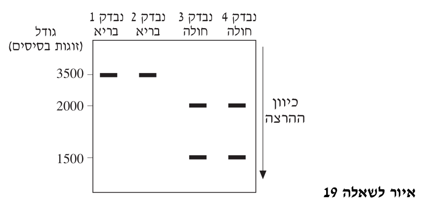
הסבר מדוע היה הבדל במספר הפסים ובגודל הפסים בין הנבדקים החולים ובין הנבדקים הבריאים.
אפשר לאתר את המוטציה גם בשיטת ה-PCR. הצע שני יתרונות לשיטת ה-PCR על-פני שיטת ההספג הדרומי.
כדי לאתר מוטציה בשיטת ה-PCR, צריך לדעת את רצף הגן באזור שבו עלולה להתרחש המוטציה. הסבר מדוע.
במעבדה החוקרת את התהליך של ייצור הפיגמנט האדום בעין של זבוב הפירות, רצו חוקרים לבודד את האנזים P, המעורב במסלול של ייצור הפיגמנט. במחקרים קודמים הם קבעו את רצף הבסיסים של קטע קטן בגן המקודד לאנזים P. עתה הם מעוניינים לבודד את הגן הזה על-ידי בנייה של ספריית DNA משלים (cDNA).
הסבר בקצרה מהי ספריית DNA משלים.
ציין הבדל אחד בין ספריית DNA משלים ובין ספרייה גנומית.
החוקרים מיצו חומצות גרעין משלושה סוגי תאים (1, 2 ו-3) מעין הזבוב, וביצעו אנליזת הספג צפוני (northern blotting). באנליזה הם השתמשו בגלאי מן הגן המקודד לאנזים. התוצאות שהתקבלו מוצגות באיור לשאלה (ככל שעוצמת התגובה עם הגלאי חזקה יותר, כך צבע הפס המתקבל כהה יותר).
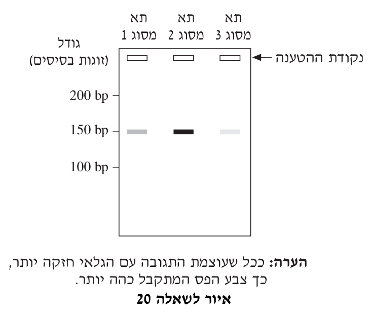
ציין את הסוג של חומצת הגרעין שנבדקה בשיטת ההספג הצפוני, ותאר בקצרה את השיטה הזאת.
מדוע, לדעתך, ביצעו החוקרים את האנליזה הזאת בשלב הראשון, לפני הבנייה של ספריית ה-DNA המשלים?
על-סמך האיור, באיזה סוג תאים (1, 2 או 3) תציע לחוקרים להשתמש כדי לבנות את הספרייה? הסבר את תשובתך.
לפניך כתבה מאת תמרה טראובמן שהתפרסמה בעיתון "הארץ" בתאריך 27.11.02. קרא בעיון את הכתבה, והסתמך עליה בתשובה לסעיפים א'–ד'.
תזונתה של יותר ממחצית אוכלוסיית העולם נסמכת בעיקר על אורז, אך תנאי חקלאות קשים ובצורת במדינות עניות מקשים על גידול כמויות אורז מספיקות להשבעת רעבונם של מיליארדי בני אדם. כמה מדענים מנסים לשפר את תפוקת גידולי האורז באמצעות פיתוחים גנטיים: בתחילת השנה פרסמו שני צוותי מחקר רב-לאומיים עותק מפוענח של הגנום של שני זני האורז הנפוצים ביותר, ובאירופה עוסקים מדענים בפיתוח אורז בעל כמויות מוגברות של הוויטמין A, שמחסור בו הוא הגורם העיקרי לעיוורון ילדים בהודו.
היום יתפרסם מחקר נוסף, שבו הצליחו מדענים מקוריאה ומארה"ב לפתח זן אורז בעל יכולת משופרת לגדול בתנאי בצורת ומים מליחים. הזן יוצר באמצעות הנדסה גנטית, ושולבו בו גנים מהחיידק אי-קולי. כדי להפוך את הזן לעמיד יותר, חיברו המדענים שני גנים שנלקחו מהחיידק, והחדירו אותם לאורז בסמתי. הגנים האלה אחראים על ייצור נגזרת של סוכר ששמה "טרהלוז", שנמצאת בכמויות קטנות בסוגים רבים של צמחים, חרקים, פטריות וחיידקים, וכן בכמויות גדולות יחסית בצמחים המסוגלים לשרוד תקופות ממושכות בתנאי בצורת, ואז לשוב ולצמוח כשהם מקבלים שוב מים. לדברי פרופ' אג'אי גראג, ראש צוות המחקר, להוספת הגנים לאורז הייתה השפעה דומה על הצמח. "אנו יכולים למנוע מים מהצמח במשך 10 ימים, ואז הוא ייראה כמת", אמר גראג, "אך כשמוסיפים לצמח מים הצמח משתקם". לעומת זאת, הוסיף גראג, צמחי אורז רגילים לא יוכלו להשתקם בנסיבות דומות.
צוות החוקרים גם בדק את עמידותו של זן האורז החדש למים מליחים, וגילה כי גם בתחום זה חל שיפור. "לאחר חשיפה ממושכת למים מליחים, כמעט כל הצמחים המהונדסים גנטית שרדו. לעומת זאת, כל הצמחים הלא-מהונדסים מתו או כמעט מתו בגלל הנזק", כתבו החוקרים בדוח המחקר, שיתפרסם היום במהדורת האינטרנט של כתב העת המדעי "PNAS". לדברי פרופ' רי וו, שותף במחקר, משמעות הדבר היא שחקלאים יוכלו לגדל אורז בשדות, שבהם לא היה אפשר לעשות זאת בעבר בגלל קרקע מליחה או צחיחה או בגלל מזג אוויר קר.
יחד עם הגנים הוחדרו לאורז מקטעי DNA, השולטים בתזמון ובמיקום שבו יפעלו הגנים בצמח. לדברי וו הגנים נכנסים לפעולה רק כשהצמח נחשף לתנאי מים מליחים. הם פועלים בגזע הצמח ובעלים שלו, אך לא בגרעינים המשמשים לאכילה. האורז החדש עדיין אינו מוכן לשיווק, והוא נבדק רק בניסויי מעבדה. החוקרים מעריכים כי להשלמת פיתוחו יידרשו עוד כמה שנים. לדבריהם, יש לערוך גם ניסויי בטיחות כדי לוודא כי הזן החדש בטוח לשימוש.
באירופה, ובמידה מסוימת גם בארה"ב ובישראל, מושמעת התנגדות עזה לגידולים מהונדסים גנטית. ההתנגדות נשמעת מגורמים רבים, ונובעת מסיבות שונות. גורמים דתיים-שמרניים בארה"ב, למשל, טוענים כי ההנדסה הגנטית היא פגיעה בבריאת האל; קבוצות צרכנים, ארגונים להגנת הסביבה ומבקרי הגלובליזציה טוענים כי הגידולים המהונדסים עלולים לפגוע בסביבה ובבריאות האדם, וכי תאגידי הענק, המייצרים את הצמחים, מפעילים באמצעותם סוג חדש של מונופול על החקלאות ועל צריכת המזון. הגידולים המהונדסים הקיימים כיום בשוק עוצבו כדי להגביר את תפוקת היבולים, ונועדו להגדיל את עושרן של חברות הביוטכנולוגיה ואת רווחי החקלאים. ואולם, כאמור, הפיתוח החדש עשוי להתברר כרלוונטי בעיקר לעניים. מדענים רבים מקווים כי גידולים מסוג זה יסייעו לשפר את התדמית הגרועה שנוצרה עד כה לצמחים המהונדסים.
כל הזכויות שמורות לעיתון "הארץ" בע"מ. COPYRIGHT © "HA'ARETZ" DAILY NEWSPAPER LTD
כדי לייצר צמחי אורז בעלי תכונות של עמידות בתנאי בצורת ושל עמידות בתנאים של מים מליחים, החדירו חוקרים גנים לצמחי האורז. מהיכן לקחו החוקרים את הגנים? מהו תפקידם? מדוע בחרו החוקרים להחדיר דווקא את הגנים האלה?
הצע לחוקרים ניסוי שיאפשר לקבוע אם תהליך החדרת הגנים הביא לידי יצירת צמח אורז בעל התכונות הרצויות. תאר בקצרה את הניסוי. בתשובתך התייחס לתנאי הניסוי ולביקורות בניסוי.
החוקרים בחרו צמח אורז שבו הצליח התהליך של החדרת הגנים, ובדקו את רמת הביטוי של הגנים שהוחדרו בחלקי הצמח השונים. הצע דרך המאפשרת להשוות את רמת הביטוי של הגנים בין החלקים השונים של צמח האורז.
אפשר להחדיר לצמחי האורז גנים אחרים כדי להקנות להם תכונות נוספות. העתק למחברתך את הטבלה שלפניך.
| התכונה | החשיבות של הקניית התכונה | חלקי האורז שבהם התכונה צריכה להתבטא |
|---|---|---|
רשום בטבלה תכונה נוספת המוזכרת במאמר (שונה מאלה המצוינות בסעיף א'), ותכונה אחרת שאינה מוזכרת במאמר, שאותה היית מציע להקנות לאורז בשיטות של הנדסה גנטית. פרט לגבי כל אחת משתי התכונות שרשמת, בטורים המתאימים בטבלה, מדוע חשוב להקנות את התכונה שהצעת, ובאילו חלקים באורז (בעלים, בגזע או בגרעינים) התכונה הזאת צריכה להתבטא.
החלבון HER2 הוא קולטן הקושר אליו הורמון גדילה. למעלה מרבע ממקרי סרטן השד בנשים מתאפיינים בביטוי מוגבר של החלבון HER2 על ממברנת התא הסרטני. קשירת הורמון הגדילה על-ידי HER2 גורמת לחלוקה מהירה של התאים האלה ויצירת גידול סרטני. חוקרים במעבדה בודדו נוגדן חד-שבטי (מונוקלונלי) המכוון נגד HER2. החוקרים גילו כי מתן הנוגדן לנשים החולות בסרטן השד עוזר להן להילחם במחלה.
מהו נוגדן חד-שבטי?
כיצד, לדעתך, נוגדן המכוון נגד HER2 עוזר להילחם בסרטן? הסבר את תשובתך.
איזו בעיה יכולה להתעורר כאשר משתמשים בנוגדנים חד-שבטיים, שהופקו מתאי עכבר, לריפוי מחלות אצל בני אדם? הצע שיטה שבאמצעותה אפשר להתגבר על הבעיה הזאת.
סוג אחר של סרטן מתאפיין בביטוי של החלבון A על ממברנת התא הסרטני. כדי לטפל בסוג הסרטן הזה, בדקו החוקרים שתי תרופות, המבוססות על אותו נוגדן חד-שבטי נגד החלבון A. התרופה I מורכבת מנוגדן שאליו קשור רעלן (טוקסין), והתרופה II מורכבת מאותו נוגדן שאליו קשור חומר רדיואקטיבי. החוקרים לקחו שתי קבוצות עכברים, החולים בסוג הסרטן הזה. הם נתנו לכל קבוצה אחת מן התרופות (I או II), ועקבו אחר קוטר הגידול הסרטני, כתלות בזמן. תוצאות הניסוי מוצגות באיור לשאלה.
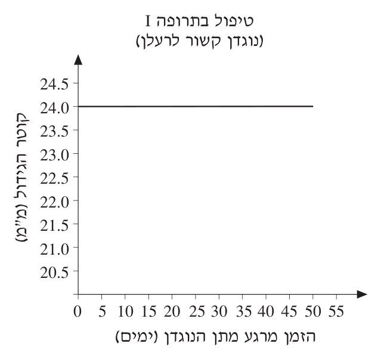
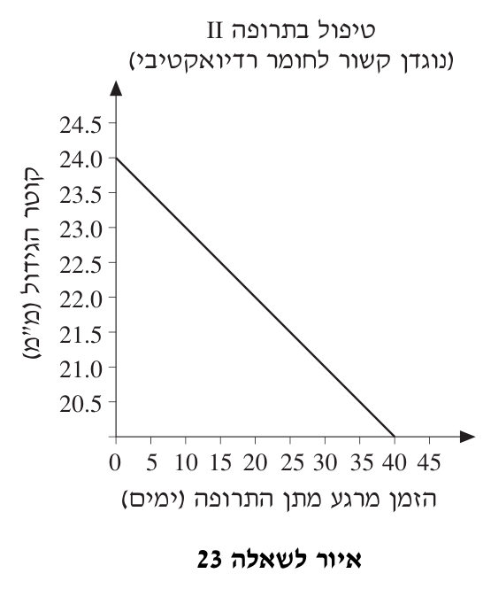
הצע הסבר לתוצאות שהתקבלו. בתשובתך התייחס להבדל בדרך הפעולה של כל אחת מן התרופות על התאים הסרטניים.
כדי ליצור נוגדנים כנגד וירוס הווקסיניה, הזריקו חוקרים את הווירוס המוחלש לפָּרות. לאחר כל חיסון נלקחה מנת דם מן החיה המחוסנת, והנוגדנים נוקו משאר רכיבי הסרום.
האם הנוגדנים שהפיקו החוקרים מן הפָּרות המחוסנות הם חד-שבטיים (מונוקלונליים) או רב-שבטיים (פוליקלונליים)? הסבר את תשובתך, ועמוד על ההבדלים בין שני סוגי הנוגדנים.
החוקרים בדקו את יכולת הקישור של הנוגדנים לווירוס בעזרת מבחן אימונואנזימתי, על מצע מוצק (ELISA). הם ציפו את צלחת הבדיקה בריכוז X של הווירוס, ואחר-כך הוסיפו לכל באר בצלחת ריכוז שונה של נוגדני הפרה. לאחר שטיפת הבארות, הם הוסיפו לכל אחת מהן נוגדן שניוני כנגד נוגדני הפרה, המוצמד לאנזים. החוקרים מדדו את עוצמת הצבע המתקבלת כתוצאה מפעילות האנזים, כתלות בריכוז הנוגדן הנבדק. עקומה 1 באיור לשאלה מתארת את התוצאות שהתקבלו.
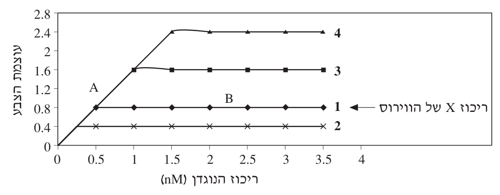
הסבר מדוע בחלק B של העקומה העלייה בריכוז הנוגדן אינה משפיעה על עוצמת הצבע המתקבלת. (הנח כי הראקציה האנזימתית, ועוצמת הצבע המתקבלת כתוצאה ממנה, אינן הגורם המגביל.)
החוקרים ציפו את צלחת הבדיקה בריכוז כפול של הווירוס (ריכוז 2X), ובדקו את קישור הנוגדנים לצלחת באותה דרך שהוזכרה קודם. ציין איזו מבין שלוש העקומות באיור לשאלה (2, 3 או 4) מתארת את קישור הנוגדנים לצלחת המצופה בריכוז 2X של הווירוס. הסבר את קביעתך.
חוקרת רצתה להפיק את המטבוליט המִשני X מצמח עגבנייה. היא התלבטה בין שתי דרכים:
I. הפקת המטבוליט מצמח העגבנייה השלם.
II. הפקת המטבוליט מתרבית תאים של צמח העגבנייה.
לאחר מחשבה מעמיקה החליטה החוקרת להפיק את המטבוליט מתרבית תאים של הצמח.
ציין שני יתרונות להפקת המטבוליט המשני X מתרבית תאים של הצמח על-פני הפקתו מן הצמח השלם.
ציין שני חסרונות של הפקת המטבוליט המשני X מתרבית תאים של הצמח לעומת הפקתו מן הצמח השלם.
החוקרת יצרה שבע תרביות קאלוס מצמח העגבנייה (1–7), וקבעה את רמת המטבוליט המִשני X בכל אחת מהן. התוצאות שהתקבלו מוצגות באיור לשאלה.
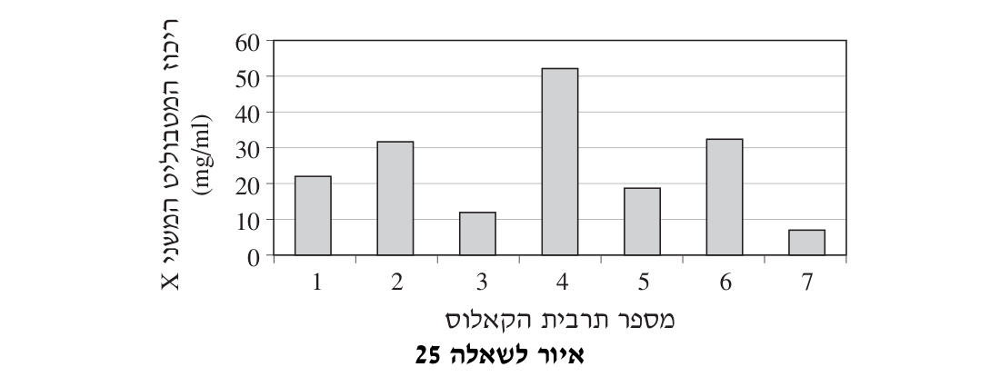
הסבר מהי תרבית קאלוס.
הסבר מה גרם להבדלים בריכוז המטבוליט המִשני X בין התרביות השונות.
באיזו תרבית תציע לחוקרת להמשיך במחקר? נמק את תשובתך.
החוקרת החליטה לפתח מתרבית הקאלוס המתאימה צמחי עגבנייה שלמים, כדי שתוכל להחזירם לשדה. לפני שהחזירה את צמחי העגבנייה לשדה, החליטה החוקרת להחדיר לצמחים האלה את חלבון המעטפת של וירוס השפעת, כדי ליצור עגבניות שיקנו חיסון נגד שפעת למי שיאכל אותן. היא השתמשה בחיידקי אגרובקטריום טומפצינס מתאימים, המכילים את הגן המקודד לחלבון המעטפת של הווירוס. החוקרת פצעה כמה עלים בצמח העגבנייה, והדביקה אותם בחיידקי האגרובקטריום. לאחר כמה שבועות, גילתה החוקרת שהעגבניות שגדלו על הצמח המודבק לא הכילו את חלבון המעטפת של הווירוס.
הצע הסבר לממצא הזה.
חוקרים גידלו במעבדה שתי תרביות תאים, תרבית א' ותרבית ב', שמקורן מאותה רקמה. באיור לשאלה מוצגים שני גרפים. כל גרף מתאר את כמות התאים הכוללת באחת מן התרביות, כתלות בזמן הגידול.
בגרפים באיור לשאלה מסומנים האזורים A–D. ציין את סוג תרבית התאים בכל אחד מן האזורים.
הסבר את ההבדל בין תרבית א' ובין תרבית ב'. בתשובתך התייחס להבדל בין האזור C ובין האזור D.
חברת "פפטידוגן" מעוניינת לייצר באופן מסחרי את החלבון פקטור IX בתרביות תאים מבעלי חיים. האם תמליץ לחוקרים בחברה להשתמש בתרבית התאים המתוארת באזור A או בתרבית התאים המתוארת באזור C? נמק את תשובתך.
בחברה המתחרה לחברת "פפטידוגן" דיווחו על יצירת זן טרנסגני של פָּרות, המפרישות את החלבון פקטור IX בחלב. ציין יתרון אחד של ייצור החלבון בדרך הזאת על-פני ייצור החלבון בתרביות תאים.
ייצור זנים טרנסגניים נעשה על-ידי החדרת הגן הרצוי לתאי העובר של הפרה. הפרה שתתפתח מן התאים האלה תפריש את החלבון הרצוי בחלב. הצע שיטה אחרת שבאמצעותה תוכל לגרום להפרשת החלבון פקטור IX בחלב הפרה.
אחת הגישות לטיפול בבעיות איכות הסביבה היא הגישה הביוטכנולוגית, שבה משתמשים באורגניזמים שונים כדי לטפל בחומרים רעילים.
הסבר מדוע, ברוב המקרים, מעדיפים להשתמש בחיידקים כדי לטפל בחומרים רעילים, ולא באורגניזמים אחרים. ציין את התוצרים העיקריים בפירוק אווירני (ארובי) של חומרים אורגניים על-ידי חיידקים, ואת יתרונם של התוצרים האלה על-פני חומרי המוצא שלהם.
חוקרים רצו לבודד חיידק המסוגל לפרק את החומר הרעיל טולואן. לשם כך הם לקחו שתי דגימות קרקע זהות, והוסיפו כל אחת מהן לכלי גידול שאִפשר התרבות תמידית של החיידקים (תרבית רציפה). הם הזרימו, באופן קבוע, לכל אחד מכלי הגידול, מצע טרי שהכיל טולואן: לכלי גידול אחד — מצע שהכיל טולואן בריכוז נמוך, ולכלי גידול אחר — מצע שהכיל טולואן בריכוז גבוה. החוקרים בדקו, בפרקי זמן שונים, את ריכוז כלל החיידקים ואת ריכוז החיידקים מפרקי הטולואן, בכל אחת מן התרביות. התוצאות שהתקבלו מוצגות באיור לשאלה.
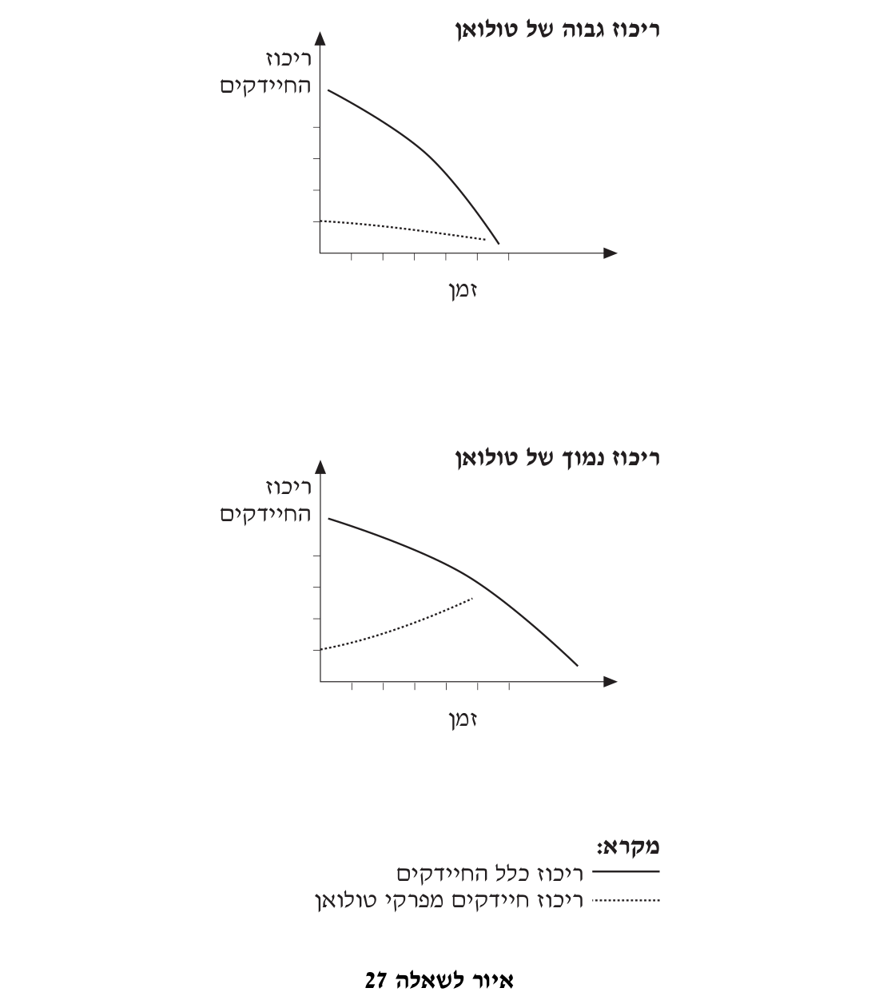
הסבר את התוצאות שהתקבלו. בתשובתך התייחס להבדלים בין ריכוז כלל החיידקים ובין ריכוז החיידקים מפרקי הטולואן, כפי שהתקבלו בריכוזי הטולואן שנבדקו.
באיזה ריכוז טולואן (גבוה או נמוך) תמליץ לחוקרים להשתמש כדי לבודד חיידקים מפרקי טולואן? נמק את תשובתך.
החוקרים אספו דגימות קרקע מכמה מקומות, אולם הם הצליחו לבודד חיידקים מפרקי טולואן רק מדגימת קרקע אחת. דגימת הקרקע הזאת נלקחה ממגרש סמוך למפעל המייצר טולואן מזה שנים רבות. הסבר מדוע נמצאו החיידקים הרצויים רק סמוך למפעל הזה.
החוקרים פיזרו את החיידקים מפרקי הטולואן שבודדו בשני שדות: בשדה הראשון, המזוהם בטולואן בלבד, חלה ירידה בריכוז הטולואן בתוך מספר שבועות. בשדה השני, המזוהם בשפכים המכילים טולואן וכספית, לא חל שינוי בריכוז הטולואן. הסבר מדוע לא חל שינוי בריכוז הטולואן בשדה השני, והצע דרך לפתור את הבעיה.
במכון לטיהור מי שפכים מתבצע תהליך הטיהור בכמה שלבים: השלב הראשון הוא השלב המכני, ובשלב השני השפכים עוברים לאגני חמצון.
הסבר בקצרה מה מתבצע בשלב המכני, ומהו עקרון הפעולה של אגני החמצון. ציין יתרון אחד וחיסרון אחד של שימוש באגני חמצון.
במכון הטיהור הוחלט להוסיף אצות לאגני החמצון. הסבר מהי המטרה של הוספת האצות.
לאחרונה הוחלט להקים במכון הטיהור אתר נוסף לטיהור שפכים, אשר יופעל בשיטת הבוצה המשופעלת. תאר בקצרה את שלבי התהליך של טיהור השפכים בשיטה הזאת. ציין דרך המשמשת להחדרת אוויר לבוצה המשופעלת ודרך לסילוק הבוצה. ציין יתרון אחד של השימוש בשיטת הבוצה המשופעלת.
במכון לטיהור מי שפכים לקחו כמה דגימות של מי שפכים בשלבים שונים של תהליך הטיהור. בכל דגימה בוצעו שתי בדיקות: בדיקה של צריכת חמצן ביולוגית (BOD) ובדיקה של צריכת חמצן כימית (COD). באיור שלפניך מתוארות תוצאות הבדיקות של הדגימות.
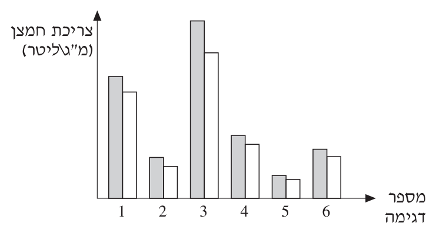
קבע אילו מן העמודות (אפורות או לבנות) מתארות את צריכת החמצן הביולוגית ואילו מהן מתארות את צריכת החמצן הכימית. נמק את תשובתך.
קבע איזו מבין הדגימות נלקחה בתחילת תהליך הטיהור, ואיזו מהן נלקחה בתום תהליך הטיהור. הסבר את תשובתך.
קבוצת חוקרים הכינה שתי תת-יחידות, תת-יחידה A ותת-יחידה B. התת-יחידות מוצגות בצורה סכמתית באיור לשאלה. החוקרים ערבבו במבחנה כמות מתאימה של שתי התת-יחידות, ובתהליך של הרכבה עצמית (self assembly) התקבל המבנה C, המופיע גם הוא באיור.
מהו העיקרון של תהליך ההרכבה העצמית, ומהו הכוח המניע ליצירת מבנים בתהליך הזה?
האם התהליך שבו השתמשו החוקרים ליצירת המבנה C מייצג ייצור מבנה ננו בגישה "מלמעלה למטה" (top down) או ייצור מבנה ננו בגישה "מלמטה למעלה" (bottom up)? נמק את תשובתך.
האם אפשר לבנות מבנה בעל תבנית זהה לזו של המבנה C גם בשיטת הפוטוליתוגרפיה באמצעות קרני UV (קרניים אולטרא-סגולות, שאורך הגל שלהן הוא 250 ננומטר)? הסבר את תשובתך.
התת-יחידות A ו-B מייצגות שתי מולקולות ביולוגיות. הבא דוגמה לזוג מולקולות ביולוגיות אשר יכולות להתחבר וליצור את המבנה המתואר. בתשובתך התייחס למספר אתרי הקישור הדרושים לכל אחת מן המולקולות.
חוקרים מעוניינים לשלב את המבנה C בהתקן אלקטרוני. ציין תנאי אחד חיוני לשילוב הזה, והצע רעיון לשימוש אפשרי של המבנה C בהתקן האלקטרוני.
במעבדת מחקר עוסקים בפיתוח מערכים שונים המשלבים מקרומולקולות ביולוגיות עם ננו-חלקיקים אי-אורגניים.
ציין יתרון אחד וחיסרון אחד של שימוש במקרומולקולות ביולוגיות כאבני בניין ליצירת מערכי ננו.
החוקרים מעוניינים ליצור מערך המשלב ננו-חלקיקים מצופים זהב ו-DNA. ברשותם אבני הבניין המוצגות בטבלה:
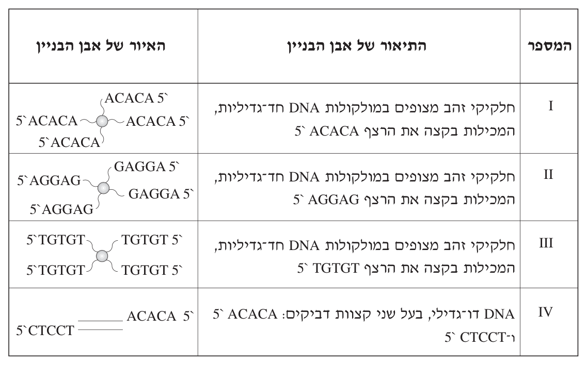
ציין איזה צירוף של אבני בניין, מבין אלה המוצגות בטבלה, מאפשר ליצור מערך בתהליך של הרכבה עצמית. הסבר את תשובתך.
החוקרים יצרו מערך אחר, שאבני הבניין שלו הן החלבון סטרפטאבידין, ומקטעי DNA דו-גדילי, שבקצה שלהם מחובר ביוטין. אבני הבניין שהתקבלו מתוארות באופן סכמתי באיור לשאלה.
צייר בצורה סכמתית מבנה אפשרי של מערך, שייווצר מאבני הבניין האלה.
האם ישנה חשיבות לרצף הבסיסים במולקולות ה-DNA המשתתפות במערך הזה? האם ישנה חשיבות לרצף של מולקולות ה-DNA המשתתפות במערכים המתוארים בסעיף ב'? הסבר את תשובותיך, והתייחס לתפקיד של מולקולות ה-DNA בכל אחד מן המערכים.
באיור שלפניך מוצגים אתרי ההכרה של ארבעה אנזימי הגבלה שונים. נקודות החיתוך של כל אנזים ברצף מסומנות בחיצים.
כדי לשבט מִחְדָר (מקטע DNA) בפלסמיד בעזרת שני אנזימים,
חוקרים מעוניינים לבודד מחיידק מסוים את מקטע המקדם (פרומוטור) של גנים המאפשרים לחיידק לנצל כלורופורם. מה עליהם לעשות?
מהו סדר השלבים בבניית ספריית cDNA?
לפניך ארבעה מרכיבים. איזה מהם אין צורך להוסיף בזמן ביצוע PCR?
נשא המיועד לשיבוט cDNA ולביטוי החלבון המקודד חייב להכיל רצפי בקרה לתהליך השעתוק, אתרי הכרה לאנזימי הגבלה, מוצא הכפלה וסמני ברירה.
לעומתו, נשא המיועד לשיבוט גן ולביטוי החלבון המקודד אינו חייב להכיל
בחיתוך הפלסמיד A באנזים ההגבלה X התקבלו שלושה מקטעי DNA לינאריים. מהו ההיגד הנכון?
השלב הראשון בתהליך של יצירת נוגדן מונוקלונלי הוא בידוד תאי ה-B מטחול של חיה מחוסנת. מהו סדר השלבים הנכון בהמשך התהליך?
מקטע ה-Fc בנוגדן:
באיור שלפניך מוצגות התוצאות של שני ניסויי אימונודיפוזיה כפולה בג'ל. בגומה המסומנת בחץ הונחה תמיסת הנוגדנים, ובשאר הגומות הונחו האנטיגנים A, B, C או D.
מהו ההיגד הנכון?
כשמגדלים תרבית תאים שמקורה בבעלי חיים, יש להוסיף לה:
קיימים כמה סוגים של תרביות תאים שמקורן בבעלי חיים. מהו המשפט הנכון?
אפשר להשתמש באיחוי פרוטופלאסטים של תאים ממקור צמחי,
כדי להגביר את הסיכוי למצוא חיידק, המסוגל לנצל כימיקל אורגני רעיל מן הקרקע בתרבית העשרה רציפה:
קיימות שתי שיטות עיקריות לטיהור שפכים:
I. שיטת אגני החמצון
II. שיטת הבוצה המשופעלת
מהו ההיגד הנכון?
בתהליך הלבנת נייר משתמשים בתרכובות שונות של כלור, ונוצרות נגזרות של כלור, הרעילות לסביבה. איזה אמצעי אינו גורם להפחתת זיהום הסביבה?
בשיטת הננו-ליתוגרפיה באמצעות קרן אלקטרונים,
בתהליך הרכבה עצמית,
לפניך איור של ננו-מבנה המבוסס על מקרומולקולות ביולוגיות.
מהן יחידות המבנה המשמשות ליצירת הננו-מבנה המתואר באיור?
צורת הכנף של פרפרים נקבעת על-פי מספר הגנים בתאי הפרפר. אספן פרפרים מצא כמה פרפרים בעלי צורות כנף חריגות. בשלב הראשון הוא החליט לבצע ראקציית PCR על מיצוי DNA מכל אחד מן הפרפרים האלה.
תאר את השלבים של ראקציית PCR, את התנאים שבהם מתבצע כל אחד מן השלבים ואת מטרתו של כל שלב.
האספן השתמש בראקציות ה-PCR בשני פריימרים (תחלים), A ו-B. כל אחד מן הפריימרים זהה לרצף אחר על-גבי גן מסוים, המעורב בקביעת צורת הכנף של הפרפר. שני הרצפים מרוחקים זה מזה 1540 זוגות בסיסים. לאחר ביצוע הראקציות, הריץ האספן את תוצרי ה-PCR בג'ל אלקטרופורזה. התוצאות שהתקבלו מוצגות באיור לשאלה.
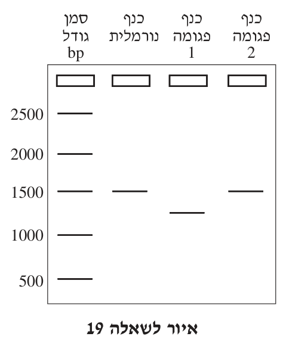
הסבר את התוצאות שהתקבלו בכל אחת מראקציות ה-PCR. בתשובתך התייחס לגודל התוצר, ולסוג השינוי שחל בגן בכל אחת מן הכנפיים הפגומות.
בשלב השני חתך האספן את תוצר ה-PCR שהתקבל בכל אחת מן הראקציות באנזים הגבלה X. להפתעתו, תוצר ה-PCR שהתקבל מן הכנף הנורמלית וזה שהתקבל מן הכנף הפגומה 1 לא נחתכו, אבל תוצר ה-PCR שהתקבל מן הכנף הפגומה 2 נחתך לשני מקטעים.
הסבר כיצד ייתכן שתוצר ה-PCR שהתקבל מן הכנף הפגומה 2 נחתך, ואילו זה שהתקבל מן הכנף הנורמלית לא נחתך.
במעבדה החוקרת את מסלול הביוסינתזה של החומצה האמינית היסטידין נמצאו כמה סוגים של חיידקי E. coli מוטנטים, שאינם יכולים לסנתז היסטידין. מטרת החוקרים במעבדה הייתה לגלות את הגן הפגום בכל אחד מן המוטנטים. החוקרים החליטו לבנות ספרייה גנומית מ-DNA של זן הבר, בשיטת הירייה באפלה. לשם כך הם השתמשו בנשא pUC20, המוצג באיור א' לשאלה.
תאר בקצרה את השלבים שיש לבצע בשיטת הירייה באפלה כדי לקבל את הספרייה הגנומית. בתשובתך ציין באיזה אנזים הגבלה החוקרים צריכים להשתמש: A או B.
לאחר בניית הספרייה, החדירו החוקרים, בשיטת הטרנספורמציה, את הפלסמידים של הספרייה לשניים מן הזנים המוטנטים, מוטנט 1 ומוטנט 2. בתום התהליך נזרעה כמות שווה של חיידקים על-גבי צלחות מצע עשיר (מצע המכיל גם היסטידין). שתי צלחות הכילו קנמיצין, ושתי צלחות אחרות הכילו אמפיצילין. התוצאות שהתקבלו על-גבי הצלחות מוצגות בטבלה שלפניך.
| הזן | המושבות על צלחת מצע עשיר שהכילה אמפיצילין | המושבות על צלחת מצע עשיר שהכילה קנמיצין |
|---|---|---|
| מוטנט 1 | רובד חיידקים צפוף | מעט מושבות |
| מוטנט 2 | רובד חיידקים צפוף | מעט מושבות |
ידוע שיעילות הטרנספורמציה נמוכה. הסבר מדוע על מצע עשיר המכיל אמפיצילין התקבל רובד חיידקים צפוף, ואילו על מצע עשיר המכיל קנמיצין התקבלו מעט מושבות.
הסבר מדוע לא הצליחו החוקרים לבודד את הגן הפגום (הגן לסינתזה של היסטידין) בניסוי שתואר בסעיף א'.
כדי ללמוד על מסלול ייצור ההיסטידין בחיידק אחר — Bacillus, הפיקו החוקרים DNA מחיידקי Bacillus ומחיידקי E. coli מזן הבר. ה-DNA של כל אחד מסוגי החיידקים נחתך באותו אנזים הגבלה, ושימש לביצוע הספג דרומי, עם גלאי מן הגן Y של החיידק E. coli. הגן הזה מקודד לחלבון המשתתף בביוסינתזה (ייצור) של היסטידין. התוצאות שהתקבלו מוצגות באיור ב' לשאלה.
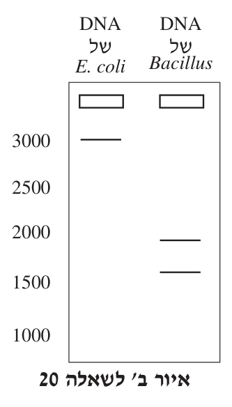
הצע הסבר להבדל שהתקבל בין ה-DNA של החיידק E. coli ובין זה של החיידק Bacillus.
לפניך קטע שעובד על-פי הכתבה "עגבניית הבר תייצר לנו תרופות", מאת מרית סלוין. הכתבה התפרסמה בעיתון "הארץ" בתאריך 2.11.04. קרא את הכתבה בעיון, והסתמך עליה בתשובה לסעיפים א'–ד'.
חלבונים אנושיים משמשים לטיפול במחלות רבות. חברה ישראלית מצאה דרך מקורית לייצר אותם.
השימוש בחלבונים ממקור אנושי כתרופות הולך וצובר תאוצה. אינסולין, הורמון הגדילה, חלבונים המעוררים יצירת תאי דם חדשים וחלבונים רבים אחרים משמשים לטיפול בסרטן, במחלות אוטואימוניות, במחלות לב וכלי דם, במחלות תורשתיות ועוד.
כדי להפיק באופן מסחרי חלבונים אנושיים יש צורך ב"מכונה" ביולוגית, שתדע לייצר אותם בכמויות גדולות, וחיידקים מסוגלים למלא את המשימה הזאת. בתוך החומר הגנטי שלהם מושתל הגן האנושי, שאחראי על יצירת החלבון הנדרש. הגן החדש משתכפל כחלק בלתי נפרד מן ה-DNA של החיידק, והחלבון האנושי נוצר עם חלבוני החיידק. מכיוון שחיידקים מתחלקים כל עשרים דקות בערך, ואפשר לגדל אותם בכמויות עצומות, הם יכולים לשמש "בית חרושת" יעיל לייצור חלבונים אנושיים. ואכן, חלק מן התרופות, המבוססות על חלבונים ממקור אנושי ונמצאות היום בשימוש, מיוצרות בחיידקים. אבל החיידקים אינם מסוגלים לייצר חלבונים אנושיים רבים בעלי פוטנציאל תרופתי, ולכן מדענים מחפשים מערכת ביולוגית אחרת שתאפשר זאת.
אחד הפתרונות הוא שימוש בתאי יונקים. היום מייצרים חלבונים אנושיים ומוצרים ביולוגיים אחרים בתאי יונקים, אבל גם המערכת הזאת רחוקה מלהיות אידאלית. תאי היונקים מתחלקים לאט יותר מתאי חיידקים, והתהליך של התאמת התאים לייצור החלבונים יקר, מורכב וממושך. כדי לייצר את החלבון בכמויות מסחריות, נדרשות ארבע-חמש שנים. העלות הראשונית של הקמת מפעל לחלבון בודד, העומד בסטנדרדים הנדרשים, גבוהה. גם עלויות הייצור השוטף גבוהות. כמו כן, בתאי יונקים קיים חשש של זיהום סמוי בחלקיקים המעבירים את מחלת הפרה המשוגעת, או של הימצאות נגיפים כמו צהבת B ונגיף האיידס.
החברה הישראלית "אווג'ין" (Evogene), העוסקת בפיתוח שיטות ביוטכנולוגיות לטיפוח צמחים, מצאה פתרון מבטיח. מדעני "אווג'ין" השכילו לנצל מערכת הישרדות מתוחכמת שפיתחו צמחי עגבניית הבר, המאפשרת להם להתגונן מפני החרקים התוקפים אותם. "על פני העלים, הגבעולים והפרחים של עגבניית הבר מפוזרות בצפיפות שערות הנקראות טריכומות, שבקצותיהן התפתחו תאי ענק הנראים כשלפוחיות", מסביר ד"ר גיל רונן, ראש פרויקט ייצור החלבונים ב"אווג'ין". "כשנוחת חרק על העלה, על הגבעול או על הפרח, הוא צועד על מעין שדה מוקשים. ברגע שהוא דורך על השערה, השלפוחית מתפוצצת, ומשתחרר ממנה חלבון ועוד כימיקל. ביחד הם יוצרים דבק המדביק את החרק לעלה, בדיוק באותו אופן שבו פועל דבק אפוקסי. אנחנו יודעים שהחלבון הטבעי המשתחרר מן השערות מיוצר שם בכמויות גדולות, ואפשר לאסוף אותו בקלות, שכן השלפוחיות שבקצות השערות מתפוצצות מיד כשהן באות במגע עם החיידק. החלטנו לנצל את המנגנון המתוחכם של הצמח לצרכינו".
מדעני "אווג'ין" מהנדסים את עגבניית הבר כך שבמקום שהצמח ייצר את החלבון הטבעי בשערות, הוא יוכל לייצר שם כל חלבון אחר, למשל, חלבונים בעלי פוטנציאל תרופתי. לשם כך בודדו המדענים את הגנים שעגבניית הבר פיתחה במהלך האבולוציה, המאפשרים ייצור כמות גדולה של חלבון יחיד בשערות. "לאחר שנוכחנו כי הדבר אפשרי, חיפשנו דרך להגדיל את כמות החלבון הנוצרת בשלפוחיות. בעתיד, הגדלת כמות החלבון תאפשר לנו להפיק את החלבון בכמויות מסחריות", אומר רונן. "באמצעות הכלאות ושיטות אגרוטכניות, הצלחנו לקבל זן של עגבניית הבר, המסוגל לייצר כמות של חלבון טבעי הגדולה פי 12 מן הכמות המקורית שלו".
השחרור המהיר והקל של החלבון מן השערות מאפשר לחוקרים לפתח תהליך יעיל להפקת החלבון הטבעי מן הצמחים, על-ידי שטיפת העלים בתמיסה המשמשת לאיסוף החלבון וניקויו. "עתה כשיש בידינו הטכנולוגיה המאפשרת לייצר את החלבון בשלפוחיות, אנחנו יכולים להפיק במערכת הזאת מגוון רחב של חלבונים", מסביר ד"ר גיל רונן.
© כל הזכויות שמורות להוצאת עיתון "הארץ" בע"מ
שתיים מן השיטות לייצור חלבונים ממקור אנושי, המוזכרות בכתבה, הן שימוש בחיידקים ושימוש בתאי יונקים.
על-סמך הכתבה, ציין יתרון אחד וחיסרון אחד של שימוש בחיידקים ליצירת חלבונים אנושיים.
ציין את כל החסרונות המוזכרים בכתבה של שימוש בתאי יונקים ליצירת חלבונים אנושיים.
חוקרי חברת "אווג'ין" הצליחו ליצור זן של עגבניית הבר, שבשלפוחיות שלה נוצרת כמות של חלבון טבעי, הגדולה פי 12 מן הכמות המקורית.
ציין באיזו דרך הצליחו החוקרים לעשות זאת.
הצע דרך אחרת להשיג אותה מטרה בעזרת הנדסה גנטית.
החלבון X הוא חלבון ממקור אנושי, המשמש תרופה. חוקרים מעוניינים ליצור זן של עגבניות, שבשלפוחיות שלהן ייוצר החלבון X בִּמקום החלבון המיוצר בהן באופן טבעי. הסבר בקצרה כיצד יוכלו החוקרים להשיג את המטרה הזאת, וכיצד יוכלו להפיק את החלבון X מהזן שייצרו.
החוקרים מתלבטים בין שתי גישות לביטוי החלבון X:
I. ביטוי החלבון בשלפוחיות של עגבניות הבר.
II. ביטוי החלבון בכל התאים של צמח כלשהו, שאינו מכיל את מערכת הטריכומות והשלפוחיות.
באיזו גישה, I או II, תמליץ לחוקרים להשתמש? נמק את תשובתך.
חוקרים בחברת תרופות מנסים לפתח חיסון אקטיבי (פעיל) כנגד וירוס הגורם למחלת הכלבת בבעלי חיים ובבני אדם.
הסבר מהו חיסון אקטיבי (פעיל) ומהו חיסון פסיבי (סביל). בחר אחת משיטות החיסון האלה, ופרט יתרון אחד וחיסרון אחד של השיטה שבחרת.
לבית חולים הגיע אדם שננשך על-ידי כלב החולה בכלבת. ידוע כי אדם הנדבק בכלבת עלול למות בתוך 21 יום מזמן הנשיכה, אם לא יטופל. איזה חיסון, אקטיבי או פסיבי, תציע לרופאים לתת לאדם שננשך? נמק את תשובתך.
רופאים לקחו דגימת דם מכלב החשוד כחולה בכלבת, והעבירו אותה למעבדה. הצע לחוקרים במעבדה מבחן שבעזרתו יוכלו לאמוד את הכמות של וירוס הכלבת בדמו של הכלב. פרט את השלבים במבחן שהצעת.
חוקרים הזריקו לעכברים וירוס מוחלש של כלבת כמה פעמים. אחר-כך הם לקחו דגימת דם מן העכברים האלה, והפיקו ממנה את מקטע הסרום שהכיל את הנוגדנים. כדי להפריד את הנוגדנים משאר רכיבי הסרום, השתמשו החוקרים בעמודת זיקה, שבה וירוס הכלבת מוצמד לשרף.
החוקרים הטעינו את מקטע הסרום על העמודה, ולאחר שטיפות שִחררו את הנוגדנים. הם בדקו את הריכוז שלהם ואת היכולת של הנוגדנים האלה לקשור את וירוס הכלבת. החוקרים גם קבעו את ריכוז הנוגדנים בדגימת הסרום של העכברים (ללא ניקוי), ואת יכולת הנוגדנים, בדגימת הסרום הזאת, לקשור את וירוס הכלבת.
לפניך התוצאות שהתקבלו: אף-על-פי שריכוז הנוגדנים שנותקו מן העמודה היה נמוך מריכוז הנוגדנים בסרום של העכברים המחוסנים, יכולת הנוגדנים לקשור את הווירוס הייתה זהה בשני המקרים.
הצע הסבר לתופעה הזאת.
חוקרים במעבדה יצרו נוגדן חד-שבטי (מונוקלונלי) כנגד פפטיד X. הפפטיד X מכיל 10 חומצות אמיניות. כדי לקבוע מהו החלק מתוך הפפטיד X, שאותו קושר הנוגדן שיוצר, סינתזו החוקרים שני פפטידים קצרים יותר (A ו-B) בעלי 6 חומצות אמיניות:
— בפפטיד A חסרות 4 חומצות אמיניות מקצה I (הקצה ה-N טרמינלי) של הפפטיד X.
— בפפטיד B חסרות 4 חומצות אמיניות מקצה II (הקצה ה-C טרמינלי) של הפפטיד X.
החוקרים ערכו מבחן אימונואנזימתי תחרותי על מצע מוצק (ELISA). בשלב הראשון ציפו החוקרים את צלחת ה-ELISA בפפטיד X, ולאחר כמה שטיפות הדגירו את הצלחת עם חלבון אינרטי.
מה הייתה המטרה של החוקרים כשהוסיפו את החלבון האינרטי לצלחת המבחן האימונואנזימתי על מצע מוצק (ELISA)?
החוקרים סימנו את הנוגדן כנגד הפפטיד X באנזים. בשלב השני הם ערבבו כמות קבועה של הנוגדן המסומן עם ריכוזים משתנים של כל אחד מן הפפטידים X, A ו-B. אחר-כך הוסיפו החוקרים את תערובת הנוגדן, עם כל אחד מן הפפטידים, לצלחת ה-ELISA המצופה בפפטיד X. החוקרים בדקו את אחוז הקישור של הנוגדן לצלחת הבדיקה, כתלות בריכוזי כל אחד מן הפפטידים בתמיסה. תוצאות הבדיקה מוצגות באיור לשאלה.
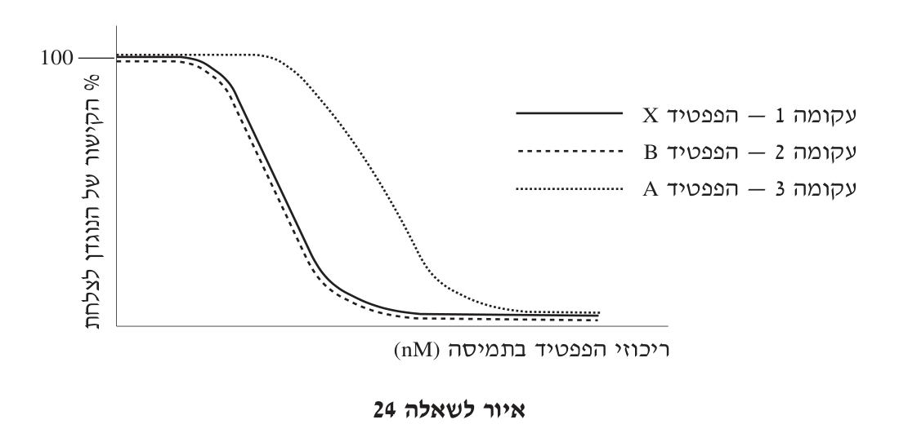
על-סמך עקומה 1, הסבר מדוע עלייה בריכוז הפפטיד בתמיסה גרמה לירידה באחוז הקישור של הנוגדן לצלחת הבדיקה. בתשובתך התייחס לעיקרון שעליו מתבסס מבחן ELISA תחרותי.
הסבר את ההבדלים בין עקומות 1 ו-2 ובין עקומה 3. בתשובתך התייחס לזיקה של הנוגדן לכל אחד משלושת הפפטידים, X, A ו-B.
קבע איזה קצה בפפטיד X, I או II, תורם לקישור הנוגדן. הסבר את תשובתך.
חוקרים הצליחו לבודד גן המקודד להורמון אריתרופויטין בבני אדם. הם מעוניינים לייצר את ההורמון בשיטות של הנדסה גנטית. לאחר התלבטות, הם החליטו לייצר את ההורמון בתרבית של תאים שמקורם בבעלי חיים, ולא בתרבית של חיידקים.
ציין שני חסרונות של ייצור חלבונים בתרבית תאים שמקורם בבעלי חיים, והסבר באיזה מקרה מומלץ בכל זאת להשתמש בתרבית תאים, שמקורם בבעלי-חיים, כדי לייצר חלבונים.
החוקרים מעוניינים להחדיר לתאים את הגן המקודד להורמון אריתרופויטין.
ציין שתי שיטות, המשמשות להחדרת גן לתוך תאים שמקורם בבעלי חיים. הסבר בקצרה את העיקרון של כל אחת מן השיטות שציינת.
לאחר שהחוקרים החדירו לתאים את הגן המקודד להורמון, הם גידלו את התרבית, ועקבו אחר כמות ההורמון בתא במשך כמה ימים. התוצאות שהתקבלו מוצגות באיור לשאלה.
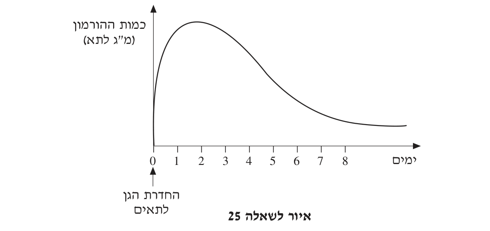
הסבר את התוצאות שהתקבלו. בתשובתך התייחס לתהליך ההחדרה, לביטוי של הגן בתא ולשינוי בכמות ההורמון, כתלות בזמן, כפי שמתואר באיור.
ההורמון אריתרופויטין נוצר בכליה, והוא מעורב בתהליך ההבשלה של כדוריות הדם האדומות. ההורמון הזה חסר אצל חולים הסובלים מאי-ספיקת כליות, ולכן צריך להזריקו לחולים האלה כמה פעמים בשבוע. החוקרים החליטו לנסות ולפתור את בעיית החסר בהורמון אריתרופויטין בשיטה של ריפוי גני. לשם כך הם לקחו תאי עור, החדירו את הגן לתאי העור האלה, והשתילו את העור המכיל את הגן בחזרה לחולה.
הסבר בקצרה מהו העיקרון של ריפוי גני.
הסבר מדוע בחרו החוקרים להחדיר את הגן לתאי עור, אף-על-פי שההורמון נוצר באופן טבעי בכליה. ציין מה נדרש כדי שהשיטה הזאת תאפשר את ריפוי המחלה.
חוקרים הצליחו לפתח, בשיטות של הכלאה, זן חדש של צמח נוי. לפרחי הצמח יש צבע מיוחד וחיי מדף ארוכים. החוקרים מעוניינים ליצור כמות גדולה של צמחים, זהים לחלוטין לזן החדש של הצמח, בשיטה של ריבוי וגטטיבי בתרבית רקמה. הם מתלבטים אם להשתמש למטרה הזאת בתרבית קאלוס או בתרבית מריסטמית.
הסבר בקצרה מהי תרבית קאלוס ומהי תרבית מריסטמית.
באיזו תרבית (קאלוס או מריסטמית) תמליץ לחוקרים להשתמש? הסבר את תשובתך.
החוקרים מעוניינים להחדיר לזן החדש של הצמח את הגן X, אשר מקנה לצמח עמידות בפני חרקים. לשם כך הם משתמשים בחיידקי אגרובקטריום ובפלסמיד "מיני Ti", המוצג באיור לשאלה. הפלסמיד "מיני Ti" מכיל גן מדווח, היוצר צבע כחול בתאי הצמח בנוכחות סובסטראט מתאים, וכמו-כן שלושה אתרי הכרה לאנזימי ההגבלה (A, B ו-C).
החוקרים ביצעו שלושה ניסויים. הם החדירו לפלסמיד את הגן X, עם כל רצפי הבקרה הנחוצים, בכל ניסוי — לאתר הכרה לאנזים הגבלה אחר (A, B או C). את הפלסמיד שהתקבל מכל שיבוט הם החדירו לחיידקי אגרובקטריום מתאימים, והשתמשו בהם כדי להדביק תרבית תאים של הצמח. בכל ניסוי החוקרים בדקו את פעילות הגן X ואת פעילות הגן המדווח (יצירה של צבע כחול בנוכחות הסובסטראט) בתרבית. בטבלה שלפניך מוצגות התוצאות שהתקבלו (+ יש; – אין).
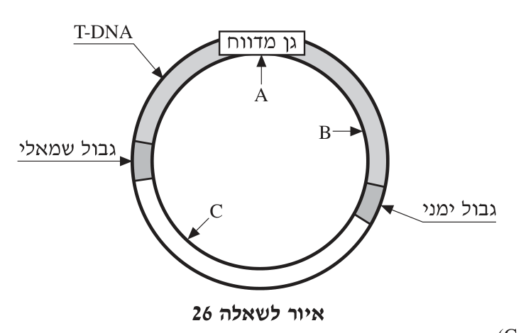
| הניסוי | פעילות הגן X | יצירת צבע כחול |
|---|---|---|
| 1 | – | + |
| 2 | + | – |
| 3 | + | + |
קבע לגבי כל אחד מן הניסויים המתוארים בטבלה באיזה משלושת אתרי ההכרה לאנזימי ההגבלה (A, B או C) הוחדר הגן X. הסבר את תשובתך.
חיידקי האגרובקטריום, ששימשו את החוקרים בניסויים, הכילו, מלבד הפלסמיד "מיני Ti", פלסמיד נוסף. ציין איזה גן הכיל הפלסמיד הנוסף, ופרט את תפקידו.
קבוצת חוקרים מעוניינת לנקות חלקת קרקע בעלת תכולה גבוהה במיוחד של חומרים קסנוביוטיים. בחלקת הקרקע הזאת השתמשו במשך שנים בכמה סוגים של קוטלי עשבים.
הגדר מהם חומרים קסנוביוטיים.
החוקרים גילו, להפתעתם, כי אחד מקוטלי העשבים שבו השתמשו במידה רבה בקרקע במשך שנים, לא נמצא בדגימות שנאספו. פרט שלוש סיבות אפשריות להיעלמות קוטל העשבים הזה מן הקרקע.
כדי לנקות את הקרקע ממתכות שחִלחלו במשך השנים לשכבת מי התהום, השתמשו החוקרים בשיטת הפיתורמדציה. בשיטה הזאת משתמשים בצמחים כדי לטפל בזיהומים בקרקע.
החוקרים שתלו שני סוגי צמחים בשטח, שאותו הם רצו לנקות:
I. צמחים המפתחים שורשים ארוכים, החודרים עמוק לאדמה
II. צמחים המפתחים שורשים קצרים באדמה
באיור א' לשאלה מוצגת תכולת המתכות שנמצאה בכל אחד מסוגי הצמחים, אחרי זמן ממושך.
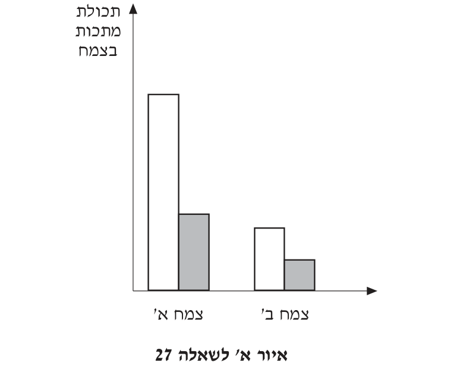
התאם כל אחד מסוגי הצמחים (I ו-II) לצמח המתאים בגרף (צמח א' או צמח ב'). נמק את קביעותיך.
האם העמודות הלבנות בגרף מייצגות את העלים של הצמחים או את השורשים שלהם? הסבר את תשובתך.
החוקרים פיתחו תהליך לניקוי הקרקע משלושה חומרים, A, B ו-C. כדי לעקוב אחר יעילות התהליך, הם השתמשו בחיידק המאיר Photobacterium phosphorum, אשר עוצמת האור שלו נפגעת בנוכחות חומר רעיל לחיידקים.
באיור ב' לשאלה מוצגת עוצמת ההארה של החיידקים האלה, כתלות בזמן ניקוי הקרקע.
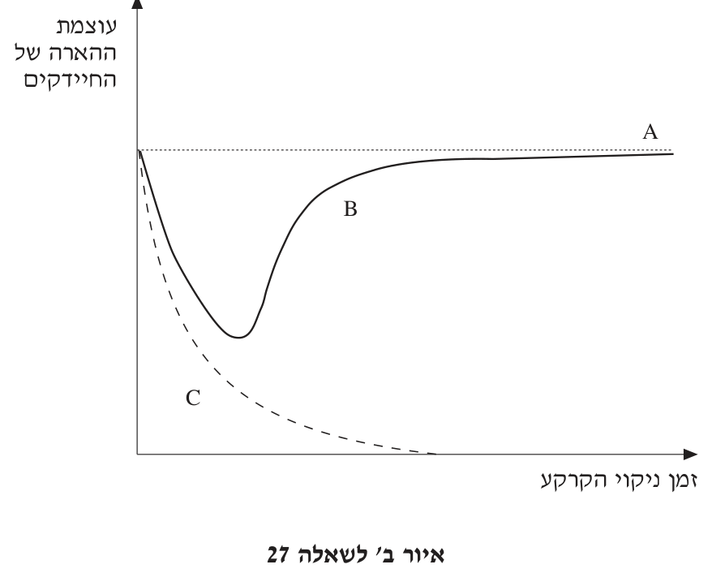
הסבר את התוצאות המתוארות באיור. בהסברך התייחס למידת רעילותו של כל אחד מן החומרים A, B ו-C לחיידק המאיר, ולהצלחת תהליך הניקוי של הקרקע מן החומר הזה.
הצטברות של פסולת עירונית היא בעיה חמורה לסביבה.
תאר שלוש שיטות לטיפול בפסולת מוצקה.
את הפסולת האורגנית ניתן לאסוף ולהעביר לאתר קומפוסטיזציה, ושם עורמים את הפסולת בעֵרמות. חוקרים בדקו שתי עֵרמות של פסולת מאותו מקור, שהונחו באתר באותו יום. את העֵרמה הראשונה הם כיסו באדמה, והשאירו אותה ללא טיפול, ואילו את העֵרמה השנייה הם הפכו וערבבו כל כמה ימים. החוקרים גילו כי תהליך הקומפוסטיזציה הושלם מהר יותר בעֵרמה השנייה. במשך התהליך הם מדדו את הטמפרטורה במרכז כל אחת מן העֵרמות. התוצאות שהתקבלו מתוארות באיור א' לשאלה.
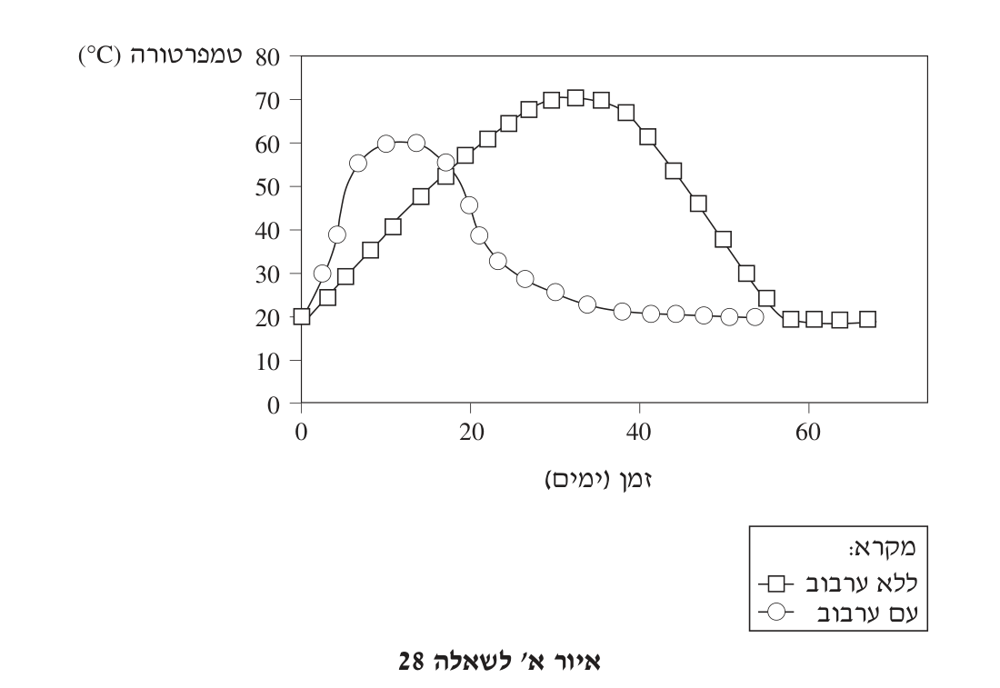
ציין את התוצרים של תהליך הקומפוסטיזציה, ופרט את יתרונם על-פני הפסולת המקורית.
הסבר מה גורם לשינויי טמפרטורה בתהליך הקומפוסטיזציה. בתשובתך התייחס לעלייה בטמפרטורה בתחילת התהליך, ולירידה בטמפרטורה בזמן התהליך.
עיין באיור א' לשאלה, והסבר ממה נובע ההבדל בין שתי עֵרמות הפסולת (ללא ערבוב ועם ערבוב).
החוקרים בדקו בכל אחת מן העֵרמות את הריכוז של שני זני חיידקים: זן A וזן B, בשלבים שונים של התהליך. התוצאות שהתקבלו מוצגות באיור ב' לשאלה.
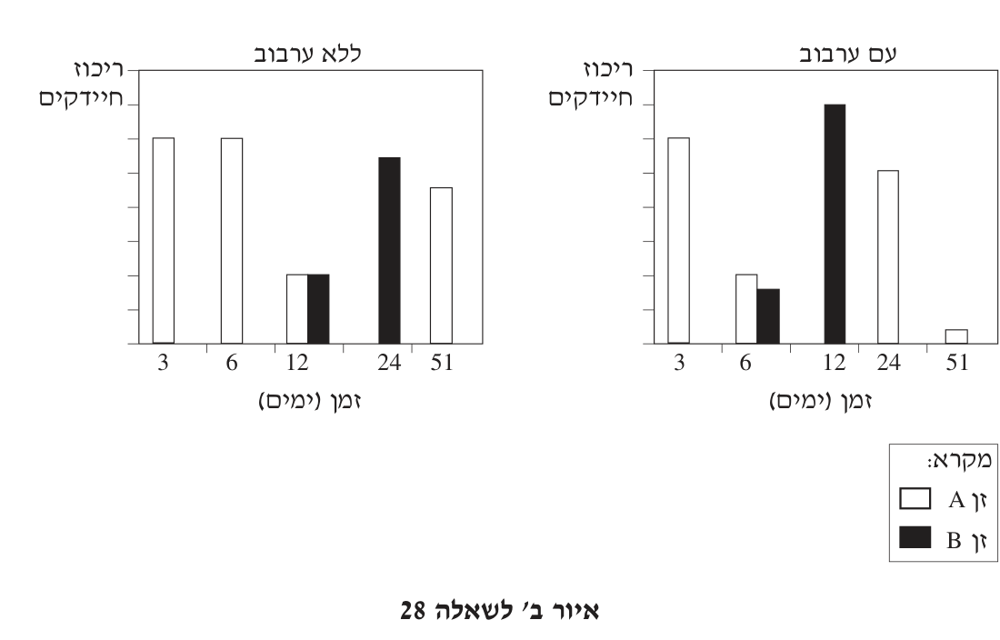
תאר את התוצאות שהתקבלו, והסבר מה גרם לשינויים בריכוזי הזנים A ו-B בזמן התהליך. בתשובתך התייחס לסוג החיידקים שאליו שייך כל אחד מן הזנים, ולקשר בין ריכוז כל אחד מן הזנים לשינוי הטמפרטורה בעֵרמה. היעזר באיורים לשאלה.
חוקרים מעוניינים לבנות מבנים ננומטריים, הבנויים משילוב של חלבונים ו-DNA.
ציין יתרון אחד לשימוש בחלבונים כאבני בניין למבני ננו.
ציין יתרון אחד לשימוש ב-DNA כאבני בניין למבני ננו.
החוקרים מעוניינים ליצור סיב לינארי ארוך בעל פעילות אנזימתית. ברשותם תת-היחידות האלה:
— אנזים X, המסוגל לזהות את רצף ה-DNA 5' AACTGCT 3', ולהיקשר אליו.
— סטרפטאבידין
— נוגדן כנגד ביוטין
— נוגדן כנגד זהב
— רצף ה-DNA: 5' TCGATTAACTGCTCGATC 3', הקשור לביוטין בקצותיו.
— רצף ה-DNA: 5' TCGATTAACTGCTCGATC 3'
תאר את תת-היחידות שבהן החוקרים צריכים להשתמש, ואת רצף הפעולות שהם צריכים לעשות כדי ליצור סיב לינארי בעל פעילות אנזימתית.
החוקרים בוחנים את האפשרות להשתמש בווירוס הטבק כתבנית חלבונית לינארית. תאר בקצרה את תהליך ההרכבה של וירוס הטבק.
האם התהליך הזה מייצג ייצור מבנה בגישה "מלמעלה למטה" או ייצור מבנה בגישה "מלמטה למעלה"? הסבר את תשובתך.
קבוצת חוקרים מעוניינת לאפיין מחלה מסוימת, שבה מתרחש שינוי ברצף ה-DNA של הגן X, על-ידי בניית ננו-ביוסנסור לזיהוי של רצפי DNA.
תאר בקצרה מבנה של ביוסנסור ואת עקרון הפעולה שלו.
תאר את הקושי העיקרי המתעורר בעבודה בביוסנסורים.
הננו-ביוסנסור המתוכנן מורכב משתי קורות, שלכל אחת מהן מקובע DNA חד-גדילי בעל רצף שונה (ראה איור א' לשאלה). כאשר DNA משלים נקשר ל-DNA המקובע לקורה, הקורה מתכופפת.
לקורה A קיבעו החוקרים DNA חד-גדילי בעל הרצף 5' TGTGTG 3', ולקורה B הם קיבעו DNA חד-גדילי בעל הרצף 5' TGAATG 3'. אחד מן הרצפים משלים לרצף הפגום של הגן X, והאחר משלים לרצף התקין של הגן X.
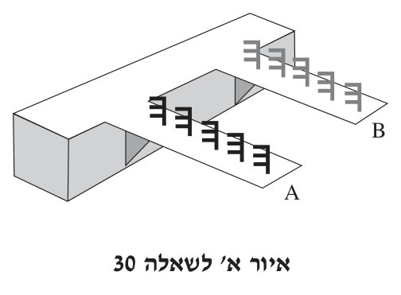
הצע לחוקרים דרך שבאמצעותה יוכלו לקבע את גדילי ה-DNA לקורות. ציין את אבני הבניין ואת החומרים הדרושים כדי ליצור את ההתקן הסופי של הננו-ביוסנסור.
אדם בריא נושא שני עותקים של הגן X, שניהם בעלי רצף תקין. אדם חולה נושא שני עותקים של הגן X, שניהם בעלי רצף פגום. נשא הוא אדם שעותק אחד של הגן שלו הוא בעל רצף פגום, ועותק אחר של הגן שלו הוא בעל רצף תקין. חוקרים לקחו דגימות DNA משלושה נבדקים: א', ב' ו-ג', ובדקו את קישור ה-DNA לקורות. החוקרים ידעו כי נבדק א' חולה. באיור ב' לשאלה מוצגות התוצאות שהתקבלו.
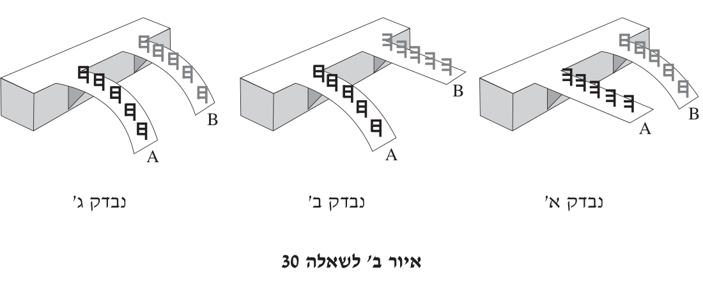
ציין לגבי כל אחד מן הנבדקים ב' ו-ג' אם הוא בריא, נשא או חולה. נמק את תשובתך.
הסתמך על קביעת הננו-ביוסנסור, ורשום את רצף הגן התקין ואת רצף הגן הפגום. ציין גם את כיווניות הרצף (5'–3').
קבע אם ההיגד הבא נכון או לא נכון. אם ההיגד אינו נכון, תקן אותו.
היצמדות תְחָלִים (פריימרים) לתבנית ה-DNA אינה יכולה להתבצע בטמפרטורות גבוהות מאוד.
קבע אם ההיגד הבא נכון או לא נכון. אם ההיגד אינו נכון, תקן אותו.
בספריית cDNA מיוצגים כל קטעי ה-DNA המצויים בגנום.
קבע אם ההיגד הבא נכון או לא נכון. אם ההיגד אינו נכון, תקן אותו.
אפשר ליצור קצוות דביקים ב-DNA רק על-ידי חיתוך באנזים הגבלה מדורג.
קבע אם ההיגד הבא נכון או לא נכון. אם ההיגד אינו נכון, תקן אותו.
רצף cDNA של גן מסוים בתאים אאוקריוטיים, זהה תמיד לרצף ה-DNA של אותו גן.
קבע אם ההיגד הבא נכון או לא נכון. אם ההיגד אינו נכון, תקן אותו.
שיבוט מֶחדר לתוך הגן המקודד ל-β-גאלקטוזידאז בבקטריופאג', פוגע בפעילות האנזים β-גאלקטוזידאז.
קבע אם ההיגד הבא נכון או לא נכון. אם ההיגד אינו נכון, תקן אותו.
כדי לבצע תגובת PCR על DNA, יש להשתמש בתחל (פריימר) אחד בלבד.
קבע אם ההיגד הבא נכון או לא נכון. אם ההיגד אינו נכון, תקן אותו.
אי-אפשר לבדוק את סוג האנטיגן המצוי על-פני תאי הדם האדומים באמצעות בוחן הצמתה של תאי דם אדומים.
קבע אם ההיגד הבא נכון או לא נכון. אם ההיגד אינו נכון, תקן אותו.
בבדיקת אליזה (ELISA), זרועות ה-Fab של הנוגדן נקשרות למצע המקובע, וזרוע ה-Fc של הנוגדן נקשרת לאנטיגן.
קבע אם ההיגד הבא נכון או לא נכון. אם ההיגד אינו נכון, תקן אותו.
בתספיג אימונולוגי (immunoblotting), סימון של חלבונים הקשורים לנייר ניטרוצלולוז (ממברנה) מתבצע על-ידי נוגדנים ספציפיים לחלבון הנדרש.
קבע אם ההיגד הבא נכון או לא נכון. אם ההיגד אינו נכון, תקן אותו.
האנזים טריפסין, שמשתמשים בו בתהליך של יצירת תרביות תאים אנימליים, מפרק את דופן התאים האנימליים.
קבע אם ההיגד הבא נכון או לא נכון. אם ההיגד אינו נכון, תקן אותו.
תאי כִּלאיים (היברידומות, למשל) נוצרים על-ידי איחוי של קרומי התאים, הציטופלסמה והגרעינים של שני סוגי תאים.
קבע אם ההיגד הבא נכון או לא נכון. אם ההיגד אינו נכון, תקן אותו.
הכנת פרוטופלסטים של צמחים נעשית על-ידי פירוק מכני של דופן התא הצִמחי (ולא על-ידי פירוק אנזימתי שלו).
קבע אם ההיגד הבא נכון או לא נכון. אם ההיגד אינו נכון, תקן אותו.
השיטה היחידה לטיפול בזיהום של חומרים קסנוביוטיים היא שיטת הפיתורמדציה.
קבע אם ההיגד הבא נכון או לא נכון. אם ההיגד אינו נכון, תקן אותו.
התהליך של יצירת הגז מֶתאן על-ידי תסיסת חיידקים יעיל ליצירת אנרגיה.
קבע אם ההיגד הבא נכון או לא נכון. אם ההיגד אינו נכון, תקן אותו.
בתעשיית האריגים אפשר להשתמש בתהליכים אנזימתיים במקום בחומרים רעילים.
קבע אם ההיגד הבא נכון או לא נכון. אם ההיגד אינו נכון, תקן אותו.
בשיטת ננו-ליתוגרפיה, באמצעות קרן אלקטרונים, אפשר ליצור מִבנים בגישה "מלמטה למעלה".
קבע אם ההיגד הבא נכון או לא נכון. אם ההיגד אינו נכון, תקן אותו.
חלבון המשמש תת-יחידה לבניית מבנה סיבי (לינארי), צריך להכיל שלושה אתרי קישור לפחות לתת-יחידות אחרות.
קבע אם ההיגד הבא נכון או לא נכון. אם ההיגד אינו נכון, תקן אותו.
מִזעור של ביוסנסורים מאפשר לזהות כמויות קטנות יותר של החומר הנבדק, וכתוצאה מכך גֵדלה רגישותם.
חוקרים בנו ספרייה גנומית מן החיידק Acinetobacter, המבוססת על הבקטריופאג' λ כנשא.
תאר בקצרה את השלבים בבניית הספרייה הגנומית הזאת.
החוקרים מעוניינים לאתר את הבקטריופאג' שבו משובט הגן X של החיידק Acinetobacter, מתוך הספרייה הגנומית שיצרו. הצע דרך לעשות זאת.
החוקרים בנו שתי ספריות גנומיות (ספרייה a וספרייה b), והשתמשו בבקטריופאג' λ כנשא. בשלב הבא בודדו החוקרים את הבקטריופאג' המכיל את הגן X מכל אחת מן הספריות. כדי לחלץ את הגן X מן הבקטריופאג' מספרייה a, השתמשו החוקרים באנזים הגבלה A, וכדי לחלץ את הגן X מן הבקטריופאג' מספרייה b, הם השתמשו באנזים הגבלה B. בתום התהליך הופרדו המקטעים המכילים את הגן X בג'ל אלקטרופורזה. התוצאות שהתקבלו מוצגות באיור לשאלה.
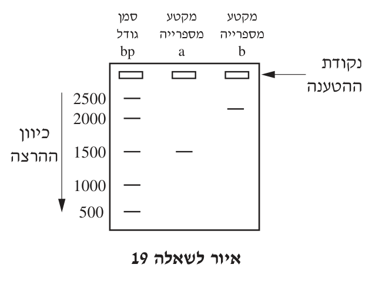
הסבר ממה נובע ההבדל בגודל בין המקטע המכיל את הגן X שאותר בספרייה a ובין זה שאותר בספרייה b.
חוקרים גילו גן שכאשר חסרים בו 10 נוקלאוטידים, 901–910, הוא גורם למחלה נדירה. כדי לאתר את הגן הפגום הזה מבצעים, בשלב הראשון, תגובת PCR ל-DNA. בשלב השני מפרידים את תוצרי ה-PCR באלקטרופורזה. על-פי התוצרים המתקבלים באלקטרופורזה, אפשר להבחין בין הגן התקין ובין הגן הפגום.
ברשות החוקרים ארבעה תְחָלִים (פריימרים), A, B, C ו-D. התחלים והרצפים שלהם מוצגים בטבלה.
באיור לשאלה מופיע הרצף הדו-גדילי של חלק מן הגן התקין, מנוקלאוטיד 880 עד נוקלאוטיד 943. באיור מסומנים גם אתרי ההיצמדות של ארבעה תְחָלים, 1, 2, 3 ו-4.
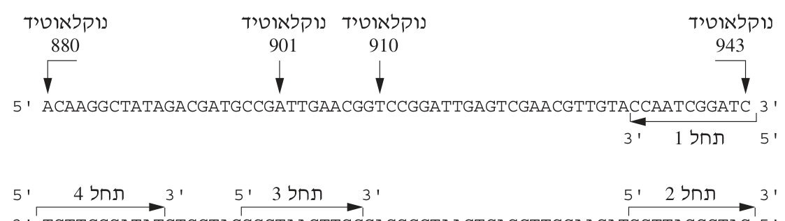
| התחל | רצף התחל |
|---|---|
| A | 5' ACAAGGCTATA 3' |
| B | 5' GATCCGATTGG 3' |
| C | 5' CCAATCGGATC 3' |
| D | 5' CCGATTGAACG 3' |
התאם כל אחד מן התחלים באיור (1–4) לתחל המתאים בטבלה (A–D).
ציין את כל המרכיבים הדרושים כדי לבצע תגובת PCR.
החוקרים ביצעו ארבע תגובות PCR (I, II, III ו-IV). בטבלה שלפניך מוצגים הראקציות השונות וגודל התוצרים שהתקבלו לאחר הרצת תוצרי התגובות בג'ל אלקטרופורזה.
| מספר הראקציה | מקור ה-DNA וסוג התחלים | גודל התוצרים שהתקבלו (בזוגות בסיסים) |
|---|---|---|
| I | DNA מאדם חולה, תחלים 1+4 | 53 |
| II | DNA מאדם בריא, תחלים 1+4 | 63 |
| III | DNA מאדם חולה, תחלים 1+3 | לא התקבלו תוצרים |
| IV | DNA מאדם בריא, תחלים 1+3 | 46 |
הסבר את התוצאות שהתקבלו בכל אחת מן הראקציות, I, II, III ו-IV.
לפניך קטע שעובד על-פי כתבה שהתפרסמה בעיתון "הארץ". הסתמך על הכתבה, וענה על הסעיפים א'–ד'.
לאחרונה השתילו מדענים באצה גן המתבטא בתאי דם אדומים של בני אדם, וכך יצרו, בפעם הראשונה, אצות שיכולות לגדול ללא אור.
בדומה לשאר הצמחים, אצות הופכות את אור השמש לאנרגיה הדרושה לצמיחתן בתהליך של פוטוסינתזה. אך האצה המהונדסת, לעומת זאת, מפיקה אנרגיה מסוכר. החוקרים מדווחים כי האצה שהִנדסו, אצה חד-תאית בגודל מיקרוסקופי, אינה תלויה באור השמש, ואף גֵדלה בקצב מהיר מאצות רגילות.
ד"ר קירק אפט, ביולוג מולקולרי, אומר שאף-על-פי שקיימת היום תעשייה גדולה של אצות, ומשתמשים באצות במוצרים רבים — למשל להפקת תוספים תזונתיים נוגדי חִמצון כמו בטא-קארוטן או מזון לדגים — השיטות לגידולן נשארו לא יעילות.
השיטה הנפוצה לגידול אצות היא גידול בביצות מים גדולות. "מצד אחד זו שיטה טובה מאחר שהיא מנצלת באופן חסכוני את השמש כמקור האנרגיה", אומר ד"ר אפט, "אבל מצד אחר היא חושפת את האצות לזיהומים ולשינויי מזג אוויר, העלולים לגרום לשיעור תנובה בלתי צפוי". אפשר גם לגדל אצות במְכלי התססה סגורים, אבל רוב האצות החד-תאיות אינן יכולות לגדול במְכלים אפלים.
ד"ר אפט ניסה למצוא דרך שבאמצעותה תיפטר האצה מהתלות שלה באור השמש. "גלוקוז נראה מקור אנרגיה חלופי אפשרי", הוא אומר. אפט ועמיתיו החלו לחפש גן שיגרום לאצה לספוג סוכר. הם השתילו באצה כמה גנים שונים, חלקם מאצות אחרות, אחרים מחיידקים. בסדרת ניסויים מצאו החוקרים שהגן המתאים ביותר הוא Glut1, המאפשר לתאי דם אדומים אצל בני אדם לספוג גלוקוז.
מכיוון שכל הצמחים ובעלי החיים, כולל בני אדם, חולקים אותו קוד גנטי (הבנוי מארבעה בסיסים כימיים המסומנים באותיות G, T, A ו-C), אפשר תאורטית לקחת גן מיצור אחד ולשלבו בגנום של יצור אחר. החוקרים אומרים כי כאשר הגן Glut1 הושתל בגנום של אצה, הוא העניק לה אותה יכולת של ספיגת גלוקוז כמו זו שהוא מעניק לבני אדם.
למעשה, אומר אפט, האצות המהונדסות גדלו בקצב מהיר פי 15 מקצב הצמיחה של אצות רגילות. ד"ר אפט הופתע מהצלחת הניסוי: "לא היה צורך בהנדסה גנטית נוספת כי נראה שהאצה כבר מכילה את המנגנון המולקולרי לעיבוד גלוקוז באופן יעיל", הוא אומר ומוסיף: "אני מניח שזה לא יהיה כל כך פשוט בזנים אחרים של אצות", אבל הצוות שוקל לנסות זאת בכל מקרה.
מבוסס על מאמרה של תמרה טראובמן "מדענים הנדסו אצה שגדלה באפלה", שהתפרסם ב"הארץ" בתאריך 22.6.01.
© כל הזכויות שמורות להוצאת "הארץ".
רשום שלושה שימושים תעשייתיים לאצות: שני שימושים המוזכרים במאמר ושימוש נוסף שאינו מוזכר במאמר.
הסבר מדוע אצות אינן גדלות בחושך, ומדוע התכונה הזאת נחשבת חיסרון בגידול תעשייתי של אצות.
בניסוי שאינו מוזכר בכתבה, מיצו חוקרים DNA מאצות בר ומאצות מהונדסות, המסוגלות לגדול בחושך (אלה המוזכרות במאמר). הם השתמשו בתחלים (פריימרים) ייחודיים לגן Glut1, ביצעו תגובת PCR ל-DNA שהפיקו, ובודדו את תוצרי התגובה. הסבר לשם מה ביצעו החוקרים את הניסוי הזה.
במעבדת מחקר אחרת החדירו חוקרים את הגן Glut1 לאצה מזן שונה. אף-על-פי שהשתמשו באותה שיטת החדרה ובאותם תנאים, הם מצאו כי האצה הזאת לא הצליחה לגדול בחושך. הצע הסבר לתוצאה הזאת.
בעולם נערכים לאפשרות של מתקפה של נגיף אלים — הכלאה בין נגיף השפעת הרגילה ובין נגיף שפעת העופות.
באחת ממדינות אסיה קיים חשש שעובדי הבריאות נחשפו לנגיף האלים. באיזה סוג חיסון כדאי לחסנם: בחיסון פעיל (אקטיבי) או בחיסון סביל (פסיבי)? הסבר את תשובתך.
בכמה לולי תרנגולות קיים חשש להידבקות בנגיף שפעת העופות. כדי לאתר את הלולים הנגועים, נבדקה נוכחות נוגדנים כנגד נגיף השפעת בדם התרנגולות. בבדיקה השתמשו בשיטת אליזה (ELISA) תחרותית.
בטבלה שלפניך מוצגים ערכי הבליעה שהתקבלו, ביחידות O.D., בבדיקת אליזה (ELISA) תחרותית של דם שנלקח מארבע תרנגולות.
| מספר התרנגולת | עוצמת הבליעה (O.D.) |
|---|---|
| 1 | 0.97 |
| 2 | 0.18 |
| 3 | 0.92 |
| 4 | 0.11 |
קבע, על-סמך התוצאות המוצגות בטבלה, אילו מבין התרנגולות נדבקו בנגיף השפעת. הסבר את תשובתך.
החוקרים בדקו דם מתרנגולות 1 ו-2, גם בשיטת אליזה (ELISA) לא-תחרותית. ערכי הבליעה (O.D.) שהתקבלו היו 0.93 ו-0.15. איזה משני הערכים האלה התקבל מבדיקת הדם של תרנגולת 1? הסבר את תשובתך.
במעבדה החוקרת את ההורמון Substance-P (SP) מעוניינים לבדוק את נוכחות ההורמון ברקמת התימוס.
החוקרים במעבדה הכינו חתכים מִרקמת התימוס כדי לזהות נוכחות SP בחתכי הרקמה. באיזה מבחן אימונודיאגנוסטי תמליץ לחוקרים להשתמש, ומדוע?
ברשות החוקרים נוגדנים רב-שבטיים (פוליקלונליים) וחד-שבטיים (מונוקלונליים) כנגד ההורמון SP. ציין יתרון אחד וחיסרון אחד של נוגדנים רב-שבטיים (פוליקלונליים) לעומת נוגדנים חד-שבטיים (מונוקלונליים).
בניסוי אחר בדקו החוקרים את ההיווצרות של תלכידי נוגדן-אנטיגן, בריכוז קבוע של נוגדן ובריכוזים שונים של ההורמון SP (האנטיגן). ערך הבליעה הוא מדד לריכוז "תלכידים רב-מולקולריים" של אנטיגן-נוגדן. ככל שריכוז "התלכידים הרב-מולקולריים" גדול יותר, כך ערך הבליעה המתקבל גבוה יותר. התוצאות שהתקבלו מוצגות באיור לשאלה.
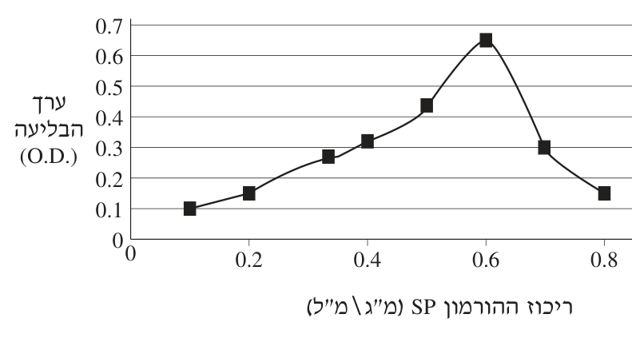
הסבר מדוע עלייה בריכוז ההורמון מעל ערך מסוים (0.6 מ"ג/מ"ל) גורמת לירידה בערך הבליעה.
חוקרים במפעל ביוטכנולוגי גילו כי אפשר לטפל בחולים בטרשת נפוצה בחלבון β-אינטרפרון. החלבון β-אינטרפרון הוא גליקופרוטאין (חלבון שעליו ישנם שיירים סוכריים), המופרש באופן טבעי על-ידי תאים של בני אדם. החוקרים ניסו לייצר את החלבון בחיידקים מהונדסים ובתרבית של תאים אנימליים (תאים של בעלי חיים). לשם כך הם ביצעו שני ניסויים:
ניסוי 1 — החדרת גן של בני אדם, המקודד ל-β-אינטרפרון, לתאי חיידקים בתהליך של טרנספורמציה.
ניסוי 2 — החדרת גן של בני אדם, המקודד ל-β-אינטרפרון, לתרבית של תאים אנימליים, בתהליך של טרנספקציה בעזרת אלקטרופורציה.
החוקרים בדקו את רמת הפעילות של החלבון β-אינטרפרון, ומצאו כי בתאי החיידקים (ניסוי 1) לא התקבלה פעילות כלל, ואילו בתאים האנימליים (ניסוי 2) התקבלה פעילות גבוהה.
הסבר מדוע לא התקבלה פעילות של האינטרפרון β בתאי החיידקים (ניסוי 1).
תאר בקצרה את שיטת הטרנספקציה לתאים אנימליים בעזרת אלקטרופורציה.
החוקרים שיבטו את הגן המקודד לאינטרפרון β בפלסמיד. הם חילקו תרבית תאים אנימליים לשתי מנות, שכל אחת מהן הכילה מספר זהה של תאים. החדרת הפלסמיד לתאים נעשתה בשיטת הטרנספקציה, אולם לקבוצה אחת הוחדר הפלסמיד בעזרת סידן זרחתי, ולאחרת — על-ידי מיקרו-הזרקה. לאחר כ-20 ימים נבדקה פעילות האינטרפרון בכל אחת משתי מנות התאים. התוצאות שהתקבלו מוצגות באיור לשאלה.
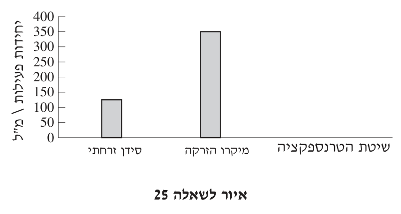
על-סמך התוצאות שבאיור, הסבר מדוע הפעילות למ"ל של האינטרפרון בתאים שלתוכם הוחדר הפלסמיד בשיטת המיקרו-הזרקה גבוהה יותר מאשר בתאים שלתוכם הוחדר הפלסמיד בעזרת הסידן הזרחתי (בתשובתך התייחס להבדלים בין שתי שיטות הטרנספקציה).
במפעל ביוטכנולוגי, המייצר צמחי בננה באמצעות תרביות רקמה צמחיות, חלה תקלה בייצור, וצמחי הבננה החדשים היו נגועים בווירוס.
תאר בקצרה תהליך אשר באמצעותו אפשר לקבל צמחי בננה ללא וירוס.
החוקרים מעוניינים להרחיב את פעילות המפעל ולייצר גם את התרופה האנטי-סרטנית וינקריסטין, המופקת מצמח הווינקה. לשם כך גידלו החוקרים תאי וינקה בתרחיף.
ציין יתרון אחד וחיסרון אחד של הפקת חומרים (מטבוליטים) מתרבית תאים צמחיים לעומת הפקתם מן הצמח השלם.
החוקרים בדקו גידול תאי צמחים בתרחיף בשני תנאי עִרבול, ערבול מכני וערבול על-ידי אִוורור. בשני המקרים לא היה מחסור בחמצן. הם עקבו אחר ריכוז התאים כתלות בזמן. התוצאות שהתקבלו מוצגות באיור לשאלה.
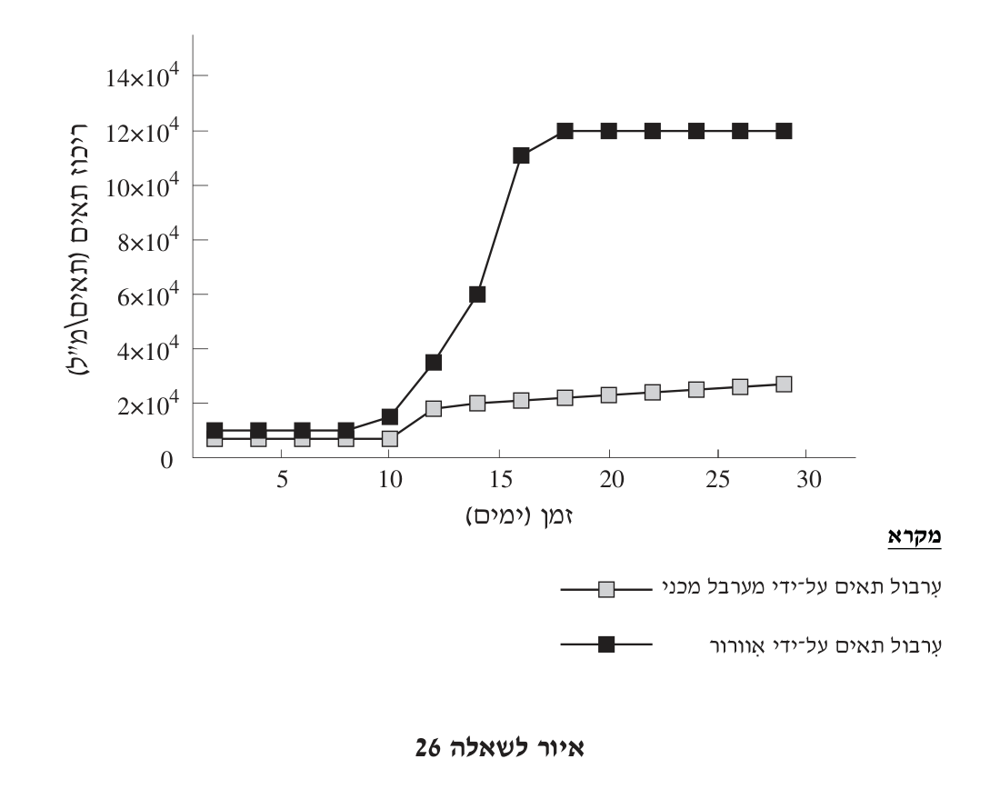
הסבר ממה נובעים ההבדלים בין שתי העקומות.
קיימות שיטות שונות לטיפול במי שפכים. אחת מהן היא טיפול באמצעות אגני חמצון, והאחרת היא טיפול בשיטת הבוצה המשופעלת.
בשני יישובים מעוניינים להקים מתקנים לטיפול בשפכים. ביישוב I רוצים להקים את המתקן על שטח גדול, השוכן במרחק גדול יחסית ממקום היישוב. ביישוב II רוצים להקים את המתקן על שטח קטן, השוכן במרחק קטן יחסית ממקום היישוב.
איזו משתי השיטות לטיפול בשפכים, אגני חמצון או בוצה משופעלת, מתאימה לכל אחד מן היישובים? הסבר את תשובתך (בתשובתך התייחס לשני גורמים המבדילים בין שתי השיטות האלה).
למתקן המשמש בדרך-כלל לטיהור שפכים ביתיים הוזרמה, בשל תקלה, כמות גדולה של שפכים שמקורם בתעשייה הכימית. באיור לשאלה מוצגים הערכים של צריכת החמצן הביולוגית (צח"ב) וריכוז המתכות הכבדות, כפי שנמדדו במתקן הטיהור, בתקופה שלאחר ההזרמה של שִפכי התעשייה.
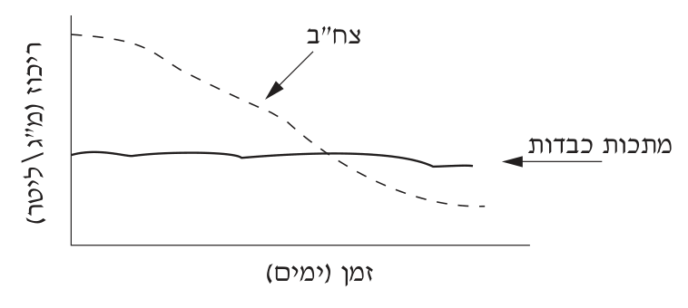
מהי צריכת חמצן ביולוגית? הסבר מדוע חלה ירידה בערך הזה, ומדוע לא חלה ירידה בריכוז המתכות הכבדות.
הצע דרך להקטין את ריכוז המתכות הכבדות בשפכים המטופלים.
אחד האתגרים העומדים בפני מדעני הביוטכנולוגיה הוא ייעול השימוש בדלקים הקיימים, ומציאת מקורות אנרגיה חלופיים. אחת הדרכים היא שימוש בתערובת של דלק ואתאנול הנקראת גזוהול.
הסבר חיסרון אחד של שימוש באנרגיית מאובנים (פחם ונפט) הנהוגה כיום, והצע שני מקורות אנרגיה חלופיים (נוסף על הגזוהול).
ביורמדיציה היא טכנולוגיה בתחום הביוטכנולוגיה של איכות הסביבה. חוקרים במעבדת מחקר מעוניינים לפרק את החומר הקסנוביוטי הרעיל A. לשם כך הם בדקו את ריכוזו בקרקע, לאורך זמן, בנוכחות החיידק X ובהיעדרו. במקביל הם בדקו את ריכוזו של חומר רעיל נוסף (החומר B). התוצאות שהתקבלו מוצגות באיור לשאלה.
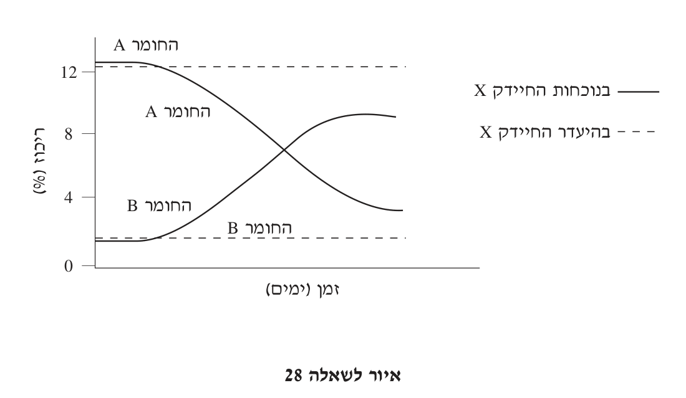
על-סמך הנתונים המוצגים באיור, החליטו החוקרים שלא להשתמש בחיידק X בטיפול בחומר A. הסבר את החלטתם, וציין שתי דרכים אחרות לטיפול בחומר הקסנוביוטי A.
החומר A, המשמש חומר הדברה כנגד מזיקים, הוא רעיל. ציין דרך אחרת לטיפול במזיקים שתצמצם את השימוש בחומר הרעיל A.
האנזים גלוקוז אוקסידאז הופך גלוקוז לחומצה גלוקונית על-ידי העברה של אלקטרונים למולקולת חמצן.
אפשר להשתמש באנזים הזה כמרכיב בביוסנסור (חיישן ביולוגי) לקביעת ריכוז גלוקוז, על-ידי מדידת הזרם שנוצר עקב העברת אלקטרונים לאלקטרודה. ככל שריכוז הגלוקוז גבוה יותר, כך מספר גדול יותר של אלקטרונים יעברו לאלקטרודה, והזרם שיתקבל יהיה חזק יותר.
חוקרים מעוניינים ליצור ננו-ביוסנסור למדידה של ריכוז גלוקוז. לשם כך הם חיברו ננו-חלקיק מזהב למולקולה של האנזים גלוקוז אוקסידאז.
תאר בקצרה דרך שבאמצעותה אפשר לחבר ננו-חלקיקים מזהב למולקולת חלבון.
כדי ליצור את הננו-ביוסנסור, קיבעו החוקרים את האנזים שאליו מחובר ננו-חלקיק זהב לאלקטרודת זהב, כפי שמתואר באיור לשאלה.
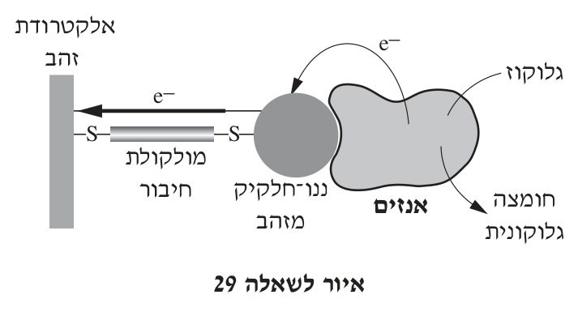
האם קיבוע האנזים לאלקטרודה, כפי שמתואר באיור, נעשה בשיטת הקיבוע החד-שלבי או בשיטת הקיבוע הרב-שלבי? הסבר בקצרה את תשובתך.
החוקרים בנו שני ננו-ביוסנסורים, המבוססים על אותו אנזים. בכל ננו-ביוסנסור הם השתמשו במולקולת חיבור שונה. הם מדדו את הזרם המתקבל בכל ננו-ביוסנסור באותו ריכוז של גלוקוז. בטבלה שלפניכם מוצגות התוצאות שהתקבלו בכל אחת ממולקולות החיבור, I ו-II.
| מולקולת החיבור | הזרם הנמדד בביוסנסור |
|---|---|
| I | 22 מיליאמפר |
| II | 76 מיליאמפר |
איזו ממולקולות החיבור (I או II) תאפשר לבנות ננו-ביוסנסור המתאים למדידה של ריכוזי גלוקוז נמוכים? הסבר בקצרה את תשובתך.
באיור שלפניך מוצג תהליך לייצור של ננו-חוטים מ-DNA.
הסבר כיצד אפשר לחבר את מקטעי ה-DNA החד-גדילי לאלקטרודות המתכת בשלב A.
ציין את המטרה של כל אחד מן השלבים C ו-D בתהליך.
הסבר את ההבדל העקרוני בין ייצור ננו-חוט בשיטת הננו-ליתוגרפיה ובין ייצורו מ-DNA כמתואר באיור לשאלה.
החוקרים מעוניינים למקם על-גבי חוט ה-DNA גם רכיבים פעילים (אנזימים או נוגדנים, למשל). אחד החוקרים הציע להוסיף DNA חד-גדילי במקום DNA דו-גדילי לפני שלב B.
הסבר את היתרון של השימוש ב-DNA חד-גדילי על-פני השימוש ב-DNA דו-גדילי במקרה הזה. בתשובתך התייחס לדרך שבה אפשר למקם רכיבים פעילים על-פני ה-DNA החד-גדילי, וציין היכן בתהליך המתואר באיור יש למקם את הרכיבים האלה על-פני חוט ה-DNA.
קבע אם ההיגד הבא נכון או לא נכון. אם ההיגד אינו נכון, תקן אותו.
כדי שפלסמיד ישרוד בתוך חיידקים בטבע, הוא חייב להכיל מקור הכפלה וסמן ברירה.
קבע אם ההיגד הבא נכון או לא נכון. אם ההיגד אינו נכון, תקן אותו.
לא ניתן לשבט מקטע בעל קצוות חלקים לתוך נשא.
קבע אם ההיגד הבא נכון או לא נכון. אם ההיגד אינו נכון, תקן אותו.
בהדבקת צמחים בחיידק אגרובקטריום, הפלסמיד Ti משתכפל בתוך תאי הצמח.
קבע אם ההיגד הבא נכון או לא נכון. אם ההיגד אינו נכון, תקן אותו.
כדי לאתר שבטים בספריית cDNA, משתמשים בגלאי שמקורו ברצף מקודד.
קבע אם ההיגד הבא נכון או לא נכון. אם ההיגד אינו נכון, תקן אותו.
האנזים reverse transcriptase (אנזים המתעתק במהופך) מסנתז RNA על-פי תבנית של DNA.
קבע אם ההיגד הבא נכון או לא נכון. אם ההיגד אינו נכון, תקן אותו.
בהרצת מקטעי DNA בג'ל אלקטרופורזה, המקטעים נפרדים על-פי גודלם.
קבע אם ההיגד הבא נכון או לא נכון. אם ההיגד אינו נכון, תקן אותו.
נוגדנים רב-שבטיים (פוליקלונליים) מיוצרים על-ידי תאי פלסמה, שמקורם בשבטים שונים של תאי B.
קבע אם ההיגד הבא נכון או לא נכון. אם ההיגד אינו נכון, תקן אותו.
שתי השרשרות הקלות במולקולת הנוגדן מחוברות זו לזו בקשרים די-סולפידיים (קשרי S-S).
קבע אם ההיגד הבא נכון או לא נכון. אם ההיגד אינו נכון, תקן אותו.
במבחן אימונואנזימתי תחרותי על מצע מוצק (ELISA), לקביעת ריכוז של נוגדנים ייחודיים בתמיסה, מדגירים את התמיסה עם אנטיגן מסומן.
קבע אם ההיגד הבא נכון או לא נכון. אם ההיגד אינו נכון, תקן אותו.
כדי להגדיל את צפיפות התאים הגדלים באופן טבעי בתרחיף, משתמשים במיקרו-נשאים.
קבע אם ההיגד הבא נכון או לא נכון. אם ההיגד אינו נכון, תקן אותו.
בריפוי גני, הגן התקין שהוחדר לתאי הנבט (תאי הרבייה) לא יעבור בתורשה לצאצאים.
קבע אם ההיגד הבא נכון או לא נכון. אם ההיגד אינו נכון, תקן אותו.
צמח כלאיים סומטי נוצר כתוצאה מאיחוי של פרוטופלסטים.
קבע אם ההיגד הבא נכון או לא נכון. אם ההיגד אינו נכון, תקן אותו.
המראה ה"משופשף" של הג'ינס biostone washed הוא תוצאה של טיפול אנזימתי בצלולאז.
קבע אם ההיגד הבא נכון או לא נכון. אם ההיגד אינו נכון, תקן אותו.
הסיבה לעליית הטמפרטורה בתהליך הקומפוסטציה היא התחרות בין אוכלוסיית החיידקים המזופיליים ובין אוכלוסיית החיידקים התרמופיליים.
קבע אם ההיגד הבא נכון או לא נכון. אם ההיגד אינו נכון, תקן אותו.
שיטת הסינון הביולוגי (bio-filtration) משמשת לסילוק מתכות כבדות מן הקרקע.
קבע אם ההיגד הבא נכון או לא נכון. אם ההיגד אינו נכון, תקן אותו.
ביצירת צומת ממקטעי DNA משתמשים בארבעה מקטעי DNA חד-גדילי, המשלימים ברצף שלהם לכל אורכם.
קבע אם ההיגד הבא נכון או לא נכון. אם ההיגד אינו נכון, תקן אותו.
ניתן לנצל את יכולת ההיכרות הביולוגית של חלבונים כדי לארגן ננו-חלקיקים אי-אורגניים למבנים על-מולקולריים.
קבע אם ההיגד הבא נכון או לא נכון. אם ההיגד אינו נכון, תקן אותו.
ביוסנסורים הם התקנים אנליטיים בעלי מרכיבים ביולוגיים, המאפשרים לזהות חומרים מוליכים בלבד.
למעבדה החוקרת את הגן X נשלח פלסמיד, שאליו שובט הגן X, ללא מפת ההגבלה שלו.
כדי להכין את מפת ההגבלה, חתכו החוקרים בשלב הראשון את הפלסמיד באנזימי הגבלה שונים, הריצו את תוצרי החיתוך בג'ל אלקטרופורזה, ובדקו את גודל המקטעים שהתקבלו. התוצאות מוצגות בטבלה שלפניך.
| אנזים ההגבלה | גודל המקטעים שהתקבלו (bp) |
|---|---|
| EcoRI | 3600, 1400 |
| HinDIII | 5000 |
| EcoRI + HinDIII | 3600, 500, 900 |
צייר את מפת ההגבלה של הפלסמיד הזה, וציין עליה את מיקום אתרי ההכרה של אנזימי ההגבלה EcoRI ו-HinDIII.
האם ניתן, על-סמך המידע הזה, לקבוע את המיקום של הגן X? אם כן — ציין את מיקומו על-גבי המפה שציירת והסבר את קביעתך; אם לא — הסבר מדוע.
בשלב השני ביצעו החוקרים הספג דרומי. הסבר בקצרה את העיקרון של שיטת ההספג הדרומי.
כדי לבצע את ההספג הדרומי, חזרו החוקרים על תגובות החיתוך של הפלסמיד, כמתואר בפתיח לשאלה. הם השתמשו במקטע מן הגן X כגלאי. תוצאות ההספג הדרומי, שהתקבלו לאחר שכל אחד מן התוצרים של תגובות החיתוך הגיב עם הגלאי, מוצגות בטבלה שלפניך.
| אנזים ההגבלה | גודל המקטעים שהתקבלו לאחר התגובה עם הגלאי (bp) |
|---|---|
| EcoRI | 1400 |
| HinDIII | 5000 |
| EcoRI + HinDIII | 900, 500 |
הסבר מדוע לא התקבל מקטע באורך 3600 bp לאחר הוספת הגלאי למקטעים.
ציין את מיקומו של הגן X על-גבי מפת ההגבלה שציירת בסעיף א1, והסבר את תשובתך.
במעבדה מעוניינים לבודד את הגן A יחד עם הרצפים המבקרים את ביטויו, ולשם כך יש ליצור ספרייה. חוקרים התלבטו אם ליצור ספרייה גנומית או ספריית cDNA, ולבסוף החליטו ליצור ספרייה גנומית.
ציין שני הבדלים בין ספרייה גנומית ובין ספריית cDNA.
הסבר מדוע בחרו החוקרים ליצור ספרייה גנומית.
החוקרים בנו שתי ספריות גנומיות, והשתמשו לשם כך בפלסמיד המוצג באיור לשאלה.
ספרייה I נבנתה בעזרת אנזים ההגבלה G. ספרייה II נבנתה בעזרת אנזים ההגבלה B.
שתי הספריות הוחדרו לחיידקים. מחצית מן החיידקים נזרעו על מצע עשיר שהכיל אמפיצילין, ומחציתם — על מצע עשיר שהכיל טטרציקלין. החוקרים בדקו את מספר המושבות שגדלו על כל אחד מן המצעים. התוצאות שהתקבלו מוצגות בטבלה שלפניך.
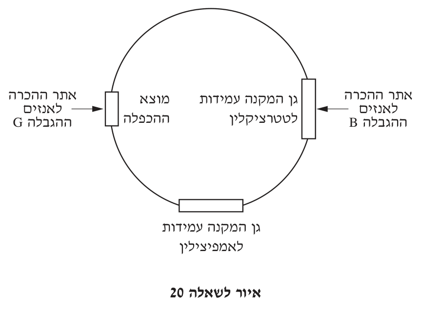
| הספרייה | מספר המושבות על המצע שהכיל אמפיצילין | מספר המושבות על המצע שהכיל טטרציקלין |
|---|---|---|
| ספרייה I (האנזים G) | 2 | 1 |
| ספרייה II (האנזים B) | 100,000 | 3 |
הסבר מדוע התקבל מספר קטן של מושבות (על-גבי שני המצעים) כאשר החדירו את הספרייה I לחיידקים.
הסבר מדוע התקבל מספר גדול של מושבות על המצע שהכיל אמפיצילין ומספר קטן של מושבות על המצע שהכיל טטרציקלין, כאשר החדירו את הספרייה II לחיידקים.
בהמשך בדקו החוקרים את נוכחותו של תוצר חלבוני של הגן A במושבות השונות. התברר כי במושבות שהתקבלו בספרייה II לא התקבל תוצר חלבוני של הגן A.
לפניך שלושה משפטים, a, b ו-c. בחר מביניהם את המשפט שמסביר את התוצאות שהתקבלו, והעתק אותו למחברתך.
לפניך קטע שעובד על-פי כתבה שהתפרסמה במגזין "המכון" של "מכון ויצמן למדע", 43, יוני 2006. קרא את הכתבה, וענה על הסעיפים א'–ג'.
עדשת המים היא צמח צף המתפרס על-פני משטחי מים מתוקים ושקטים במקומות שונים בעולם. הצמח הזה יכול להיות בית גידול מתאים לתרופות חלבוניות, כגון אינסולין, או לתרכיבי חיסון ונוגדנים, שיש להם פוטנציאל להימכר במיליארדי דולרים בשנה.
הצמח הזעיר הזה מצטיין בקצב הגידול המהיר ביותר בעולם הצומח. הוא יכול להכפיל את הביומאסה שלו בתוך פחות מ-48 שעות. הוא גדל יפה באור מלאכותי ובמים המכילים כמה מינרלים. כמו-כן מקור הפחמן היחידי שלו הוא הפחמן הדו-חמצני שבאוויר.
סיכום התכונות האלה מצביע על כך שאפשר לגדל אותו בתוך בניין, בעזרת ציוד זול ופשוט יחסית, וללא חשש מהשפעה על הסביבה. העובדה שהצמח עדשת המים משמש מזון לחיות מעלה את האפשרות שעדשת מים מהונדסת, אשר תכיל חלבונים חיסוניים, תוכל לשמש בעתיד לחיסון שיינתן כמזון לצאן, לעופות משק, לדגים ואולי גם לבני אדם. ייתכן ששיטה זו של מתן תרופות וחיסונים דרך הפה תוכל לחסוך את התהליך היקר של הפקת חלבונים, ולהוזיל את התרופות.
אם אכן אלה הם פני הדברים, מדוע תעשיית התרופות אינה מנצלת את כל יתרונותיה של עדשת המים? הבעיה היא המבנה הזעיר של הצמח, המזכיר בובה רוסית, המכילה בתוכה בובה שנייה, המכילה בתוכה בובה שלישית וכך הלאה. בדומה למבנה הזה, בכיס הצמיחה של עדשת המים מצויים עלי הדורות הבאים של הצמח, וכל אחד מהם נושא כמה דורות עתידיים. מבנה לא שגרתי זה מקשה על הניסיונות להנדס את עדשת המים באופן ישיר: גנים המוחדרים לעלי הצמח אינם מצליחים לעבור לעלי הדורות הבאים, ולכן בתוך דור או שניים הצמח המהונדס יפסיק לייצר את החלבון המבוקש.
כאן בדיוק נכנסו לתמונה פרופ' מאיר אדלמן וחברי קבוצת המחקר שלו במחלקה למדעי הצמח במכון ויצמן למדע. במאמץ שנמשך כעשר שנים עלה בידם לפרק את עדשת המים, ולהפוך את הצמח ל"מכונה" אמינה וזמינה לייצור חלבונים. החוקרים משתמשים בקוקטייל של הורמונים וחומרים נוספים, המחזירים את התאים באזור הצמיחה של הצמח אל השלב העוברי שלהם, לפני שהם מתמיינים ו"מתמחים" בביצוע תפקידים מוגדרים בצמח הבוגר. במצבם העוברי הזה הם יוצרים גוש ירוק חסר צורה, שאפשר להנדס אותו באופן אמין. לאחר שהחוקרים מחדירים לתוך התאים את הגנים הרצויים, הם "מתכנתים" אותם מחדש כדי לשחזר את יכולתם להתמיין ולהפוך לצמח בוגר. כל תאי הצמח החדש הזה כוללים את הגן המקודד לחלבון הרצוי, כך שכל הדורות הבאים של הצמח ימשיכו להפיק אותו. יחד עם שותפים מן התעשייה פיתח פרופ' אדלמן זן חדש של עדשת מים הקרוי ה"ענק". הזן הזה גדול פי שניים מצמח רגיל של עדשת מים, יש לו מנה כפולה של די-אן-אי, ובהתאם לכך הוא מייצר כמות גדולה יותר של חלבונים. החוקרים מקווים שה"ענק" יעזור להפוך את עדשת המים העדינה לתעשייה ענקית.
ציין שלוש תכונות של הצמח עדשת המים המקנות לו יתרון בייצור תרופות חלבוניות.
החוקרים ביצעו ניסוי אחר שאינו מתואר בכתבה. הניסוי כלל שני שלבים. בשלב הראשון החדירו החוקרים לעלים של הצמח עדשת המים גן אנושי המקודד לחלבון שאותו הם מעוניינים להפיק בקנה מידה רחב. בשלב השני הם רצו לבדוק באילו מרקמות הצמח מתבטא הגן הזה.
תאר בקצרה דרך אחת שבעזרתה אפשר לבדוק את ביטוי הגן בצמח.
בבדיקה התברר כי הגן מתבטא רק בעלים שאליהם הוא הוחדר, ולא בעלים שהתפתחו בדורות הבאים. הסבר את הממצא הזה.
תאר כיצד הצליחו החוקרים המוזכרים במאמר ליצור צמח המבטא את הגן הרצוי בכל חלקיו.
שני בני אדם, I ו-II, הגיעו למעבדה כדי לקבל חיסון כנגד וירוס הצהבת מסוג B. תחילה נלקחו מהם דגימות דם לבדיקת נוגדנים, ואחר-כך הם חוסנו כנגד וירוס הצהבת מסוג B. לאחר שבוע נלקחה שוב מכל אחד מהם דגימת דם לבדיקת נוגדנים. החוקרים במעבדה בדקו את רמת הנוגדנים כנגד וירוס הצהבת בכל אחת מן הדגימות באמצעות מבחן אימונואנזימתי על מצע מוצק (ELISA). ערכי הבליעה באורך גל 405 ננומטר הם ביחס ישר למידת הקישור של הנוגדנים. התוצאות שהתקבלו מוצגות באיור א' לשאלה.
ידוע כי אחד משני בני האדם חוסן כנגד וירוס הצהבת מסוג B לפני עשר שנים והאחר לא חוסן מעולם (עד החיסון הנ"ל). קבע מי משני בני האדם (I או II) כבר חוסן בעבר כנגד וירוס הצהבת. הסבר את תשובתך.
החוקרים רצו לזהות את חלבוני הווירוס במיצוי חלבונים מרקמת כבד של אדם חולה בצהבת. הזיהוי נעשה בשיטת התספיג האימונולוגי (Western blotting). הם הריצו שלוש דגימות, שהכילו מיצוי חלבונים שהופק מרקמת הכבד, בג'ל אלקטרופורזה בנוכחות SDS. אחר-כך הם העבירו את הדגימות לממברנת ניטרוצללולוז, והגיבו כל אחת מהן בנפרד עם נוגדנים כנגד וירוס הצהבת מסוג B: דגימה ראשונה עם נוגדן חד-שבטי a, דגימה שנייה עם נוגדן חד-שבטי b ודגימה שלישית עם נוגדנים רב-שבטיים. תוצאות התספיג מוצגות באיור ב' לשאלה.
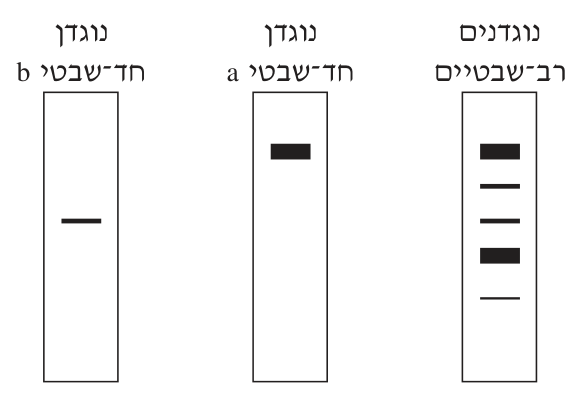
עיין באיור ב', והסבר מדוע היו הבדלים במספר הפסים ובמיקומם.
בהמשך רצו החוקרים לקבוע, בעזרת הנוגדנים שברשותם, את מיקומו של וירוס הצהבת B ברקמת כבד שהוצאה מאדם שחלה בצהבת. תאר שיטה שתתאים למטרה הזאת.
בידי חוקרים נוגדן חד-שבטי (מונוקלונלי) ונוגדן חד-שרשרתי. שני הנוגדנים קושרים את החלבון X.
ציין שני יתרונות של השימוש בנוגדנים חד-שרשרתיים על-פני השימוש בנוגדנים חד-שבטיים.
החוקרים בדקו את יכולת הנוגדנים (חד-שבטי וחד-שרשרתי) ליצור תלכידים בתמיסה. לשם כך הם ערבבו שני ריכוזים של כל אחד מן הנוגדנים עם החלבון X, ומדדו את המסה של התלכידים שנוצרו ושקעו. התוצאות שהתקבלו מוצגות באיור לשאלה.
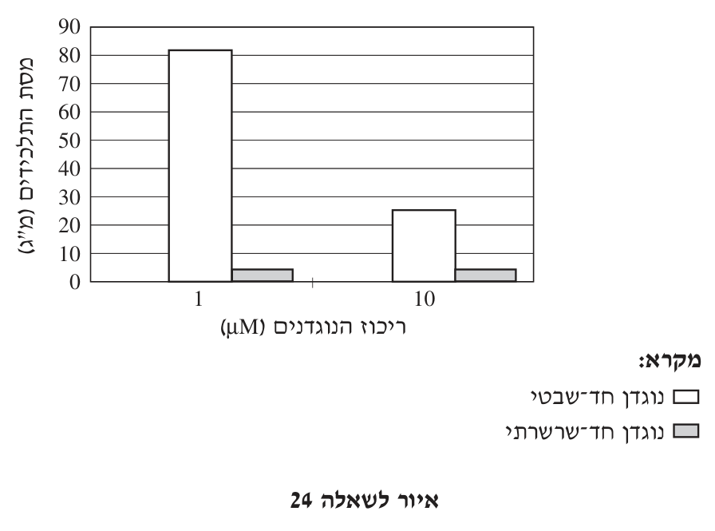
הסבר מדוע גרמה העלייה בריכוז הנוגדן החד-שבטי לירידה במסת התלכידים.
הסבר מדוע לא התקבל משקע כאשר ערבבו את החלבון X עם הנוגדן החד-שרשרתי.
ההורמון L משמש לטיפול בנשים המתקשות להרות. חוקרים בחברת תרופות מעוניינים לייצר את ההורמון L האנושי בתאים של בעלי חיים, בשיטות של הנדסה גנטית. ברשותם שני סוגי תאים המתאימים לשיבוט: תאים הדורשים תאחיזה למשטח ותאים הגדלים בתרחיף.
באיזה משני סוגי התאים תמליץ לחוקרים להשתמש כדי לייצר את ההורמון L בכמות גדולה? הסבר את תשובתך.
החוקרים החדירו, בטרנספקציה, לתאים שנבחרו פלסמיד המכיל את הגן המקודד להורמון L, והתקבלו תאים בעלי ביטוי זמני של הגן הזה.
ציין את ההבדל העקרוני בין ביטוי גנים זמני ובין ביטוי גנים יציב.
כיצד יכולים החוקרים לקבל קו תאים בעל ביטוי יציב מתרבית תאים בעלת ביטוי זמני של הגן המקודד להורמון L?
החוקרים עקבו אחר ריכוז ההורמון L בתוך תאים בעלי ביטוי זמני של הגן, לאורך זמן. התוצאות מוצגות באיור לשאלה.
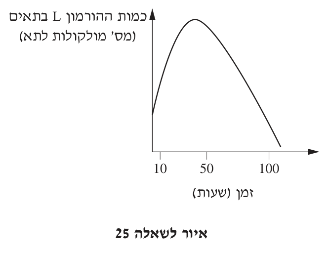
הסבר ממה נובעת הירידה החדה ברמת הביטוי של ההורמון L בקו התאים בעלי הביטוי הזמני, לאחר 50 שעות.
חוקרים מעוניינים לשבט את הגן C בגנום של צמח דו-פסיגי מסוים כדי שיוכלו להשתמש בחלבון המקודד על-ידי הגן C כתרופה לבני אדם. ברשות החוקרים שני פלסמידי Ti (a ו-b) המכילים את הגן C, כפי שמתואר באיור לשאלה.
החוקרים פצעו שני צמחים צעירים, צמח א' וצמח ב'. הם הדביקו את צמח א' בחיידק אגרובקטריום המכיל את פלסמיד a, ואת צמח ב' בחיידק אגרובקטריום המכיל את פלסמיד b. אחר-כך הם בדקו את נוכחות תוצר הגן C ואת נוכחות האופין בתאים של כל אחד מן הצמחים, א' ו-ב'. התוצאות שהתקבלו מוצגות בטבלה שלפניך (+ נוכחות החומר; – היעדר החומר).
| תוצר הגן C | האופין | |
|---|---|---|
| צמח א' | – | + |
| צמח ב' | + | + |
הסבר מדוע נבדקה נוכחות האופין בצמחים.
הצע הסבר להבדל בין נוכחות תוצר הגן C בצמח א' ובין נוכחותו בצמח ב'.
כדי ליצור צמח טרנסגני המכיל את הגן C, החליטו החוקרים להשתמש בתרבית מריסטמית ולא בתרבית קאלוס.
ציין שני יתרונות לשימוש בתרבית מריסטמית על-פני השימוש בתרבית קאלוס.
בהמשך הניסוי רצו החוקרים לשבט את הגן C בצמח נוסף, חד-פסיגי. מאחר שלא יכלו להשתמש בחיידק האגרובקטריום המהונדס, הם שקלו דרכים חלופיות.
תאר בקצרה דרך חלופית לשיבוט הגן C בצמח חד-פסיגי.
החומר TRF הוא חומר סינתטי, שהשתמשו בו בעבר בתעשייה. בשנים האחרונות נאסר השימוש בחומר הזה בשל היותו רעיל לסביבה. פירוק מלא של החומר TRF נמשך כשלושים שנה. אחד החומרים שנוצר כתוצאה מפירוק ה-TRF הוא החומר TLT. לאחרונה התברר כי אזור נרחב זוהם בחומר TRF, והיה צורך לנקותו.
החוקרים בדקו דגימות קרקע מן האזור המזוהם. מה, לדעתך, יימצא בקרקע? (בתשובתך התייחס לסוג החומרים המזהמים ולתכונות המיקרואורגניזמים המצויים בקרקע).
לבדיקת המוטגניות של החומרים TRF ו-TLT ביצעו החוקרים את מבחן איימס. הסבר את העיקרון שעליו מבוסס מבחן איימס.
במבחן שנערך השתמשו החוקרים בחיידקי סלמונלה מוטנטיים, שאינם יכולים לייצר טריפטופן. החיידקים הודגרו עם החומרים TRF ו-TLT, וכמו-כן עם החומר TSA שאינו מוטגני ולכן שימש כבקרה. אחר-כך נזרעו החיידקים על מצע שאינו מכיל טריפטופן. התוצאות שהתקבלו מוצגות בטבלה שלפניך.
| החומר | מספר המושבות שגדלו על מצע חסר טריפטופן |
|---|---|
| TRF | 3,270 |
| TLT | 15,340 |
| TSA | 6 |
קבע, על סמך התוצאות בטבלה, איזה מן החומרים הוא המוטגני ביותר. נמק את תשובתך.
החוקרים בודדו חמישה סוגי חיידקים מדגימות קרקע באזור המזוהם בחומר TRF. כאשר כל תרבית גדלה בנפרד בנוכחות החומר TRF, לא חל פירוק מלא של החומר. לעומת זאת, כאשר אוחדו התרביות והוסיפו להן TRF, נוטרל החומר TRF על-ידי פירוקו המלא ל-CO₂ ומים. הסבר את הממצאים האלה.
באזור מסוים מצוי מכון לטיהור שפכים, הפועל בשיטות שונות.
הסבר את העיקרון של טיהור שפכים בשיטת הבוצה המשופעלת.
בשכנות למכון לטיהור השפכים עומד לקום מפעל להפקת מתאן. המכון בדק את האפשרות לטפל בעודפי הבוצה המשופעלת במפעל כדי להפיק מהם מתאן.
תאר בקצרה תהליך שבו עודפי הבוצה המשופעלת משמשים לייצור מתאן.
כדי לבדוק את סוג הפסולת המתאים ביותר להפקת מתאן על-ידי חיידקים, לקחו החוקרים כמות זהה של שלושה סוגי פסולת: פסולת אורגנית, פסולת אורגנית שמכילה אנטיביוטיקה ותערובת של פסולת אורגנית ואי-אורגנית. לאחר מספר שעות הם מדדו את נפח המתאן שנוצר. התוצאות שהתקבלו מוצגות באיור לשאלה.
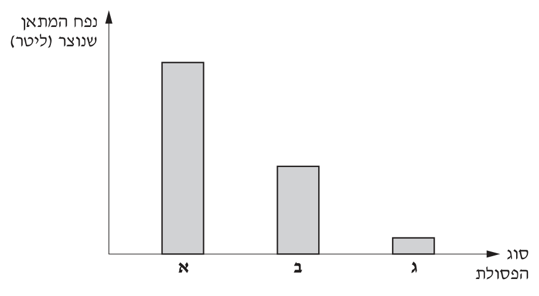
התאם כל סוג פסולת לעמודה המתאימה לו באיור (א, ב או ג), והסבר את קביעותיך.
חוקרים פיתחו ננו-ביוסנסור לזיהוי וירוסים.
ציין שני יתרונות של ננו-ביוסנסור על פני ביוסנסור גדול יותר.
באיור שלפניך מוצג העיקרון שעליו מבוסס הננו-ביוסנסור שפיתחו החוקרים.
הסבר לאיור: בצידו הימני של האיור מופיעות עקומות זרם, המצביעות על עוצמת הסיגנל המתקבל (מידת ההולכה — זרם) מן הננו-ביוסנסור, כתלות בזמן. כאשר ערך ה-y קבוע, אין זרם בזמן נתון; כאשר ערך ה-y משתנה, יש זרם בזמן נתון.
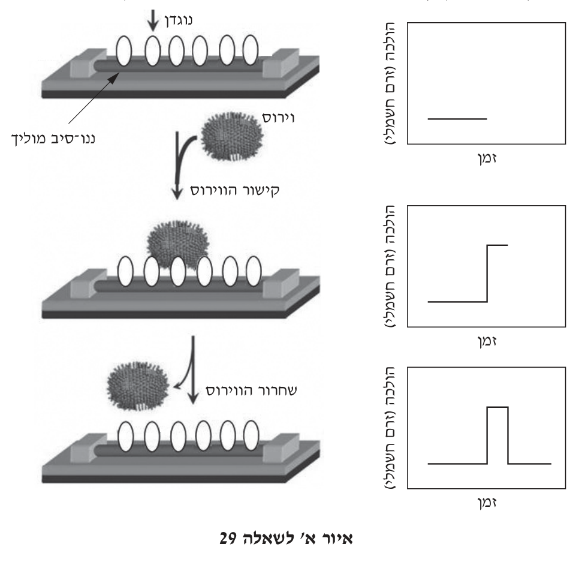
כדי לבנות את הננו-ביוסנסור, השתמשו החוקרים בננו-סיב מוליך העשוי זהב. תאר שיטה אחת לחיבור נוגדנים לננו-סיב מוליך העשוי זהב.
האם יש חשיבות לאזור הקישור במולקולת הנוגדן לננו-סיב? התייחס לחלקי הנוגדן, והסבר את תשובתך.
חוקרים ביצעו את הניסוי הבא: הם קשרו לננו-ביוסנסור מולקולת וירוס אחת, שחררו אותה, ולאחר זמן מה קשרו לננו-ביוסנסור מולקולת וירוס שנייה מאותו סוג. לפניך עקומות זרם, א–ג.
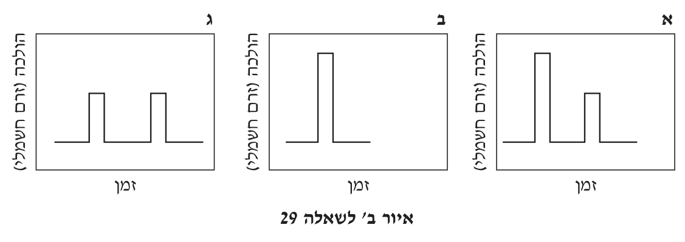
איזו מעקומות הזרם (א–ג) התקבלה בניסוי שתואר? הסבר את תשובתך.
החוקרים המשיכו לפתח ננו-ביוסנסור שיאפשר זיהוי שני סוגים של וירוסים בו-זמנית. בחר את ההיגד הנכון, העתק אותו למחברתך והסבר את בחירתך. הננו-ביוסנסור צריך לכלול:
קבוצת חוקרים בדקה את האפשרות ליצור ננו-קפסולות (מבנים חלולים) לתעשיית התרופות. החוקרים השתמשו באחד מחלבוני החלב (α-לאקטאלבומין) כדי לבנות מבנים של ננו-קפסולות במבנה גלילי.
ציין יתרון אחד וחיסרון אחד לשימוש בחלבונים כאבני בניין לייצור ננו-מבנים, לעומת השימוש בחומרים אי-אורגניים.
החוקרים מצאו שבתנאים מסוימים פירוק אנזימתי של החלבון α-לאקטאלבומין גורם ליצירת אבני בניין, המתארגנות למבנה ננומטרי גלילי בתהליך של הרכבה עצמית (self-assembly). באיור א' לשאלה מוצג תיאור סכמתי של התהליך ליצירת ננו-קפסולה במבנה גלילי, שבו משתתף חלבון החלב α-לאקטאלבומין.
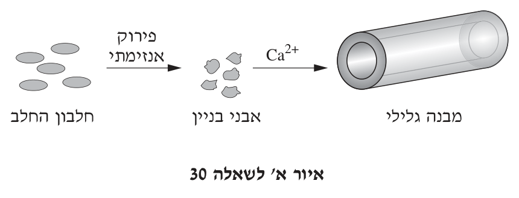
ציין על סמך האיור באיזו גישה בחרו החוקרים לבנות את המבנה הגלילי: "מלמעלה למטה" או "מלמטה למעלה". הסבר את תשובתך.
הסתמך על איור א' לשאלה, והסבר כיצד אפשר לשלוט בקצב של יצירת הננו-קפסולות במבנה גלילי.
בהמשך רצו החוקרים ליצור ננו-קפסולה במבנה כדורי חלול. לשם כך השתמשו בשני חלבונים: החלבון X שהוא טרימר, והחלבון Y שהוא דימר (ראה איור ב' לשאלה).
החוקרים יצרו בשיטות של הנדסה גנטית שילובים שונים של תת-יחידות של החלבונים X ו-Y, שיהוו אבני בניין אפשריות לבניית ננו-מבנים. אבני הבניין מוצגות באיור ג' לשאלה.
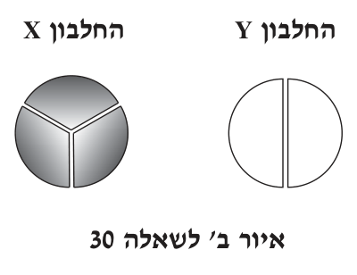
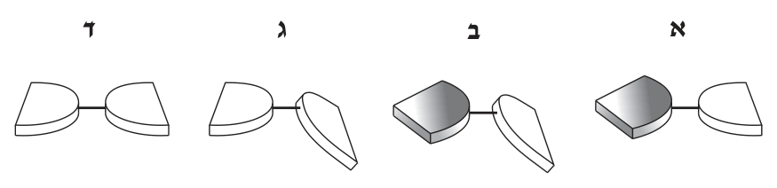
קבע איזו מאבני הבניין (א–ד) מתאימה ליצירת מבנה כדורי חלול, ואילו מבנים (סיב לינארי, מערך דו-ממדי וכדומה) יתקבלו מכל אחת מאבני הבניין הנותרות.
המבנה הכדורי שנוצר, הננו-קפסולה, מיועד להזרקה לכלי דם, ולכן צריך לבחון את ממדיו ביחס לממדי כלי הדם. הקוטר הממוצע של נים דם בגוף הוא 0.01 מ"מ. הקוטר הממוצע של ננו-קפסולה הוא 25 ננומטר. חשב פי כמה גדול קוטרו של נים דם מקוטרה של הננו-קפסולה המתוכננת.
שיטת סנגר לקביעה של רצף ה-DNA מבוססת על סינתזת DNA, שבה הגורם המגביל הוא:
איזה מבין הרצפים הבאים יכול להיות אתר הכרה לאנזים הגבלה?
סמן את ההיגד שאינו נכון. בתהליך הרצת DNA בג'ל אלקטרופורזה:
בשימוש בחיידק אגרובקטריום כנשא יש להחדיר את המקטע המיועד לשיבוט:
באיזה צמד תחלים (פריימרים) ניתן להשתמש על-מנת להגביר ב-PCR את מקטע ה-DNA הבא?
3'-CGGCGCATTTCCGTAATAGGCGGTTCATGTTTTATGTCTCAGTTTAACGTCATGAGACGCCC-5'
5'-GCCGCGTAAAGGCATTATCCGCCAAGTACAAAATACAGAGTCAAATTGCAGTACTCTGCGGG-3'
כיצד מגן חיידק על ה-DNA שלו מפני חיתוך על-ידי אנזימי הגבלה שמיוצרים על ידו?
מה מאפשרות חוליות מקשרות (linkers)?
בחיתוך מולקולת DNA דו-גדילית על-ידי אנזים הגבלה התקבלו שלושה מקטעים. מולקולת ה-DNA שנחתכה הייתה:
אילו סוגי קשרים אינם מייצבים את התצמיד אנטיגן-נוגדן?
במבחן ELISA מדגירים את צלחת הבדיקה עם חלבון אינרטי לפני הוספת הנוגדן, כדי:
לפניך גרף המתאר את גודל תלכידי האנטיגן-נוגדן כתלות בריכוז הנוגדן (כמות האנטיגן קבועה).
בריכוז גבוה של נוגדן (מעבר לתחום המנות השקולות), לא נוצרים גשרים בין מולקולות האנטיגן למולקולות הנוגדן כי:
קו תאים רציף:
מדוע הפקת חלבון אנושי מתרבית של תאי בעלי חיים עדיפה על הפקתו מתרבית של חיידקים?
היכן מצוי האזור המקודד לאופינים?
מהו סוג יחסי-הגומלין בין חיידקים המפרקים תאית ובין חיידקים המשתמשים בתוצרי הפירוק של התאית?
איזה מבין המרכיבים הבאים חיוני בתהליך פירוק הפלסטיק על-ידי מיקרואורגניזמים?
איזה מבין ההיגדים הבאים נכון לגבי חומרי הדברה ביופסטיצידיים?
בטכנולוגיית הננו-ליתוגרפיה משתמשים:
תהליך ההרכבה העצמית (self assembly) של תת-יחידות:
איזה מבין התהליכים הבאים אינו דוגמה לגישת התכנון "מלמטה למעלה"?
לפניך קטע שעובד על-פי המאמר "להרוג את השליח" מאת צבי ארזי וידידיה גפני. המאמר התפרסם בכתב העת "גליליאו", גיליון 104, אפריל 2007. קרא את הקטע, וענה על הסעיפים א'–ד' שאחריו.
בשנת 1990 ערכו החוקרת קרולין נפולי ועמיתיה ניסוי שנועד לברר במדויק את תפקידו של האנזים צ'לקון סינתאז. אנזים זה מעורב בייצור פלבונואידים, צִבענים המקנים צבע סגול לעלי הכותרת של פרח הפטוניה.
החוקרים יצרו צמחי פטוניה טרנסגניים, שהכילו עותקים נוספים של הגן המקודד לצ'לקון סינתאז בפטוניה. החוקרים ציפו לקבל פטוניות המייצרות יותר פלבונואידים, ושצבע פרחיהן יהיה סגול בגוון עז יותר משל פרחי המקור. למרבה ההפתעה, קרה ההפך הגמור. אף שהפטוניות הכילו עותקים נוספים של הגן המקודד לצ'לקון סינתאז, בחלק מהן רמות האנזים היו נמוכות אף יותר מבצמח המקור, ולכן נשאו פרחים לבנים באופן חלקי או מלא. התברר שאף כי ה-mRNA של הגן המקורי ושל הטרנסגן, המקודדים לצ'לקון סינתאז, משועתקים בגרעין התא כצפוי, מסיבה לא ברורה אין הם מצטברים בציטופלזמה עד לרמות של צמח הפטוניה המקורי, ולכן אינם מתורגמים לרמה מספקת של האנזים. הרמה הנמוכה של האנזים אינה מספיקה לייצור פלבונואידים שֶׁיַּקְנוּ לפרחי הפטוניה צבע סגול כלשהו, ולכן הם לבנים. בניסוי-המשך גילו החוקרים שהסיבה לרמה הנמוכה של ה-mRNA המקודד לאנזים היא שרובו מפורק במהירות בעת המעבר מהגרעין לציטופלזמה. החוקרים הסיקו מהניסוי הזה שנוכחות של גן זר בגנום הפטוניה הטרנסגני גרמה, בדרך לא-ברורה, ל"השתקת" הביטוי של הגן המקורי התואם לו ברצפו.
מהניסוי שלעיל ומניסויים אחרים שנערכו במהלך השנים בפטריות ובתולעת טבעתית, התברר שמולקולות RNA דו-גדילי גורמות להשתקת גנים בעלי רצפים תואמים לשלהן בתא. בהמשך הצליחו חוקרים לזהות מולקולות RNA זעירות (באורך 21–25 נוקליאוטידים) ולראשונה לקשור את נוכחותן למנגנון ההשתקה בצמחים. החוקרים גילו כי מולקולות ה-RNA הזעירות הן בעלות רצף התואם את הגן שביטויו הושתק, ונמצאות רק בצמחים טרנסגניים שעברו השתקה. החוקרים הסיקו כי למולקולות ה-RNA הזעירות תפקיד מרכזי במנגנון ההשתקה באורגניזמים שונים — משמרים ועד בני אדם. החוקרים כינו את מולקולות ה-RNA הזעירות small interfering RNA (siRNA).
גילוי מנגנון ההשתקה על-ידי מולקולות siRNA אִפשר לראשונה להשתיק באופן יעיל וספציפי את הביטוי של גן מסוים שחלק קטן מרצף הבסיסים שלו ידוע. השימוש במנגנון ההשתקה כדי לפגוע בביטוי של גנים מסוימים, אם ביצור השלם ואם בחלק מתאיו, מספק מידע על תפקודי גנים בדרך השלילה. דהיינו, אילו תפקודים נפגעים אם מושתק ביטויו של גן זה או אחר. היכולת להשתיק ביטוי של גן-מטרה באופן ספציפי עוררה בקרב החוקרים התלהבות ותקווה שיוכלו להשתמש בשיטה זו גם לייעודים ביוטכנולוגיים ורפואיים. אחת הדוגמאות הטובות היא יצירת צמחים עמידים לנגיפים. דוגמה חשובה אחרת היא תרופות המבוססות על siRNA לטיפול במחלות באדם, כמו סרטן ואלצהיימר. היום נערכים ניסויים קליניים ראשונים בכמה תרופות המבוססות על siRNA.
מתברר שלהשתקת ביטוי גנים על-ידי מולקולות siRNA יש יתרונות רבים על שיטות מקובלות לעיכוב חלבונים מזיקים, כמו עירוי נוגדנים או בליעת מעכבים. בין יתר יתרונותיהן, siRNA הן זולות לייצור, ספציפיות ביותר, אינן רעילות, בעלות השפעה מתמשכת ובעלות יכולת השתקה חזקה בריכוזים נמוכים. החסרונות העיקריים של מולקולות ה-siRNA כתרופה, לעומת טיפולים קיימים, הם חוסר יציבותן בדם והקושי להחדירן לרקמת המטרה.
© כל הזכויות שמורות ל"גלילאו"
על סמך הכתבה, ציין שני מאפיינים של מולקולות ה-siRNA.
על סמך הכתבה, ציין שני שימושים ביוטכנולוגיים ב-siRNA.
על סמך הכתבה, ציין שני יתרונות ושני חסרונות של השימוש ב-siRNA כתרופה.
למולקולות ה-siRNA יש השפעה על ביטוי הגן בתאי הפטוניה הטרנסגנית. הצע שיטה ניסויית לבדיקת תופעה זו. תאר בקצרה את הניסוי שיש לערוך תוך פירוט שלבי השיטה שהצעת.
חברת תרופות מעוניינת להשתמש בטכנולוגיית ה-siRNA לטיפול במחלות שונות. בחברה שוקלים להתמקד באחת משתי המחלות האלה:
I. רגישות ללקטוז הנובעת מחֶסֶר באנזים המפרק את הסוכר לקטוז.
II. מחלת עיניים הנובעת מביטוי בעודף של חלבון מסוים.
באיזו משתי המחלות השימוש בטכנולוגיית ה-siRNA יהיה יעיל? נמק את תשובתך.
במעבדה העוסקת בהתפתחות הכנף בפרפרים מעוניינים לבודד את אחד הגנים האחראי ליצירת דגם הכנף. ממחקר קודם ידוע לחוקרים שגודל הגן המקודד לחלבון זה הינו 5,000 זוגות בסיסים. על-מנת לאתרו, מבצעים החוקרים הספג דרומי והספג צפוני.
ציין שני הבדלים בין ההספג הצפוני להספג הדרומי.
לצורך ביצוע ההספגים מפיקים החוקרים את חומצות הגרעין הנחוצות משני סוגי תאים — תאי כנף ותאי גוף. בשלב הראשון מבוצע הספג דרומי באופן הבא: חומצות הגרעין הרלוונטיות משני סוגי התאים נחתכות פעם על-ידי אנזים ההגבלה A ופעם על-ידי אנזים ההגבלה B ומורצות בג'ל אלקטרופורזה. לאחר ביצוע ההספג מגיבים את התספיג עם גלאי מתאים (גלאי 1). באיור א' לשאלה מוצגות התוצאות של ההספג הדרומי.
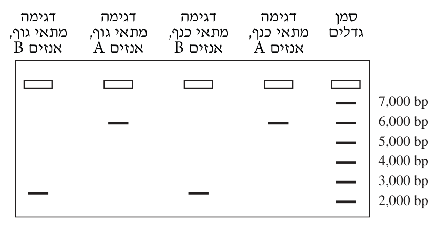
התבונן בתוצאות המוצגות באיור א' לשאלה: מדוע התקבלו מקטעים שונים של DNA כתוצאה משימוש באנזים ההגבלה A ובאנזים ההגבלה B?
מדוע התקבלו תוצאות דומות בשני סוגי התאים?
בשלב הבא ביצעו החוקרים הספג צפוני על חומצות הגרעין הרלוונטיות משני סוגי התאים והשתמשו באותו גלאי (גלאי 1). בתוצאות התספיג התקבל פס בתאי הכנף בלבד ולא בתאי הגוף. הסבר מדוע.
בהמשך השתמשו החוקרים בגלאי אחר (גלאי 2) וביצעו בעזרתו הספג צפוני והספג דרומי על חומצות הגרעין הרלוונטיות משני סוגי התאים.
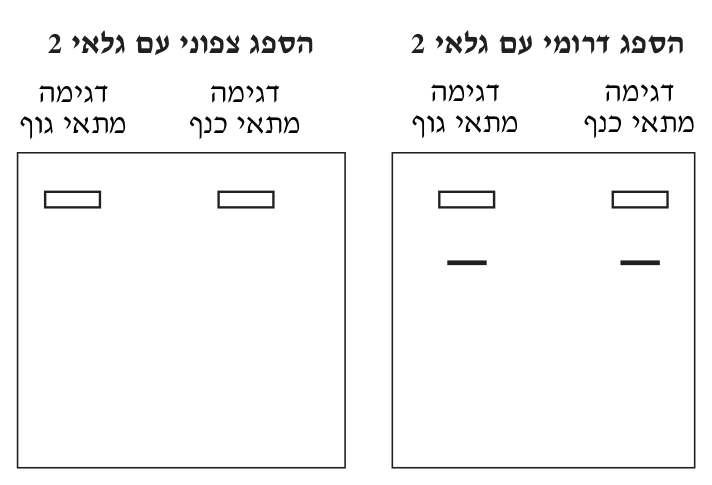
היעזר בתוצאות ההספגים המוצגות באיור ב' והסבר מדוע התקבלו פסים בהספג הדרומי בלבד.
מדענית שיבטה מקטע של DNA לתוך פלסמיד. היא השתמשה בשיטת ה-PCR כדי לבדוק אם השיבוט הצליח.
בתגובת ה-PCR יש שלושה שלבים עיקריים. תאר בקצרה את המתרחש בכל שלב.
המדענית ביצעה מספר תגובות PCR על פלסמיד שבו שובט המקטע, ועל פלסמיד שאינו מכיל את המקטע. לשם כך, השתמשה בתחלים 1 ו-2, בתחלים 1 ו-3 ובתחלים 2 ו-3. באיור א' לשאלה מופיע הפלסמיד שבו שובט המקטע ועל גביו מסומנים המיקום והכיוון של התחלים השונים (כיוון החץ מתחת לתחל מעיד על הכיווניות של סינתזת ה-DNA בתגובת ה-PCR).
תוצרי תגובות ה-PCR הופרדו בג'ל אלקטרופורזה. התוצאות שהתקבלו מוצגות באיור ב' לשאלה.
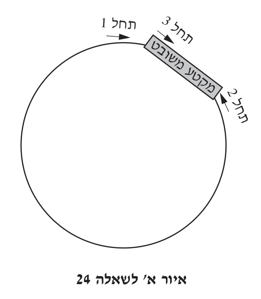
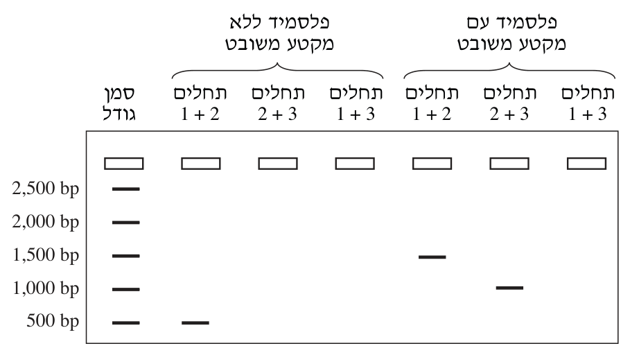
על סמך תוצאות ההרצה בג'ל קבע מהו האורך של המקטע המשובט. הסבר את קביעתך.
הסבר מדוע היו הבדלים בתוצאות שהתקבלו כתוצאה מהשימוש בתחלים 2 + 3 על שני הפלסמידים.
הסבר מדוע לא התקבלו תוצרי PCR כתוצאה מהשימוש בתחלים 1 + 3 על הפלסמיד המכיל את המקטע המשובט.
הצע שיטה נוספת לבדוק אם השיבוט של מקטע DNA לפלסמיד הצליח, והסבר כיצד תשתמש בשיטה זו כדי להבחין בין הפלסמיד שבו שובט המקטע לבין פלסמיד שאינו מכיל את המקטע.
חלק גדול מן הגידולים הסרטניים הנוצרים בשד מאופיינים בביטוי-יתר של רצפטור לאסטרוגן. בתאי שד בריאים, הרצפטור הזה מתבטא במידה מועטה בלבד. חוקרים בודדו נוגדנים כנגד הרצפטור לאסטרוגן, וברצונם להשתמש בהם להכנת תרופה מונחית. החוקרים החליטו לבדוק את יעילותן של שתי גישות:
גישה I: שימוש בנוגדן הקשור לרעלן הדיפטריה
גישה II: שימוש בנוגדן הקשור לאנזימים ספציפיים
הסבר את ההבדל במנגנון הפעולה של כל אחת מן הגישות.
כדי לבדוק את יעילות התרופות המונחות, גידלו החוקרים תאי סרטן שד המאופיינים בביטוי-יתר של הרצפטור לאסטרוגן, והזריקו אותם לירך עכברים כדי לקבל גידולים. לאחר שהתפתחו גידולים בקוטר של 1 ס"מ, חילקו החוקרים את העכברים ל-4 קבוצות שקיבלו את הטיפולים שלהלן כל שבוע במשך חודש:
לעכברים בקבוצה 1 הוזרק בופר בלבד.
לעכברים בקבוצה 2 הוזרק נוגדן הקשור לרעלן הדיפטריה (גישה I).
לעכברים בקבוצה 3 הוזרק נוגדן הקשור לאנזים ספציפי (גישה II).
לעכברים בקבוצה 4 הוזרק האנזים הספציפי בלבד שאינו קשור לנוגדן.
כל העכברים קיבלו את המצע של האנזים הספציפי במי השתייה. קוטר הגידול נמדד אחת לשבוע. תוצאות הניסוי מסוכמות באיור לשאלה.
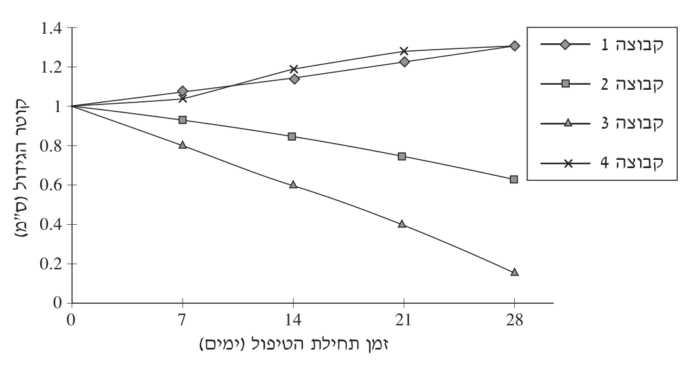
הסבר מדוע גדל קוטר הגידול בקבוצות 1 ו-4.
היעזר באיור וקבע איזו מבין הגישות, I או II, יעילה יותר בריפוי הסרטן שהחוקרים יצרו בעכברים. הסבר את ההבדל ביעילות הגישות. בתשובתך הנח כי יכולת הנוגדנים לקשור את הרצפטור לאסטרוגן על-גבי התאים היא זהה.
החוקרים רצו לבדוק את יעילותה של תרופה מונחית גם בריפוי סרטן המעי. הם גידלו תאים משני סוגים והזריקו אותם לירך עכברים כדי לקבל גידולים: בקבוצה אחת — גידולים מתאי סרטן המעי, ובקבוצה שניה — גידולים מתאי סרטן השד.
על סמך התוצאות שהתקבלו בסעיף הקודם, הם בחרו את התרופה המונחית היעילה ביותר, והזריקו אותה לעכברים משתי הקבוצות. הם גילו שהתרופה הייתה יעילה לריפוי סרטן השד ולא הייתה יעילה לריפוי סרטן המעי.
הצע הסבר אפשרי לכך שהתרופה יעילה לריפוי סרטן השד ולא לריפוי סרטן המעי.
במעבדת מחקר מדען מעוניין לבדוק אם החלבון A נקשר לאחד משלושת החלבונים B, C ו-D. לרשות המדען: מיצוי חלבוני חיידק המכיל את ארבעת החלבונים (A, B, C ו-D) ונוגדנים חד-שבטיים ממקור עכברי כנגד כל אחד מהחלבונים.
המשקלים המולקולריים של החלבונים מוצגים בטבלה הבאה:
| החלבון | משקל מולקולרי (kDa) |
|---|---|
| A | 160 |
| B | 20 |
| C | 70 |
| D | 120 |
המדען השתמש בשיטת האימונופרסיפיטציה (השקעה בעזרת נוגדנים). הוא קשר את הנוגדנים החד-שבטיים כנגד חלבון A לנשא פולימרי כדורי. הסבר מהו תפקיד הנשא הפולימרי בשיטת האימונופרסיפיטציה.
המדען חילק את תמיסת הנשא הפולימרי הקשור לנוגדן A לשתי מבחנות. מבחנה I הודגרה עם מיצוי חלבוני החיידק, ומבחנה II (מבחנת ביקורת) הודגרה עם תמיסת בופר בלבד. החוקר שחרר את החלבונים שנקשרו לנשא בכל אחת מהמבחנות וחילק כל דוגמה לשלוש. כל אחת מהדוגמאות הורצה בג'ל אלקטרופורזה בנוכחות SDS ומרקפטואתנול לצורך ביצוע תספיג אימונולוגי עם נוגדן שונה כמתואר באיור. בתום ההדגרה עם הנוגדנים הראשוניים השונים הודגרו כל הממברנות עם נוגדן שניוני זהה מסומן כנגד נוגדני עכבר. התוצאות מוצגות באיור לשאלה.
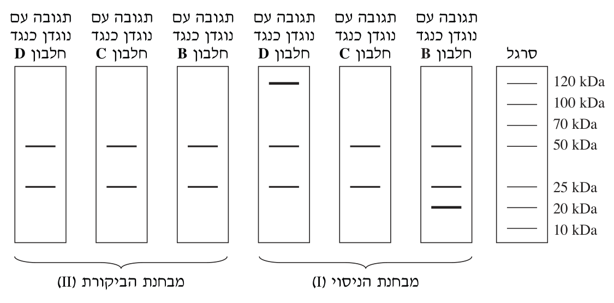
היעזר בתוצאות המוצגות באיור לשאלה הזו ובנתוני המשקל המולקולרי של החלבונים השונים, וקבע אילו מהחלבונים (B, C או D) נקשרים לחלבון A. הסבר את תשובתך.
החוקר שם לב שבכל הממברנות, כולל הממברנות ממבחנת הביקורת, התקבלו שני פסים המתאימים למשקלים המולקולריים 50 kDa ו-25 kDa. מה מייצגים הפסים האלה? נמק את תשובתך.
בחברת ביוטכנולוגיה מעוניינים לבטא חלבון אנושי בתרבית תאים שמקורה בתאי כבד של קוף. לרשותם פלסמיד שבו משובט הגן המקודד לחלבון. כמו כן הפלסמיד מכיל גן המקנה עמידות לרעל X. בשלב הראשון החוקרים מנסים להחדיר את הפלסמיד לתאי הכבד בשתי שיטות החדרה: האחת בסידן זרחתי והשנייה במיקרו-הזרקה.
הסבר בקצרה את התהליך שיש לערוך על-מנת לברור מתוך אוכלוסיית התאים הכללית את התאים שבהם מבוטא החלבון האנושי בביטוי יציב.
החברה מעוניינת לפתח תהליך מסחרי לייצור החלבון האנושי. במסגרת זו בדקו החוקרים בחברה את אחוז התאים שעברו טרנספקציה יציבה בשלוש שיטות החדרה שונות: שתי השיטות שהוזכרו לעיל ושיטה שלישית שבה השתמשו בחיידק אגרובקטריום. התוצאות שהתקבלו משלוש השיטות מוצגות באיור שלפניך:
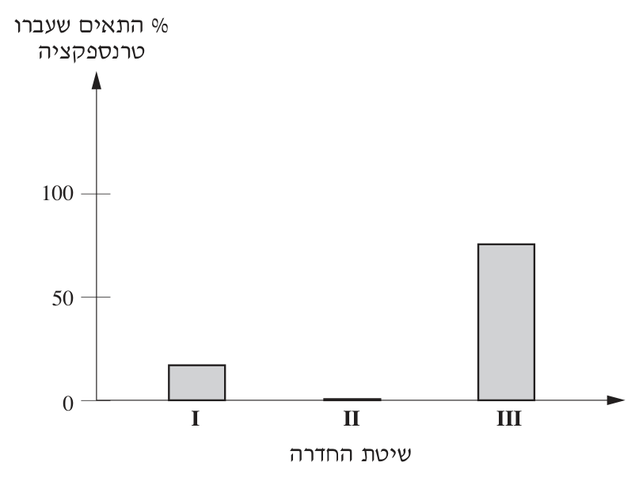
קבע איזו שיטה מבין שלוש השיטות (I–III) המוצגות באיור לשאלה היא שימוש בסידן זרחתי, איזו היא מיקרו-הזרקה ואיזו היא שימוש באגרובקטריום. נמק את תשובתך.
עובד חדש בחברה הציע לנסות שיטת החדרה נוספת — הדבקה ויראלית. להפתעתו, לאחר שימוש בשיטה זו הבחין שחלק מהתאים שעברו טרנספקציה שינו את אופן גידולם על משטח מוצק, וגדלו כתרבית רב-שכבתית במקום כתרבית חד-שכבתית.
הצע הסבר לתופעה זו.
מהו היתרון בשימוש בתאים הגדלים בתרבית רב-שכבתית לצורך הפקת החלבון בתרבית תאים? נמק את תשובתך.
צמח הווינקה הוורודה משמש מקור להפקת וינקריסטין שהנו חומר כימותרפי. צמחי הווינקה הללו רגישים מאוד לקוטל עשבים מסוים. החוקרים מעוניינים ליצור צמחי וינקה העמידים לקוטל העשבים הזה. הם שיערו כי מידת העמידות לקוטל העשבים תלויה במידת הפעילות של האנזים X המצוי בווינקה. לשם כך בדקו את מידת הפעילות של האנזים X ואת העמידות לקוטל העשבים בשלוש תרביות שונות: תרבית מריסטמית ושתי תרביות קאלוס שונות (1 ו-2).
תוצאות הבדיקה מופיעות בטבלה שלהלן:
| שם התרבית | מידת הפעילות של האנזים X | קוטל עשבים 0.5 mg/ml | קוטל עשבים 1 mg/ml | קוטל עשבים 2 mg/ml |
|---|---|---|---|---|
| תרבית מריסטמית | 1 | רגיש | רגיש | רגיש |
| תרבית קאלוס 1 | 0.5 | עמיד | עמיד | רגיש |
| תרבית קאלוס 2 | 0.8 | עמיד | רגיש | רגיש |
ציין שני הבדלים בין תרבית מריסטמית לתרבית קאלוס.
האם ניתן לקבוע על סמך התוצאות המופיעות בטבלה את הקשר בין מידת הפעילות של האנזים X לבין העמידות בפני קוטל העשבים? הסבר את תשובתך.
בשלב הבא, מעוניינים החוקרים לייצר מתרבית קאלוס 1 צמח וינקה שלם שיהיה עמיד לקוטל עשבים. תאר בקצרה כיצד ניתן לייצר צמח שלם מתרבית קאלוס.
לרשות קבוצת חוקרים אחרת במפעל חמש תרביות תאים (1–5) אשר מקורן בחלקים שונים של צמח הווינקה. החוקרים מעוניינים להשתמש בתרביות האלה לייצור תעשייתי של וינקריסטין. הם גידלו את חמש התרביות ועקבו אחר ריכוז הווינקריסטין המיוצר בתאים. הם שמו לב כי ישנם הבדלים באחוז התאים הגדלים בצברים בתרביות שונות. האיור שלפניך מתאר את ריכוז הווינקריסטין ואת אחוז התאים הגדלים בצברים בכל אחת מהתרביות.
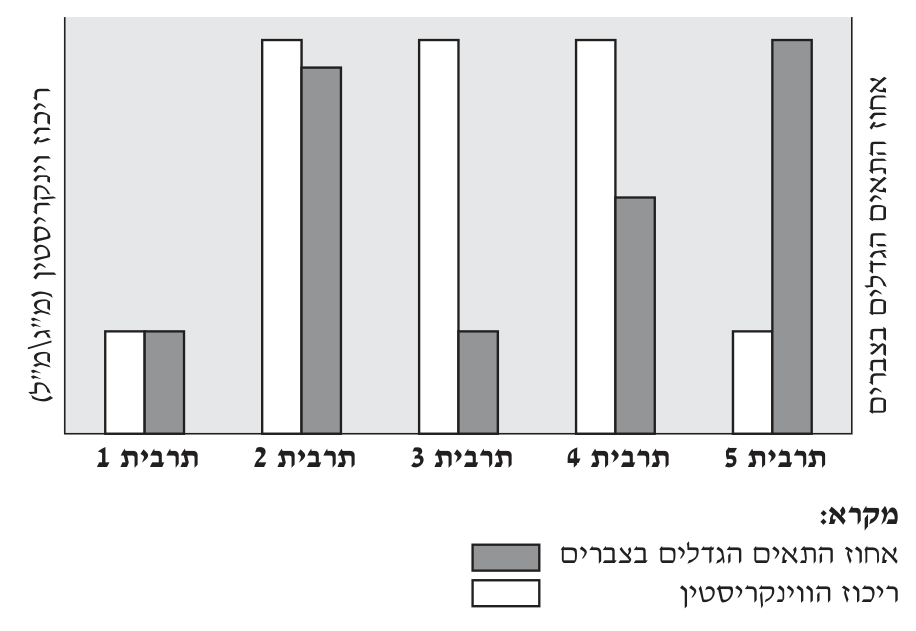
לאור התוצאות שהתקבלו, בחרו החוקרים בתרבית 3 לשם ייצור וינקריסטין בכמות מסחרית. הסבר מדוע.
מהנדסי ביוטכנולוגיה מעוניינים לשפר את תהליך הייצור של נייר לבן ולהופכו לתהליך ידידותי לסביבה. אחד השלבים המזיקים לסביבה בתהליך הייצור של הנייר הוא ההלבנה, שבמהלכה מסולק הליגנין שמעניק לנייר גוון אפור. לרשות המהנדסים תרבית חיידקים מאדמת יער. המהנדסים מעוניינים לברור מִמֶּנָּה חיידקים מפרקי ליגנין.
תאר כיצד יוכלו המהנדסים לברור את החיידקים מפרקי הליגנין מקרב החיידקים שבתרבית.
הצע ותאר דרך שבעזרתה יוכלו לשפר את היעילות של פירוק הליגנין בחיידקים שבּוּדדו.
המהנדסים בודדו שלושה זני חיידקים המסוגלים לפרק ליגנין. לאחר מכן בחנו המהנדסים את היעילות של פירוק הליגנין וכן את היעילות של פירוק התאית על-ידי כל אחד משלושת הזנים שבודדו. לשם כך הוסיפו לכל תרבית ריכוז קבוע של ליגנין וכן ריכוז קבוע של תאית, ועקבו אחר ריכוז הליגנין וריכוז התאית שנותרו במצע הגידול לאחר 24 שעות. תוצאות הניסוי מסוכמות באיור לשאלה.
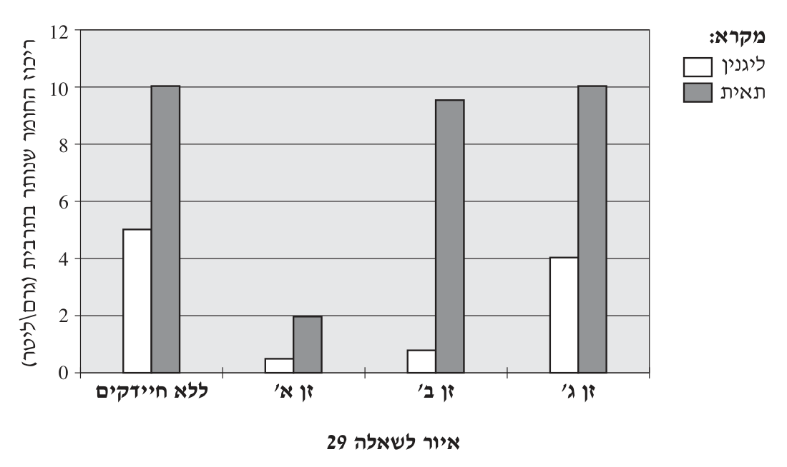
הסבר מדוע עקבו המהנדסים גם אחר יכולתם של החיידקים לפרק תאית.
באיזה מזני החיידקים היית בוחר לפיתוח עתידי של תהליך להלבנת נייר על-ידי מיקרואורגניזמים? נמק את תשובתך.
בשלב הבא השוו החוקרים את יעילות התהליך הביולוגי ליעילות התהליך המסורתי של ייצור הנייר הלבן. לצערם, כמות הנייר שהתקבלה בתהליך הביולוגי הייתה קטנה יותר מכמות הנייר שהתקבלה בתהליך המסורתי.
הצע תהליך ביולוגי אחר שבאמצעותו יוכלו החוקרים להגדיל את תפוקת ייצור הנייר בלי לפגוע בסביבה.
במסגרת תהליך הבקרה במכון לטיהור שפכים נוטלים דגימות של מים מביוב ביתי לפני תהליך הטיהור ואחריו, ובודקים את צריכת החמצן הביולוגית (צח"ב). באיור לשאלה מוצגים ארבעה גרפים (I–IV), המתארים את הצח"ב בדגימות ביוב לפני תהליך הטיהור ואחריו.
הסבר מהו מדד הצח"ב.
איזו מבין ארבע האפשרויות (I–IV) המוצגות באיור מתארת נכונה את ערכי הצח"ב האמורים להתקבל עבור דגימות של ביוב ביתי במפעל טיהור תקין? הסבר את בחירתך.
העובדים במפעל חשדו כי ישנה תקלה מכנית בתהליך הטיהור של השפכים, והחליטו לבדוק כל אחד משלושת השלבים העיקריים בתהליך.
תאר בקצרה את השלבים השונים בתהליך, וציין את תפקידו של כל שלב ואת הדרכים לביצועו.
כחלק מתהליך הטיהור במפעל נעשה שימוש בשיטת הבוצה המשופעלת. העובדים החליטו להתמקד בבדיקת התקינות של השלב הזה. להפתעתם, גילו העובדים שהנוזלים בבוצה מכילים ריכוז גבוה מהצפוי של גופרית וחנקן ומדיפים ריחות צחנה.
הצע הסבר ביולוגי לרמות הגבוהות של גופרית וחנקן שהתקבלו בבוצה.
הצע הסבר מכני לתקלה שחלה במתקן השפכים.
בחברת "ננו-סיב" מנסים ליצור צומת חשמלי בממדים ננומטריים באמצעות מולקולות DNA. לרשות החוקרים משטח שנוצר בשיטת הליתוגרפיה ובו ארבע נקודות מגע מצופות זהב, כמתואר באיור לשאלה.
האם מולקולת DNA (ללא שינויים כימיים) מוליכה זרם חשמלי? אם כן — הסבר מדוע, אם לא — הסבר כיצד ניתן להופכה למוליכת זרם חשמלי.
החוקרים מעוניינים ליצור בעזרת DNA צומת שיחבר בין ארבע נקודות המגע. יצירת צומת זה תאפשר הולכת זרם חשמלי בין נקודות המגע הללו. מה נדרש ממולקולות ה-DNA שבהן יבחרו החוקרים?
החוקרים מנסים לחבר את הצומת שנוצר בתמיסה לנקודות המגע מצופות הזהב בשתי שיטות:
שיטה I: קישור הקצוות של צומת ה-DNA לזהב על-ידי המתווך הכימי אלקיל-תיול.
שיטה II: קישור הקצוות של צומת ה-DNA לזהב על-ידי חלבון קושר DNA, המוצמד לנקודות המגע מצופות הזהב באופן קבוע.
בכל אחת מהשיטות, לאחר חיבור הצומת לנקודות המגע מצופות הזהב, ציפו החוקרים את הצומת בשכבה דקה של יוני כסף. החוקרים מצאו כי מספר הצמתים המושלמים שהתקבלו בכל אחת משתי השיטות היה זהה, אך המוליכות החשמלית שהתקבלה הייתה שונה, כמתואר בטבלה:
| שיטת הקיבוע | המוליכות החשמלית |
|---|---|
| I. קישור ה-DNA באמצעות אלקיל-תיול | טובה |
| II. קישור ה-DNA באמצעות חלבון | גרועה |
הצע הסבר אפשרי להבדל במוליכות החשמלית בין הצמתים שנוצרו בכל אחת מהשיטות.
ליצירת הצמתים באמצעות אלקיל-תיול ניתן להצמיד את התיול לקצוות 5' ו-3' בכל אחד מהגדילים או לחלופין להצמיד אותו רק לאחד מהקצוות בכל גדיל (קצה 5' או קצה 3' בכל אחד מהגדילים). בשני המקרים מקבלים הולכה חשמלית זהה. הסבר מדוע.
אחד הסימנים המוקדמים של סרטן הערמונית בגברים הוא עלייה בריכוז האנזים PSA בדם החולים. PSA הינו פרוטאז (אנזים החותך חלבונים באתר ספציפי). בגברים בריאים וכן בגברים הנמצאים בשלבים מוקדמים של המחלה ריכוזו של ה-PSA בדם הוא נמוך מאוד. חוקרים מפתחים ננו-ביוסנסור לגילוי מוקדם של סרטן הערמונית. לשם כך הם מעוניינים להצמיד לאלקטרודת זהב בגודל ננומטרי פפטיד קצר המכיל את אתר החיתוך של האנזים. כפי שמתואר באיור א' לשאלה, חיתוך הפפטיד על-ידי PSA מאפשר מעבר אלקטרונים מהאלקטרודה דרך הפפטיד שנותר עד לקולט האלקטרונים המתווך.
כדי להצמיד את הפפטיד לאלקטרודת הזהב הננומטרית, קשרו החוקרים חומצה אמינית לקצה הפפטיד המכיל את אתר החיתוך.
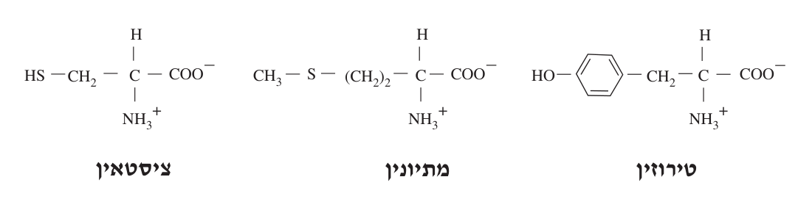
קבע איזו חומצה מבין החומצות שבאיור (טירוזין, מתיונין, ציסטאין) תתאים לקישור בין הפפטיד לאלקטרודה. נמק את תשובתך.
בשלב שלאחר מכן, בדקו החוקרים את רגישות הננו-ביוסנסור שפיתחו על-ידי הוספת ריכוזים שונים של PSA (0.1–10 µM) ומדידה של הולכת האלקטרונים לאורך זמן. נוסף על כך, בדקו החוקרים את הולכת האלקטרונים לאורך זמן בדגימות דם של גבר בריא, של גבר בשלב מוקדם של המחלה ושל גבר בשלב מתקדם של המחלה. לביקורת שימשה תמיסה המכילה בופר בלבד (ללא אנזים). התוצאות מוצגות באיור ב' לשאלה.
שים לב שהתקבלה עקומה זהה בעבור שלוש דגימות: דגימת דם של גבר בריא, תמיסת 0.1 µM PSA ותמיסת הביקורת.
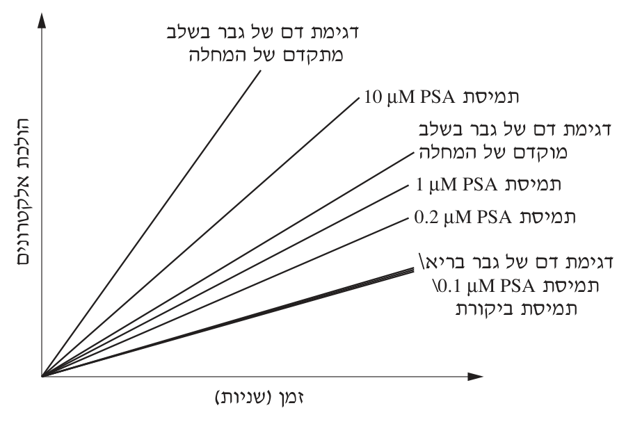
מבין הריכוזים שנבדקו, קבע מהו הריכוז הנמוך ביותר של PSA שניתן לזיהוי באמצעות הננו-ביוסנסור. הסבר את תשובתך.
האם הננו-ביוסנסור שפותח, מתאים לגילוי מוקדם של סרטן הערמונית? הסבר את תשובתך.
הצע דרך שבעזרתה יוכלו החוקרים לשפר את יכולת הגילוי של הננו-ביוסנסור שייצרו.
קבוצת מחקר אחרת בנתה ננו-ביוסנסור שונה לגילוי נוכחות של PSA בדם. ננו-ביוסנסור זה מבוסס על חומר ביולוגי שונה מזה שעליו מבוסס הננו-ביוסנסור שמתואר בשאלה. הצע חומר ביולוגי מתאים.
איזה מבין מקטעי ה-DNA הבאים אף פעם אינו כולל מקדם (פרומוטור)?
אנזימי הגבלה הם:
מקורו של האנזים "המתעתק במהופך" (reverse transcriptase) הוא —
מקטע DNA, המכיל גן שמַקנֶה עמידות לאנטיביוטיקה טטראציקלין, שּובט לתוך פלסמיד באמצע הגן המַקנֶה עמידות לאנטיביוטיקה אמפיצילין. את הפלסמיד הרקומביננטי החדירו לחיידקים הרגישים לטטראציקלין ואמפיצילין. על איזה מצע צריך לזרוע את החיידקים על-מנת לבודד חיידקים המכילים את הפלסמיד הרקומביננטי בלבד?
השימוש בבקטריופאג' כנשא לשיבוט עדיף על פלסמיד כי השימוש בבקטריופאג' מאפשר —
חתכת פלסמיד באנזים הגבלה המזהה את רצף ההכרה הבא (מקום החיתוך מסומן ב-|):
5' G|GATCC 3'
3' CCTAG|G 5'
לפניך רצפי הכרה של ארבעה אנזימי הגבלה שונים. איזה מבין רצפי ההכרה מתאים להחדרת מֶחְדָר המיועד לשיבוט בפלסמיד זה?
באילו שיטות צריך להוסיף חלבון אינרטי למניעת ספיחה לא ספציפית?
חוקרים פיתחו ערכה דיאגנוסטית, שמטרתה לבדוק נוכחות נוגדנים כנגד נגיף אלים. קרוב לוודאי שהמרכיב העיקרי בערכה יהיה —
אפשר לזהות אנטיגן על-גבי תאים מחתך רקמה בעזרת מבחן —
מה מאפיין את הסרום, שהוא מרכיב חשוב במצע הגידול של תרביות תאים מבעלי-חיים?
איזו תרבית מתאימה לגידול תאי צמח המשוחררים מווירוסים?
פרוטופלסטים הם תאים:
איזה מבין ההיגדים הבאים אינו נכון?
כדי להצמיד חלבונים לננו-חלקיקי זהב יש צורך ב —
מהו היתרון של קרני X לעומת קרני UV בשיטת הליתוגרפיה?
ההיגדים הבאים עוסקים בשיטת מסנן הטיפין (Trickle filter). קבע איזה מביניהם אינו נכון.
איזה היגד נכון לגבי תהליך הטיפול בזיהומי נפט בים?
לְמַה משמש האנזים צלולאז בתעשייה?
לפניך קטע שעובד על-פי המאמר "המלחמה במלריה עולה שלב: וירוס המסוגל להדביק את יתושי האנופלס", מאת רועי צזנה. המאמר התפרסם באתר "הידען". קרא את הקטע, וענה על הסעיפים א'–ג' שאחריו.
טפיל המלריה תוקף מדי שנה למעלה מ-500 מיליון בני-אדם, וקוטל בין מיליון לשלושה מיליון נפש. הטפיל יכול להתפשט באין מפריע בשל צורת העברתו מאדם לאדם. את הטפיל מקבלת יתושת האנופלס כאשר היא מוצצת את דמו של אדם נגוע, והיא יכולה להדביק בו את האדם הבא שתעקוץ. כיצד ניתן לנתק את המעגל האכזרי הזה?
במקום לנסות לחסל את כל יתושי האנופלס, נוכל לנסות להנדס גנטית מיקרו-אורגניזמים שידביקו את היתושים ויפגעו ביכולתם לשאת את טפילי המלריה. אם אותם מיקרו-אורגניזמים יעניקו ליתושים יתרון הישרדותי, אז סביר להניח כי תוך דורות מספר הם יצליחו להשתלט על כל אוכלוסיית היתושים באזור ולחסל את המלריה.
לאחרונה נמצא "נשק ביולוגי" חדש, שעשוי לסייע במלחמה במלריה. המדענים גילו את הווירוס הראשון המסוגל להדביק את הזחלים של יתושי האנופלס. הווירוס תוקף את תאי הזחל ומחדיר לתוכם מקטעי דנ"א הגורמים להם לייצר וירוסים חדשים. למרות יכולתו להתרבות בקרב הזחלים, לא נראה שהוא פוגע בזחלים.
החוקרים מאמינים כי ניתן להנדס את הווירוס כך שיוכל להרוג את היתושים, או שימנע מהם להעביר את המלריה ליצורים אחרים. כדי לבחון את הרעיון, החדירו החוקרים לווירוס גן שאמור להביא לייצור חלבון פלורסנטי ירוק, והדביקו בווירוס את זחלי היתושים. היתושים הבוגרים, שהתפתחו מאותם זחלים, קיבלו את הגן החדש בהצלחה, ויצרו בתאי גופם את החלבון הזרחני. היתושים המודבקים העבירו את הגן הזרחני גם לצאצאיהם, בהצלחה של 20%. הסיבה להעברה המוגבלת טמונה כנראה באי-יכולתו של הווירוס לשלב את הגן בגנום של התא.
"בתיאוריה, נוכל להשתמש בווירוס כדי לייצר רעלן קטלני ביתוש, או להורות ליתוש למות לאחר עשרה ימים, לפני שיוכל להעביר את טפיל המלריה לבני-אדם. אך רעיונות אלה עדיין רחוקים מאִתנו מרחק שנים רבות", אומרים החוקרים.
יידרש עוד זמן רב עד שנוכל לעבור לשימוש ב"נשק ביולוגי" כנגד טפיל המלריה, אך אין ספק כי ימיו קרבים לקיצם.
© כל הזכויות שמורות למחבר ולאתר "הידען".
ציין מהו "הנשק הביולוגי" נגד מחלת המלריה שמוצג במאמר. תאר בקצרה את מנגנון הפעולה שלו.
הסבר מה הייתה המטרה של החדרת הגן לחלבון הפלורסנטי הירוק.
בהמשך המחקר רצו החוקרים לאתר אזורים בגנום הווירוס המתפקדים כמקדמים (פרומוטורים). לרשותם היה פלסמיד המכיל גן המקודד לחלבון הפלורסנטי הירוק. תאר בקצרה את התהליך שיצטרכו החוקרים לבצע להשגת מטרתם.
הצע דרך נוספת, שאינה מוזכרת במאמר, לאיתור נוכחות הווירוס בזחלי האנופלס.
ידוע כי הגנים X ו-Y מכילים אזור זהה של 500 בסיסים. כמו כן, ידוע כי הגן X קצר מהגן Y בכ-100 בסיסים. סטודנט רצה לבדוק את הביטוי של שני הגנים בתאי כבד ובתאי לבלב. לשם כך הוא ביצע תספיג צפוני של תאי כבד ותאי לבלב מאדם בריא ומאדם חולה במחלת כבד.
תוצאות התספיג הצפוני מתוארות באיור שלהלן:
הסבר בקצרה את השלבים של הכנת תספיג צפוני.
הסטודנט רצה לבודד תאים המבטאים את הגן X ברמה גבוהה. באילו תאים תמליץ לסטודנט להשתמש? הסבר את תשובתך.
על-מנת לחקור את הסיבה למחלת הכבד, ביצע הסטודנט תספיג דרומי עם גלאי זהה לזה ששימש בתספיג הצפוני. הוא ביצע את התספיג על תאי כבד מהאדם הבריא ומהאדם החולה. הפעם קיבל תוצאות זהות עבור אדם בריא ועבור אדם חולה.
הסבר מדוע קיימים הבדלים בין תוצאות התספיג הצפוני לבין תוצאות התספיג הדרומי.
שער את הסיבה למחלת הכבד על-פי התוצאות שקיבל הסטודנט. בתשובתך התייחס לתוצאות שהתקבלו בתספיגים השונים.
במעבדה החוקרת את המסלול של יצירת חומצת האמינו ארגינין, מעוניינים לשבט גן החיוני ליצירת חומצה אמינית זו (גן X). לשם כך החליטו החוקרים ליצור ספרייה גנומית.
הסבר בקצרה מהי ספרייה גנומית וכיצד יוצרים אותה.
לרשות החוקרים גנום הכולל בין השאר את הגן X, ופלסמיד לשיבוט הספרייה הגנומית. באיור שלפניך מוצג מקטע DNA של האזור הגנומי הכולל את הגן X (איור א') ואת הפלסמיד לשיבוט (איור ב'). כמו כן מסומנים אתרי ההכרה לאנזימי ההגבלה A, B ו-C.
החוקרים בנו שלוש ספריות שונות מאנזימי ההגבלה. הם החדירו את הפלסמידים המשובטים לחיידקים מוטנטיים, שאינם יכולים לגדול על מצע גידול ללא ארגינין והרגישים לאמפיצילין. החיידקים הטרנספורמנטיים נזרעו על מצעי גידול שונים, ומספר המושבות שהתקבלו בכל מצע מוצג בטבלה שלהלן.
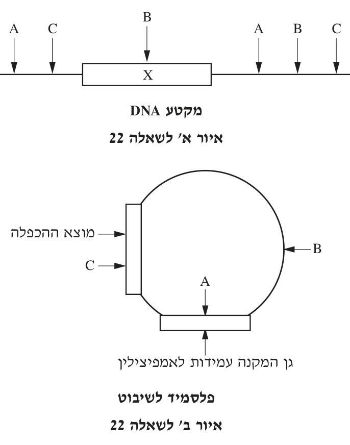
| אנזים ההגבלה ששימש ליצירת הספרייה | מספר המושבות על מצע המכיל ארגינין ואמפיצילין | מספר המושבות על מצע ללא ארגינין המכיל אמפיצילין | מספר המושבות על מצע ללא ארגינין וללא אמפיצילין |
|---|---|---|---|
| A | 0 | 0 | 50 |
| B | 1000 | 0 | 0 |
| C | 0 | 0 | 0 |
האם לדעתך המושבות מהספרייה שנבנתה על-ידי אנזים ההגבלה B מכילות את הגן המבוקש? הסבר את קביעתך על סמך האיורים ועל סמך התוצאות שמוצגות בטבלה.
איזה מבין שלושת אנזימי ההגבלה מתאים לשיבוט הגן X? בתשובתך התייחס למספר המושבות שהתקבלו על גבי כל אחד מהמצעים ולמקומות החיתוך של כל אחד מהאנזימים.
לרשות החוקרים חיידקים אחרים שיכולים לגדול על מצע שאינו מכיל ארגינין. החוקרים חזרו על הניסוי, והחדירו את הספרייה לחיידקים אלו. הצע דרך שבה יוכלו החוקרים לאתר מושבות ששובט בהן הגן הרצוי.
החלבון Rh הִנו אנטיגן שנמצא על-גבי תאי דם של חלק מבני האדם. במהלך הלידה יש מגע בין דם העּוּבָר לדם האם. בהיריונות שבהם לעּוּבָר יש אנטיגן Rh (Rh+) ולאם אין אנטיגן Rh (Rh–) עלול הדבר לגרום לתגובה חיסונית של האם כנגד העּוּבָר.
תאר בקצרה שיטה אימונודיאגנוסטית שתאפשר זיהוי של האנטיגן Rh בתאי הדם.
אישה שסוג דמה Rh– ילדה בלידה ראשונה תינוק שסוג דמו Rh+. בהיריון השני התברר כי גם סוג דמו של עּוּבָר זה הוא Rh+. הרופאים הביעו חשש לחיי העּוּבָר בהיריון השני.
הסבר מדוע קיים חשש לחיי העּוּבָר דווקא בהיריון השני ולא בהיריון הראשון.
על-מנת לאפיין את המבנה של החלבון Rh, חתכו חוקרים את החלבון לשלושה חלקים שונים: חלק אמינו טרמינלי, חלק מרכזי וחלק קרבוקסי טרמינלי. הם ביצעו בוחן אימונואנזימטי (ELISA לא תחרותית) כנגד חלקיו השונים של החלבון עם שני סוגי נוגדנים:
a — נוגדן מונוקלונלי כנגד האנטיגן Rh
b — נוגדנים שבודדו מדָמָּה של האישה לאחר הלידה הראשונה
התוצאות של בוחן ה-ELISA מוצגות באיור לשאלה.
קבע איזה נוגדן מבין הנוגדנים המופיעים באיור (1 ו-2) הוא a ואיזה הוא b. נמק את תשובתך.
חיידקי הגחלת (אנתרקס) חודרים דרך מערכת הנשימה ומפרישים רעלן הגורם לבצקת ולהרס תאי הריאות. החיסון הנפוץ כיום הוא הזרקת חיידקי אנתרקס מומתים.
קבע אם החיסון הזה הוא חיסון פעיל או סביל. ציין מהו היתרון של חיסון כזה.
במעבדה ללוחמה ביולוגית, שבה חוקרים את זן האנתרקס הנפוץ (זן A), בודד זן חיידקי אנתרקס חדש (זן B). נמצא כי הרעלן המופרש על-ידי שני זני החיידקים הוא זהה. לרשות החוקרים נוגדן המזהה רעלן זה. על-מנת לדעת איזה משני זני החיידקים אלים יותר, נבדקו ריכוזי הרעלן המופרש משני זני חיידקי האנתרקס. הבדיקה נערכה בשתי שיטות:
1. בוחן אימונואנזימטי תחרותי (ELISA תחרותית)
2. אימונודיפוזיה רדיאלית בג'ל
בטבלה שלפניך מוצגות התוצאות שהתקבלו בכל אחת מן הבדיקות:
| סוג הבדיקה | רעלן מזן A | רעלן מזן B |
|---|---|---|
| ELISA תחרותית (ערכי בליעה ב-O.D) | 0.23 | 0.76 |
| אימונודיפוזיה רדיאלית בג'ל (הקוטר במ"מ) | 14 | 3.2 |
קבע על-סמך התוצאות איזה זן של חיידקים (זן A או זן B) אלים יותר. הסבר את קביעתך.
למעבדה הגיעה דגימה המכילה זן נוסף של חיידקי אנתרקס אלים מאוד (זן C). החוקרים בדקו את ריכוז הרעלן בזן זה בשיטה של אימונודיפוזיה רדיאלית בג'ל, תוך כדי שימוש בנוגדן ששימש בבדיקה הקודמת. להפתעתם, לא התקבל כלל תלכיד אנטיגן-נוגדן. הצע הסבר להיעדר יצירת התלכיד (הנח שלא הייתה בעיה טכנית בביצוע הבדיקה).
מעבדת מחקר מפתחת צמחי טבק העמידים לקוטלי עשבים, בטכנולוגיה של הנדסה גנטית.
קיימות כמה דרכים להקניית עמידות לקוטלי עשבים. תאר דרך ביוכימית שבה גן יכול להקנות לצמח עמידות לקוטלי עשבים.
המעבדה משתמשת בחיידק אגרובקטריום ובפלסמיד "מיני Ti" שמכיל את הגן A המקנה עמידות לקוטלי עשבים בצמחי טבק (ראה איור לשאלה). נוסף על הקניית העמידות, התוצר החלבוני של הגן A גורם ליצירת צבע כחול בתאים שאליהם חדר. החוקרים חושדים שחלו מוטציות בפלסמיד "מיני Ti" המשובט.
לרשות החוקרים שלושה פלסמידי "מיני Ti" שונים (א–ג) החשודים כנושאי מוטציות. על-מנת לבדוק אם הפלסמידים נושאים מוטציות ולאתר את מיקומן, הודבקו צמחי טבק נפרדים בכל אחד משלושת הפלסמידים. החוקרים בדקו את צבעם של התאים המותמרים, את כושרם של התאים המותמרים להפריש אֹוּפִינִים ואת כושרם ליצור צמח שלם. התוצאות מסוכמות בטבלה שלפניך (+ יש; – אין).
| פלסמיד | אֹוּפִינִים | צבע כחול בתאים המותמרים | יצירת צמח שלם |
|---|---|---|---|
| א | – | + | + |
| ב | – | – | – |
| ג | + | + | + |
על-פי התוצאות המוצגות בטבלה, קבע לגבי כל פלסמיד אם הוא מכיל מוטציה. אם כן — ציין באיזה אזור על-גבי הפלסמיד היא ממוקמת. נמק את תשובתך.
בניסוי נוסף החדירו החוקרים את הפלסמיד "מיני Ti" המשובט (ללא מוטציות) לצמח טבק. התקבלו תאים מותמרים בצבע כחול. בשלב הבא ניסו החוקרים לייצר צמח שלם מאחד התאים המותמרים. להפתעתם, לא התפתח צמח שלם.
הצע הסבר מדוע לא הצליחו החוקרים לייצר צמח שלם מהתא המותמר (הנח שלא הייתה בעיה טכנית בעריכת הניסוי).
במעבדה העוסקת בייצור קולגן החלו בגידול של תרביות תאים. בשלב הראשון נחתכה רקמה לכמה חתיכות. כל חתיכה עברה את הטיפולים הדרושים, והתאים גודלו בתרביות לאורך זמן.
ציין את השלבים העיקריים שיש לבצע על-מנת להפוך רקמה לתרבית תאים (יש לציין לפחות 3 שלבים).
בשלבים שונים של תהליך הפיכת רקמה לתרבית תאים נלקחו דגימות, והרכב התאים בכל דגימה נבדק. התוצאות מוצגות באיור לשאלה.
עבור כל אחת מהדגימות 1–3, קבע מאיזה שלב של תהליך הגידול (תרבית תאים ראשונית, תרבית תאים שניונית או קו תאים) נלקחה הדגימה. הסבר את קביעתך תוך התייחסות למאפייני השלב.
הסבר באופן כללי מה החוקרים צריכים לעשות ובאיזה שלב של תהליך הגידול, כדי להעשיר את התרבית באחד מבין סוגי התאים.
בשלב מסוים בתהליך גידול התאים, הבחינו החוקרים שאחוז קטן מהתאים גדל ברובד רב-שכבתי, ובהמשך — ניתק ממשטח הגידול וגדל בתרחיף.
ציין מהי התופעה שגרמה לתאים לגדול בתרחיף.
ציין יתרון אחד בגידול תאים בתרחיף.
המגמה העולמית היא לשמור על סביבה ירוקה. אחד התהליכים התורמים לכך הוא תהליך הביורמידציה (Bioremediation).
הסבר מהו תהליך הביורמידציה וציין שתי גישות לביצוע התהליך.
בקרקע שצמודה למפעל לייצור חומרי נפץ, קיים זיהום של טולואן. ידוע כי הטולואן פוגע בקרום התא של חיידקים. החוקרים רצו לבדוק איזו אוכלוסיית חיידקים יכולה לחיות בסביבה עשירה בטולואן. לשם כך הם לקחו דגימת חיידקים מהקרקע המזוהמת וגידלו אותם במצע גידול המכיל טולואן כמקור פחמן יחיד. בבדיקה נמצא כי גדלו רק חיידקים מסוג פסאודומונס (Pseudomonas). ידוע כי החיידקים האלה מכילים פלסמיד הנושא גנים המקודדים לאנזימים המפרקים את הטולואן. לאחר שלושה חודשים בדקו החוקרים שוב דגימת קרקע, ולהפתעתם מצאו כי נוסף על חיידקי הפסאודומונס הכילה הדגימה גם חיידקים מסוג Q.
הצע שני הסברים אפשריים להופעה של חיידקים מסוג Q בקרקע.
על-מנת להבין מהו הגורם להופעת חיידקי Q, בודדו החוקרים את שני סוגי החיידקים (חיידקי Q וחיידקי פסאודומונס) וגידלו אותם בנפרד במצעים נוזליים שונים:
A — מצע עשיר המכיל מקורות פחמן שונים.
B — מצע דל המכיל טולואן כמקור פחמן יחיד.
C — נוזל הגידול של חיידקי פסאודומונס שגודלו במצע B.
תוצאות הבדיקה מוצגות בטבלה שלפניך (+ החיידק גדל; – החיידק לא גדל):
| סוג המצע | פסאודומונס | חיידק Q |
|---|---|---|
| A | + | + |
| B | + | – |
| C | + | + |
על-פי התוצאות שמוצגות בטבלה, קבע מהי הסיבה להתרבות חיידקי Q בקרקע המזוהמת. הסבר את קביעתך.
ציין מהו סוג יחסי הגומלין בין חיידקי הפסאודומונס לבין חיידקי Q. הסבר בקצרה את תשובתך.
באתר טיפול בפסולת מוצקה בדקו את שינויי הטמפרטורה בשלוש ערימות קומפוסט (a, b, c). התוצאות שהתקבלו מוצגות באיור לשאלה.
הסבר את התהליך שהתרחש בערימה a בהתאם לשינויי הטמפרטורה שנמדדו בה.
במהלך התהליך נלקחו דגימות מכל אחת משלוש הערימות, ונבדקה צריכת החמצן הביולוגית (צח"ב) בכל דגימה. התוצאות שהתקבלו מוצגות בטבלה שלפניך (צח"ב במ"ג/ליטר):
| תחילת התהליך | לאחר 7 ימים | לאחר 14 יום | |
|---|---|---|---|
| ערימה a | 5,000 | 1,000 | 50 |
| ערימה b | 10 | 9.8 | 9.8 |
| ערימה c | 9.8 | 10 | 9.9 |
הסבר את תוצאות הצח"ב שהתקבלו לגבי ערימה a.
על-סמך התוצאות המוצגות בטבלה ובאיור לשאלה, הצע הסבר להיעדר שינויי הטמפרטורה בערימות b ו-c.
בשלב הבא הוחלט לשתול צמחים על-גבי הערימות b ו-c. לאחר תקופה חזרו ובדקו את טמפרטורת הקרקע בשתי הערימות, ומצאו שבערימה c חלה עלייה של ממש בטמפרטורת הקרקע בהשוואה לטמפרטורת הקרקע של ערימה b.
הסבר מה יכולה להיות הסיבה לעליית הטמפרטורה בערימה c לעומת ערימה b. בתשובתך התייחס לתרומת הצמחים לתהליך.
חוקרים פיתחו טכניקה לזיהוי מוקדם של סרטן המעי על-ידי שילוב חלקיקי מגנטיט בננו-חלקיקים הבנויים ממקרומולקולות ביולוגיות. הטכניקה מבוססת על יצירת ננו-סְפֵרות שמציגות על-פני השטח שלהן ליגנד הנקשר לקולטן (רצפטור) ספציפי שמתבטא ברמה גבוהה על-פני תאי מעי סרטניים (ראה איור לשאלה). בתהליך יצירת הסְפֵרות נכלאים חלקיקי המגנטיט ומּובָלים לאזור הגידול הסרטני על-ידי קישור ליגנד-רצפטור. כמות המגנטיט על-גבי התאים הסרטניים נמדדת באמצעות אות (סיגנל) מגנטי.
ציין שני יתרונות לשימוש במקרומולקולות ביולוגיות כאבני בניין לייצור ננו-מבנים.
על-סמך האיור לשאלה, ציין מהו התהליך המתרחש בשלב A.
האם התהליך המתרחש בשלב A הוא תהליך "מלמעלה למטה" או "מלמטה למעלה"? נמק את תשובתך.
במטרה להגביר את עוצמת האות (סיגנל) שמתקבל מהננו-חלקיקים, ערכו החוקרים את השינויים הבאים:
I. הגדלת כמות המגנטיט בתמיסה המקורית.
II. שימוש בליגנד בעל אפיניות גבוהה יותר לרצפטור.
III. שימוש בליגנד הנקשר לרצפטור המתבטא ברמה נמוכה יותר על-פני תאי המעי הסרטניים.
בכל אחד מהמקרים בדקו החוקרים את גודל הספרות, את ריכוז המגנטיט הכלוא בספֵרות ואת עוצמת הסיגנל, והשוו לערכים שנמדדו בבדיקה המקורית. התוצאות שהתקבלו מוצגות בטבלה:
| גודל הספרות | ריכוז המגנטיט הכלוא בספֵרות | עוצמת הסיגנל | |
|---|---|---|---|
| a | לא השתנה | לא השתנה | עלתה |
| b | לא השתנה | לא השתנה | ירדה |
| c | לא השתנה | עלה | עלתה |
התאם את השינויים (I–III) לתוצאות בטבלה (a–c) והסבר בקצרה את החלטתך.
חוקרים פיתחו ערכה המיועדת לחולי סוכרת, אשר מכילה ננו-ביוסנסור המודד את רמת הגלוקוז בדם. הערכה מבוססת על האנזים גלוקוז אוקסידאז, המזרז את הפיכת הגלוקוז לחומצה גלוקונית בתהליך הבא:
Glucose + O₂ + H₂O → Gluconic acid + H₂O₂ (גלוקוז אוקסידאז)
במהלך התגובה משתחררים אלקטרונים לתמיסה, והזרם הנוצר בשל כך נמדד באמצעות אלקטרודה.
ציין שני יתרונות של מזעור ביוסנסורים.
החוקרים יצרו שלושה ביוסנסורים לבדיקת גלוקוז, הנבדלים בסוג האלקטרודה שבהם:
I. אלקטרודה ללא ציפוי
II. אלקטרודה שמצופה בננו-סיבים מפחמן הקשורים לאנזים גלוקוז אוקסידאז
III. אלקטרודה שמצופה באנזים גלוקוז אוקסידאז
יעילותן של שלוש האלקטרודות נבדקה בתמיסה המכילה ריכוז נמוך של גלוקוז. העקומות A–C באיור א' לשאלה מתארות את עוצמת הזרם המתקבל משלוש האלקטרודות לאורך זמן.
קבע מהו סוג האלקטרודה (I, II ו-III) שמתאימה לכל אחת מהעקומות (A, B ו-C). הסבר את קביעתך.
לפניך גרף (איור ב') המתאר את פעילות הביוסנסור לאורך זמן.
הצע הסבר לשינוי בפעילות הביוסנסור לאורך זמן. בתשובתך התייחס לתהליך הכימי שמזרז הגלוקוז אוקסידאז.
הצע דרך להאריך את חיי הביוסנסור.
איזה היגד אינו נכון לגבי אנזימי הגבלה?
כדי שפלסמיד יוכל לשמש כנשא יעיל הוא חייב להכיל:
באמצעות איזו שיטה אפשר לבדוק ביטוי של גנים?
לפניך קטע של ג'ל שהורצו בו תוצרי סינתזה מוגבלת של DNA בשיטת סנגר. שיטה זו משמשת לקביעת רצף חומצות הגרעין. הנוקלאוטיד האחרון בכל מקטע מצוין על-ידי אות מתאימה. מהו הרצף המקורי של מקטע ה-DNA?
איזו פעולה אינה כלולה בתהליך ההספג הצפוני?
קשירה קוולנטית בין מקטעי DNA נעשית על-ידי:
הוסיפו דגימת דם לתמיסה המכילה נוגדנים מסוג Anti A, ולא התרחשה המאגלוטינציה (הצמתה). לאיזו קבוצת דם משתייך הדם שבדגימה?
איזה מההיגדים נכון לגבי בוחן רדיואימוני (RIA) שאינו תחרותי, לקביעת ריכוז של אנטיגן?
אילו נוגדנים אינם יכולים לשמש כתרופות מונחות?
מה מייחד מחקר In vitro לעומת מחקר In vivo?
מהו השלב הראשון בתהליך יצירת משתלי עור?
חומצות אמיניות המצויות במצע גידול של תרבית תאים משמשות בעיקר:
מהי פיתורמדציה?
מהו הרכב האטמוספרה של כדור-הארץ?
מהו סדר השלבים בתהליך הטיהור של מי-ביוב?
מהי התכונה המייחדת את ה-DNA ומאפשרת להשתמש בו בננוטכנולוגיה?
מה מאפיין את תהליך ההרכבה העצמית (self assembly) של תת-יחידות של חלבון?
איזה היגד נכון לגבי תהליך ההרכבה העצמית של שכבת S חיידקית?
לפניך קטע מתוך הכתבה "הנאנדרתלים, הדנ"א ואנחנו" מאת ד"ר מיכל סלמון קאופמן. הכתבה התפרסמה בכתב-העת גלילאו. קרא את הקטע וענה על סעיפים א'–ג'.
אפשר להפיק DNA עתיק מעצמות של חיות או של הומינידים. בעצם דחוסה ה-DNA נשמר טוב יותר מאשר בעצם ספוגית. ואולם, גם DNA עתיק שאיכותו טובה יחסית, שבור למקטעים של עד מאות בודדות של בסיסים. את כלל ה-DNA שמופק מהעצם הופכים ל-DNA חד-גדילי, ומחברים כל אחד משני קצותיו לרצף אחר: האחד משמש לתחילת התהליך של קביעת הרצף והשני מאפשר את קשירת ה-DNA לכדור זעיר (28 µm) העשוי מחומר המופק מאצות (Sepharose). כל כדור קושר אליו רק גדיל אחד של DNA, וה-DNA בכל כדור משוכפל (בו-זמנית) כדי שיהיה אפשר לאפיין את הרצף שלו. אלפי כדורים שכאלה מוכנסים לשקעים זעירים הזרועים על-פני משטח, כך שכדור אחד נכנס לכל שקע. בתהליך קביעת הרצף מוכנסות לשקעים בזו אחר זו תמיסות של ארבעת הנוקלאוטידים בסדר קבוע, זאת כדי ליצור את הרצף המשלים לכל מקטע חד-גדילי הקשור לכדור. כשנוקלאוטיד שמוכנס מוצא את הנוקלאוטיד המשלים לו בהמשך הרצף, הקשר שנוצר ביניהם גורם לשחרור פוטון (אור) שנקלט בגלאי. מאחר שיודעים איזה נוקלאוטיד הוכנס לכל שקע ויודעים אילו שקעים האירו בזמן נתון, אפשר לקבוע את רצף ה-DNA. בתהליך זה מופעלים שני אנזימים הנמצאים על-גבי כדור הספרוז: סולפורילאז (Sulfurylase) ולוציפראז (Luciferase). סולפורילאז משתמש במולקולת הפירופוספט (PPi) המשתחררת בקישור שבין שני נוקלאוטידים משלימים, ליצירת מולקולה של ATP עתירת אנרגיה. בהמשך, האנזים לוציפראז משתמש ב-ATP לתהליך שבסופו משתחרר אור. תהליך זה מתרחש בכל השקעים בו-זמנית ואלפי הרצפים שמתקבלים בכל שקע מאפשרים קביעת רצף של 600 מיליון נוקלאוטידים.
בזמן הפקת DNA מעצם אי-אפשר להפריד בין ה-DNA העתיק שמקורו בעצם ובין DNA שמקורו בחיידקים ובפטריות שחדרו לתוך העצם או ב-DNA מודרני שזיהם את ה-DNA העתיק עקב מגע ישיר של החוקרים בעצם מרגע חשיפתה ועד רגע הפקת ה-DNA. ככל שה-DNA שהופק מהעצם מכיל יותר DNA שמקורו זר, כך פוחתת יעילות התהליך של קביעת הרצף.
© עיבוד של מאמר שהתפרסם בגלילאו, כתב-עת למדע ולמחשבה, גיליון 133, ספטמבר 2009, מבית מוטו תקשורת.
בכתבה מוזכרים שני אנזימים. הסבר את תפקידו של כל אחד מהאנזימים בשיטה המתוארת בכתבה.
תאר בקצרה שיטה נוספת לקביעת רצף ה-DNA.
ציין יתרון אחד שיש לשיטת קביעת הרצף המתוארת בכתבה על-פני השיטה שציינת בתשובתך לסעיף ב1. הסבר איזה מרכיב בשיטה המתוארת בכתבה מקנה לה את היתרון שציינת.
בחפירה ארכיאולוגית נמצא שלד של אדם קדמון. החוקרים היו מעוניינים להשתמש בשיטה המתוארת בכתבה כדי לקבוע את רצף ה-DNA שלו. לשם כך הפיקו החוקרים DNA משתי עצמות שונות באותו שלד: מעצם הגולגולת (דגימה 1) ומעצם הזנב (דגימה 2). לאחר מכן ביצעו החוקרים הספג דרומי בשתי הדגימות. לשם כך הם השתמשו בשני גלאים שונים: גלאי ספציפי ל-DNA של אדם וגלאי ספציפי ל-DNA של פטרייה. באיור שלפניך מתוארות תוצאות הבדיקות.
על-פי התוצאות המתוארות באיור לשאלה ועל-פי הכתבה, באיזו דגימה היית ממליץ לחוקרים להשתמש לצורך ריצוף ה-DNA בשיטה המתוארת בכתבה? נמק את תשובתך.
חוקרים ביקשו לאתר אזורי בקרה בחיידק E. coli המופעלים בעוצמה גבוהה רק בטמפרטורה של 42°C. לרשות החוקרים עמד פלסמיד שהכיל גן המקנה עמידות לאנטיביוטיקה וגן מדווח חסר אזור בקרה. החוקרים ביקשו להשתמש בפלסמיד זה כנשא לספרייה הגנומית של החיידק E. coli.
ציין את השלבים ביצירת ספרייה גנומית.
לאיזה אזור בפלסמיד נדרשו החוקרים להחדיר את מקטעי ה-DNA הגנומי לצורך איתור אזורי הבקרה המבוקשים? נמק את תשובתך.
החוקרים בנו ספרייה גנומית על-ידי שימוש באנזים ההגבלה X. לאחר בניית הספרייה הגנומית בדקו החוקרים את רמת הביטוי של הגן המדווח באמצעות הספג צפוני. החוקרים בחרו חמש מושבות חיידקים שהתקבלו מהספרייה. מושבות אלו גודלו בשתי טמפרטורות שונות, 37°C ו-42°C. החוקרים ביצעו הספג צפוני ב-RNA שהופק מכל אחת מהמושבות שגדלו בכל אחת מהטמפרטורות. תוצאות ההספגים מתוארות באיור א' לשאלה.
איזו מבין המושבות מכילה את אזור הבקרה המבוקש על-ידי החוקרים? נמק בקצרה את תשובתך.
בשלב הבא הפיקו החוקרים את הפלסמידים משלוש מושבות נוספות (6–8), וחתכו כל אחד מן הפלסמידים באמצעות אנזים ההגבלה X. את תוצרי החיתוך של כל אחד מהפלסמידים הריצו החוקרים באלקטרופורזה בג'ל והתוצאות מתוארות באיור ב' לשאלה.
הסבר מה מייצג מקטע B המופיע בשלוש המושבות ומה מייצגים מקטעים A, C ו-D שאינם מופיעים בכל המושבות.
במעבדה החוקרת את הרגלי החיזור של זבוב הפירות, ביקשו החוקרים לשבט את אחד הגנים הקובע את דגם התנהגות החיזור (גן S) של זבוב הפירות. לשם כך ביקשו החוקרים לבנות ספרייה גנומית על-ידי חיתוך ה-DNA הגנומי של הזבוב. לרשות החוקרים אנזימי ההגבלה A ו-B, שאתרי ההכרה שלהם מתוארים באיור א'.
באיזה אנזים הגבלה (A או B) נדרשו החוקרים להשתמש כדי לבנות ספרייה גנומית? נמק את תשובתך.
בשלב הבא ביקשו החוקרים לברור את השבט המכיל את הגן המבוקש (גן S) מתוך הספרייה הגנומית שהכינו. לשם כך בחרו החוקרים להשתמש בשיטת ה-PCR.
ציין מהם המרכיבים שיש להכניס למבחנות ה-PCR, ותאר בקצרה את שלושת השלבים העיקריים בראקציית ה-PCR.
לרשות החוקרים עמדו שני תחלים (פריימרים) — 1 ו-2. תחל 1 הִתאים לרצף שמימין לנקודת השיבוט של המחדר, ותחל 2 הִתאים לרצף שמשמאל לנקודת השיבוט של המחדר. לנוחיותך מיקום התחלים וכיוונם מצוין באיור ב'. האיור הינו קווי ומציג רק חלק מהפלסמיד הקרוב לנקודת השיבוט של המחדר.
החוקרים השתמשו בתחלים אלו כדי לבדוק אם הגן הרצוי (S) שובט ב-10 מושבות טרנספורמנטיות מספריית ה-DNA שהתקבלה. לשם כך הם ביצעו ראקציית PCR לפלסמידים שהופקו מהמושבות תוך שימוש בתחלים 1 ו-2. בבדיקת התוצאות נמצא שמכל פלסמיד התקבל תוצר בגודל שונה.
הסבר מדוע התקבל תוצר בגודל שונה מכל פלסמיד.
לרשות החוקרים עמד תחל נוסף, תחל 3, שהתאים רק לגן הרצוי, גן S (איור ג').
החוקרים ביצעו שוב את ראקציות ה-PCR בכל אחד מעשרת הפלסמידים והפעם השתמשו בתחלים 1 ו-3. בניסוי זה התקבל תוצר רק בפלסמיד אחד מבין העשרה. על סמך תוצאה זו הסיקו החוקרים כי רק בפלסמיד שהתקבל ממנו תוצר, שובט הגן S בהצלחה.
על-סמך עקרונות ה-PCR והתוצאות שהתקבלו, הסבר מדוע הגיעו החוקרים למסקנה זו.
בעקבות תמותה מרובה של ברבורים, הגיעו למעבדות השירות הווטרינרי דגימות-דם של ברבורים החשודים כנושאים את נגיף שפעת העופות (H5N1). החוקרים ביקשו לבדוק את נוכחות הנגיף בדם הברבורים באמצעות שיטת האימונודיפוזיה הרדיאלית בג'ל.
הגדר מהו תחום המנות השקולות שעליו מתבססת שיטת האימונודיפוזיה הרדיאלית בג'ל.
בבדיקת האימונודיפוזיה הרדיאלית נלקחה דגימת-דם מברבור X. הקוטר בריבוע של טבעת המשקע שהתקבל היה 3.5 ממ"ר. כדי לקבוע את ריכוז הנגיף בדגימת-הדם שנלקחה מברבור X ביצעו החוקרים אימונודיפוזיה רדיאלית בג'ל בריכוזים שונים של נגיף שפעת העופות. התוצאות שהתקבלו שימשו אותם לבניית עקום הכיול המתואר באיור לשאלה.
קבע מהו הריכוז של נגיף שפעת העופות בדם של ברבור X. היעזר בנתון שהתקבל מבדיקת הדגימה של ברבור X וכן בעקום הכיול שבאיור.
בשלב הבא ביקשו החוקרים לבדוק את נוכחות הנגיף בדמם של עשרה ברבורים נוספים. לשם כך השתמשו החוקרים בשתי שיטות בדיקה: אימונודיפוזיה רדיאלית בג'ל ואליזה (ELISA) תחרותית לקביעת ריכוז האנטיגן. כאשר נבדקו דגימות-הדם של הברבורים בשיטת האימונודיפוזיה הרדיאלית בג'ל נמצא נגיף בשמונה מבין עשר הדגימות. לעומת זאת, כאשר נבדקו דגימות-הדם בשיטת האליזה התחרותית נמצא נגיף בכל עשר הדגימות.
בשתיים מהדגימות זוהה הנגיף רק בשיטת האליזה התחרותית, אך לא בשיטת האימונודיפוזיה הרדיאלית בג'ל. הסבר מדוע.
הערה: הנח שלא הייתה בעיה טכנית בביצוע הבדיקות.
בשירות הווטרינרי ביקשו לעצור את מגפת שפעת העופות של אוכלוסיית הברבורים והמליצו לחסן את הברבורים כנגד הנגיף.
באיזה סוג חיסון – פעיל או סביל – תמליץ לחסן את הברבורים החולים? נמק את תשובתך.
אנטיגן N מתבטא על-פני השטח של תאי טחול. בתאי טחול סרטניים מתבטא על-פני התאים אנטיגן נוסף, אנטיגן C. כדי לזהות תאי טחול סרטניים הוכן נוגדן ספציפי לאנטיגן C שמסומן על-ידי סמן פלורסנטי.
תאר בקצרה מבנה של נוגדן.
לאיזה אזור בנוגדן יש לקשור את הסמן הפלורסנטי? נמק את תשובתך.
החוקרים קיבלו שתי דגימות של תאי טחול (דגימות א' ו-ב') והתבקשו לבדוק אם יש בהן תאי טחול סרטניים. לשם כך ביצעו החוקרים את הניסוי הזה: הם בנו שתי עמודות זיקה שאליהן קשור בקשר קוולנטי נוגדן ספציפי כנגד אנטיגן N. בשלב הבא הטעינו החוקרים את דגימה א' על עמודה אחת ואת דגימה ב' על העמודה האחרת. לאחר שטיפת העמודות ממרכיבים שלא נקשרו, הטעינו החוקרים על כל אחת מהעמודות תמיסה שהכילה את הנוגדן הפלורסנטי כנגד אנטיגן C. החוקרים אספו את המרכיבים שלא נקשרו לעמודות ונשטפו החוצה (מקטע 1). בשלב הבא ניתקו החוקרים את התאים מהעמודות על-ידי הזרמת תמיסה בעלת ריכוז גבוה של מלח ואספו את הנוזלים שהתקבלו (מקטע 2). עוצמת הפלורסנציה בכל אחד מהמקטעים שנאספו מכל אחת מהעמודות נמדדה ומוצגת באיור לשאלה.
הסבר את התוצאות המופיעות באיור לשאלה וקבע איזו דגימה (א' או ב') מכילה תאים סרטניים.
תאר בקצרה שיטה נוספת שאפשר להשתמש בה בנוגדן הפלורסנטי כנגד אנטיגן C כדי לאתר נוכחות של תאים סרטניים ברקמת טחול.
קבוצת יזמים מעוניינת להקים מפעל ביוטכנולוגי להפקת מוצרים מתרביות של תאי בעלי-חיים.
תאר שלושה סוגים של מוצרים המופקים מתרביות של תאי בעלי-חיים.
ציין שלושה מרכיבים שעל היזמים להוסיף למצע הגידול כדי לאפשר גידול של תאי בעלי-חיים. הסבר את תפקידו של כל מרכיב.
לשם פיתוח המפעל בחנו היזמים את יכולת גידול התאים בשתי מערכות גידול: ביוראקטור מעורבל (ביוראקטור 1) וביוראקטור מעורבל המכיל מיקרונשאים (ביוראקטור 2). נפח הביוראקטור בשני המקרים היה זהה. מספר התאים שנמדד בכל אחד מהביוראקטורים כתלות בזמן מוצג באיור לשאלה.
ציין איזה ביוראקטור מבין הביוראקטורים המופיעים באיור (X ו-Y) הוא ביוראקטור 1 ואיזה מביניהם הוא ביוראקטור 2. נמק את תשובתך תוך כדי התייחסות להבדל בכמות התאים בכל אחד מהביוראקטורים.
החוקרים חזרו על הניסוי המתואר לעיל מספר רב של פעמים. להפתעתם, באחד הניסויים הם מצאו שחל גידול משמעותי של תאים בביוראקטור Y ומספר התאים בסוף הניסוי אף עלה על זה שהתקבל בביוראקטור X. הצע הסבר לתוצאה זו.
אינסולין הינו חומר המיוצר על-ידי תאי הלבלב ומופרש למצע הגידול. חוקרים ביקשו להפיק אינסולין באופן תעשייתי ולשווקו לחולי סוכרת. לשם כך הם ניסו לייצר תרבית של תאי לבלב שיהיו מסוגלים לייצר אינסולין בכמות גדולה מאוד. כדי שהאינסולין יתבטא באופן מוגבר החדירו החוקרים לשתי תרביות זהות של תאי לבלב (A ו-B), רצף DNA המכיל את הגן המקודד לאינסולין, ובצמוד לו — גן המקנה עמידות לרעלן X.
תאר בקצרה שתי שיטות להחדרת DNA לתרבית תאים של בעלי-חיים.
לאחר החדרת ה-DNA, גידלו החוקרים את שתי התרביות במשך 12 ימים במצע גידול המכיל את הרעלן X. כל יום הוחלף מצע הגידול במצע גידול טרי. החוקרים עקבו אחר כמות האינסולין שהופרש למצע הגידול. התוצאות שהתקבלו מתוארות באיור לשאלה.
החוקרים שיערו כי באחת התרביות השתלב מקטע ה-DNA בגנום התאים (ביטוי יציב), ובתרבית האחרת המקטע לא השתלב בגנום התאים (ביטוי זמני).
קבע על-פי האיור באיזו תרבית (A או B) השתלב מקטע ה-DNA בגנום התאים. נמק את תשובתך תוך כדי התייחסות לשינוי בכמות האינסולין שהופרש למצע הגידול.
בשלב הבא רצו החוקרים לבדוק אם אפשר לייצר את האינסולין בתרבית של תאי כליה. לכן הם החדירו לתאי הכליה את אותו DNA שהם החדירו לתאי הלבלב ומדדו את כמות האינסולין במיצוי התאים ובמצע הגידול שלהם. החוקרים מצאו במיצוי תאי הכליה כמות רבה של אינסולין. במצע הגידול של תאי הכליה הם לא מצאו אינסולין כלל.
הסבר מדוע לדעתך לא נמצא אינסולין במצע הגידול של תאי הכליה.
לאיזה מבין התאים (תאי לבלב או תאי כליה) יש יתרון בתהליך התעשייתי של הפקת האינסולין? הסבר את תשובתך.
במעבדה מיקרוביולוגית העוסקת במטבוליזם מתעניינים בייצור ובניצול של מקורות פחמן.
על-סמך הידוע לך על מחזור הפחמן בטבע, ציין תהליך אחד המוביל לירידה בריכוז ה-CO2 באטמוספרה, ושני תהליכים המובילים לעלייה בריכוזו.
במעבדה גודלו שתי אוכלוסיות חיידקים שונות (A ו-B). במהלך הגידול עקבו החוקרים אחר נפח ה-CO2 שהשתחרר מכל תרבית. התוצאות שהתקבלו מוצגות באיור לשאלה.
במקביל, עקבו החוקרים אחר שינויי החומציות בכל אחת מהתרביות והבחינו שמצע הגידול של תרבית B הפך חומצי במידה רבה, בעוד מצע הגידול של תרבית A הפך חומצי במידה מעטה.
על-סמך ההבדלים בנפח ה-CO2 שהשתחרר ועל-סמך ההבדלים בחומציות, קבע מהו סוג המטבוליזם (אווירני או אל-אווירני) של כל אחת מאוכלוסיות החיידקים. נמק את תשובתך.
בשלב הבא הוסיפו החוקרים לתרבית A חיידקים מסוג אחר (סוג C). להפתעתם הם מצאו שריכוז ה-CO2 החופשי בתרבית הגידול ירד באופן משמעותי.
הצע הסבר לירידה בריכוז ה-CO2 בתרבית. בתשובתך ציין את שם התהליך הביוכימי המתרחש והסבר אותו בקצרה.
בניסוי אחר גידלו החוקרים חיידקים מסוג A במצע שכלל את קוטל העשבים ציקלוהקסן, ואולם החיידקים לא התרבו על מצע זה. הוספת חיידקים אחרים (מסוג D) לתרבית, אפשרה לחיידקים מסוג A להתרבות בנוכחות ציקלוהקסן. הצע הסבר לתוצאה זו.
חברה לייצור בדי כותנה משתמשת בפסטיצידים (חומרי הדברה) מסוג דיאזינון לצורך הגנה על הכותנה שהיא מגדלת. דיאזינון הוא חומר אורגנו-זרחני המדביר חרקים מזיקים. חוקרים במפעל בודדו מהקרקע שני סוגי חיידקים (X ו-Y) וגידלו כל חיידק בתרבית נפרדת וכן בתרבית משותפת בנוכחות החומר דיאזינון כמקור פחמן יחיד. באיור א' מוצגים ריכוזי החיידקים שנמדדו בכל אחת מן התרביות לאחר 24 שעות.
הסבר את התוצאות המוצגות באיור.
אחת הבעיות בגידול הכותנה היא תקיפתה על-ידי תולעת הכותנה.
תאר כיצד אפשר להשתמש במיקרואורגניזמים לפתרון הבעיה.
בעקבות חלק מהתהליכים המתרחשים במפעל נוצרים מי-שפכים. לצורך טיהור מי-השפכים משתמשים במפעל בשיטת הבּוצה המשופעלת. בשלבים שונים של תהליך הטיהור נלקחו דגימות של מי-השפכים. בכל דגימה בדקו את צריכת החמצן הביולוגית (BOD) ואת צריכת החמצן הכימית (COD). תוצאות הבדיקות מוצגות באיור ב' לשאלה.
קבע איזו עקומה (A או B) מתארת את צריכת החמצן הביולוגית ואיזו עקומה מתארת את צריכת החמצן הכימית. הסבר את קביעתך.
במפעל אחר נמצא ריכוז גבוה של אמוניה במי-השפכים שהמפעל מייצר. החוקרים במפעל מעוניינים להפחית את ריכוז האמוניה במי-השפכים. תאר את תהליך הטיהור שיש לבצע. בתשובתך התייחס למסלולים הכימיים המתרחשים ולחיידקים המעורבים בתהליך הטיהור.
חוקרים באוניברסיטת תל-אביב מפתחים ננו-ביוסנסור רגיש מאוד לצורך זיהוי של וירוס שפעת החזירים (H1N1). הננו-ביוסנסור מורכב משני חלקים: קומפלקס A וקומפלקס B. קומפלקס A מורכב מהמרכיבים האלה: נוגדן כנגד הווירוס, מולקולת DNA חד-גדילית, ביוטין וסטרפטאבידין. קומפלקס B מורכב ממולקולת צבע המחוברת דרך ביוטין וסטרפטאבידין למולקולת DNA חד-גדילית. החוקרים פיתחו שלושה סוגים של קומפלקס B (I, II ו-III) שבכל אחד מהם יש מולקולת DNA חד-גדילית שונה. רק אחד הסוגים מתאים לקומפלקס A. כאשר מורכב ננו-ביוסנסור תקין ויש קישור לווירוס, מתקבל אות (סיגנל) באורך גל 405 nm.
הננו-ביוסנסור שפותח מוצג באיור א' לשאלה.
תאר במילים, או בסרטוט סכמתי, את סידור המרכיבים בקומפלקס A.
איזה מבין הסוגים של קומפלקס B (I, II או III) יתאים לקומפלקס A ויאפשר להרכיב ננו-ביוסנסור תקין? נמק את תשובתך.
ציין יתרון אחד שיש למבנים המכילים מולקולות DNA ומולקולות חלבון על-פני מבנים המכילים רק את אחד המרכיבים האלה.
כדי לבחון את היכולת של הננו-ביוסנסור לזהות את וירוס שפעת החזירים, קיבעו את הווירוס בריכוז של 1 nM על משטח, והדגירו אתו את הננו-ביוסנסור הפעיל. בתום ההדגרה נשטף המשטח, נמדדה עוצמת האות והיא מוצגת בעמודת הביקורת שבאיור ב' לשאלה. בנוסף לביקורת, ביצעו החוקרים שני ניסויים:
בניסוי 1 — קיבעו את הווירוס בריכוז של 10 nM על משטח, והדגירו אתו את הננו-ביוסנסור הפעיל.
בניסוי 2 — קיבעו את הווירוס בריכוז של 1 nM על משטח, והדגירו אתו את הננו-ביוסנסור הפעיל בתוספת מולקולות נוגדן N חופשיות.
בתום ההדגרות נשטפו המשטחים ונמדדה עוצמת האותות. עוצמת האותות בניסוי הביקורת ובשני הניסויים האחרים מוצגת באיור ב' לשאלה.
ציין — עבור כל אחד מן הניסויים (1 ו-2) — איזו מבין העמודות (א' או ב') מתארת את עוצמת האות שנמדדה בו. נמק את תשובתך.
החוקרים החליטו להשתמש בננו-ביוסנסור המתואר באיור א' לשאלה כדי לזהות את וירוס השפעת העונתית.
איזה מרכיב בננו-ביוסנסור על החוקרים לשנות כדי שיוכל לזהות את וירוס השפעת העונתית? נמק את תשובתך.
קבוצת חוקרים יצרה, בעזרת שיטת הפוטוליתוגרפיה, אלקטרודות זהב שאליהן הוצמדו מולקולות סטרפטאבידין, כמתואר באיור א' לשאלה.
תאר בקצרה את שלבי הפוטוליתוגרפיה, וציין הבדל אחד בין שיטה זו ובין שיטת הננוליתוגרפיה.
תאר שיטה אחת להצמדת מולקולות הסטרפטאבידין לאלקטרודת הזהב.
החוקרים מעוניינים ליצור גשר שיחבר בין שתי אלקטרודות הזהב. לרשות החוקרים תת-יחידות של חלבון X.
מהו התהליך שחלבון X צריך לעבור כדי שיוכל לשמש כגשר בין האלקטרודות, ואיזה מרכיב יש להוסיף לחלבון X כדי שיוכל להתחבר לקצות האלקטרודות המתוארות באיור לשאלה?
החוקרים מעוניינים להשתמש באלקטרודות כדי להוליך בעזרתן זרם חשמלי. הם יצרו שני גשרים: האחד עשוי מחלבון X והאחר עשוי מחלבון X שצופה במולקולה מסוימת. החוקרים מדדו את הולכת הזרם דרך כל אחד מהגשרים. עוצמת הזרם מוצגת באיור ב' לשאלה.
ציין איזו מבין העמודות (A או B) מתארת את עוצמת הזרם שהתקבלה משימוש בגשר העשוי מחלבון X לא מצופה, ואיזו עמודה — משימוש בגשר העשוי מחלבון X מצופה. נמק את תשובתך תוך כדי התייחסות למולקולה ששימשה לציפוי.
אנזימי הגבלה חותכים:
רוב הפלסמידים בטבע:
בהפרדת מולקולות DNA באמצעות ג'ל אלקטרופורזה:
מולקולת DNA חד-גדילית המשמשת כגלאי בהספג צפוני מכילה:
זיהוי חלבון בתספיג מערבי (אימונובלוטינג) נעשה בעזרת:
בחיתוך מולקולת DNA מעגלית X באנזים הגבלה מסוים התקבלו 4 מקטעי DNA לינאריים. כמה מקטעים היו מתקבלים, אילו מולקולה X הייתה לינארית?
איזה חלק באימונוגלובולינים (בנוגדנים) מקנה ספציפיות?
מהי מטרת החסימה של אתרים פנויים על-גבי משטח מוצק במבחן RIA?
איזה מהמשפטים שלפניך הוא הנכון?
איזה מהמשפטים שלפניך מתאר נכונה את מהלך ההתרבות של תאים דורשי תאחיזה למשטח?
מערכת הבקבוק הסובב מיועדת לגידול של תרביות:
מאיזה אזור בצמח לא ניתן לגדל תרביות מריסטמיות?
בטיהור שפכים בשיטת הבוצה המשופעלת, השפכים מאווררים כדי:
בתהליך הפוטוסינתזה:
בתעשיית העורות, המזהם העיקרי הוא:
בשיטת הפוטוליתוגרפיה:
נתונים ארבעה חלבונים: A, B, C ו-D. חלבונים A ו-B יוצרים הומו-דימרים, ואילו חלבונים C ו-D יוצרים הומו-טרימרים. חוקרים יצרו איחויים שונים בין החלבונים. איזה מבין האיחויים א–ד שבאיור לשאלה מתאים ליצירת מבנים סיביים?
איזו מהשיטות שלפניך אינה מתארת גישה להצמדת חלבונים לננו-חלקיקים אי-אורגניים?
לפניך קטע מתוך הכתבה "ריפוי גנטי של עיוורון צבעים הצליח עם קופים". קרא את הקטע וענה על הסעיפים א'–ג'.
עיוורון צבעים נפוץ מאוד בבני-אדם. כאחד מכל 12 גברים ואחת מ-230 נשים לוקים בתסמין זה. חוסר היכולת להבדיל בין אדום לירוק הוא הסוג הנפוץ ביותר, והוא נגרם על-ידי מוטציה באחד מצבעני הראייה — החלבונים האחראים לקליטת אור בתחום אורכי גל מסוים.
במחקר חדש השתמשו מדענים בריפוי גנטי כדי להחדיר גן תקין, המקודד יצירת צבען ראייה הקולט את אורכי הגל הארוכים ("האדומים"), לעיניהם של שני קופי סנאי, שחסרים גן זה באופן טבעי. התאים בעיניהם של הקופים ביטאו את הגן — ומה שמפתיע יותר, הקופים היו מסוגלים לפענח את המידע ולראות צבעים שלא היו מסוגלים לראותם קודם.
ברשתית של קופי הסנאי הללו, כמו בזו של אנשים עיוורי צבעים, ישנם שני סוגים של מדוכים (פוטורצפטורים, תאי חישה לאור, הפועלים בעוצמות אור גבוהות יחסית, ומאפשרים הבחנה בצבעים): כאלו המייצרים צבען ראייה הבולע אורכי גל קצרים (כחול), וכאלו המייצרים צבען ראייה הבולע אורכי גל בינוניים (ירוק).
החוקרים הזריקו אל הרשתית נגיפים מהונדסים, שהחדירו לתאים את הגן לצבען הראייה הבולע אור אדום. הגן היה מתוכנן כך שהתבטא רק בתאים קולטי האור שקלטו אור ירוק באופן טבעי. כך נוצרו שלושה סוגים של תאים: קולטי אור כחול, קולטי אור ירוק, ותאים שבהם שני סוגים של חלבונים, קולטי אור ירוק וקולטי אור אדום.
ארבעה חודשים לאחר ההזרקה מצאו החוקרים כי חלק מהתאים ברשתית אכן מגיבים — כלומר מעבירים אות עצבי — כאשר הם בולעים אורכי גל ארוכים. אבל זה החלק הקל — הגן הוכנס לתא והחלבון פעל. השאלה הגדולה הייתה, האם המוח של הקופים יצליח לפענח נכונה את האותות, וייתן לקופים ראייה טריכרומטית (מבוססת על שלושה צבעים) אמיתית?
הקופים אומנו לגעת בכתמי צבע על מסך מגע. הקופים עיוורי הצבעים זיהו בקלות כתמים כחולים וצהובים, אך התקשו להבדיל בין הכתמים הירוקים והאדומים ובין הרקע האפור. 20 שבועות לאחר ההזרקה הם השתפרו בצורה דרמטית בזיהוי כתמים אלו, דבר המצביע על כך שמוחם פיענח נכונה את האותות ששלחו לו התאים המבטאים את הגן החדש. שנתיים לאחר הניסוי שני הקופים עדיין רואים צבעים, ולא נגרמו להם שום תופעות לוואי.
הניסוי מצביע על גמישותו המדהימה של המוח, שיכול להסתגל לאותות חדשים לחלוטין גם בשלב מאוחר בהתפתחות. וכמובן — המחקר נותן תקווה לעיוורי צבעים בקרב המין האנושי, ולאנשים שראייתם פגומה בדרך אחרת. ייתכן שריפוי גנטי הוא התשובה.
מאת יונת אשחר ונעם לויתן, מדור החדשות, "גלילאו" — כתב עת למדע ולמחשבה מקבוצת מוטו תקשורת, גיליון 136.
הסבר מהו השינוי שביצעו החוקרים בתאי הרשתית של הקופים שהשתתפו בניסוי, ובאיזה כלי גנטי השתמשו לשם כך.
תאר בקצרה את השלבים שהיה על החוקרים לבצע כדי להנדס נגיפים כך שיכילו את הגן לצבען הראייה האדום. התבסס בתשובתך על הידוע לך בנושא בקטריופאג'ים כנשאים.
בניסוי לבדיקת יעילות החדרת הגן באמצעות הנגיפים המהונדסים, הדביקו החוקרים תרבית של תאי רשתית בנגיף המהונדס. ציין שיטה אחת שבאמצעותה אפשר לבדוק אם תאי הרשתית שבתרבית מבטאים את הגן שהוחדר. הסבר בקצרה את עקרון השיטה.
חוקרים בפקולטה לחקלאות מעוניינים לשבט לגנום החציל גן המקנה עמידות לקוטל עשבים.
אחת הדרכים לשבט מקטע DNA לגנום היא בעזרת אגרובקטריום. תאר בקצרה את השלבים שעל החוקרים לבצע עד לקבלת צמח שלם המבטא את הגן לעמידות.
לרשות החוקרים פלסמיד (פלסמיד 1) המכיל מקטע DNA גנומי. החוקרים סברו שהגן המקנה עמידות לקוטל עשבים מצוי במקטע זה. בשלב הראשון ביקשו החוקרים להוציא את המקטע הגנומי מפלסמיד 1 ולשבטו לתוך פלסמיד מעביר שיאפשר החדרה לצמח החציל על-ידי שימוש באגרובקטריום. לרשות החוקרים שלושה אנזימי הגבלה (A, B ו-C). איור א' לשאלה מתאר את שני הפלסמידים, ומציין את אתרי ההכרה לאנזימי ההגבלה השונים.
באיזה מבין אנזימי ההגבלה (A, B או C) תמליץ לחוקרים להשתמש לשיבוט המקטע הגנומי לתוך הפלסמיד המעביר, כך שיוכלו לברור את החיידקים הטרנספורמנטיים? נמק את תשובתך, והתייחס בהסברך לכל שלושת האנזימים.
לאחר שיבוט המקטע הגנומי לתוך הפלסמיד המעביר, השתמשו החוקרים בפלסמיד המשובט (פלסמיד 2) לצורך החדרת הגן לצמחי חציל. כמו-כן קיבלו החוקרים פלסמיד מעביר נוסף (פלסמיד 3). החוקרים סברו שהגן המקנה עמידות לקוטל העשבים מצוי גם בפלסמיד זה, והחדירו אותו לצמחי חציל אחרים בדרך דומה.
לאחר מכן לקחו החוקרים צמח שהוחדר אליו המקטע הגנומי מפלסמיד 2 וכן צמח שהוחדר אליו המקטע הגנומי מפלסמיד 3. אחד הצמחים לא הראה עמידות לקוטל העשבים. לאחר שווידאו כי הגן הוחדר לגנום הצמחים, ביצעו החוקרים הספג צפוני בכל אחד מהצמחים, תוך שימוש בגלאי הספציפי למקטע בגן העמידות לקוטל העשבים. התוצאות שהתקבלו מוצגות באיור ב' לשאלה.
קבע על-סמך תוצאות ההספג איזה משני הצמחים עמיד לקוטל העשבים. הסבר את קביעתך.
בניסוי אחר ביצעו החוקרים הספג צפוני, בדומה למתואר לעיל, אבל הפעם השתמשו בגלאי המתאים לרצף המקדם (פרומוטור — אזור בקרה) של הגן המקנה עמידות לקוטל עשבים. במקרה זה לא נצפו פסים בהספג.
הצע הסבר לתוצאה זו. הנח שלא הייתה בעיה טכנית בביצוע הניסוי.
חברה העוסקת בייצור מסחרי של חלבון הקרישה X מעוניינת לשבט את הגן המקודד לחלבון זה בנשא מתאים, כדי לייצרו בכמות גדולה בתאי חיידקים.
תאר בקצרה את השלבים שעל המדענים לבצע כדי לבטא את הגן לחלבון הקרישה בחיידקים.
לרשות המדענים היה מקטע DNA גדול, הכולל את הגן המקודד לחלבון הקרישה X, ואשר ממנו רצו לחלץ את הגן לשיבוט. המדענים בחברה התלבטו בבחירת אנזים הגבלה שיתאים לשיבוט הגן במלואו (גודל הגן — 1,500 זוגות בסיסים). לכן החליטו לבצע תחילה ניסוי מקדים. הם חתכו את מקטע ה-DNA בשלושה אנזימי הגבלה שונים (בכל פעם באנזים אחר), והריצו את תוצרי החיתוך בג'ל אלקטרופורזה. כמו-כן הריצו את המקטע בלי חיתוך (בלי אנזים). התוצאות שהתקבלו מוצגות באיור א' לשאלה.
הסבר מדוע התקבלו תוצרים בגדלים שונים בכל אחת משלוש ריאקציות החיתוך (אנזימים 1—3).
איזה משלושת אנזימי ההגבלה 1—3 אינו מתאים בוודאות לשמש לשיבוט הגן המקודד לחלבון הקרישה X במלואו? הסבר את תשובתך.
לפניך רצפי ההכרה של כל אחד משלושת אנזימי ההגבלה (1—3). נקודת החיתוך בכל אחד מהרצפים מצוינת על-ידי קו מקווקו:
על-סמך מידע זה, באיזה אנזים הגבלה תמליץ למדענים להשתמש? הסבר את תשובתך.
במקביל לניסוי שיבוט זה, החליטו המדענים לשבט גם מולקולת cDNA של הגן (מולקולה שאינה מכילה את אתרי הבקרה), שמקורה מה-mRNA (שליח) של חלבון הקרישה X. המדענים השתמשו בנשא כמתואר באיור ב' לשאלה.
לאחר השיבוט גידלו המדענים את החיידקים המכילים פלסמיד רקומביננטי, ובדקו את כמות ה-RNA ואת כמות חלבון הקרישה X שמייצרים החיידקים. להפתעתם, למרות הצלחת השיבוט, לא נמדדו RNA או חלבון שמקורו במחדר. אחת המדעניות בחברה העלתה השערה שבפלסמיד שהשתמשו בו חסר מרכיב חשוב.
הסבר מדוע לדעתך לא נמדד ביטוי של המחדר, ומה אפשר לשנות בפלסמיד כדי להתגבר על בעיה זו.
אחת המחלות הנפוצות בחתולים היא נשירת פרווה הנגרמת על-ידי נגיף (וירוס). הבדיקה הנפוצה לגילוי הנגיף היא בדיקת ELISA המבוצעת בדגימת דמעות, דם או רוק של החתול. באיור א' לשאלה מוצג תהליך ה-ELISA.
האם בדיקת ה-ELISA המתוארת באיור היא תחרותית או לא-תחרותית? הסבר את קביעתך.
הצע דרך אחת נוספת (שאינה בדיקת ELISA) לבדיקת הימצאותו של הנגיף בגופו של החתול. תאר את הדרך בקצרה.
הדרך העיקרית להעברת הנגיף בין חתולים היא באמצעות רוק החודר לפצעי נשיכה בקרבות חתולים. שלושה חתולים הובאו למרפאה הווטרינרית לבדיקת הימצאות הנגיף בגופם. דגימות רוק שלהם נבדקו בשיטת ELISA (כפי שתואר באיור א' לשאלה). תוצאות הבדיקה מוצגות באיור ב'.
אילו מהחתולים חולים? נמק את תשובתך.
נמצא כי קיים נגיף דומה המדביק בני אדם. בחברה לייצור מוצרי אימונודיאגנוסטיקה חיפשו דרך ליצור נוגדנים מואנשים (נוגדני כלאיים) של הנוגדן מדגימת רוק של חתול חולה. כדי לבדוק את יעילות נוגדנים אלו בזיהוי האנטיגן, ביצעו החוקרים בדיקת ELISA, בדומה לזאת שתוארה בשאלה, תוך שימוש בדגימות הרוק משלושת החתולים (1–3). במקרה זה, בכל אחת משלוש הדגימות עוצמת האות שהתקבלה בבדיקה הייתה אפסית.
הצע הסבר לעוצמת האות האפסית שהתקבלה בבדיקה זו, וציין איזה רכיב יש לשנות בבדיקת ה-ELISA כדי להתאים אותה לנוגדנים המואנשים.
בשיטת טיפול חדשנית בחולי סרטן הלימפומה מסוג מסוים משתמשים בנוגדן מונוקלונלי (חד-שבטי) X שמחובר אליו איזוטופ רדיואקטיבי, המכוון כנגד החלבון C20, המתבטא ברמה גבוהה בתאי הלימפומה.
מהם נוגדנים מונוקלונליים (חד-שבטיים)?
ציין שני יתרונות של שימוש בנוגדנים מונוקלונליים לעומת נוגדנים פוליקלונליים (רב-שבטיים) באימונותרפיה.
חוקרים רצו לבדוק אם הנוגדן המונוקלונלי X יעיל גם כנגד שני חלבונים נוספים (C18 ו-C19) המצויים על-פני תאי הלימפומה. לשם כך ביצעו תספיג אימונולוגי על שלושת החלבונים (C18, C19 ו-C20), תוך שימוש בנוגדן המונוקלונלי. תוצאות התספיג מוצגות באיור א'.
מה ניתן להסיק מתוצאות התספיג שהתקבלו? התייחס לנוכחותם או להיעדרם של הפסים ולמיקומם בג'ל.
לרשות החוקרים נוגדן נוסף — נוגדן Y. החוקרים ביצעו תספיג אימונולוגי גם עם נוגדן זה, וקיבלו פסים בכל שלושת החלבונים (C18, C19 ו-C20). הם שיערו שטיפול רדיואימונותרפי עם נוגדן Y יהיה יעיל יותר מאשר עם נוגדן X.
הסבר את השערת החוקרים.
אחד החוקרים הציע לשפר את התרופה על-ידי חיבור של טוקסין (רעלן) לנוגדן X במקום האיזוטופ הרדיואקטיבי. החוקר הדגיר שלוש תרביות לימפומה: תרבית עם נוגדן המחובר לאיזוטופ רדיואקטיבי, תרבית עם נוגדן המחובר לטוקסין ותרבית עם נוגדן חופשי (ללא מולקולה נוספת).
החוקר מדד את אחוז תמותת התאים בשלוש התרביות השונות. התוצאות שהתקבלו מוצגות באיור ב' לשאלה.
על-פי התוצאות המוצגות באיור ב', קבע איזה נוגדן הודגר עם כל אחת מהתרביות (1–3). התייחס לאופן הפעולה של הנוגדנים המחוברים לאיזוטופ רדיואקטיבי ושל הנוגדנים המחוברים לטוקסין.
בחברת ביוטכנולוגיה לייצור מוצרים שמקורם מבעלי חיים התלבטו בין שימוש בתרביות חיידקים לבין שימוש בתרביות תאים מבעלי חיים.
ציין יתרון אחד וחיסרון אחד לשימוש בתרביות חיידקים לעומת שימוש בתרביות תאים של בעלי חיים, לייצור מוצרים שמקורם מבעלי חיים.
לאחר בחינת היתרונות והחסרונות, החליטו בחברה להשתמש בתרביות תאים מבעלי חיים. לשם כך הכינו היזמים תרבית תאים ראשונית. הם גידלו אותה במשך שבועות אחדים בביוראקטור, והעבירו אותה מפעם לפעם למצעי גידול טריים. היזמים בדקו את תפוקת התאים במהלך התפתחות התרבית בשלושה שלבי גידול. התוצאות שהתקבלו מוצגות באיור א' לשאלה.
על-סמך התוצאות המוצגות באיור, קבע את סוג התרבית (תרבית שניונית, קו תאים או קו תאים רציף) המיוצגת בכל דגימה (A, B ו-C). הסבר את קביעתך תוך התייחסות לשלבי ההתפתחות של תרביות תאים מבעלי חיים.
במקביל לניסוי שתואר, גידלו החוקרים את דגימה A ואת דגימה B בביוראקטור המכיל מיקרונשאים (למעט תוספת המיקרונשאים, כל שאר תנאי הניסוי היו זהים). החוקרים השוו את תפוקת התאים שהתקבלה בביוראקטור זה לתוצאות שהתקבלו בביוראקטור בלי המיקרונשאים. התוצאות מוצגות באיור ב'.
הסבר מדוע ההבדל בתפוקת התאים בביוראקטור בתוספת מיקרונשאים ובלעדיה ניכר דווקא בדגימה A, ולא בדגימה B.
בשלב הבא לקחו החוקרים תרבית ראשונית שמקורה מרקמת כליה, ופיצלו אותה לשתי תרביות שניוניות שגודלו בתנאים שונים. בבדיקה נמצא שלשתי התרביות השניוניות היה הרכב חלבונים שונה.
הצע הסבר אפשרי לכך שתרביות שמקורן מאותה רקמה מייצרות חלבונים שונים.
בחברת תרופות מעוניינים לייצר את ההורמון דיוסגנין בייצור תעשייתי מצמח בטטת הבר. צמח זה רגיש מאוד לקוטל עשבים, ולכן הוא קשה מאוד לגידול חקלאי. בשלב הראשון ניסו החוקרים בחברה ליצור בצמח הבטטה עמידות לקוטל העשבים, באמצעות השבחה.
השבחת צמחים מתאפשרת בשלוש דרכים שונות: וריאציה סומאקלונלית, בידוד מוטנטים ואיחוי פרוטופלסטים. תאר בקצרה שתיים מהן.
לאחר ההשבחה קיבלו החוקרים ארבעה צמחים מושבחים של בטטת הבר (צמחים A—D). כדי לדעת באיזה מהצמחים כדאי להם להשתמש, בדקו החוקרים את כמות הדיוסגנין בכל אחד מהצמחים ואת מידת עמידותו של כל אחד מהם לקוטל העשבים. כמו-כן בדקו החוקרים את צמח בטטת הבר המקורי. תוצאות הבדיקות מתוארות בטבלה.
| הצמח | כמות הדיוסגנין (מ"ג) | עמידות לקוטל העשבים |
|---|---|---|
| בטטת הבר | 20 | – |
| צמח A | 20 | + |
| צמח B | 10 | + |
| צמח C | 5 | + |
| צמח D | 25 | + |
הסבר מדוע יש הבדלים בכמות הדיוסגנין בין הצמחים המושבחים, אך אין הבדל בעמידותם לקוטל העשבים.
ידוע כי יש נגיף התוקף את צמח בטטת הבר ועלול להפחית את כושר ייצור הדיוסגנין של הצמח. לכן החליטו החוקרים להשתמש בתרביות צמחים.
באיזה חלק בצמח בטטת הבר תציע לחוקרים להשתמש כדי ליצור את תרבית הצמחים בלי נגיף? נמק את תשובתך.
החוקרים ייצרו תרבית קאלוס מבטטת הבר ובדקו במשך זמן הגידול של התרבית את כמות הדיוסגנין לתא ואת ריכוז התאים. התוצאות מוצגות באיור לשאלה.
בעקומה המתארת את Ln מספר התאים למיליליטר מבחינים בשלושה שלבים. תאר כיצד משתנה קצב הגידול של התאים בכל אחד מהשלבים.
תאר את הקשר בין קצב הגידול של התאים לבין ייצור הדיוסגנין בתאים.
בשנים האחרונות גוברת בישראל המודעות למשבר המים. צריכת המים עולה בהתמדה, ואילו מקורות המים מידלדלים.
תאר את מחזור המים בטבע.
המים חיוניים לאורגניזם. ציין שני תפקידים של המים המדגימים זאת.
במפעל לטיהור מים בחנו טיהור מי-ביוב באמצעות מסנן טיפין. העובדים במפעל מדדו את קצב זרימת המים דרך המסנן לאורך זמן בשני מקרים: (1) הוזרמו מי-ביוב בעלי ריכוז גבוה מאוד של חומר אורגני; (2) הוזרמו מי-ביוב בעלי ריכוז נמוך יותר של חומר אורגני. התוצאות שהתקבלו מוצגות באיור א' לשאלה.
קבע איזו מהעקומות (A או B) מתאימה לתיאור קצב הזרימה של מי-ביוב בעלי ריכוז חומר אורגני גבוה, ואיזו — לתיאור קצב הזרימה במקרה של ריכוז נמוך יותר. הסבר את קביעתך.
במפעל זה משתמשים בשתי שיטות כדי לעקוב אחר יעילות הטיהור: בדיקה של צריכת החמצן הביולוגית (צח"ב — BOD) ובדיקה של צריכת החמצן הכימית (צח"כ — COD). החוקרים לקחו דגימות של מי-ביוב מצריכה ביתית, לפני תהליך הטיהור ובסופו, וביצעו בהן את שתי הבדיקות. התוצאות שהתקבלו מוצגות באיור ב' לשאלה.
קבע איזו משתי שיטות הבדיקה (צח"ב או צח"כ) מתאימה למדידה X, ואיזו מהן מתאימה למדידה Y. הסבר את קביעתך.
קבע איזו משתי הדגימות (1 או 2) נלקחה לפני תהליך הטיהור, ואיזו — לאחר מכן. הסבר את קביעתך.
בתום תהליך הטיהור במסנן הטיפין, מוזרמים מי הקולחין למקווה מים. העובדים במפעל הבחינו שבמקווה מים זה התפתחו אצות בכמות גדולה.
הצע הסבר לתופעה, ותאר כיצד אפשר לפתור בעיה זו.
חברה המתמחה בפתרונות לחיסכון באנרגיה מעוניינת להשתמש באתנול מתפוחי אדמה כמקור אנרגיה.
הסבר מהו מקור האנרגיה העיקרי כיום, וציין שני חסרונות למקור אנרגיה זה.
החוקרים בחברה בדקו אילו סוכרים קיימים בתפוח האדמה, וגילו כי מלבד המרכיב העיקרי — הרב-סוכר עמילן — יש בתפוח האדמה שני סוכרים נוספים: החד-סוכר גלוקוז והדו-סוכר סוכרוז. לרשות החוקרים זן שמרים שמסוגל לנצל גלוקוז וסוכרוז.
החוקרים הכינו שני מצעי גידול: האחד מבוסס על מיצוי תפוח אדמה (מצע I), והאחר מבוסס על מיצוי תפוחי אדמה שטופל באנזים המפרק סוכרוז (מצע II). החוקרים גידלו את השמרים בשני המצעים, ועקבו אחר גידול התאים במשך 10 שעות בתנאים אל-אווירניים (אנאירוביים), כמתואר באיור לשאלה.
איזה מהגרפים (A או B) מתאים למצע I, ואיזה מהם מתאים למצע II? נמק את תשובתך.
בניסוי אחר גידלו החוקרים את זן השמרים במצע המבוסס על מיצוי תפוחי אדמה, ומצאו שריכוז האתנול שנוצר היה נמוך. החוקרים רצו להגדיל את ריכוז האתנול, ועל כן ביצעו שוב את התהליך, אך הפעם הוסיפו אנזים אחר (אנזים X) למיצוי תפוחי האדמה. התוצאה הייתה עלייה בריכוז האתנול.
הסבר כיצד גורם האנזים X להעלאת ריכוז האתנול בתהליך.
אחת הבעיות במפעל היא הפסולת האורגנית המוצקה הנותרת בתום התהליך. לפתרון בעיה זו משתמשים במפעל בשיטת הקומפוסטיזציה על-ידי ערימה סטטית. מדידה של טמפרטורת הקומפוסט הצביעה על עליית הטמפרטורה במהלך הקומפוסטיזציה.
הסבר מדוע עלתה הטמפרטורה במהלך הקומפוסטיזציה.
חוקרים מעוניינים לייצר מערך מוליך ננומטרי. לרשותם ארבע מולקולות DNA בעלות הרצפים שלהלן:
(1) 5'AAAAGGGG3'
(2) 5'ATATGCGC3'
(3) 5'CCCCATAT3'
(4) 5'GCGCTTTT3'
החוקרים הדגירו את כל ארבעת סוגי מולקולות ה-DNA יחד כדי לאפשר תהליך של הרכבה עצמית, ולאחר מכן בחנו בעזרת מיקרוסקופ אלקטרוני את המבנים שהתקבלו. אחד מהמבנים שהתקבלו היה מבנה של צומת DNA. באיור א' לשאלה מתואר מבנה סכמתי של הצומת, ובו ממוקם רצף 1.
העתק את הסרטוט למחברתך, ומקם בו את שלושת הרצפים (2–4) הנותרים.
החוקרים גילו כי לא התקבל מערך ננומטרי רציף מן הצמתים שנוצרו.
הסבר מדוע לא התקבל מערך ננומטרי רציף.
כיצד ניתן ליצור מערך רציף מצמתים בודדים?
לאחר שקיבלו את הצעתך והצליחו לייצר מערך ננומטרי רציף, החוקרים מעוניינים להגדיל את מוליכותו. לרשותם יוני כסף וחלקיקי זהב. ידוע כי ליוני הכסף ולחלקיקי הזהב מוליכות דומה, וכי שניהם מוליכים טובים יותר בהשוואה ל-DNA.
הצע לחוקרים שיטה לשימוש ביוני הכסף להגדלת מוליכות מערך ה-DNA.
לחוקרים שלושה מערכי DNA:
מערך A — ללא יוני כסף או חלקיקי זהב.
מערך B — בתוספת יוני כסף.
מערך C — בתוספת חלקיקי זהב שחוברו למולקולות ה-DNA על-ידי סינתזה כימית של קבוצת אלקיל-תיול.
החוקרים הפעילו מתח חשמלי זהה על כל שלושת המערכים, ומדדו את הזרם המתקבל מכל אחד מהם. באיור ב' מוצגים הזרמים שהתקבלו בכל מדידה.
ציין מאיזה מערך (A–C) התקבלה כל מדידה (1–3). נמק את תשובתך.
חוקרים מאוניברסיטת בן-גוריון מפתחים ננו-ביוסנסור לזיהוי תאי כבד סרטניים. תאי כבד בריאים מציגים על-גבי המעטפת החיצונית שלהם סוכר מסוג A, ואילו תאי כבד סרטניים מציגים על-גבי המעטפת החיצונית שלהם סוכר מסוג A וגם סוכר מסוג B.
באיור א' לשאלה מפורטים רכיבי הביוסנסור:
תאר את תהליך המדידה באמצעות הביוסנסור. התייחס בתשובתך לתפקידם של המרכיבים השונים של הביוסנסור (היעזר באיור, במידת הצורך).
באיזה סוג חלבון תמליץ לחוקרים להשתמש כדי לזהות רק תאי כבד סרטניים. התייחס בתשובתך לתכונה הייחודית המאפיינת את התאים הסרטניים.
החוקרים מעוניינים לקבע למשטח זהב את המולקולה שנתבקשת להציע בסעיף ב'. כיצד על החוקרים לקבע את המולקולה למשטח?
החוקרים הצליחו לייצר שני ננו-ביוסנסורים זהים, המסוגלים לזהות תאי כבד סרטניים (ננו-ביוסנסור 1 וננו-ביוסנסור 2). בשלב הראשון בדקו החוקרים את עוצמת האות המתקבלת משני הננו-ביוסנסורים ביום שלמחרת הייצור. את ננו-ביוסנסור 1 הם חיממו לטמפרטורה גבוהה, ומדדו את עוצמת האות לאחר החימום. את ננו-ביוסנסור 2 הם שימרו, ולאחר חצי שנה מדדו שוב את עוצמת האות.
באיור ב' לשאלה מתוארות תוצאות המדידות שהתקבלו בשתי הבדיקות. בכל אחת מהמדידות השתמשו החוקרים באותו סוג של תאים סרטניים ובאותה כמות של תאים.
תאר על-סמך איור ב' את השינוי באות בכל אחד מהננו-ביוסנסורים, והצע הסבר לתוצאות. התייחס בתשובתך לרכיב בננו-ביוסנסור שמושפע מהטיפולים השונים וכן לאופן השפעתם של הטיפולים על אותו רכיב.
כדי לפתח עכברים טרנסגניים:
היברידיזציית גלאי למקטע DNA אינה תלויה:
פלסמיד שמוצא ההכפלה שלו פגום:
כאשר אנזים הגבלה חותך DNA באופן מדורג, קצוות ה-DNA שמתקבלים הם:
שיבטו את הגן המדווח GFP בצמוד למקטע DNA המכיל אזור בקרה (פרומוטור) פעיל. עקב כך:
סטודנט מעוניין לבצע ריאקציית PCR בעזרת DNA-פולימראז רגיל (במקום Taq-פולימראז). מהן הפעולות שעליו לבצע בכל מחזור?
חוקרים מפתחים ערכה דיאגנוסטית לאיתור נוגדנים לנגיף ההרפס ברוק של חולים. איזה מרכיב מאבחן לא יתאים למטרה זו?
מה מאפיין נוגדנים פוליקלונליים?
איזה מבין ההיגדים שלפניך נכון?
איזה מבין ההיגדים שלפניך אינו נכון?
באיזו שיטה, מבין שיטות הגידול שלפניך, היחס שבין שטח הפנים של מצע הגידול ובין הנפח של מצע הגידול הוא הגדול ביותר?
באיזו מחלה לא ניתן לטפל באמצעות ריפוי גנטי תוך שימוש בגן המקודד לחלבון Y?
איזה טיפול שמבצעים בשדה גידול אינו נחשב לבקרה ביולוגית של מזיק?
איזה מבין ההיגדים שלפניך נכון?
איזה מבין הגורמים שלפניך יכול להיכלל בתחשיב התוצר הלאומי הגולמי (תל"ג)?
איזה מבין ההיגדים שלפניך נכון?
איזה מבין ההיגדים שלפניך נכון?
היתרון במזעור ביוסנסור לננו-ביוסנסור הוא:
קרא את הקטע וענה על הסעיפים א'—ג'.
בטא תלסמיה היא מחלה גנטית רצסיבית, כלומר נדרשים שני עותקים פגומים של הגן — אחד מכל הורה — כדי שהיא תבוא לידי ביטוי. במחלה זו מיוצרים תאי דם אדומים הנושאים המוגלובין פגום. המוגלובין הוא חלבון הנמצא בתוך תאי הדם האדומים והוא מאפשר להם לשאת חמצן מהריאות אל כל תאי הגוף. החולים בבטא תלסמיה סובלים מאנמיה חריפה ומסכנת חיים מאחר שהם אינם מייצרים די תאי דם אדומים תקינים. הדרך היחידה לאפשר לחולים האלה לחיות היא ריבוי עירויי דם, זאת כיוון שתאי הדם האדומים חיים שלושה חודשים בלבד. הטיפול הנוכחי היחיד למחלה הוא השתלת תאי גזע של מח עצם הנלקחים מקרוב משפחה או מתורם מתאים. אפשרות זו אינה תמיד זמינה, וגם כשהיא זמינה היא מסוכנת והצלחתה אינה מובטחת.
חוקרים ניסו לתקן באמצעות הנדסה גנטית את הגן הפגום. הם לקחו תאי גזע ממח העצם (שם נוצרים תאי הדם) של אדם החולה בבטא תלסמיה, והדביקו את תאי הגזע האלה בנגיף שהכיל עותק תקין של הגן להמוגלובין.
הנגיף שבו השתמשו החוקרים הוא מסוג לנטיווירוס (lentivirus), והוא מסוגל להחדיר את הגנום שלו לתוך הגנום של התאים שאותם הוא מדביק. הנגיפים המשמשים בריפוי הגנטי עברו טיפול המונע מהם להתרבות. בעקבות ההדבקה בלנטיווירוס המהונדס התקבלו תאי גזע "מתוקנים".
לפני השתלתם בגופו של החולה, עבר החולה כימותרפיה כדי לנקות את הגוף שלו מתאי הדם האדומים הפגומים. לאחר מכן, השתילו בגופו את תאי הגזע המתוקנים והוא לא היה זקוק לעירויי דם נוספים, אם כי הוא עדיין סבל מאנמיה קלה.
מקרה זה הוא המקרה הראשון שבו השתלה של תאים מתוקנים באדם חולה עברה בהצלחה.
מעובד על-פי כתבה מאת לוטם אליהו, "הידען", 17.11.2010. כל הזכויות שמורות למחברת.
מהו הנשא ומהו המחדר בריפוי הגנטי שתואר בכתבה?
מהם הטיפולים המקובלים בבטא תלסמיה, על-פי הכתבה, ומהו היתרון של הריפוי הגנטי על-פני טיפולים אלה?
נמצא כי תאי הגזע המתוקנים מייצרים גם המוגלובין תקין וגם המוגלובין פגום. הסבר מדוע.
האם הריפוי הגנטי שמתואר בכתבה יבוא לידי ביטוי בצאצאיו של החולה? נמק את תשובתך.
הגן Ras נמצא בכל התאים הבריאים של האדם, אך הוא עשוי להפוך לגן מסרטן בעקבות מוטציה נקודתית. חוקרים מעוניינים ליצור עותקים רבים של הגן Ras התקין בשיטת ה-PCR.
החוקרים מתכננים להשתמש בשני תחלים (פריימרים) כדי להגביר את הגן Ras בשיטת ה-PCR. באיור א' לשאלה זו מוצגים ארבעה תחלים שונים (a—d).
באילו תחלים עליהם להשתמש כדי להגביר את הגן? נמק את תשובתך.
האם על החוקרים לבודד את הגן Ras לצורך הגברתו או שהם יכולים להשתמש ב-DNA המלא של התא כתבנית לצורך הגברת הגן? נמק את תשובתך.
החוקרים קיבלו דגימת תאים ובחנו אם התאים סרטניים. הם ביצעו שתי תגובות PCR: באחת (A) הם השתמשו בזוג תחלים הנצמדים לרצפים בגבולות הגן, ובאחרת (B) הם החליפו את אחד התחלים בתחל בעל רצף משלים לאתר המוטציה הנמצא בתוך הגן Ras. החוקרים הריצו בג'ל את תוצרי ה-PCR. התוצאות מוצגות באיור ב'.
האם התאים שנבדקו היו סרטניים? נמק את תשובתך.
הצע הסבר להבדל שבין הגודל של המקטעים שהתקבלו בתגובה A ובין הגודל של המקטעים שהתקבלו בתגובה B.
כאשר תרבית תאים בריאים של אדם נחשפת לחומר מסרטן, אחדים מהתאים הופכים לסרטניים (התמרה). חוקרים רצו לבודד את הגן האחראי להתמרה הסרטנית (הגן X). לשם כך הם ביצעו ניסוי שכלל שלושה שלבים:
— הפקת DNA מתאים סרטניים של אדם
— חיתוך ה-DNA למקטעים על-ידי אנזימי הגבלה שונים
— החדרת מקטעי ה-DNA לתאים בריאים של עכבר
בתום הניסוי נמצא כי חלק מתאי העכבר עברו התמרה סרטנית.
הסבר מדוע רק חלק מתאי העכבר עברו התמרה סרטנית.
בניסוי אחר חתכו חוקרים DNA שהופק מתאים סרטניים של אדם על-ידי אנזים הגבלה מסוג אחד בלבד. בניסוי זה לא התקבלו תאים סרטניים. הצע הסבר לכך.
החוקרים ביקשו לזהות את הרצף של ה-DNA שמקורו בתאים סרטניים של אדם ושגרם להתמרה הסרטנית בתאי עכבר. לשם כך, הם הכינו ספרייה גנומית באמצעות פלסמידים, מה-DNA שהופק מתאי העכבר הסרטניים.
ידוע כי ה-DNA של האדם מכיל רצף נוקלאוטידים ייחודי הנקרא Alu. רצף זה אינו נמצא ב-DNA העכברי, והוא מופיע בתדירות גבוהה באינטרונים של אדם. החוקרים הצליחו לאתר בספרייה הגנומית שיצרו את הגן X, באמצעות שימוש ברצף Alu.
איך אפשר לזהות את הגן X בתאי עכבר באמצעות רצף ה-Alu?
מדוע לא ניתן לזהות בתאי אדם את הגן X באמצעות שימוש ברצף ה-Alu?
תרופות כימותרפיות משמשות לטיפול בתאים סרטניים. נמצא שחלק מהתאים הסרטניים עמידים לכימותרפיה. בתאים סרטניים שעמידים לכימותרפיה משובץ בקרום התא חלבון הנקרא P גליקופרוטאין (Pgp). חלבון זה פועל כמשאבה ומוציא מהתא חומרים שונים, וביניהם — את התרופות הכימותרפיות.
חוקרים הפיקו נוגדנים ספציפיים לחלבון Pgp מסרום של עכברים, במטרה לשפר את הטיפול הכימותרפי.
הסבר כיצד יכולים נוגדנים ספציפיים לחלבון Pgp לסייע בטיפול בסרטן.
הנוגדנים שהופקו הם פוליקלונליים. הסבר מדוע.
לרשות החוקרים שני סוגי נוגדנים, A ו-B, ששניהם ספציפיים לחלבון Pgp. נוגדן A הופק מסרום של עכבר, ונוגדן B הוא נוגדן חד-שרשרתי שיוצר במעבדה. החוקרים בדקו את ההשפעה של שני סוגי הנוגדנים על אחוז התאים הסרטניים שממשיכים לחיות ולהתחלק בנוכחות החומר הכימותרפי וינבלסטין.
הסבר מהו נוגדן חד-שרשרתי.
תוצאות הניסוי מוצגות באיור לשאלה.
על-פי הגרף, איזה מהנוגדנים יעיל יותר לטיפול בסרטן? נמק את תשובתך.
הסבר מדוע הנוגדן שציינת בתשובתך לסעיף ד1 יעיל יותר מהנוגדן האחר לטיפול בסרטן.
מחלת הטטנוס היא מחלה זיהומית קשה, הנגרמת בעקבות חדירת חיידק הטטנוס לפצע בגוף. החיידק מפריש רעלן הגורם לתופעות המחלה.
לרופא הגיע נער שלא חוסן נגד הטטנוס ונדבק במחלה.
הרופא החליט לתת לנער חיסון סביל. הסבר מדוע העדיף הרופא לתת לנער חיסון סביל על-פני חיסון פעיל.
כמה ימים לאחר מתן החיסון הסביל זימן הרופא את הנער לקבלת חיסון פעיל. הסבר מדוע.
כדי לקבוע את ריכוז הרעלן בדמו של הנער בחרו להשתמש בשיטת האימונודיפוזיה הרדיאלית. כשלב מקדים בשיטה זו יש להכין עקומת כיול. לשם כך השתמשו בכמה צלחות ג'ל שבתוכן ריכוז קבוע של נוגדן כנגד הרעלן. במרכז כל צלחת טפטפו רעלן בריכוזים משתנים. מדדו את קוטר התלכיד שנוצר בג'ל. תוצאות המדידה מוצגות באיור לשאלה.
ככל שריכוז הרעלן גבוה יותר, קוטר התלכיד גדול יותר. הסבר מדוע.
בריכוז רעלן של 5 ננוגרם/מ"ל לא התקבל תלכיד. הסבר מדוע.
במעבדת מחקר גידלו חיידק טטנוס מסוג חדש. החוקרים רצו לבדוק בשיטת ההצמתה אם חיידק זה יכול לייצר את הרעלן. לשם כך בדקו את נוכחות הרעלן במצע הגידול של החיידק: הם לקחו דגימה ממצע הגידול והדגירו אותה עם נוגדן ספציפי לרעלן. בהמשך הוסיפו תאי דם אדומים שעליהם ספחו מולקולות רעלן. במבחנת הבדיקה לא נוצרה הצמתה.
על-פי התוצאה שהתקבלה, האם החיידק מייצר את הרעלן? נמק את תשובתך.
ארגונים הפועלים נגד ניסויים בבעלי-חיים מציעים לבחון את ההשפעה של תרופות חדשות על תרביות תאים במקום על בעלי-חיים.
ציין שני יתרונות של שימוש בתרביות תאים לצורך בדיקת תרופות חדשות, על-פני שימוש בבעלי-חיים.
ציין שתי סיבות שבגללן אי-אפשר להסתפק בתרביות תאים ונדרש לבדוק את השפעת התרופה גם על בעלי-חיים.
מדענים מעוניינים לייצר את האנזים X שמקורו בתאי עכבר. לשם כך הם החדירו את הגן לאנזים X לתאי חיידקים ולתרבית של תאי ארנבת. לאחר שווידאו שהגן הוחדר בהצלחה ומבוטא הן בתאי הארנבת והן בתאי החיידקים, הם לקחו כמות זהה של תאים ושל חיידקים וגידלו אותם בתנאים מיטביים. לאחר שלושה ימים בדקו החוקרים את ריכוז האנזים בכל תרבית ואת פעילותו. התוצאות מוצגות באיור לשאלה.
ידוע כי כמות האנזים שנוצרת בתא אחד של חיידק זהה לכמות האנזים שנוצרת בתא אחד של ארנבת. הצע הסבר לכך שריכוז האנזים שהתקבל בתרבית של תאי החיידקים שונה מריכוז האנזים שהתקבל בתרבית של תאי הארנבת.
הצע הסבר לכך שרמת הפעילות של האנזים שהתקבל בתרבית של תאי החיידקים שונה מרמת הפעילות של האנזים שהתקבל בתרבית של תאי הארנבת.
החוקרים החליטו לייצר את האנזים X על-ידי תרבית של תאי ארנבת. ציין שלושה מרכיבים חיוניים שיש להוסיף למצע הגידול של תאי הארנבת. הסבר את חשיבותו של כל אחד מהמרכיבים לגידול התקין של התאים.
חוקרים רצו להכין תרבית תאים ראשונית מתאי עכבר. לצורך כך הם לקחו רקמה אנדותלית וביצעו שני טיפולים שבסופם קיבלו תרבית תאים ראשונית.
מהם שני הטיפולים שביצעו החוקרים ומהי מטרתו של כל טיפול?
החוקרים זרעו את תרבית התאים על-גבי שלוש צלחות פטרי. לכל צלחת הוסיפו מצע שונה: לצלחת a הוסיפו סרום שהופק מדם סוס, לצלחת b הוסיפו גם סרום שהופק מדם סוס, וגם קולגן, לצלחת c הוסיפו גם סרום שהופק מדם סוס וגם טריפסין. לאחר 48 שעות נשטפו הצלחות ונספרה כמות התאים בכל צלחת. התוצאות מוצגות באיור לשאלה.
הסבר מדוע הטיפול בטריפסין גרם לירידה במספר התאים ומדוע הטיפול בקולגן גרם לעלייה במספר התאים.
החוקרים ביצעו מספר רב של העברות בתרבית התאים שגודלה בנוכחות קולגן, ובשלב מסוים הפסיקו התאים לגדול ולהתחלק.
הסבר מדוע התאים הפסיקו לגדול ולהתחלק. תאר שתי שיטות שיכולות לאפשר לתאים להמשיך ולהתחלק.
לאחר שיצרו תרבית תאים רציפה, ביקשו החוקרים להחדיר גן כלשהו (X) לתרבית התאים. הם התלבטו בין שיטות שונות להחדרת הגן X לתאים.
הסבר את עקרון שיטת האלקטרופורציה. מדוע שיטה זו יעילה יותר להחדרת גנים מאשר שימוש בסידן זרחתי?
שיטת המיקרו-הזרקה היא בעלת אחוזי הצלחה גבוהים יותר בביטוי גנים מאשר שיטות אחרות. הסבר מדוע.
דיאזינון הוא חומר הדברה אורגנו-זרחני שהשימוש בו נפוץ בגידולים חקלאיים.
מנקודת מבט סביבתית, מהו היתרון בשימוש בחומר ההדברה דיאזינון?
בחברה לייצור חומרי הדברה החליטו לפתח חומר הדברה אורגנו-זרחני חדש. החוקרים בחברה פיזרו את חומר ההדברה החדש באופן אחיד על פני ארבע חלקות חקלאיות שונות. ריכוז חומר ההדברה בקרקע נמדד ביום הריסוס וחודשיים לאחר הריסוס. התוצאות מוצגות באיור לשאלה.
הצע הסבר אפשרי לכך שכעבור חודשיים נמדדו בחלקות החקלאיות ריכוזים שונים של תרכובות אורגנו-זרחניות.
בהמשך הוחלט לבדוק את ריכוז חומר ההדברה באזור שבין חלקה a לחלקה b. באזור זה התקבל ריכוז אפסי של חומר הדברה.
הצע הסבר אפשרי לכך שהתקבל ריכוז אפסי של חומר הדברה באזור שבין חלקה a לחלקה b.
הצע שיטה אחרת להתמודדות עם חרקים מזיקים בחקלאות במקום חומרי הדברה והסבר מהו היתרון של השיטה שהצעת.
חוקרים משקיעים מאמצים רבים באיתור אורגניזמים שיכולים ליצור אתנול. מטרתם היא לייצר אנרגיה חלופית (במקום האנרגיה המופקת על-ידי דלק המאובנים) ובכך לצמצם את זיהום הסביבה ואת הנזקים הנגרמים לה.
חוקרים מאוניברסיטת תל-אביב בחנו את היעילות של התהליך הביוטכנולוגי לייצור אתנול על-ידי שמרים. באיור לשאלה מתואר תהליך תסיסה בשמרים.
ציין איזו עקומה (מבין העקומות A–D) מתארת את השינוי בריכוז של כל אחד מהחומרים האלה: גלוקוז, לקטוז, אתנול (כוהל) ועמילן. נמק את תשובתך.
כיצד נקראת התופעה המוצגת באמצעות העקומות A ו-B? תאר את התופעה.
החוקרים החליטו לגדל את השמרים על מצע המכיל עמילן כמקור פחמן יחיד בנוכחות הפטרייה אספרגילוס (Aspergillus).
איזה גרף, מבין הגרפים (a, b או c) המוצגים באיור ב' לשאלה, מתאר נכונה את ריכוז החומרים בתרבית המכילה אספרגילוס? נמק את תשובתך תוך התייחסות לתפקיד הפטרייה.
הצע דרך נוספת לייצור אתנול מעמילן על-ידי שמרים, ללא צורך בפטרייה.
תירס הוא המקור העיקרי כיום לייצור אתנול. ידוע כי בקרבת שדות תירס צומחים עשבים שוטים רבים המפריעים לגידול התירס. כדי למנוע את הנזק שגורמים העשבים לגידולים, נהוג להשתמש בקוטלי עשבים הפוגעים באנזימים חיוניים בתאי הצמחים.
מהי הבעייתיות בשימוש בקוטלי עשבים בשדות התירס, וכיצד אפשר להתגבר על כך באמצעות שימוש בעקרונות ההנדסה הגנטית?
ציין שני חסרונות שיש לשימוש בהנדסה גנטית בצמחים.
חוקרים יצרו אלקטרודת פחמן באמצעות פוטוליתוגרפיה. באיור א' לשאלה מתוארים הרכיבים של האלקטרודה לפי סדר ההרכבה שלהם. לחוקרים התברר שהאלקטרודה שיצרו אינה פעילה.
מדוע האלקטרודה המתוארת באיור א' אינה פעילה? מה החוקרים צריכים לעשות כדי להפוך את האלקטרודה לפעילה? נמק את תשובתך.
ציין מגבלה אחת של שיטת הפוטוליתוגרפיה והסבר כיצד אפשר להתגבר עליה.
לאחר שהחוקרים הפכו את אלקטרודת הפחמן לפעילה, הם קשרו לאלקטרודה זו את החלבון X הקושר DNA, במטרה ליצור ביוסנסור המזהה נוכחות של DNA זר בגוף. איור ב' מתאר ביוסנסור זה.
כיצד יכלו החוקרים לקשור את החלבון X לאלקטרודה?
מהו הגורם הנבדק (האנליט) במערכת זו ואילו סוגי קשרים נוצרים בין החלבון X לאנליט?
מהו תפקידה של אלקטרודת הפחמן בביוסנסור?
חוקרים מעוניינים ליצור ננו-ביוסנסור מכאני שישמש לזיהוי רצפי DNA. החוקרים הכינו ננו-ביוסנסורים שכל אחד מהם הורכב משלוש ננו-קורות שעשויות מסיליקון ומצופות בזהב, כמתואר סכמתית באיור לשאלה.
ציין שיטה אחת לקיבוע מולקולות ה-DNA לננו-קורה.
המאפיינים של הננו-ביוסנסורים שיצרו החוקרים מפורטים להלן.
| ננו-ביוסנסור | קורה | חד-גדיל / דו-גדיל | האורך | הרצף |
|---|---|---|---|---|
| 1 | a | דו-גדיל | 12 | 5' ACCTGACAGCTG 3' |
| 1 | b | דו-גדיל | 12 | 5' ACCTGCCAGCTG 3' |
| 1 | c | דו-גדיל | 12 | 5' ACCTGACTGCTG 3' |
| 2 | a | חד-גדיל | 12 | 5' ACCTGACAGCTG 3' |
| 2 | b | חד-גדיל | 12 | 5' ACCTGACAGCTG 3' |
| 2 | c | חד-גדיל | 12 | 5' ACCTGACAGCTG 3' |
| 3 | a | חד-גדיל | 12 | 5' ACCTGACAGCTG 3' |
| 3 | b | חד-גדיל | 12 | 5' ACCTGCCAGCTG 3' |
| 3 | c | חד-גדיל | 12 | 5' ACCTGACTGCTG 3' |
| 4 | a | חד-גדיל | 12 | 5' ACCTGACAGCTG 3' |
| 4 | b | חד-גדיל | 14 | 5' ACCTGACAGCTGCC 3' |
| 4 | c | חד-גדיל | 16 | 5' ACCTGACAGCTGCCAT 3' |
קבע עבור כל אחד מהננו-ביוסנסורים אם הוא יכול לזהות רצפים שונים של DNA. נמק את קביעותיך.
תאר את התהליך שבסופו מתקבל בננו-ביוסנסור האות המעיד על נוכחות של DNA בדגימה.
החוקרים ביקשו ליצור ננו-ביוסנסור לזיהוי חלבונים, בעזרת ננו-קורות. מה תציע להם לקשור לננו-קורות כדי ליצור ננו-ביוסנסור לחלבון?
כיצד נקשר מקטע DNA (מחדר) אל פלסמיד בתהליך השיבוט?
מדוע יש לחמם את מרכיבי התגובה בתהליך ה-PCR לטמפרטורה של 95°C?
כאשר רוצים ליצור עז טרנסגנית, יש להחדיר את הנשא הרקומביננטי:
מהם ארבעת המרכיבים ההכרחיים לשכפול DNA בשיטת PCR?
חתכו מולקולת DNA באמצעות אנזים הגבלה, והריצו את תוצרי החיתוך בג'ל אגרוז. אפשר ללמוד מתוצאות ההרצה על:
מהו ההיגד הנכון?
מהו תפקידם של תאי המיאלומה המוטנטיים בתהליך ההכנה של נוגדנים חד-שבטיים?
באיזו שיטה מבין השיטות שלפניך מוסיפים סובסטרט בשלב הזיהוי (דטקציה)?
במבחן ELISA תחרותי לקביעת הריכוז של נוגדן X בתמיסה:
באיזה היגד מתוארת תכונה המאפיינת רק קו תאים רציף?
במעבדת מחקר החליטו להשתמש ברטרווירוס בטוח כאמצעי להחדיר גן תקין לתא מטרה לצורך ריפוי גני. מה יש להוסיף לתא המטרה כדי להחדיר אליו את הגן התקין?
חוקרים מעוניינים להקנות תכונה אחת לצמח. באיזו מהשיטות יבחרו?
איזה היגד מתאר יחסי גומלין מסוג אמנסליזם בין החיידקים X ל-Y החיים באותה מיקרו-סביבה?
איזו שיטה אינה מסייעת לשמרים ליצור כוהל מתירס?
מהי הסיבה לעליית הטמפרטורה בערימת הקומפוסט?
הביוסנסורים הביתיים המשמשים חולי סוכרת לקביעת ריכוז הגלוקוז בדמם, מבוססים על פעילותו של האנזים גלוקוז אוקסידאז המזרז חמצון גלוקוז לחומצה גלוקונית תוך יצירת מי חמצן.
איזו מבין הבדיקות שלפניך אינה יכולה לשמש למעקב אחר חמצון הגלוקוז בתהליך זה?
מהו האורך, בקירוב, של המבנה הקטן ביותר שניתן ליצור בשיטת הפוטוליתוגרפיה?
איזה מבין התהליכים שלפניך נחשב תהליך מסוג "מלמעלה למטה"?
קרא את הקטע וענה על הסעיפים א'—ד' שלאחריו.
נגיף הדנגי, הנפוץ בעיקר במדינות טרופיות וסוב-טרופיות, מדביק כ-100 מיליון אנשים מדי שנה. הנגיף גורם לקדחת בעלת מגוון תסמינים: החל בכאבים הדומים לכאבי שפעת ועד לדימומים פנימיים, הלם ומוות. למחלה הנגרמת על-ידי הנגיף אין חיסון או מרפא, והיא מועברת בעיקר על-ידי עקיצות יתושים מסוג אג'יפטי (A. aegypti). האסטרטגיה העיקרית לשמירת הציבור מפני הידבקות בנגיף הדנגי היא הרחקת היתושים על-ידי ניקוז מים עומדים, ריסוס בקוטלי יתושים וחלוקת כילות.
חוקרים מאוניברסיטת קליפורניה חיפשו שיטה חדשה שמבוססת על הנדסה גנטית למיגור נגיף הדנגי. מטרתם הייתה לפגוע רק בנקבות היתושים, שהן אלו שעוקצות ומעבירות את הנגיף. החוקרים זיהו גן שאחראי לשרירי התעופה ביתושים. פגיעה בגן זה לא תפגע ביכולת התעופה של זכרי היתושים כי יש להם גן נוסף שאחראי לתעופה. לעומת זאת, פגיעה בגן זה תפגע ביכולתן של הנקבות לעוף, להזדווג ולהפיץ את המחלה. החוקרים החדירו לגנום היתושים מקטע DNA שכולל גן המקודד לרעלן הפוגע בשרירי התעופה שלהם וכן את אזור הבקרה של הגן. נמצא שהחומר טטראציקלין שנקשר לאזור הבקרה יכול למנוע את פעילות הגן המקודד לרעלן.
הניסוי נערך בשני שלבים עיקריים כפי שמוצג באיור לשאלה 19:
— השלב הראשון — נערך במעבדה ומתואר באיור בשלבים 1–5;
— השלב השני — מתואר באיור בשלב 6. בשלב זה משחררים את הזכרים המהונדסים כדי שיזדווגו עם נקבות מזן הבר.
מעובד על-פי כתבה מאת ביז'אל פ' טריוודי, סיינטיפיק אמריקן ישראל, גיליון פברואר–מרס 2012.
מהן השיטות המסורתיות להתמודדות עם נגיף הדנגי ומדוע חיפשו חוקרים שיטה חדשה למיגור הנגיף?
כיצד הוספת טטראציקלין למים שהיתושים שוכנים בהם, מביאה להגדלת אוכלוסיית היתושים המהונדסים?
הסבר כיצד חשיפה של יתושים מהונדסים לאוכלוסייה של יתושים שאינם מהונדסים תורמת להכחדת היתושים המזיקים.
בשלב 2 שבאיור מצוין שחלק מהזחלים נושאים את הגן. במסגרת לימודיך הוצגו לפניך שיטות לאיתור גנים משובטים. תאר את אחת השיטות.
חוקרים היו מעוניינים לבודד גן X מגנום של אדם. בשלב ראשון הם שיבטו מקטעי DNA מגנום של אדם לתוך חיידקים באמצעות נשא בקטריופאג'.
ציין חמישה שלבים בשיבוט של מקטע DNA לתוך חיידקים באמצעות בקטריופאג'ים.
הצע דרך לבידוד מקטע ה-DNA לאחר שיבוטו.
החוקרים בודדו מקטע DNA לינארי שאורכו 600 bp ושבו מצוי הגן X שברצונם לבודד. החוקרים חתכו את המקטע פעם על-ידי אנזים ההגבלה A, פעם על-ידי אנזים ההגבלה B ופעם על-ידי שני אנזימי ההגבלה — A ו-B — יחד. לאחר מכן הם הריצו את תוצרי החיתוכים בג'ל. באיור א' לשאלה מוצגות תוצאות החיתוכים וההרצה בג'ל ובאיור ב' מוצגת מפת ההגבלה של המקטע לשני האנזימים.
על-פי המידע שבאיורים א' ו-ב' לשאלה, ציין באיזה מיקום על-פני המקטע חתך כל אחד מהאנזימים (A ו-B) את המקטע. הסבר את קביעותיך.
החוקרים היו מעוניינים ליצור חיידק המבטא ביתר את הגן X. לצורך כך הם החדירו את הגן X לתוך פלסמיד ואת הפלסמיד החדירו לתוך חיידק. אף-על-פי שהחוקרים וידאו שהפלסמיד חדר לתא החיידק, הם לא זיהו תעתוק ותרגום של הגן בתא החיידק.
הבא סיבה אחת לכך שתהליכי התעתוק והתרגום של הגן לא התרחשו.
כאשר החדירו לפלסמיד את המקטע השלם (בסיסים 1–600), המכיל את הגן X, והחדירו את הפלסמיד לתא החיידק, התרחשו תעתוק ותרגום של הגן. האם ממצא זה תומך בסיבה שהצעת בתת-סעיף הקודם? נמק את תשובתך.
חוקר רצה לשבט את הגן lacZ לתוך הפלסמיד pBR322. באיור לשאלה מתוארות מפת ההגבלה של הפלסמיד pBR322 המכיל גנים שמקנים לחיידקים עמידות לאמפיצילין (amp) ולטטראציקלין (tet) ומפת ההגבלה של הגן lacZ:
מהו אנזים ההגבלה שהשימוש בו יפגע ביכולת לשבט את הגן lacZ בשלמותו? נמק את תשובתך.
ישנם שני זוגות של אנזימי הגבלה שלא כדאי לחוקר להשתמש בהם כדי להחדיר את הגן lacZ לפלסמיד: הזוג PstI ו-SphI והזוג ScaI ו-SphI. הסבר מדוע.
לאחר שהחוקר שיבט את הגן לתוך הפלסמיד והחדיר את הפלסמיד המשובט לחיידקים, הוא העביר את החיידקים לצלחת המכילה אנטיביוטיקה. הסבר מהי מטרתו של שלב זה.
חוקר קיבל לידיו גן לינארי ונאמר לו כי בגן יש שלושה אתרי חיתוך של שלושה אנזימי הגבלה שונים (אין חפיפה בין אתרי החיתוך).
כמה תוצרי חיתוך יתקבלו עקב הוספת שלושת האנזימים לגן?
החוקר הוסיף למבחנה את שלושת אנזימי ההגבלה ואת הגן הלינארי. החוקר הריץ בג'ל את תוצרי החיתוך, ונצפו בו שלושה פסים (בנדים). הבא שני הסברים לתוצאה זו.
בדיקה לגילוי היריון מבוססת על זיהוי נוכחותו של ההורמון Beta-hCG בדם או בשתן של נבדקת. ניתן להבחין בקיומו של הורמון זה כבר בשבוע השני לאחר ההפריה.
בבדיקת שתן לזיהוי היריון נוטלים מהנבדקת דגימת שתן ומוסיפים אותה לכלי שיש בתוכו נוגדנים להורמון Beta-hCG. לאחר מכן מוסיפים לכלי כדוריות דם אדומות שקשורות אליהן מולקולות של ההורמון Beta-hCG. בבדיקה זו, אי-הופעת אגלוטינציה פירושה תוצאה חיובית. הסבר מדוע.
נגיף ה-CMV הוא נגיף המסכן את התפתחות העובר כאשר האישה נדבקת בו במהלך ההיריון. לכן נהוג לבצע במהלך ההיריון כמה בדיקות דם לזיהוי הימצאות נוגדנים לנגיף זה.
שתי נשים נמצאות במעקב היריון לבדיקת הימצאות נוגדנים לנגיף CMV. ידוע כי אחת מהנשים נדבקה על-ידי הנגיף כשנתיים לפני שהרתה. תוצאות המעקב מוצגות באיור א' לשאלה.
קבע איזו מבין הנשים (X או Y) נדבקה על-ידי הנגיף כשנתיים לפני שהרתה. נמק את קביעתך.
התפתחותו של איזה עובר — של אישה X או של אישה Y — נמצאת בסכנה? נמק את תשובתך.
בדיקה להימצאות הנוגדנים לנגיף ה-CMV בדם האישה נעשתה בשיטת ELISA לא-תחרותית. באיור ב' לשאלה מתוארים ארבעה מרכיבים עיקריים (A–D) של בדיקת ה-ELISA.
ציין מהו כל מרכיב (A–D).
ציין מהו המרכיב שמקורו בדם הנבדקת.
את בדיקת ההימצאות של הנוגדנים לנגיף CMV בדם ניתן לעשות גם בשיטת ELISA תחרותית. טכנאי בדק דגימת דם של נבדקת לזיהוי הימצאות נוגדנים לנגיף ה-CMV בשיטת ה-ELISA התחרותית. הטכנאי הוסיף למבחנה את כל מרכיבי ה-ELISA בסדר הנכון, וראה שעוצמת הצבע נשארה זהה, בהשוואה למבחנת הביקורת.
ציין את סדר הפעולות בשיטת ה-ELISA התחרותית.
הסבר את התוצאה שהתקבלה.
בבנק הדם בודקים כל תרומת דם שמתקבלת: בודקים את סוג הדם (A, B, AB, O), ומוודאים שהדם אינו מכיל נגיפים כגון HIV וצהבת C.
טכנאי בבנק הדם מעוניין לערוך בדיקות לזיהוי סוג דם. לשם כך הוא לקח שתי מבחנות: האחת הכילה את הנוגדן אנטי A והאחרת הכילה את הנוגדן אנטי B. בשלב מסוים נמחקו הסימנים שעל-גבי המבחנות והטכנאי לא ידע מה מכילה כל מבחנה. כדי לבדוק זאת, הוא סימן את המבחנות בסימונים X ו-Y, ולקח שתי מנות דם שסוגן היה ידוע — A ו-AB.
באיזה סוג דם (A או AB) בחר הטכנאי להשתמש כדי לזהות את סוגי הנוגדנים שבמבחנות X ו-Y? נמק את תשובתך.
הטכנאי הוסיף דם מסוג B לדגימה ממבחנה X ולדגימה ממבחנה Y. התוצאות מוצגות באיור א' לשאלה.
איזה נוגדן מכילה כל מבחנה?
באחת מהבדיקות בבנק הדם נמצא זן חדש של הנגיף HIV, המכיל מוטציה בדטרמיננטה אנטיגנית (אפיטופ) אחת, במיקום לא ידוע. החוקרים מעוניינים לבודד נגיפים מזן זה כדי לחקור את המוטציה. לרשותם שני סוגי נוגדנים: נוגדנים מונוקלונליים ונוגדנים פוליקלונליים, שניהם כנגד זן הבר של הנגיף HIV (זן ללא מוטציות).
כדי לקשור נוגדנים לנגיפי HIV מהזן החדש, השתמשו החוקרים בנוגדנים הפוליקלונליים ולא בנוגדנים המונוקלונליים. הסבר מדוע.
תאר את תהליך בידוד הנגיפים מהזן החדש מדגימת הדם של החולה באמצעות נוגדנים.
ידוע כי לנגיף HIV יש שבעה חלבונים שונים. בתערובת הנוגדנים הפוליקלונליים קיימים נוגדנים לשתי דטרמיננטות אנטיגניות עבור כל חלבון של הנגיף (סך-הכול 14 נוגדנים שונים).
כדי לזהות את החלבון שהתרחשה בו מוטציה בנגיפים מהזן החדש, ביצעו החוקרים תספיג אימונולוגי. לאחר ההעברה לנייר הניטרוצלולוז השתמשו החוקרים בנוגדנים הפוליקלונליים הנ"ל ובנוגדנים שניוניים מסומנים לצורך זיהוי חלבוני הנגיף. התוצאות מוצגות באיור ב' לשאלה.
החוקרים הסיקו שהמוטציה התרחשה בחלבון שגודלו 80 kDa. הסבר מה גרם לחוקרים להסיק זאת, ומדוע הופיע פס בג'ל למרות המוטציה.
האם ניתן לדעת לפי איור ב' לשאלה באיזו דטרמיננטה אנטיגנית בחלבון התרחשה המוטציה? נמק את תשובתך.
פציעות עור עקב תאונות או כוויות עלולות להוביל לצורך בהשתלת עור באזור הפצוע. המגבלות שיש לקבלת עור מתורמים ולהשתלתו, הביאו לחיפוש פתרונות חלופיים, כגון ייצור תרבית רקמה של עור.
מהו החיסרון שיש לשימוש בתרומות עור במקרים של תאונה או כווייה?
קבוצת חוקרים בדקה את ההבדלים בהתפתחותה של תרבית רקמת עור בשני סוגי תאים — קראטינוציטים וקורנאוציטים — על שלושה סוגי מצעים:
— מצע המכיל קולגן ואלסטין
— מצע המכיל טריפסין
— מצע המכיל קולגן, אלסטין וטריפסין
מלבד ההבדלים במצעי הגידול, תנאי הגידול בכל התרביות היו זהים. בתום הגידול ספרו החוקרים את התאים בכל מצע ונוכחו לדעת שרק התאים הקראטינוציטים התרבו ויצרו שכבה אפיתליאלית רציפה, ואילו התאים הקורנאוציטים לא התרבו. התוצאות שהתקבלו בתרביות של התאים הקראטינוציטים מוצגות באיור לשאלה.
הסבר מדוע התאים הקורנאוציטים לא התרבו.
ציין איזה סוג מצע מייצגת כל אחת מהעמודות שבאיור — A, B ו-C. נמק את תשובתך.
חברות קוסמטיקה שוקלות לערוך ניסויים בתרביות של תאי עור במקום בבעלי-חיים. הבא טיעון אחד בעד השימוש בתרביות תאים וטיעון אחד נגד השימוש בהן.
מקובל להשתמש בתאים פיברובלסטיים שמקורם בדרמיס לצורך ריפוי גני.
מדוע התאים הפיברובלסטיים מתאימים לשימוש בריפוי גני?
ציין שלושה שלבים עיקריים ביישום השיטה של ריפוי גני.
חוקרים ביקשו לשחזר צמח שלם מתרבית קלוס של צמח הטבק. לצורך כך הם לקחו תרבית קלוס המורחפת במצע המכיל את המרכיבים האלה: מקור פחמן, מקור חנקן, מלחים אנאורגניים, יסודות קורט, ויטמינים ותמצית שמרים. החוקרים גידלו את התרבית בטמפרטורה של 25°C וב-pH = 6, ולהפתעתם, התאים לא התמיינו כלל.
הסבר מדוע לא התמיינו התאים.
החוקרים התגברו על הבעיה, והצליחו לשחזר צמח טבק שלם. כשהתפתחו השורשים של הצמח היה צבעם אדמדם, ואילו הצבע של שורשי הצמח המקורי היה צהבהב. הסבר מהי התופעה שהתרחשה.
החוקרים חששו שצמח הטבק מכיל נגיף מסוג TMV, ובדקו את נוכחות הנגיף בשלוש תרביות שונות של צמח הטבק: תרבית מריסטמה שגודלה בטמפרטורה של 25°C, תרבית קלוס שגודלה בטמפרטורה של 27°C ותרבית תאים פרוטופלסטיים שגודלה בטמפרטורה של 37°C. תוצאות הבדיקות מוצגות בטבלה שלהלן.
| התרבית | ריכוז הנגיף TMV (מספר הנגיפים/מ"ל תרבית) |
|---|---|
| תרבית X | 50 |
| תרבית Y | 0 |
| תרבית Z | 1000 |
ציין איזה סוג תרבית מייצגת כל אחת מהתרביות X, Y ו-Z שבטבלה. נמק את תשובתך.
החוקרים היו מעוניינים לבדוק את ייצור החומר הרעיל ניקוטין (מטבוליט משני) על-ידי תרבית תאים של צמח הטבק.
בשלב ראשון הם גידלו תרבית של תאי צמח הטבק וקבעו את ריכוז תאי הצמח שבתרבית בזמנים שונים במהלך הגידול (איור א' לשאלה).
קבע על-פי האיור, מהם השינויים בריכוז התאים בכל אחד מהשלבים 1–3.
באיזה שלב, מבין השלבים 1–3, מיוצר רוב הניקוטין בתרבית תאי הטבק? הסבר מדוע רוב הניקוטין מיוצר בשלב שציינת.
בשלב הבא רצו החוקרים לפתח צמח טבק המייצר ניקוטין בקצב מוגבר. לשם כך, הם שיבטו גן האחראי לייצור מוגבר של ניקוטין לפלסמיד Ti של חיידקי אגרובקטריום. באיור ב' לשאלה מתואר הפלסמיד המהונדס. לאחר מכן החדירו החוקרים את הפלסמיד המהונדס לחיידקי אגרובקטריום, והדביקו את צמח הטבק בחיידקים המהונדסים.
לאיזה אזור בפלסמיד שיבטו החוקרים את הגן האחראי לייצור מוגבר של ניקוטין? נמק את תשובתך.
החוקרים גילו שאזור ה-Vir בפלסמיד פגוע. האם צמח הטבק ייצר ניקוטין באופן מוגבר? נמק את תשובתך.
חוקרים בחנו שתי שיטות המשמשות לטיהור שפכים — אווירנית ואל-אווירנית, וביקשו לבדוק את היעילות של כל אחת מהן. הם ערכו ניסוי שבו קבעו את כמות המים שטוהרו לאורך 20 שעות בכל אחת מהשיטות. תוצאות הניסוי מוצגות באיור א' לשאלה.
איזו עקומה באיור (X או Y) מתארת תהליך טיהור אווירני ואיזו עקומה מתארת תהליך טיהור אל-אווירני? נמק את תשובתך.
החוקרים בחרו להשתמש בתהליך הטיהור האל-אווירני לטיהור השפכים. ציין יתרון אחד של תהליך טיהור אל-אווירני על-פני תהליך טיהור אווירני.
כיצד מתבצע עיכול אל-אווירני (anaerobic digestion) לסילוק בוצה בתהליך טיהור שפכים? תאר את התהליך עד קבלת תערובת של מתאן ופחמן דו-חמצני.
בהמשך ביקשו החוקרים לבדוק איזה סוג חיידקים מתאים לתהליך טיהור השפכים. הם נטלו פיסת קרקע המכילה ליגנין כמקור פחמן יחיד ובודדו ממנה שני סוגים של חיידקים (A ו-B). הם מצאו שריכוז החיידקים היה דומה.
כיצד ייתכן שריכוז החיידקים — מסוג A ומסוג B — דומה בקרקע, אם ידוע כי חיידקים מסוג B אינם יכולים לפרק ליגנין? נמק את תשובתך.
כיצד הכנסה של חיידקים נוספים, מסוג C, אשר אינם יודעים לפרק ליגנין, לאותה מיקרו-סביבה, תשפיע על הריכוז של כל אחד מסוגי החיידקים A ו-B? נמק את תשובתך.
החוקרים רצו לבדוק באמצעות מבחן AMES את יכולת המוטגנזה של חומרים שונים. לצורך כך השתמשו החוקרים בזן מוטנטי של חיידקי A שאינם מסוגלים לפרק ליגנין. החיידקים גודלו על שני מצעים המכילים ליגנין באותו ריכוז. למצע אחד הוסיפו החוקרים חומר X ולמצע שני הוסיפו חומר Y. לאחר כמה ימים מדדו החוקרים את ריכוז הליגנין בשני המצעים. תוצאות הניסוי מוצגות באיור ב' לשאלה.
האם החומר המוטגני הוא חומר X או חומר Y? נמק את תשובתך.
החנקן הוא המרכיב הנפוץ ביותר באטמוספרה, אך חנקן אטמוספרי אינו זמין לרוב היצורים החיים מכיוון שהוא אינו משתתף בתגובות כימיות. גילוי מנגנון קיבוע החנקן הביא לשימוש נרחב בדשן מלאכותי ולשיפור עצום בכושרה של האנושות לגדל מזון. ממחצית המאה הקודמת עד ימינו עלה השימוש בדשנים פי 8, דבר שגרם לסחרור במחזור הטבעי של החנקן ולפגיעה בסביבה.
דישון יתר עלול להזיק לסביבה. הבא שתי דוגמאות לכך.
תהליך ייצור הדשן מזיק לסביבה ולכן חוזרים להשתמש בשיטות חקלאיות מסורתיות ומפתחים שיטות מודרניות, ביוטכנולוגיות, לצורך הגדלת היבולים. אחת מן השיטות המסורתיות היא שימוש בקומפוסט, המיוצר מפסולת אורגנית, לשם דישון השדות.
מהן תרכובות החנקן הזמינות לצמח, וכיצד הן נוצרות מפסולת אורגנית? תאר את השלבים השונים בתהליך היווצרותן.
אילו חומרים בונה הצמח בעזרת תרכובות החנקן?
חיידקי ריזוביום הם מקבעי חנקן החיים בסימביוזה עם צמחי קטניות. בעבר נהגו לפזר חיידקי ריזוביום בשדות הקטניות (ביקטור) לצורך הגדלת היבולים. כדי לקבל חיידקי ריזוביום המקבעים חנקן בצורה מוגברת, יצרו חוקרים חיידקי ריזוביום מהונדסים שלכל אחד מהם הוחדרו כמה עותקים של מקטע DNA המקודד לאנזימים מקבעי חנקן (מקטע DNA הקרוי NIF).
הם ערכו ניסוי הבוחן את יעילות הביקטור של החיידקים המהונדסים בתנאי חממה מבוקרים ובתנאי שדה. יעילות הביקטור נמדדה על-ידי מספר פקעיות החנקן שנמצאו על שורשי צמחי הקטניות. כביקורת, נבדקו חלקות (חממה ושדה) שלא בוצע בהן ביקטור. החוקרים הקפידו על כך שהגורמים האביוטיים יהיו קבועים בכל החלקות. התוצאות מוצגות באיור לשאלה.
הסבר את התוצאות שהתקבלו בכל אחת מהחלקות.
ישנם חוקרים הממליצים לשבט את מקטע ה-NIF ישירות לצמחים כדי שיקבעו חנקן באופן עצמאי. חוקרים אחרים מתנגדים לשימוש בצמחים מהונדסים מחשש להפצת מקטע NIF המהונדס לצמחים אחרים, דבר שעלול להפר את המאזן האקולוגי בסביבה.
הבא סיבה נוספת, מלבד הפרת המאזן האקולוגי, להתנגדות לשימוש בצמחים מהונדסים.
החלבון P53 מצוי בתאי האדם, הוא מדכא התפתחות של גידולים ממאירים וגורם למוות של תאים שה-DNA שלהם ניזוק. חוקרים יצרו ביוסנסור הרגיש לריכוזים נמוכים ביותר של החלבון P53 ומאפשר לאבחן בשלב מוקדם מחלות הנובעות מביטוי לא-תקין של חלבון זה.
החוקרים קשרו לחרוזים מגנטיים זעירים נוגדן ספציפי לחלבון P53, לקבלת החלקיק MMP. במקביל, יצרו החוקרים חלקיק זהב שאליו קשרו נוגדן ספציפי לחלבון P53, ואת האנזים המחמצן פראוקסידאז HRP, לקבלת החלקיק AuNP.
במהלך הבדיקה, הוסיפו החוקרים את החרוזים המגנטיים למבחנה שהכילה דגימה שנלקחה מנבדק. לאחר מכן הוסיפו למבחנה את חלקיקי הזהב. נוכחותו של החלבון P53 בדגימה גרמה ליצירת התצמיד MMP-AuNP. בשלב ראשון הפעילו החוקרים שדה מגנטי ושטפו את המבחנה. בהמשך הם הוסיפו סובסטרט לאנזים HRP המצוי על חלקיקי הזהב. נוצר אות אופטי ששיקף את כמות החלבון P53 שבדגימה, כמתואר באיור לשאלה.
הצע דרך אחת לקשור את האנזים HRP לחלקיק AuNP.
מדוע הופעל שדה מגנטי ובוצעה שטיפה (שלב 3) לאחר הוספת שני סוגי החלקיקים לדגימה?
הסבר את הקשר בין ריכוז החלבון P53 בדגימה ובין עוצמת האות האופטי. בתשובתך התייחס לכל השלבים שבאיור.
האם הביוסנסור המתואר נבנה בגישת "מלמעלה למטה" או בגישת "מלמטה למעלה"? נמק את תשובתך.
חוקרים רצו ליצור ביוסנסור, שמורכב מאלקטרודת זהב, כדי לזהות נוכחות של חיידקים במוצרי מזון.
כיצד ניתן לקשור נוגדנים, המזהים חיידקים, לאלקטרודת זהב?
החוקרים החליטו לצפות את האלקטרודה בסטרפטאבידין. כיצד ציפוי האלקטרודה בסטרפטאבידין יאפשר לנוגדנים להיקשר לאלקטרודה?
לצורך בניית הביוסנסור בדקו החוקרים את יעילותן של שלוש אלקטרודות:
— אלקטרודה ללא ציפוי
— אלקטרודה שמצופה בננו-סיבי פחמן שאליהם קשורים נוגדנים המזהים את החיידקים
— אלקטרודה שמצופה בנוגדנים שמזהים את החיידקים
החוקרים מדדו את המוליכות החשמלית של כל אחת מהאלקטרודות בתמיסות שהיו בהן ריכוזים שונים של חיידקים. ידוע שקישור של חיידקים אל הנוגדנים שמוצמדים לאלקטרודה גורם לעלייה במוליכות החשמלית של האלקטרודה. באיור א' לשאלה נתונות שלוש עקומות המתארות את המוליכות החשמלית של כל אלקטרודה כפונקציה של ריכוז החיידקים שהוספו לביוסנסור.
קבע איזו אלקטרודה מייצגת כל אחת מהעקומות — A, B ו-C שבאיור. נמק את קביעותיך.
מדוע המוליכות החשמלית של האלקטרודות אינה משתנה כעבור זמן מסוים?
אחד החוקרים הציע ליצור ארבעה ביוסנסורים על-גבי אותה אלקטרודת זהב, תוך כדי שימוש בארבעה נוגדנים שכל אחד מהם מזהה חיידק אחר (ראה איור ב' לשאלה).
תאר את השלבים של הפוטוליתוגרפיה שיש לבצע כדי שכל נוגדן ייקשר רק לפינה המיועדת לו.
כיצד חיידק מונע מאנזימי ההגבלה שהוא מייצר לחתוך את ה-DNA שלו?
סדר השלבים בתהליך ה-PCR הוא:
באיור שלהלן מוצג מקטע DNA דו-גדילי, וארבעה תחלים המסומנים בספרות 1–4. באילו מהתחלים שבאיור יש להשתמש כדי להגביר את מקטע ה-DNA בתהליך ה-PCR?
איזה היגד אינו נכון לגבי גן מדווח, GFP?
מהו פלסמיד?
מהו יתרונו של האנזים Taq-פולימראז על-פני פולימראזות אחרות בתהליך ה-PCR?
כיצד יש להגן על אדם הסובל מכשל במערכת החיסון (אינו מסוגל לייצר בגופו נוגדנים) מפני נגיף השפעת?
איזה סוג של קשרים או של כוחות משיכה אינו מייצב תצמיד של אנטיגן-נוגדן?
באיזו מהשיטות הבאות משתמשים באנטיגן מסומן?
תאים דורשי תאחיזה:
מדוע כדאי להשתמש בתרבית מריסטמית ולא בתרבית קאלוס לצורך גידול תאים של צמחי בננה במבחנה?
מהם אופינים?
מהו הגורם המגביל בתהליך טיהור השפכים בשיטת אגני חמצון?
מהי פיתורמדציה?
איזה מבין ההיגדים שלפניך מתאר שיטת הגברה לצורך הגנה על גידולי תירס מפני כנימות?
על איזה עיקרון מבוסס תהליך ההרכבה העצמית?
איזה מבין התהליכים שלפניך נעשה בשיטת "מלמעלה למטה"?
איזה מבין זוגות המולקולות שלפניך אינו מתאים לשמש לקישור מולקולות במבנה על-מולקולרי?
קרא את הקטע וענה על הסעיפים א'—ד'.
ההורמון IGF-1 הוא חלבון הנוצר בגוף האדם באופן טבעי והוא בעל חשיבות רבה בהגדלת השרירים, בהתאוששותם לאחר שניזוקו ובריפוים. הגן המקודד ל-IGF-1 נמצא בכל תאי הגוף אך מתבטא רק בתאי הכבד, משם יוצא ההורמון לזרם הדם ונקלט על-גבי תאי השריר. אם מחדירים את הגן המקודד ל-IGF-1 לתא שריר באמצעות נשא נגיפי, הגן יתבטא בו כל עוד התא חי. תאי שריר חיים זמן רב מאוד ולכן החדרה של הגן המקודד ל-IGF-1 לאדם זקן תביא לייצור ההורמון בתאי השריר למשך שארית חייו.
חוקרים מאוניברסיטת פנסילווניה ומאוניברסיטת הרווארד השתמשו בנגיף מסוג Adeno-associated virus כנשא של הגן המקודד ל-IGF-1. הם החדירו את הגן לגנום הנגיף והזריקו את הנגיף המהונדס לחולדות — לשריר של רגל אחת בלבד בכל חולדה, ואז עברו החולדות שמונה שבועות של אימונים באמצעות משקולות. עד תום תקופת האימון, התחזקו השרירים שהוחדר לתוכם הנגיף כמעט פי שניים לעומת שרירי הרגליים שלא הוחדר לתוכם הנגיף באותן חיות. גם לאחר שהופסק האימון, קצב הניוון של השרירים שהוחדר לתוכם הנגיף היה איטי בהרבה בהשוואה לשרירים האחרים.
הריפוי הגני שתואר לעיל ינוסה בקרוב בבני-אדם, לשם טיפול במחלות של ניוון שרירים ולשם חידוש שרירים אצל בני-אדם זקנים. זה גם עשוי להיות חלום שהתגשם עבור ספורטאים החוטאים בשימוש בחומרים אסורים. בשנים האחרונות גוברת התופעה של נטילת חומרים משפרי ביצועים על-ידי ספורטאים. חומרים אלה אסורים לשימוש, אולם ספורטאים רבים אינם יכולים לעמוד בפני הפיתוי, בין השאר משום שגם מתחריהם נוטלים את החומרים האלה. רשויות הספורט חוששות שספורטאים ישתמשו בשיטת הריפוי הגני שתוארה לעיל (הזרקת הגן המקודד להורמון IGF-1) לצורך הגדלת נפח שריריהם. בשיטה זו ההורמון פועל מקומית באזור הזרקת הגן ואינו מגיע לזרם הדם, כך שרשויות הספורט לא יוכלו לאתר, באמצעות בדיקות דם ושתן, ספורטאים שישתמשו בשיטה זו.
מעובד על-פי הכתבה "הנדסה גנטית — גנים מסממים ואיך זה קשור לטור דה פראנס?" מאת ה' לי סוויני, סיינטיפיק אמריקן ישראל, 29.6.2013.
באילו תאים מתבטא הגן המקודד להורמון IGF-1 באופן טבעי ובאילו תאים הוא מתבטא לאחר הזרקת הנשא?
ציין שתי סיבות לכך שספורטאים יעדיפו את הריפוי הגני המתואר בכתבה על-פני חומרים משפרי ביצועים (האסורים לשימוש) הקיימים כיום.
רשויות הספורט יצטרכו להתמודד עם התופעה המתוארת בכתבה. לפניך שתי שיטות שיהיה אפשר לבדוק באמצעותן דגימה של רקמת שריר לצורך איתור השימוש בחומרים משפרי ביצועים:
1. תספיג צפוני
2. PCR בעזרת תחלים המתאימים לרצף בתוך הגן
איזו מהשיטות תאפשר לאתר ספורטאים שהוזרק לשריריהם הגן המקודד להורמון IGF-1? נמק את תשובתך.
חוקר לקח דגימה של רקמת שריר מרגל של חולדה שהוזרק לה הגן להורמון IGF-1, ודגימה מרגל שלא הוזרק לה הגן, אך שכח לסמן מאיזו רגל נלקחה כל דגימה. כדי להבחין בין שתי הדגימות הריץ החוקר כמות שווה מכל דגימה בג'ל וביצע תספיג מערבי בעזרת נוגדן כנגד ההורמון IGF-1. הסבר כיצד יוכל החוקר להבחין, באמצעות תוצאות התספיג המערבי, בין הדגימה שנלקחה מהרגל שהוזרק לה הגן ובין הדגימה שנלקחה מהרגל שלא הוזרק לה הגן.
חוקרת חתכה מקטע מסוים של DNA שגודלו 3 kb באמצעות אנזימי ההגבלה EcoRI ו-MstII. מפת ההגבלה של מקטע ה-DNA מוצגת באיור א' לשאלה.
תאר שיטה שבאמצעותה ניתן להפריד בין מקטעי ה-DNA שהתקבלו עקב החיתוך ולקבוע את גודלם.
חשב את גודל המקטעים שהתקבלו עקב החיתוך באמצעות שני אנזימי ההגבלה EcoRI ו-MstII יחד (חיתוך כפול).
במקטע ה-DNA המתואר חלה מוטציה נקודתית באחד מהנוקליאוטידים באתר ההגבלה של *EcoRI. החוקרת חתכה את המקטע בעזרת שני אנזימי ההגבלה — EcoRI ו-MstII.
חשב את גודל המקטעים שקיבלה החוקרת.
חוקר אחר במעבדה בודד פלסמיד שגודלו 4,600 bp, ובו אתרי הכרה לשני אנזימי ההגבלה EcoRI ו-MstII. הפלסמיד מכיל את הגן X. מפת ההגבלה של הפלסמיד מתוארת באיור ב' לשאלה.
החוקר מעוניין לבודד את הגן X מהפלסמיד. לשם כך ערך שני ניסויים: בניסוי אחד חתך החוקר את הפלסמיד על-ידי אנזים ההגבלה EcoRI ובניסוי אחר חתך החוקר את הפלסמיד על-ידי אנזים ההגבלה MstII. לאחר החיתוך הריץ החוקר את המקטעים שהתקבלו על ג'ל. התוצאות שהתקבלו מוצגות באיור ג' לשאלה.
קבע באיזה אנזים הגבלה (EcoRI או MstII) השתמש החוקר בכל אחד מהניסויים (A ו-B) המוצגים באיור. נמק את תשובתך.
לצורך החדרת הגן X לפלסמיד חדש, החוקר היה מעוניין למצות מהג'ל את תוצרי החיתוך שהתקבלו בשני הניסויים, A ו-B.
איזה מתוצרי החיתוך שהתקבלו בשני הניסויים (ראה איור ג') מיצה החוקר כדי לקבל רק את המקטע המכיל את הגן X? נמק את תשובתך.
הגן xgene מקודד באדם בריא לחלבון X. לפניך חלק מרצף הגן המקודד לחלבון X:
GCTTGTCGA[TTT]TCGTCGGGCACGAGG
מוטציה בגן, שמתבטאת בהיעדר שלושת הבסיסים — TTT — המסומנים לעיל (בסוגריים), גורמת למחלה גנטית.
חוקר חתך את מקטע ה-DNA של נבדק בריא ואת מקטע ה-DNA של נבדק החולה במחלה הגנטית הנ"ל, באמצעות אנזים ההגבלה PvuI בעל אתר ההכרה: CGATCG.
אתר ההכרה של האנזים PvuI הוא פלינדרום. הסבר מהו פלינדרום ומדוע האתר CGATCG הוא פלינדרום.
לאחר החיתוך הריץ החוקר את התוצרים בג'ל. תוצאות ההרצה מוצגות באיור לשאלה.
עיין באיור וקבע מי מהנבדקים (נבדק A או נבדק B) חולה במחלה. נמק את קביעתך.
אפשר לזהות את המוטציה המתוארת לעיל גם באמצעות תגובת PCR. הסבר כיצד.
שיטה נוספת לזיהוי המוטציה היא תספיג צפוני. תאר כיצד ניתן לאבחן את המחלה אצל נבדק באמצעות תספיג צפוני.
כאשר אדם מוכש על-ידי נחש נהוג לטפל בו על-ידי מתן נוגדנים לארס הנחש. נוגדנים אלה מופקים מסוסים שהוזרק להם ארס של נחש במינונים קטנים.
חוקרים הזריקו לשני סוסים ארס של נחש צפע ומדדו את רמת הנוגדנים לארס לפני הזרקת הארס ולאחר הזרקתו.
לפניך תוצאות של בדיקת ELISA לא-תחרותית לקביעת ריכוז הנוגדנים בדמם של הסוסים.
| ריכוז תוצר התגובה האנזימטית לפני הזרקת הארס (nM) | ריכוז תוצר התגובה האנזימטית לאחר הזרקת הארס (nM) | |
|---|---|---|
| סוס A | 0 | 12 |
| סוס B | 0 | 400 |
דמו של איזה סוס — A או B — ישמש להפקת נוגדנים לארס של נחש צפע? נמק את תשובתך.
מהסוס הנבחר הופקו נוגדנים שישמשו תרופה נגד הארס של נחש צפע.
ציין שני הבדלים בין נוגדנים פוליקלונליים (רב-שבטיים) לנוגדנים מונוקלונליים (חד-שבטיים).
האם הנוגדנים שהופקו הם מונוקלונליים או פוליקלונליים? נמק את קביעתך.
אדם הוכש על-ידי נחש צפע וטופל בנוגדנים לארס, שהופקו מסוסים. כעבור כמה חודשים הוכש האדם בשנית על-ידי נחש צפע. האדם טופל בשנית בנוגדנים לארס, שהופקו מסוסים אך יעילותם של הנוגדנים הייתה נמוכה מאוד ובגופו התפתחה תגובה חיסונית קשה לנוגדני הסוס.
תאר מבחן ELISA לא-תחרותית למדידת ריכוז נוגדני האדם כנגד נוגדני הסוס בדמו של האדם שהוכש. ציין בתשובתך מהו האנטיגן במבחן זה וכנגד איזה מרכיב ב-ELISA צריך להיות מכוון הנוגדן השניוני.
אם האדם שהוכש בשנית היה מטופל בנוגדנים שמקורם באדם (במקום בנוגדנים שהופקו מסוס) האם התגובה החיסונית הקשה הייתה נמנעת? נמק את תשובתך.
חברת תרופות מעוניינת לייצר נוגדן מונוקלונלי שישמש כתרופה מונחה להשמדת תאים סרטניים.
ציין שני סוגים של תרופות מונחות המבוססות על נוגדנים.
התאים הסרטניים שנבדקו בחברה מכילים קולטן ממברנלי ייחודי, המצוי על המעטפת החיצונית שלהם. לחוקרים יש מספר נוגדנים (A, B, C, D) והם מעוניינים לבחור את הנוגדן המתאים לייצור התרופה שתשמש להשמדת תאים סרטניים.
בשלב הראשון בדקו החוקרים את יכולת ההצמתה של הנוגדנים. תוצאות המבחן מוצגות בטבלה שלהלן (+ התרחשה הצמתה; – לא התרחשה הצמתה).
| סוג התא | נוגדן A | נוגדן B | נוגדן C | נוגדן D |
|---|---|---|---|---|
| תא ללא קולטן | + | – | – | + |
| תא המכיל קולטן | + | – | + | – |
קבע, על-פי תוצאות הניסוי, איזה נוגדן מתאים לייצור התרופה. נמק את קביעתך.
לחוקרים בחברה יש נוגדן נוסף, E, שידוע שהוא נקשר לקולטן שעל מעטפת התאים הסרטניים. החוקרים מעוניינים להשוות את עוצמת הקישור של הנוגדן E, לעוצמת הקישור של הנוגדן שנבחר בשלב הראשון. לשם כך סומן הנוגדן E באמצעות אנזים ייחודי, והוסיפו אותו בריכוז קבוע (40 ננומולר) למבחנות שהכילו מספר שווה של תאים סרטניים שהיו מקובעים למצע מוצק, וריכוזים משתנים (0—80 ננומולר) של הנוגדן שבחרו בשלב הראשון.
לאחר הדגרת שני הנוגדנים עם האנטיגן, נשטפו הנוגדנים שלא נקשרו, הוסף הסובסטרט של האנזים, ונמדד אחוז התוצר שהתקבל בכל אחת מהמבחנות בהשוואה למבחנת ביקורת שהכילה נוגדן מסומן בלבד. תוצאות הניסוי מוצגות בטבלה שלהלן.
| מספר המבחנה | ריכוז הנוגדן E המסומן (nM) | ריכוז הנוגדן הלא מסומן (nM) | כמות התוצר שהתקבלה (%) |
|---|---|---|---|
| 1 | 40 | 0 (ביקורת) | 100 |
| 2 | 40 | 20 | 90 |
| 3 | 40 | 40 | 83 |
| 4 | 40 | 60 | 75 |
| 5 | 40 | 80 | 62 |
מדוע עלייה בריכוז הנוגדן הלא-מסומן גרמה לירידה בכמות התוצר?
התייחס למבחנה שריכוזי הנוגדנים בה, משני הסוגים, היו זהים (מבחנה 3) וקבע איזה נוגדן קושר טוב יותר את האנטיגן. נמק את קביעתך.
במעבדה גידלו שני סוגים של תרביות: תרבית תאים אנימליים ותרבית תאי צמחים.
ציין שני מרכיבים דומים שיש להוסיף למצע הגידול של שתי התרביות ומרכיב אחד ייחודי שיש להוסיף לכל אחת מהתרביות.
חוקר במעבדה מעוניין לעקוב אחר קצב הפרשת ההורמון טסטוסטרון מהאשך. לשם כך הוא הכין תרביות תאים ראשוניות מרקמת אשך של עכברים.
הסבר מהי תרבית תאים ראשונית וכיצד מכינים אותה.
רקמת האשך מכילה שני סוגים עיקריים של תאים: תאים שבהם מיוצר ההורמון טסטוסטרון ומופרש מהם לדם, ותאים המעורבים בהבשלת תאי הזרע ואינם מייצרים טסטוסטרון.
החוקר הכין תרבית שניונית מאחת מהתרביות הראשוניות. לאחר מכן הוא זרע מספר זהה של תאים של תרבית ראשונית ושל תאים של תרבית שניונית על צלחות פטרי, וגידל את התאים בתנאי גידול שיצרו העדפה לאחד מסוגי התאים שהיו בתרביות. החוקר מדד את ריכוזי ההורמון טסטוסטרון שהופרש למצע הגידול, בכל אחת מהצלחות, לאורך 48 שעות, ומצא שבתרבית השניונית הופרש יותר טסטוסטרון מאשר בתרבית הראשונית.
הסבר ממה נובע ההבדל בין ריכוז הטסטוסטרון בתרבית הראשונית ובין ריכוזו בתרבית השניונית.
במטרה לפתח תהליך תעשייתי לייצור ההורמון טסטוסטרון, השתמש החוקר בקו תאים רציף של תאי אשך סרטניים המייצרים טסטוסטרון. הוא גידל את התאים בשלוש שיטות שונות:
I. בבקבוקים סובבים; II. בצלחות פטרי; III. במיקרונשאים בתרחיף.
מספר התאים ההתחלתי היה זהה בשלוש שיטות הגידול.
החוקר מדד את ריכוז ההורמון טסטוסטרון שהופרש למצע הגידול של התאים, במשך 15 יום. התוצאות מוצגות בגרף שלהלן.
קבע איזו מבין העקומות A, B ו-C מתאימה לכל אחת משיטות הגידול שבהן השתמש החוקר. נמק את קביעותיך.
מחלת גושה היא מחלה גנטית באדם המאופיינת על-ידי הצטברות שומנים ברקמות הגוף עקב מוטציה בגן המקודד לאנזים גלוקוצרברוזידאז. האנזים שמיוצר בגופם של החולים פגום ואינו פעיל. חברה אמריקאית מייצרת אנזים חלופי כתרופה למחלה. האנזים מיוצר בתרביות של תאים אנימליים שהוחדר לתוכם הגן האנושי המקודד לאנזים.
ניתן לייצר את התרופה גם בתרביות של תאים צמחיים, למשל בתרביות של תאי גזר שהוחדר לתוכם הגן האנושי המקודד לאנזים.
ציין יתרון אחד שיש לייצור של חלבון אנושי בתרבית תאי צמחים על-פני ייצורו בתרבית תאים אנימליים.
אחת השיטות להחדרת גן לצמחים היא באמצעות הפלסמיד Ti של החיידק אגרובקטריום.
הסבר מהו תפקידו של האזור T-DNA בפלסמיד Ti.
הגן המקודד לאנזים גלוקוצרברוזידאז הוחדר לתאי גזר בשתי שיטות החדרה שונות. לאחר 10 שעות אותר מיקום הגן בתאים כמפורט בטבלה שלהלן.
ביטוי החלבון האנושי נבדק באמצעות מדידת הריכוז של RNA-שליח, בימים שונים לאחר ההחדרה, בכל אחת משתי השיטות. התוצאות מוצגות באיור לשאלה.
| שיטה 1 | שיטה 2 | |
|---|---|---|
| מיקום הגן בתאים | גרעין | ציטופלזמה |
על-סמך הטבלה והאיור לשאלה קבע איזו שיטה (1 או 2) היא שיטת ההחדרה באמצעות חיידק האגרובקטריום. נמק את קביעתך.
בניסוי במעבדה החדירו את הגן המקודד לאנזים גלוקוצרברוזידאז לתוך פרוטופלסטים של תאי גזר. הפרוטופלסטים המהונדסים גודלו במצע מזון מתאים והפכו לקאלוס, ובהשפעת הורמונים צמחיים הפכו לצמח טרנסגני שלם.
בתום הניסוי התברר לחוקרים שהאנזים מתבטא רק ב-5 מתוך 10 גזרים שנבדקו. הצע הסבר אפשרי לכך.
ציין שיטה אחת שבאמצעותה ניתן לבדוק אם האנזים המבוקש מיוצר בתאי הגזר.
מפעל מייצר פסולת מוצקה המכילה ריכוז גבוה של חומר אורגני. המפעל מעוניין לבצע תהליך של קומפוסטיזציה לפסולת.
ציין שתי שיטות לטיפול בפסולת מוצקה, השונות מתהליך הקומפוסטיזציה.
ציין יתרון אחד של תהליך הקומפוסטיזציה על-פני השיטות שציינת בתשובתך לסעיף א1.
ציין שני גורמים המשפיעים על יעילות תהליך הקומפוסטיזציה.
באיור לשאלה 27 מוצג גרף המתאר את טמפרטורת הקומפוסט כפונקציה של הזמן, בשתי שיטות קומפוסטיזציה שבוצעו במפעל: הערמה סטטית, ואוורור הערימה באמצעות הזרמת אוויר.
לאיזו שיטה מתאימה עקומה I ולאיזו שיטה מתאימה עקומה II? הסבר את השוני בין התהליכים כפי שהוא בא לידי ביטוי בכל אחת מהעקומות.
במפעל בדקו את ריכוז החיידקים הפתוגניים במצע הקומפוסט, בתחילת תהליך הקומפוסטיזציה. כמו-כן נבדק ריכוז החיידקים הפתוגניים בתוצר הקומפוסט, כאשר התהליך התבצע בשיטת הערמה הסטטית וכאשר התהליך התבצע בשיטת הזרמת אוויר. בטבלה שלפניך מוצגות תוצאות הבדיקה (ריכוז החיידקים הפתוגניים, תאים/מ"ל חומר).
| שיטת הערמה סטטית | שיטת הזרמת אוויר | |
|---|---|---|
| במצע, בתחילת התהליך | 10⁶ | 10⁶ |
| בתוצר, בסוף התהליך | 10⁴ | 10² |
הסבר מדוע ריכוז החיידקים הפתוגניים במצע הקומפוסט גבוה מריכוזם בתוצר הקומפוסט, בשתי השיטות.
הסבר מדוע ריכוז החיידקים הפתוגניים בתוצר הקומפוסט בשיטת הזרמת אוויר נמוך מריכוזם בתוצר הקומפוסט בשיטת הערמה סטטית.
חיידק הקרקע Pseudomonas putida מסוגל לפרק חומרים המשתייכים לקבוצת האלקיל-בנזואטים באמצעות מערכת של אנזימים, המקודדים על-ידי גנים המצויים על פלסמיד קטן. חומרים אלו מפורקים לתוצרים שמשתלבים במעגל קרבס המתרחש בחיידק.
החיידק אינו מסוגל לפרק 4-אתיל-בנזואט, חומר המשתייך לקבוצת האלקיל-בנזואטים. הצע שני הסברים לכך.
חוקרים מנסים להקנות לחיידק יכולת לפרק את החומר 4-אתיל-בנזואט. בשלב הראשון הוחדר לחיידק גן המקודד לחלבון פלואורסצנטי המתבטא רק כאשר החיידק חי. בשלב השני הוסיפו החוקרים למצע הגידול של החיידק ריכוזים שונים של 4-אתיל-בנזואט ומדדו את עוצמת ההארה בתרבית. התוצאות מוצגות באיור לשאלה.
מה ניתן להסיק מתוצאות הניסוי על השפעתו של החומר 4-אתיל-בנזואט על החיידק? נמק את תשובתך.
חוקרים ביקשו למצוא חיידקים מוטנטיים המסוגלים לפרק את החומר 4-אתיל-בנזואט. הם גידלו את חיידקי Pseudomonas putida בנוכחות החומר X למשך מספר שעות. המושבות שהתקבלו נזרעו על מצע המכיל 4-אתיל-בנזואט כמקור פחמן יחיד. כביקורת, לקחו החוקרים חיידקי Pseudomonas putida שלא גדלו בנוכחות החומר X, וזרעו אותם על מצע המכיל 4-אתיל-בנזואט כמקור פחמן יחיד. לאחר הדגרה התקבלו שתי מושבות של מוטנטים בצלחת הניסוי ואילו בצלחת הביקורת לא התקבלו מושבות כלל.
מהו תפקידו של החומר X?
האם ניתן להגיע לתוצאות דומות ללא החומר X? נמק את תשובתך.
ידוע כי 4-אתיל-בנזואט הוא הרעלן היעיל ביותר נגד פטרייה שפוגעת בכותנה ובסויה. למרות זאת, הוא אינו משמש כחומר הדברה כיוון שהוא מצטבר ביבולים וגורם לפגיעה באיכותם.
הסבר כיצד ניתן, באמצעות שיטות של הנדסה גנטית, לאפשר את השימוש ב-4-אתיל-בנזואט לצורך הדברת הפטרייה הפוגעת ביבולי הכותנה והסויה.
חוקרים בנו צומת המורכב מארבעה מקטעי DNA חד-גדילי. באיור א' לשאלה 29 נתון רצף הבסיסים של מקטע 1.
להלן רצפי הבסיסים של מקטעים 2 ו-3:
(2) 3' - G G A T T G C G A C T A T G G C - 5'
(3) 3' - G C C A T A G T G G A T T G C G - 5'
העתק את איור א' למחברתך והוסף את המקטעים 2 ו-3 למבנה הצומת.
רשום את רצף הבסיסים של מקטע 4 בצומת.
החוקרים מעוניינים לקשור נוגדנים לצומת ה-DNA.
הסבר כיצד ניתן לקשור נוגדנים אל מולקולות ה-DNA.
החוקרים קשרו לצומת ארבעה נוגדנים: שניים מהם יכולים לקשור חלקיקי כסף, ושניים מהם יכולים לקשור חלקיקי זהב. לאחר מכן הם הוסיפו דגימות של הצומת לכל אחת משלוש המבחנות האלה: מבחנה 1 שהכילה חלקיקי כסף; מבחנה 2 שהכילה חלקיקי זהב; מבחנה 3 שהכילה חלקיקי כסף וחלקיקי זהב.
בשלב הבא בחנו החוקרים את תכולת המבחנות דרך מיקרוסקופ, וראו שבחלק מהן התקבלו סיבים ננומטריים ארוכים, ובחלק מהן התקבל מבנה של רשת.
באילו מהמבחנות (1, 2 או 3) נוצרו סיבים ננומטריים ובאילו מהמבחנות התקבל מבנה של רשת? נמק את תשובתך.
ניתן להשתמש במבנים מ-DNA כדי לשפר את יעילותן של תרופות. במעבדה לחקר הסרטן ניסו לשפר את יעילותה של תרופה אנטי-סרטנית. ידוע כי כאשר התרופה מוזרקת לדם היא מצליחה לעכב את התפתחותם של גידולים סרטניים, אך היא אינה מצטברת בסביבת הגידול ולכן היא אינה משמידה את התאים הסרטניים ולא מקטינה את הגידול הסרטני.
כדי לשפר את יעילות התרופה חיברו החוקרים לחלק ממקטעי ה-DNA שברשותם נוגדן הקושר את התרופה, ולמקטעי DNA אחרים חיברו נוגדן לקולטן שנמצא על ממברנות של תאים סרטניים. כשנוצר מבנה המכיל את שני סוגי הנוגדנים, התרופה אינה נעה בחופשיות בזרם הדם אלא מכוונת אל התאים הסרטניים.
החוקרים יצרו ממקטעי ה-DNA שברשותם שני סוגי מבנים: מבנה 1 ומבנה 2, כמתואר באיור ב' לשאלה 29.
החוקרים חיברו את התרופה לכל אחד מסוגי המבנים והזריקו כמות שווה של תרופה לשני עכברים שהיה להם גידול סרטני בגודל זהה. לכל עכבר הוזרקה תרופה הקשורה למבנה אחר (1 או 2). גודל הגידול נמדד לאורך זמן. בנוסף לכך, בדקו החוקרים את גודל הגידול בעכבר ביקורת שהזריקו לו תרופה שאינה קשורה למבנה, כלומר תרופה בצורתה החופשית. התוצאות מוצגות באיור ג' לשאלה.
איזה מבין העכברים (A, B, C) הוא עכבר הביקורת, לאיזה מבין העכברים הוזרקה תרופה הקשורה למבנה 1 ולאיזה מבין העכברים הוזרקה תרופה הקשורה למבנה 2? נמק את תשובתך.
במפעל מיקרואלקטרוניקה החליטו להשתמש בשיטת הליתוגרפיה כדי לייצר מעגל אלקטרוני משולב ("שבב") חדש. הדרישה מהשבב החדש היא שרוחב התעלות שעל פניו לא יעלה על 10 ננומטרים.
באיזה סוג קרינה יש להשתמש כדי לייצר את השבב?
לפניך חמש פעולות, שארבע מביניהן כלולות בתהליך הליתוגרפיה באמצעות קרן אלקטרונים:
ציפוי: כיסוי הלוח בשכבה של מתכת.
פיתוח: סילוק פולימר רגיש לאור מהאזורים שנחשפו לקרן האלקטרונים.
מסכה: הנחת מסכה על שכבת הפולימר הרגיש.
הרמה: הרחקת שאריות של פולימר רגיש ושל השכבה המכסה אותו.
חשיפה: כתיבה על-גבי הפולימר הרגיש לאור על-ידי קרן אלקטרונים.
בחר בארבע הפעולות הכלולות בשיטת הליתוגרפיה באמצעות קרן אלקטרונים וסדר אותן על-פי סדר ביצוען.
הסבר מדוע אין צורך בשלב הנוסף בשיטה זו.
חוקרים במפעל היו מעוניינים לייצר שבב כדי לבדוק דגימות דם ולקבוע אם הנבדקים חולים בסוכרת. לשם כך הם חיברו לשבב אלקטרודה, וכן את האנזים גלוקוז אוקסידאז המזרז חמצון של גלוקוז לחומצה גלוקונית על-פי התגובה הבאה:
Glucose + O2 + H2O → Gluconic acid + H2O2
ציין שתי דרכים למעקב אחר תגובת החמצון של הגלוקוז בדגימת הדם באמצעות השבב.
חוקר לקח דגימות דם מנבדק, אחת לשבוע, ובדק את ריכוז הגלוקוז בדגימות הדם בשתי שיטות: בשיטה אחת השתמש החוקר באותו שבב שבוע אחר שבוע כדי לקבוע את ריכוז הגלוקוז, ובשיטה האחרת השתמש החוקר כל שבוע בשבב חדש. תוצאות הבדיקות מוצגות באיור לשאלה.
לאיזו בדיקה מתאימה עקומה A ולאיזו בדיקה מתאימה עקומה B? נמק את קביעותיך.
באיזה שלב בשיטת התספיג המערבי מוסיפים את הנוגדנים?
מהו ההיגד הנכון לגבי DNA?
ההיגדים שלפניך מתייחסים לתפקידיהן של מולקולות ה-RNA. מהו ההיגד הנכון?
ההיגדים שלפניך מתייחסים לפעילותם של אנזימי ההגבלה. מהו ההיגד הנכון?
נתון רצף DNA המכיל מקטע מסוים. חוקרים מעוניינים לשבט את המקטע הזה בעזרת פלסמיד. מהו השלב הראשון בתהליך השיבוט?
איזה היגד נכון לגבי גן מדווח?
איזה מבחן משמש לזיהוי אנטיגן ישירות על-גבי רקמת תאים?
חוקר הכניס למבחנה נוגדן וכן ריאגנט המפרק קשרים דיסולפידיים (קשרי S-S). לאחר מכן הוא הריץ את הנוגדן בג'ל. כמה פסים הופיעו בג'ל?
בבדיקת ELISA לקביעת ריכוז אנטיגנים בתמיסה:
איזה תהליך הכרחי לקבלת קו תאים רציף?
כדי לקבל "ריבוי משוחרר מנגיפים" כאשר מגדלים תרבית תאי צמחים:
מהם השלבים ביצירת תרבית תאי צמחים בתרחיף?
קרא את הקטע וענה על הסעיפים א'—ד' שבסופו.
ויטמין A הוא ויטמין בעל חשיבות גדולה למערכות רבות בגוף כגון מערכת הראייה, מערכת השלד, מערכת הרבייה ומערכת החיסון, וכן לגדילה ולהתמיינות של תאים בגוף. הוויטמין נמצא במזונות רבים מן הצומח כמו גזר, בטטה, עגבנייה ומשמש וכן במזונות מן החי כמו ביצים וחמאה. מחסור בוויטמין A עלול לגרום לפגיעה בהתפתחות הפיזית והמנטלית ולפגיעה בכל המערכות שהוזכרו לעיל. בעולם המערבי מחסור בוויטמין A הוא נדיר מאוד. לעומת זאת, בארצות מתפתחות, בעיקר באפריקה ובדרום-מזרח אסיה, מעריכים כי 250,000 עד 500,000 ילדים לוקים בעיוורון מדי שנה עקב מחסור בוויטמין זה. בנוסף לכך, כ-670,000 אנשים מתים מדי שנה עקב מחסור בוויטמין A. הסיבה העיקרית למחסור בוויטמין A נובעת מתזונה לקויה בארצות המתפתחות, שבהן עיקר התזונה מתבסס על אורז.
"אורז הזהב" הוא אורז מהונדס גנטית אשר פותח במטרה להילחם בתופעת המחסור בוויטמין A. אורז זה נבדל מאורז רגיל בכך שהוא מכיל בטא-קרוטן — תרכובת אורגנית בעלת צבע כתום אשר משמשת כחומר מוצא לסינתזת ויטמין A בגופנו. הימצאות בטא-קרוטן בגרגירי האורז מקנה להם צבע צהוב-כתום ומכאן השם "אורז הזהב". כוס אחת של אורז הזהב יכולה לספק חצי מהכמות היומית של ויטמין A הנחוצה לאדם.
בשלב הראשון בתהליך הנדוס האורז חוקרים בודדו את הגן Psy מפרח הנרקיס, ואת הגן Crt1 מהחיידק Erwinia uredovora. הגנים Psy ו-Crt1 מקודדים לאנזימים שמשתתפים במסלול המטבולי שמוביל ליצירת הבטא-קרוטן. נרקיסים מכילים כמויות גבוהות מאוד של בטא-קרוטן אך הם אינם אכילים.
בהמשך שיבטו החוקרים את הגנים בתוך פלסמיד Ti של חיידקי אגרובקטריום וזרעו את החיידקים המהונדסים על צלחת פטרי שגידלו בה תרבית מריסטמית של אורז. תאי האורז נדבקו בחיידקי האגרובקטריום המהונדסים והתקבלו צמחי אורז שמבטאים את הגנים Psy ו-Crt1. שני הגנים המהונדסים מבוקרים על-ידי פרומוטור המאפשר ביטוי של הבטא-קרוטן רק בגרגירי האורז ולא בשאר חלקי הצמח.
כיום גדל אורז הזהב בשדה בפיליפינים במסגרת ניסוי שעורכת הממשלה. אם הניסוי יצליח, יחולקו גרגירי האורז לחקלאים המקומיים כדי שיגדלו את האורז בעצמם.
בכתבה מתוארת שיטה להקניית תכונה חדשה לצמח האורז. ציין שיטה נוספת להקניית תכונות חדשות לצמחים.
ציין חיסרון אחד של השיטה שציינת בתשובתך לסעיף א1 על-פני השיטה המתוארת בכתבה.
לפניך המסלול המטבולי המוביל ליצירת בטא-קרוטן.
בכתבה צוין כי החדירו לאורז את הגנים Psy ו-Crt1. הצע הסבר אפשרי לכך שהבטא-קרוטן נוצר באורז הזהב אף-על-פי שלא הוחדר לתוכו הגן לאנזים lycopene cyclase.
עובד מעבדה ניסה ליצור אורז זהב אך גרגירי האורז שהתקבלו היו בצבע אדום ולא זהוב. העובד בודד מתוך גרגירי האורז הזה את הפלסמיד המשובט ומצא כי שובט אליו רק הגן Psy. על-פי ממצא זה, קבע איזה מהחומרים במסלול המטבולי הוא בעל צבע אדום. הסבר את קביעתך.
הגן Psy יכול לשמש כ"גן מדווח". הסבר מדוע.
נמצא כי מוטציות נקודתיות בחלבון X קשורות למחלת כלי דם נפוצה. כדי לחקור את המוטציות בחלבון X יש להגביר את הגן של החלבון X (להלן הגן X) של אנשים החולים במחלה ולרצפו. לאחר מכן יש למפות את המוטציות שיימצאו אצל החולים השונים.
הגברת הגן X נעשית בריאקציית PCR.
ציין ארבעה מבין המרכיבים שיש להוסיף למבחנת הריאקציה כדי לאפשר את תגובת השרשרת בריאקציית PCR.
ציין את שלושת השלבים בריאקציית PCR. תאר מה מתרחש בכל שלב וציין מהי הטמפרטורה הנדרשת בכל שלב.
בשלב הראשון של זיהוי המוטציות ומיפוין ביצעו החוקרים PCR לגן X תקין. לאחר ביצוע ה-PCR הורצו תוצרי הריאקציה בג'ל אגרוז. התוצאות מוצגות באיור לשאלה 15.
אחד הפסים (בנדים) שהתקבלו בג'ל הוא תוצר ההגברה. הצע הסבר אפשרי אחד להופעת הפסים הנוספים בג'ל.
בהמשך ביצעו החוקרים PCR לגן X של אנשים החולים במחלה. להלן הרצף של אחד מהגדילים של הגן X:
5’ GCCGGGTGTCCTCACCAATAAACTGATTCTGCAACATTT[CTTGGGCCCTATGTG]TC 3’
(האזור המודגש בשאלון מסומן כאן בסוגריים מרובעים.)
מהו הרצף של התחל שייצמד לגדיל זה? ציין את קצות התחל.
שים לב, הרצף של התחל צריך לכלול 15 נוקליאוטידים באזור המודגש ברצף של הגדיל הנתון לעיל.
הסבר מהי כיווניות הסינתזה ואיזה משני הגדילים יוגבר — הגדיל הנתון לעיל או הגדיל המשלים לו?
במשפחה של חולים נמצאה מוטציה גנטית, הנובעת מהכפלה של הגן X בגנום (כלומר, ישנם כמה עותקים של הגן על הכרומוזום במקום עותק יחיד).
החוקרים הריצו בג'ל את תוצרי ריאקציית PCR של הגן X של חולה ממשפחה זו. כמו כן, הריצו בג'ל את תוצרי ריאקציית PCR של גן X עם מוטציה נקודתית.
האם יתקבלו תוצאות שונות בג'ל בשני המקרים? נמק את תשובתך.
ערכו ריאקציית PCR ל-DNA של חולה בעל מוטציה נקודתית בגן X. חשב כמה עותקים יתקבלו בריאקציית ה-PCR, לאחר שלושה מחזורי הכפלה.
חוקר מעוניין לחקור את הגן G של אדם ואת התוצר של הגן. לשם כך החדיר החוקר את הגן G לפלסמיד (להלן "פלסמיד 1"). באיור א' לשאלה 16 מוצגת מפה של פלסמיד 1 המכיל את הגן G.
כדי לבטא ביתר את הגן G, החדיר החוקר את הפלסמיד לתאים סרטניים. כיצד יוכל החוקר לברור את התאים שקלטו את הפלסמיד?
החוקר רצה לבודד את הגן G מתוך הפלסמיד ולשם כך הוא השתמש באנזימי ההגבלה EcoRI ו-EcoRV. החוקר הכניס את פלסמיד 1 לכל אחת משלוש מבחנות, א'—ג', והוסיף למבחנות את אנזימי ההגבלה כמפורט להלן:
— למבחנה א' הוא הוסיף את האנזים EcoRI.
— למבחנה ב' הוא הוסיף את האנזים EcoRV.
— למבחנה ג' הוא הוסיף את שני האנזימים EcoRI ו-EcoRV.
בתום הריאקציה במבחנות הריץ החוקר את תוצרי החיתוך על ג'ל אגרוז. תוצאות הניסוי מוצגות באיור ב' לשאלה 16.
התאם בין הבאריות a, b, c ובין המבחנות א'—ג'. נמק את קביעותיך.
מהו גודל המקטעים שהתקבלו בכל אחת מהבאריות a–c, ומהו גודל המקטע המכיל את הגן G?
החוקר רצה לבדוק כמה זמן נדרש לחיתוך מלא של הפלסמיד 1 לצורך קבלת הגן G. לשם כך הדגיר החוקר את הפלסמיד עם האנזימים EcoRI ו-EcoRV לפרקי זמן שונים. בכל פרק זמן לקח החוקר דגימה והריץ אותה על ג'ל. התוצאות מוצגות באיור ג' לשאלה 16.
סדר את טורי ההרצה (1—4) לפי משך החיתוך של הפלסמיד — מהקצר ביותר לארוך ביותר. הסבר את תשובתך.
החוקר מעוניין להחדיר את הגן G, שבודד מתוך פלסמיד 1, לתוך פלסמיד אחר — פלסמיד 2. על-גבי פלסמיד 2 יש אתרי הכרה לאנזימים FunII, AglI ו-DpnI. להלן אתרי ההכרה של האנזימים החותכים את שני הפלסמידים:
באילו אנזימים צריך החוקר להשתמש כדי להחדיר את הגן G, שבודד מפלסמיד 1, לתוך פלסמיד 2? נמק את תשובתך.
במעבדה נוהגים להשתמש במגוון שיטות אימונודיאגנוסטיות כדי לזהות נוכחות של אנטיגנים בדגימות נוזלי גוף של נבדקים.
תאר מבנה של נוגדן וציין איזה חלק במולקולת הנוגדן נקשר לאנטיגן.
חוקר ביקש לבדוק ריכוז של אנטיגן בתמיסה. הוא בדק זאת בשתי שיטות: באחת הוא השתמש בשיטה של ELISA תחרותית, ובאחרת — בשיטה של ELISA לא-תחרותית.
הסבר מהו ההבדל בין שיטת ELISA תחרותית לשיטת ELISA לא-תחרותית לקביעת ריכוז אנטיגן בתמיסה.
החוקר סיכם את התוצאות שהתקבלו בכל אחת מהשיטות בגרף. הגרפים מוצגים באיור לשאלה 17.
קבע איזה גרף (A או B) מתאר את התוצאות שהתקבלו בשיטת ELISA תחרותית ואיזה גרף מתאר את התוצאות שהתקבלו בשיטת ELISA לא-תחרותית. נמק את קביעתך.
Rotavirus הוא נגיף פתוגני שנחשב לגורם העיקרי לשלשולים חריפים בקרב פעוטות וילדים. כמעט כל אדם בעולם נחשף לפחות פעם אחת לנגיף זה עד גיל 5. בעקבות כל הידבקות מתפתח זיכרון חיסוני בגוף, ולכן מבוגרים חולים במחלה רק לעתים נדירות. ניתן לזהות את הנגיף בדגימות צואה באמצעות בדיקת ELISA תחרותית. בטבלה שלפניך מוצגים ערכי הבליעה שהתקבלו בבדיקת צואה של ארבעה נבדקים:
| מספר דגימה | ערך הבליעה |
|---|---|
| 1 | 0.83 |
| 2 | 0.27 |
| 3 | 0.87 |
| 4 | 0.22 |
קבע על-סמך התוצאות המוצגות בטבלה, אילו דגימות צואה נלקחו מנבדקים שנדבקו בנגיף Rotavirus. נמק את תשובתך.
ילד חלה בנגיף Rotavirus והרופא המליץ לחסן את כל ילדי הגן. באיזה חיסון — פעיל או סביל — יש לחסן את הילדים כדי למנוע התפרצות של המחלה בגן? נמק את תשובתך.
בתחומים רבים במחקר ובתעשייה משתמשים בנוגדנים מונוקלונליים (חד-שבטיים).
לפניך כמה שלבים ביצירת נוגדנים מונוקלונליים:
a. איחוי של תאי טחול שנלקחו מעכבר מחוסן עם תאי מיאלומה סרטניים שנלקחו מעכבר.
b. הוצאת הטחול מעכבר מחוסן והפרדת תאי הטחול.
c. גידול תרבית תאים, המכילה תאים מאוחים (שהם תאי כלאיים), על-גבי מצע בררני.
d. גידול השבט הרצוי לצורך ייצור הנוגדן המבוקש.
e. סריקה של בארות לאיתור תאים מאוחים המייצרים את הנוגדן המבוקש.
f. הזרקת אנטיגן לעכבר לצורך חיסונו.
רשום במחברתך את השלבים a–f כשהם מסודרים לפי הסדר הנכון בתהליך יצירת הנוגדנים המונוקלונליים.
הסבר מהי המטרה של איחוי תאי הטחול עם תאי המיאלומה.
נוגדנים מונוקלונליים להורמון hCG משמשים לבדיקת היריון בשתי שיטות. השיטה הראשונה מתבססת על המאגלוטינציה לזיהוי נוכחותו של ההורמון hCG בשתן של הנבדקת. בבדיקה זו מערבבים תאי דם אדומים המצופים בהורמון hCG, עם נוגדנים מונוקלונליים ל-hCG ועם שתן של נבדקת.
שתי נבדקות, A ו-B, עשו בדיקת שתן על בסיס המאגלוטינציה לבדיקת היריון. תוצאות בדיקת ההיריון של הנבדקות מוצגות באיור לשאלה 18.
מי מהנשים — A או B — היא בהיריון? נמק את תשובתך.
השיטה השנייה לגילוי היריון היא בדיקה שמבוססת על שיטת ה-ELISA. בשיטה זו לא מוסיפים את ההורמון hCG למערכת הניסוי.
תאר את בדיקת ההיריון המתבצעת באמצעות שיטה זו.
קבע איזו שיטה לבדיקת היריון — המאגלוטינציה או שיטת ה-ELISA שתיארת בסעיף ג׳ — היא בדיקה תחרותית ואיזו בדיקה היא לא-תחרותית. נמק את קביעותיך.
ההורמון אינסולין הוא חלבון שעובר עיבוד לאחר התרגום ומופרש מתאי בטא המצויים בלבלב. בחברת ביוטק חדשה מעוניינים לייצר אינסולין. לשם כך החליטו החוקרים בחברה לייצר אינסולין בשתי מערכות ייצור: האחת מבוססת על תאי חיידקים והאחרת מבוססת על תאים אנימליים.
ציין שני הבדלים בתנאי הגידול של תרבית תאים אנימליים לעומת תרבית תאי חיידקים.
החוקרים רצו לבחון את פעילות האינסולין בהורדת רמות הסוכר בדם של חיות מודל לסוכרת. לשם כך הם הזריקו אינסולין שהופק מתאים אנימליים לחיה אחת ואינסולין שהופק מתאי חיידקים לחיה אחרת. ריכוז האינסולין שהוזרק לשתי החיות היה זהה. החוקרים מדדו את ריכוז הגלוקוז בדמן של החיות לאורך שעתיים. באיור לשאלה 19 מוצגות תוצאות הניסוי.
איזו עקומה (A או B) מתארת את רמת הגלוקוז בדם של חיה שטופלה באינסולין ממקור חיידקי? נמק את תשובתך.
בשלב הבא לקחו החוקרים תאי בטא מייצרי אינסולין מלבלב של אדם ויצרו תרבית תאים ראשונית. החוקרים היו מעוניינים לגדל את התאים לצורך ייצור תעשייתי של אינסולין.
מהם השלבים שעל החוקרים לבצע כדי לעבור משלב של תרבית תאים ראשונית לשלב של ייצור אינסולין בקנה מידה גדול?
החוקרים הצליחו לגדל את התאים במפעל בקנה מידה גדול, אבל כמות האינסולין שהצליחו להפיק הייתה נמוכה מהצפוי. כדי להתגבר על הבעיה החדירו החוקרים פלסמיד המכיל את הגן האנושי המקודד לאינסולין לתוך קו תאים רציף. להפתעת החוקרים לאחר כ-48 שעות מהכנסת הפלסמיד חלה ירידה הדרגתית בריכוז האינסולין בתרבית.
הצע הסבר אפשרי לתופעה שבה נתקלו החוקרים.
הסבר כיצד החוקרים יכולים להתגבר על הבעיה.
בחברת ביוטכנולוגיה המייצרת תוספי תזונה הוחלט לייצר כמוסות קפאין אשר יתחרו במשקאות האנרגיה שהפכו לפופולריים מאוד בשנים האחרונות. קפאין הוא מטבוליט משני אשר מקורו בצמח הקפה הערבי. אפשר להפיק את הקפאין מפולי הקפה שמקורם בצמח השלם או באמצעות תרביות תאי צמחים.
ציין שני יתרונות ושתי מגבלות של הפקת קפאין באמצעות תרביות תאי צמחים לעומת הפקתו מפולי קפה.
בחברה הוחלט לייצר את הקפאין באמצעות תרבית תאים של צמח הקפה. החוקרים יצרו שתי תרביות תאים שמופקת בהן כמות גדולה של קפאין: תרבית קלוס ותרבית מריסטמית.
הסבר מהי תרבית קלוס ומהי תרבית מריסטמית.
החוקרים ביצעו מספר העברות של התאים מכל תרבית לכלי גידול חדשים. החוקרים מדדו את ריכוז הקפאין בכלי הגידול לאחר כל עשר העברות. תוצאות המדידות מוצגות באיור לשאלה.
קבע איזו תרבית — קלוס או מריסטמית — מתאימה ל-A, ואיזו מתאימה ל-B. נמק את תשובתך.
כדי להגדיל את מגוון מוצרי החברה הוחלט לייצר כמוסות אשר מכילות גם קפאין וגם ניקוטין לצורך גמילה מעישון. בתחילה רצו החוקרים להכליא תאים של צמח הטבק ושל צמח הקפה הערבי אך הסתבר להם ששני סוגי הצמחים האלה אינם תואמים גנטית, ולכן אי אפשר לעשות ביניהם הכלאה.
הסבר כיצד החוקרים יכולים להתגבר על בעיה זו וליצור צמח אשר מייצר גם קפאין וגם ניקוטין.
אתר הגבלה מסוים מורכב מרצף של שמונה בסיסים. לפניך ארבעת הבסיסים הראשונים ברצף:
5' AATG _ _ _ _ 3'
מהם ארבעת הבסיסים בהמשכו?
חוקר במעבדה רצה להגביר באמצעות PCR רצף DNA מסוים שמקורו בגנום של עכבר. מאחר שלא היה ברשותו של החוקר אנזים Taq-פולימראז, הוא שקל להשתמש באנזים DNA-פולימראז שהפיק מתאי לבלב של אדם. האם ניתן לבצע בעזרת אנזים זה הגברה בשיטת PCR?
נתון מקטע DNA מעגלי בגודל של 7 kb. המקטע הוכנס למבחנה שהכילה אנזים הגבלה. בתום ריאקציית החיתוך הופרדו תוצרי החיתוך באלקטרופורזה בג'ל והתקבלו שלושה פסים: פס של 3 kb, פס של 2 kb, ופס עבה של 1 kb.
כמה אתרי היכרות בפלסמיד נחתכו על-ידי האנזים?
חוקרים מעוניינים לאתר את רצף הבקרה (מקדם) של הגן X הנמצא בתאי אדם. לשם כך הם איחו את רצף ה-DNA החשוד כרצף הבקרה (מקדם) של הגן X עם הגן המקודד לחלבון GFP, והחדירו את מקטע ה-DNA המאוחה לחיידקים.
באיזה מקרה אפשר לקבוע שהרצף שנבדק הוא אכן רצף בקרה?
חוקרים ביקשו לבדוק אם גן מסוים, המקודד לחלבון X, מתבטא בתא בתגובה לתנאים של עקת חום. לשם כך גידלו החוקרים את התאים הנבדקים בטמפרטורה גבוהה.
מהן הפעולות הבאות שעליהם לבצע?
חוקרים ביקשו לשבט את הגן C לצמח דו-פסיגי מסוים. לשם כך הם החדירו פלסמיד הכולל את הגן C (ראה איור) לחיידקי אגרובקטריום. לאחר מכן הם הדביקו את הצמח בחיידקים אלו.
בחר בהיגד הנכון.
עורכים במעבדה מבחן לקביעת היריון לשתי נשים (X ו-Y). מבחנת הבדיקה מכילה:
— תאי דם אדומים שקשור אליהם ההורמון hCG.
— נוגדנים להורמון hCG.
לקחו דגימות שתן משתי הנשים והוסיפו כל אחת מהדגימות למבחנה לבדיקת היריון. התוצאות שהתקבלו מוצגות באיור לשאלה.
מה ניתן לקבוע לאור התוצאות?
חוקרים הוסיפו חומר מחזר, המפרק קשר דיסולפידי S-S, למבחנה שהכילה מיצוי של נוגדנים מונוקלונליים. לאחר מכן הריצו החוקרים את תכולת המבחנה בג'ל SDS וביצעו תספיג מערבי.
מהן התוצאות הצפויות?
חוקר בודד נוגדנים ייחודיים (להלן נוגדן A) הנקשרים למולקולות שמתבטאות ביתר על-פני תאים סרטניים.
החוקר הכין שלושה סוגים של תרופות מונחות המבוססות על נוגדן A:
סוג א' — נוגדן A שקשור לאיזוטופ רדיואקטיבי,
סוג ב' — נוגדן A שקשור לרעלן,
סוג ג' — נוגדן A חופשי.
החוקר ביקש לבדוק את תופעות הלוואי של שלוש התרופות. הוא הזריק כל אחת מהתרופות שהכין לבעלי-חיים שיש להם גידול סרטני, וכעבור כמה ימים הוא ספר את התאים הבריאים (שאינם סרטניים) בסביבת הגידול, שנפגעו מהטיפול. התוצאות מוצגות באיור לשאלה.
בחר בהיגד הנכון.
גידול של תרביות תאים ממקור אנימלי (שמקורו מרקמת תאים של בעלי-חיים) מתבצע בשלושה סוגים של כלים: צלחת פטרי, בקבוק סובב ומיקרונשאים. באילו מהכלים שטח הפנים גדול ביחס לנפח המצע?
לפניך משפטים המתייחסים לתרבית תאים ראשונית ולקו תאים. בחר בהיגד הנכון.
חוקר החדיר את הגן המקודד להורמון X לתאי עכבר וגידל את התאים בתרבית. לאחר ההחדרה עקב החוקר במשך כמה ימים אחר כמות ההורמון X בתאים (ראה איור).
איזה מההיגדים שלהלן מסביר את התוצאות המתוארות באיור?
קרא את הקטע וענה על הסעיפים א'—ד' שבסופו.
בעשורים האחרונים הושקעו מאמצים רבים בניסיון לרפא מחלות גנטיות באמצעות תיקון ה-DNA (ריפוי גני). השיטה שניסו להשתמש בה עד כה מבוססת על שימוש בנגיפים מהונדסים. בשיטה זו מוציאים את גורמי האלימות מהחומר התורשתי של הנגיף ומחדירים במקומם גן תקין רצוי. לאחר מכן מחדירים את הנגיף המהונדס לתא החולה, החומר התורשתי הנגיפי מתאחה עם גנום התא באופן אקראי, והגן הרצוי מתבטא. שיטה זו זכתה להצלחה מסוימת, אולם במקרים רבים הופיעו אצל המטופלים גידולים ממאירים.
בשנת 2013 דיווחו החוקרים שרּפֶנטייה ודּודְנָה על תגליתם: האנזים Cas9, שמקורו בחיידקים, יכול לשמש ככלי לעריכת הגנום. השניים גילו שאפשר להשתמש באנזים זה כ"מספרי חיתוך" מולקולריים: הוא שובר את ה-DNA הדו-גדילי באתרים מסוימים, והתא, שמתקן את השבר, משלב לעתים חומר גנטי זר שהמדען ממקם בגרעין. השיטה הזאת קרויה "קריספר" (CRISPR - clustered regularly interspaced short palindromic repeats). בשיטה זו האנזים Cas9 יוצר תצמיד עם מולקולה של RNA "מדריך" המובילה אותו למטרה ב-DNA. בחפשו את המטרה, התצמיד Cas9-RNA עובר לאורך ה-DNA עד שהוא מוצא את הרצף המשלים ל-RNA-מדריך: האנזים נצמד ל-DNA, פותח את הסליל הכפול ו"בודק" אם הגדילים שבו מתאימים ל-RNA-מדריך. רק כשה-DNA מתאים ל-RNA-מדריך, יחתוך האנזים Cas9 את גדיל ה-DNA באזור המתאים (ראה איור לשאלה). לפני שהתגלתה שיטה זו, המדענים היו צריכים להתאים אנזים הגבלה ספציפי לכל שינוי גנטי שרצו לבצע — תהליך מסורבל, יקר וארוך.
בשיטת הקריספר, ניתן להכין מאגר של מולקולות RNA-מדריך בקלות יחסית, לחבר RNA-מדריך לאנזים Cas9 וכך להגיע לכל מטרה בגנום. שיטת הקריספר מאפשרת למחוק גן, להחליף גן פגום בגן תקין, או ליצור מוטציה.
ביוני 2014 דיווחו חוקרים ב-MIT על ריפוי עכברים מבוגרים מטירוזינמיה (הפרעת כבד נדירה שנגרמת בשל מוטציה באחד האנזימים), באמצעות שיטת הקריספר. הם יצרו תצמידים בין האנזים Cas9 ובין שלושה סוגים של RNA-מדריך והחדירו אותם ואת הגן התקין, לעכברים חולים. הגן התקין חדר לגנום של אחד מכל 250 תאים בכבדי העכברים. חודש לאחר הטיפול, תאי הכבד הבריאים התרבו ובסופו של דבר העכברים התגברו על המחלה.
פגיעה בבקרת החלוקה של תאים מתבטאת לעיתים בהופעת גידולים סרטניים. הסבר מדוע השימוש בשיטה שמבוססת על נגיפים יכול לגרום להתפתחות של גידולים סרטניים.
הסבר מדוע בשיטת הקריספר אין צורך להתאים אנזים הגבלה ספציפי לכל שינוי גנטי שרוצים לבצע ואילו בשיטות אחרות יש צורך בכך.
ציין יתרון אחד שיש לשיטת הקריספר על-פני שיטות אחרות המוזכרות בכתבה (מלבד היתרון שהוצג בסעיף ב). הסבר את היתרון שציינת.
הסבר כיצד ניתן "למחוק" כמה גנים במקביל באמצעות שיטת הקריספר.
מדענית חקרה את הגן X אשר מוטציות בו גורמות למחלה. המדענית רצתה לשבט את הגן X לתוך פלסמיד. בתחילה היא הגבירה את הגן X באמצעות ריאקציית PCR.
הסבר מדוע משתמשים באנזים Taq-פולימראז לביצוע הריאקציה ולא באנזים פולימראז רגיל.
מהי הטמפרטורה שבה מתרחשת הסינתזה של ה-DNA בריאקציית ה-PCR ומדוע יש לבצע את הסינתזה דווקא בטמפרטורה זו?
בהמשך ביקשה המדענית לחתוך את הגן באמצעות אנזימי הגבלה שונים, כדי לבדוק אילו מקטעים בגן אחראים למחלה. היא רצתה לחתוך את הגן לארבעה מקטעים, כפי שמוצג באיור א' לשאלה, ולשבט כל מקטע בפלסמיד אחר. לצערה, לא נמצאו אתרי חיתוך במקומות הרצויים בגן.
הסבר כיצד החוקרת יכולה לקבל את ארבעת המקטעים ללא צורך בחיתוך הגן.
באיור ב' לשאלה 15 מוצגת מפת הפלסמיד שהחוקרת ביקשה לשבט בו את מקטעי הגן.
אילו מבין האנזימים המוצגים באיור אינם מתאימים לשיבוט מקטעי הגן בפלסמיד? נמק את תשובתך.
הסבר כיצד תוכל המדענית לוודא שהמקטע אכן נכנס לתוך הפלסמיד.
חוקר סרטן ניסה לבדוק ביטוי של גן X אשר מוטציה בו גורמת לסרטן. הוא מיצה RNA מהתאים הסרטניים, וביצע תספיג צפוני בעזרת גלאי ספציפי לגן X.
הסבר מהו תספיג צפוני, וציין חמישה שלבים בביצוע התספיג.
החוקר ביצע את התספיג הצפוני בעזרת שלושה סוגי גלאים: גלאים קצרים באורך של 4 נוקליאוטידים ובאורך של 8 נוקליאוטידים, וגלאי ארוך באורך של 30 נוקליאוטידים.
באיור א' לשאלה מוצגת תמונת התספיג שהתקבל.
הסבר מדוע התקבל רק פס אחד בתספיג שבוצע בעזרת הגלאי הארוך והתקבלו פסים רבים בתספיגים שבוצעו בעזרת הגלאים הקצרים.
החוקר הפיק את ה-RNA מהתאים של שלוש רקמות שונות של אדם חולה, וביצע תספיג צפוני בעזרת גלאי ספציפי לגן X.
באחת הרקמות לא התקבלו פסים, ברקמה אחרת התקבל פס דק, וברקמה שלישית התקבל פס עבה.
הסבר מהי המשמעות של עובי הפס.
הסבר מדוע התקבלו תוצאות שונות אף-על-פי שהשתמשו באותו גלאי בכל הרקמות.
ידוע כי אנזים הגבלה מסוים חותך את הגן התקין X 4 פעמים. החוקר הגביר את הגן X מגנום של אדם חולה ומגנום של אדם בריא, חתך את תוצרי ההגברה בעזרת אנזים ההגבלה והריץ את התוצרים בג'ל. התוצאות מוצגות באיור ב' לשאלה 16.
איזה טור, A או B, מתאר את התוצאות של האדם החולה? נמק את תשובתך.
באיור לשאלה מתואר נוגדן.
תאר בקצרה את מבנה הנוגדן. הסבר מהו תפקידו הביולוגי של כל אחד מהאזורים 1 ו-2 המסומנים באיור.
תאר בקצרה את שלבי התגובה החיסונית המתרחשת עקב חדירה ראשונית של אנטיגן זר לגוף.
בחברה ביוטכנולוגית העוסקת בדיאגנוסטיקה של מחלות נגיפיות, מעוניינים לפתח נוגדן כנגד האנטיגן הנגיפי X. תאי דם שנדבקו בנגיף מבטאים על קרום התא שלהם את האנטיגן הנגיפי. לשם כך חיסן חוקר בחברה ארנבות באמצעות האנטיגן X, המתין להתפתחות תגובה חיסונית, ובודד מסרום הארנבות את כלל הנוגדנים.
האם הנוגדנים שבודד החוקר הם נוגדנים חד-שבטיים (מונוקלונליים) או רב-שבטיים (פוליקלונליים)? נמק את תשובתך.
ציין חיסרון אחד שיש לשיטה זו של ייצור נוגדנים.
החוקר רצה לפתח שיטה לזיהוי האנטיגן X בדם החולים. לצורך כך הוא ערך מבחן ELISA המבוסס על הנוגדנים שבודד מהארנבות. להלן שלבי הניסוי שערך החוקר:
— הוא ציפה באריות באנטיגן X, הוסיף חלבון אינרטי ושטף את הבאריות;
— הוסיף תערובת של הנוגדנים כנגד אנטיגן X עם דגימת דם של הנבדקים ושטף את הבאריות שוב;
— הוסיף נוגדן שניוני מצומד לאנזים ושטף שוב את הבאריות;
— הוסיף לבאריות סובסטרט.
האם מבחן ה-ELISA שביצע החוקר הוא תחרותי או לא-תחרותי? נמק את תשובתך.
באיזו דגימת דם תתקבל קריאת O.D. גבוהה יותר במבחן ה-ELISA — בדגימת דם שנלקחה מאדם חולה או בדגימת דם שנלקחה מאדם בריא? נמק את תשובתך.
בחברה ביוטכנולוגית ייצרו נוגדן מונוקלונלי כנגד קולטן בשם ROR1 אשר מתבטא באופן ייחודי על תאי סרטן דם (לוקמיה).
תאר שיטה לייצור של נוגדנים מונוקלונליים.
החוקרים בחברה ערכו בדיקה אימונופלואורסצנטית (F.I.A.) כדי לבחון את יכולתו של הנוגדן שייצרו להגיע לתאי המטרה שלו. באמצעות איזו שיטת סימון — ישירה או עקיפה — עדיף להשתמש כדי לקבל עוצמת צביעה פלואורסצנטית גבוהה? נמק את תשובתך.
כדי לשפר את פעילות הנוגדן נגד תאי הסרטן, הוחלט בחברה ליצור תצמיד של הנוגדן עם רעלן הדיפטריה או עם איזוטופ רדיואקטיבי.
תאר יתרון אחד של שימוש בתצמיד של נוגדן עם איזוטופ רדיואקטיבי על-פני תצמיד של נוגדן עם רעלן.
רעלן הדיפטריה מורכב משתי תת-יחידות: תת-יחידה a אשר אחראית לפעילות האנזימטית הציטוטוקסית של הרעלן ותת-יחידה b אשר אחראית לקישור לא ספציפי של הרעלן לקרומי תאים מסוגים שונים בגוף ולכניסת הרעלן לתאים.
חוקר בחברה קשר את רעלן הדיפטריה לנוגדן והזריק את הנוגדן המצומד לחיית מודל אשר חולה בלוקמיה. כאשר בדק את תוצאות הטיפול מצא שהנוגדן פגע בתאים הסרטניים, אולם הוא פגע גם ברקמות בריאות בגוף החיה.
מה גרם להרס של הרקמות הבריאות ומה החוקר יכול לעשות כדי שייפגעו רק תאים סרטניים ולא רקמות בריאות?
חוקר רצה להקנות לתאי צמח העגבנייה עמידות בפני קוטלי עשבים. לשם כך הוא החליט להחדיר לצמח גן נגד קוטלי עשבים בעזרת החיידק אגרובקטריום.
להלן חמישה שלבים בתהליך החדרת גן לצמח באמצעות אגרובקטריום:
— החדרת פלסמיד לחיידקי אגרובקטריום
— ברירה של תאים עמידים לקוטלי עשבים
— הדבקת תאי רקמת צמח בחיידקי אגרובקטריום
— יצירת צמח מתרבית רקמה
— שיבוט גן לתוך פלסמיד
רשום את השלבים במחברתך לפי הסדר הכרונולוגי של ביצועם.
לאיזו תרבית רקמה של צמח העגבנייה צריך החוקר להחדיר את הגן כדי שיוכל לייצר צמח שלם ולשמר את עמידות הצמח לקוטלי עשבים? נמק את תשובתך.
החוקר התלבט בין כמה סוגי פלסמידים שבאמצעותם יחדיר את הגן לצמח. באיור לשאלה נתונות ארבע אפשרויות (1–4).
באיזו מהאפשרויות כדאי לחוקר להשתמש כדי לקבל צמח בריא ועמיד לקוטלי עשבים? נמק את תשובתך.
הסבר בקצרה מדוע כל אחת מהאפשרויות האחרות אינה מתאימה.
החוקר החדיר את הגן אל תאי צמח העגבנייה. הוא רצה לברור את התאים העמידים לקוטלי עשבים. הסבר כיצד ניתן לברור תאים אלו.
חוקרת בחנה את תהליך ההתפשטות של מחלה מסוימת בגופם של בעלי-חיים. גורם המחלה פוגע בתאים בודדים ומועבר מתא לתא בדרך שאינה ידועה לחוקרת.
ציין ארבעה הבדלים (בתכונות או בתנאי הגידול) בין תא מיקרוביאלי ובין תא שמקורו בבעל-חיים.
החוקרת רצתה לקבל קו תאים מרקמה של עכבר. רשום את השלבים שיש לבצע כדי לקבל קו תאים מרקמה.
ידוע שהמחלה מתפשטת בגוף כשחלבון מסוים הגורם למחלה עובר מתא אחד לתא אחר. לחוקרת היו שתי השערות לגבי דרך ההעברה של החלבון גורם המחלה. ההשערות מתוארות באיור א' לשאלה.
כדי לבדוק את השערותיה, גידלה החוקרת שני קווי תאים רציפים — האחד הכיל תאים מודבקים ("חולים") והאחר הכיל תאים לא מודבקים ("בריאים"). החוקרת גידלה את התאים הבריאים ואת התאים החולים בשני אופנים, כפי שמתואר באיור ב' לשאלה.
החוקרת גילתה שבכלי הגידול 1, התאים הבריאים הודבקו במחלה ואילו בכלי הגידול 2, התאים הבריאים לא הודבקו במחלה. לפי תוצאות הניסוי, איזו השערה נכונה — A או B? נמק את תשובתך.
כדי להקנות לבעלי-חיים עמידות למחלה, החליטה החוקרת להחדיר לתאים של בעלי-חיים גן שימנע את הידבקותם במחלה.
קיימות שלוש שיטות המשמשות להחדרת ה-DNA הזר לתוך התאים: באמצעות הוספת חומר כימי, באמצעות אלקטרופורציה ובאמצעות מיקרו-הזרקה.
ציין יתרון אחד וחיסרון אחד שיש למיקרו-הזרקה לעומת שתי השיטות האחרות.
לחוקרת יש מקטע DNA המכיל גן מסוים המקודד לפפטיד. פפטיד זה הוא רעלן ההורג חיידקים. החוקרת מעוניינת לחתוך את מקטע ה-DNA באמצעות אנזימי הגבלה.
ציין באילו אורגניזמים ישנם אנזימי הגבלה, ומהו תפקידם באורגניזמים אלה.
לחוקרת יש את אנזים ההגבלה HpaI, שבעזרתו היא מעוניינת לחתוך את המקטע. להלן המקטע ועליו מסומנים בקווים כתומים אתרי החיתוך.
החוקרת הניחה שהגן המקודד לרעלן נמצא בין שני אתרי החיתוך. לאחר חיתוך המקטע, היא הפרידה בין תוצרי החיתוך כדי לשבט את תוצר החיתוך המבוקש לתוך פלסמיד X.
באיור לשאלה 12 מוצגת מפת ההגבלה של הפלסמיד X, ולצידה אתרי החיתוך של האנזימים החותכים את הפלסמיד X.
באיזה אנזים, מבין שלושת אנזימי ההגבלה, תשתמש החוקרת כדי לחתוך את הפלסמיד, כך שיהיה אפשר לשבט לתוכו את תוצר החיתוך? נמק את תשובתך.
כדי לבדוק אם תוצר החיתוך מקודד לרעלן, ביצעה החוקרת ניסוי המתואר בסרטון (בבחינה המקוונת).
על-פי התוצאות של הניסוי שהוצג בסרטון, האם תוצר החיתוך מקודד לרעלן? נמק את תשובתך.
הגן המקודד ל-16S rRNA מצוי בפרוקריוטים (חיידקים), והוא מקודד ל-RNA הריבוזומלי שממנו בנויה התת-יחידה הקטנה של הריבוזום החיידקי.
חוקרים ביקשו להשוות בין הרכב החיידקים במעי הגס של תינוק ובין הרכב החיידקים בגוף של אמו. הם לקחו שתי דגימות מתינוק ‒ מהצואה הראשונה שלו ומהצואה שלו כאשר הגיע לגיל שנתיים, ושלוש דגימות מאם התינוק ‒ מהנרתיק, מהעור ומהמעי הגס. לצורך ההשוואה הם מיצו DNA מכל חמש הדגימות, ותכננו להגביר את הגן המקודד ל-16S rRNA מחמשת מיצויי ה-DNA באמצעות ריאקציית PCR.
ציין ארבעה מרכיבים שיש להכניס למבחנות כדי לבצע ריאקציית PCR.
ידוע שהגן המקודד ל-16S rRNA החיידקי מכיל אזורים שמורים, כלומר, אזורים הזהים בכל אוכלוסיות החיידקים, ואזורים לא שמורים, שהם ספציפיים לאוכלוסיות שונות של חיידקים.
החוקרים תכננו להגביר את הגן המקודד ל-16S rRNA מחמשת מיצויי ה-DNA באמצעות זוגות תחלים המתאימים לגן זה. הם העמידו מערכת ניסוי לכל אחד מחמשת מיצויי ה-DNA. בכל מערכת ניסוי הם הכניסו את מיצוי ה-DNA לארבע מבחנות (a עד d). בכל מבחנה בוצעו שתי ראקציות הגברה:
‒ האחת, הגברת ביקורת באמצעות שני תחלים, 1 ו-2, הנקשרים לאזור השמור בגן.
‒ האחרת, הגברה באמצעות שני תחלים נוספים, הנקשרים לאזורים לא שמורים בגן וספציפיים לאוכלוסיות שונות של חיידקים.
להלן ארבעת התחלים שהוכנסו לכל אחת מהמבחנות:
למבחנה a הוכנסו תחלים 1 ו-2 ותחלים 3 ו-4.
למבחנה b הוכנסו תחלים 1 ו-2 ותחלים 5 ו-6.
למבחנה c הוכנסו תחלים 1 ו-2 ותחלים 7 ו-8.
למבחנה d הוכנסו תחלים 1 ו-2 ותחלים 9 ו-10.
לאחר ביצוע ההגברה, הריצו החוקרים את תוצרי ה-PCR בג'ל אלקטרופורזה. תוצרי ההגברה שהתקבלו בכל מערכת ניסוי הורצו בג'ל נפרד. התוצאות מוצגות באיור לשאלה 13.
לפניך שלושה משפטים המתייחסים לתוצאות הניסוי. בחר נכון או לא נכון לגבי כל אחד מהם. נמק את בחירתך לגבי המשפט הראשון בלבד.
I. גודל המקטע שבין תחל 5 לתחל 6 גדול יותר מגודל המקטע שבין תחל 3 לתחל 4 לאחר היקשרות התחלים ל-DNA.
II. לתינוק בן יומו ולתינוק בן שנתיים הרכב חיידקים דומה במעי הגס.
III. הרכב החיידקים במעי הגס של תינוק בימיו הראשונים דומה להרכב החיידקים שבנרתיק האם.
בג'ל שבו הורצו תוצרי ההגברה של ה-DNA שמוצה מדגימת העור של האם, לא נצפו תוצרים במבחנה b גם מהגברת הביקורת וגם מהגברת הניסוי. שני סטודנטים הציעו הסברים אפשריים לכך:
סטודנט I: תחלים 5 ו-6 לא נקשרו ל-DNA ולכן לא הייתה הגברה.
סטודנט II: במבחנה b ההגברה בוצעה בטמפרטורות לא נכונות.
החוקרים במעבדה החליטו שסטודנט II צדק. הסבר מדוע.
מחלת הסיסטיק פיברוזיס (CF) היא מחלה תורשתית קשה הפוגעת בריאות, בלבלב, בבלוטות הזיעה, במערכת העיכול ובמערכת המין. המחלה נגרמת בשל מוטציה בגן CFTR המקודד לחלבון ממברנלי, האחראי להובלת יוני כלור דרך קרומי התאים. כאשר החלבון הזה פגום, אין מעבר תקין של יוני כלור בתא והדבר מוביל להתפתחות של תסמיני המחלה.
בניסיון לפתח תרופה למחלה, פיתחו חוקרים עכבר מודל טרנסגני למחלה, המבטא את החלבון CFTR הפגום.
החוקרים רצו ליצור קו תאים מרקמה של העכבר הטרנסגני. לפניך תרשים זרימה, המציג את השלבים בתהליך של יצירת קו תאים מרקמת עכבר. בחר מתוך מחסן המשפטים את המשפט המתאים לכל שלב בתרשים (לכל תמונה ולכל חץ, מלמעלה למטה).
בחר באחד השלבים ‒ טיפול בטריפסין או העברות חוזרות ‒ והסבר את תפקידו ביצירת קו תאים.
כדי ללמוד על המנגנונים המעורבים במחלת ה-CF בחרו החוקרים לבצע את ניסוייהם בתרבית תאים ראשונית ולא בקו תאים. הצע הסבר לכך.
בתהליך הפיתוח של תרופה למחלת ה-CF השתמשו החוקרים בעכברת מודל טרנסגנית ל-CF שנמצאת בשלב מוקדם של היריון. העוברים של העכברה נשאו את הגן CFTR המוטנטי. החוקרים החדירו את הגן CFTR התקין לעוברים, באמצעות אדנו-וירוס. הסבר מהו היתרון של החדרת הגן התקין לעוברים בשלבי התפתחות ראשוניים על-פני החדרתו לעכברים בוגרים.
רמת המליחות ברבע מן הקרקעות החקלאיות בעולם הולכת וגדלה. העלייה במליחות הקרקע גורמת לעלייה בריכוז של יוני הנתרן ושל יוני הכלור בתאי הצמחים הגדלים על קרקעות אלה, ועקב כך הצמחים מתים. אם נצליח לגדל צמחי מאכל על קרקעות מלוחות, נוכל להיערך להזנת שני מיליארד פיות הצפויים להתווסף לאוכלוסיית העולם עד אמצע המאה העשרים ואחת.
צמחי מלחה הם צמחים הגדלים על קרקעות שדרגת מליחותם גבוהה. בצמחי מלחה ישנם מנגנונים שונים שמאפשרים לנטרל את ההשפעה המזיקה של המלחים, למשל האנטיפורטרים. אנטיפורטרים הם חלבונים שמעבירים כמויות גדולות של יוני נתרן ושל יוני כלור לחללי אחסון פנים-תאיים או חוץ-תאיים. חללי האחסון האלה אטומים ליציאת יונים מתוכם, וכך הם מונעים את ההשפעה המזיקה של היונים על הצמח.
חוקרים העלו רעיון לפתח זנים של צמחי עגבנייה שיהיו עמידים במליחות. לשם כך הם לקחו זנים של צמחי עגבנייה (שאינם עמידים במליחות), והחדירו לתוכם את הגן המקודד לאנטיפורטר באמצעות פלסמיד של החיידק אגרובקטריום.
ציין יתרון אחד של השבחה בעזרת החיידק אגרובקטריום על-פני השבחה קלאסית המבוססת על הכלאות בין צמח עמיד במליחות ובין צמח שאינו עמיד במליחות.
(בבחינה המקוונת מוצגת כאן מצגת המדגימה את תהליך הפיתוח של צמח עגבנייה העמיד במליחות.)
ציין שלושה הבדלים בין אגרובקטריום מהונדס ובין אגרובקטריום טבעי.
הסבר מדוע חשפו החוקרים את התרבית לאנטיביוטיקה (שלב 3 במצגת).
החוקרים שמו לב לתופעות האלה:
I. בין צמחי העגבנייה שהתקבלו נמצאו פרטים שהפרחים שלהם הכילו פחות עלי כותרת מהאחרים.
II. על עלי הצמחים שהתקבלו הופיעו כתמים לבנים האופייניים למחלה נגיפית (ויראלית).
ציין איזו פעולה יש לבצע בצמח העגבנייה ואיזה סוג של תרבית יש להכין כדי למנוע את התופעות האלה. הסבר את תשובתך.
קרא את הכתבה וענה על השאלות שאחריה.
נגיף ה-HIV הוא רֶטרוֹ-וירוס התוקף את תאי ה-T המסייעים (תאים של המערכת החיסונית). רטרו-וירוס הוא נגיף שהחומר התורשתי שלו הוא RNA.
(בבחינה המקוונת מוצגת כאן מצגת המתארת את מחזור החיים של נגיף ה-HIV.)
כאשר אדם נדבק בנגיף ה-HIV ישמיד הנגיף את רוב תאי ה-T המסייעים. עקב כך תקרוס המערכת החיסונית של החולה ותתפתח בגופו תסמונת הכשל החיסוני הנרכש (AIDS). תסמונת זו חושפת את החולה למחלות זיהומיות שונות ולגידולים סרטניים.
הטיפול שניתן כיום לנשאי HIV – מתן "קוקטייל" תרופות – מצליח להאריך את חיי הנשאים, אך הוא יקר ויש לו תופעות לוואי קשות.
לאוכלוסייה קטנה של אנשים – כאחוז אחד מבני האדם שמוצאם אירופי – ישנה חסינות בפני נגיף ה-HIV בשל מוטציה בגן המקודד לקולטן CCR5. מוטציה זו, שמתבטאת בהיעדרם של 32 נוקליאוטידים ברצף הגן, גורמת לכך שהקולטן CCR5 לא יופיע על-גבי תאי ה-T המסייעים, ולכן היא מקנה חסינות בפני נגיף ה-HIV.
חוקרים ערכו ניסוי קליני ראשוני במטרה לפתח ריפוי גני של המחלה. בניסוי השתתפו 12 נשאי HIV. החוקרים הפיקו תאי T מסייעים מכל אחד מהנשאים, גידלו את התאים בתרבית, ואז הנדסו אותם גנטית כדי לפגוע בגן המקודד לקולטן CCR5.
הפגיעה בגן נעשתה באמצעות אנזים סינתטי מיוחד (Zinc-finger nuclease), שמורכב ממבני חלבון המכונים "אצבעות אבץ", הנקשרים לרצף מסוים של נוקליאוטידים ב-DNA, ומאנזים חותך DNA הקרוי נוקליאז. האנזים הסינתטי פועל כ"מספריים גנטיים" – אצבעות האבץ שלו תוכננו כך שהוא יוכל להיצמד לרצף הנוקליאוטידים הרצוי, במקרה זה – לגן המקודד ל-CCR5, ואז הוא יחתוך רק אותו. לאחר החיתוך, ה-DNA הקטוע מתאחה, כך שמתקבל DNA שלם ללא הגן המקודד ל-CCR5.
לאחר שהחוקרים הנדסו את תאי ה-T המסייעים של הנשאים, הם החדירו אותם לכל אחד מהנשאים בעזרת עירוי. התאים המהונדסים כמעט ולא הושפעו מהנגיף, והמשיכו להגן על המטופלים לאורך זמן.
ממצאי הניסוי מעודדים: החוקרים הראו כי עירוי של תאים מהונדסים שחסינים ל-HIV מגן על הנשאים בפני המחלה.
הסבר מהו תפקידו של האנזים המתעתק במהופך (Reverse Transcriptase – RT) בתהליך ההתרבות של נגיף ה-HIV.
על-סמך לימודיך במהלך השנה, ציין שימוש אחד שיש לאנזים המתעתק במהופך בהנדסה גנטית.
הסבר כיצד המוטציה בגן המקודד ל-CCR5 מקנה לתאי ה-T המסייעים חסינות בפני נגיף ה-HIV.
ישנן מספר שיטות שבעזרתן אפשר לוודא שהקולטן CCR5 אינו מופיע על-גבי תאי ה-T המסייעים שהונדסו. תאר בקצרה ניסוי אחד המאפשר לוודא זאת.
חוקרת במעבדה רצתה לאפיין את המיקום ואת רמות הביטוי של הקולטן לאצטילכולין ברקמת מוח של עכבר.
לשם כך היא חיסנה שתי ארנבות, A ו-B, באנטיגן מתאים (קולטן לאצטילכולין של עכבר) והמתינה להתפתחות נוגדנים לאנטיגן זה בדמן של הארנבות. כעבור שבוע הפיקה החוקרת נוגדנים לאנטיגן מהסרום של כל אחת מהארנבות.
לאחר מכן ביצעה החוקרת צביעה אימונופלואורסצנטית (FIA) של רקמת מוח של עכבר באמצעות הנוגדנים שהופקו מארנבת A.
| השלב | הפעולה |
|---|---|
| שלב 1 | ______ |
| שלב 2 | ______ |
| שלב 3 | ______ |
| שלב 4 | ______ |
| שלב 5 | ______ |
בטבלה שלפניך חמישה שלבים בתהליך הצביעה האימונופלואורסצנטית. התאם כל אחד מן המשפטים שבמחסן המשפטים לשורה המתאימה בטבלה, לפי סדר השלבים בתהליך.
כאשר חזרה החוקרת על הניסוי פעם נוספת – והפעם הצביעה נעשתה באמצעות הנוגדנים שהופקו מארנבת B – התקבלה עוצמת פלואורסנציה שונה מזו שהתקבלה בצביעה הקודמת.
הצע הסבר אפשרי אחד להבדל בעוצמת הפלואורסנציה בשני הניסויים.
מחלת האלצהיימר היא מחלה חשוכת מרפא שגורמת לאובדן הדרגתי של הזיכרון, ולפגיעה בתפקודי היום-יום. במחלה זו קיימת ירידה בכמות האצטילכולין ובכמות הקולטנים לאצטילכולין בתאי המוח של החולים.
בצילום הראשון מוצגות תוצאות של צביעה אימונופלואורסצנטית (FIA) של הקולטן לאצטילכולין שביצעה החוקרת בשתי רקמות מוח של עכברים: האחד, עכבר מודל לאלצהיימר, והאחר, עכבר בריא.
לחוקרת יש את הגן המקודד לקולטן לאצטילכולין, והיא החדירה אותו לתאי המוח של שלושה עכברים חולים באלצהיימר. שלושת העכברים היו באותו שלב של המחלה. לאחר כשבועיים נצפה שיפור בתסמיני המחלה אצל אחד העכברים החולים.
החוקרת בדקה את רקמות המוח של שלושת העכברים באמצעות שיטת FIA. בצילום השני מוצגות תוצאות הבדיקה.
במוחו של איזה עכבר, מבין העכברים א', ב' ו-ג', חל שיפור בתסמיני המחלה? נמק את קביעתך.
בחברת ביוטכנולוגיה העוסקת בתחום האימונותרפיה מפתחים נוגדנים טיפוליים.
החוקרים בחברה החליטו לייצר אימונוטוקסין כנגד הקולטן HER2. קולטן זה מצוי על כל תאי השד, אך מתבטא ביתר על-גבי תאים סרטניים בשד של נשים החולות בסרטן השד מסוג מסוים.
הגדר בקצרה מהו אימונוטוקסין.
ציין שתי תכונות (או מאפיינים) של אימונוטוקסין שנדרשות כדי שיפעל בצורה יעילה. הסבר כיצד כל אחת מהתכונות של האימונוטוקסין מאפשרת לו לפעול בצורה יעילה.
בשלב הראשון ביקשו החוקרים לייצר כמות גדולה של נוגדנים כנגד הקולטן HER2. לשם כך הם בחרו לייצר נוגדנים חד-שבטיים (מונוקלונליים) בשיטת ההיברידומות.
להלן שניים מבין השלבים בתהליך הייצור של נוגדנים חד-שבטיים בשיטת ההיברידומות:
I. איחוי של תאי פלזמה עם תאי מיאלומה
II. גידול תוצרי האיחוי על-גבי מצע גידול בררני
הסבר מהי מטרתו של כל אחד מהשלבים האלה.
החוקרים הצליחו לבודד שני שבטי נוגדנים, A ו-B, אשר מזהים את הקולטן (אנטיגן) HER2. כדי לבחון את עוצמת הקישור (אפיניות) של הנוגדנים לאנטיגן, ביצעו החוקרים מבחן ELISA בריכוזי אנטיגן שונים.
תוצאות הניסוי (עוצמת הבליעה, O.D.) מוצגות בטבלה שלהלן.
| ריכוז האנטיגן HER2 (פיקומולר pM) | נוגדן A | נוגדן B |
|---|---|---|
| 300 | 2.578 | 2.504 |
| 150 | 1.257 | 1.240 |
| 100 | 0.908 | 0.643 |
| 50 | 0.478 | 0.124 |
| 25 | 0.416 | 0.122 |
| 10 | 0.324 | 0.124 |
| ללא אנטיגן | 0.122 | 0.123 |
לפי תוצאות הניסוי, קבע לאיזה נוגדן – A או B – יש אפיניות גבוהה יותר לאנטיגן HER2. ציין מהו הריכוז המינימלי של האנטיגן, שנדרש כדי שכל אחד מהנוגדנים יצליח להיקשר אליו. נמק את תשובתך.
התקנים רפואיים כגון שתלים כירורגיים, צנתרים ותותבים, עשויים במקרים רבים מפלדת אל-חלד. לפלדת אל-חלד חוזק מכני גבוה, היא עמידה בתנאים סביבתיים שונים, אינה מחלידה ואינה מתבלה.
בבית-חולים בארצות-הברית התגלה כי כמה חולים, שהושתל בגופם התקן העשוי מפלדת אל-חלד, לקו בזיהום חמור באזור שבו הושתל ההתקן. הרופאים חשדו שההתקנים שהושתלו היו מזוהמים במיקרואורגניזמים שנצמדו להתקנים ולא הוסרו מהם גם לאחר שטיפתם. הרופאים שלחו את ההתקנים למעבדה ביוכימית, ונמצא כי להתקנים אלו היו קשורים חיידקים בעלי סיבים רבים בקוטר של כמה ננו-מטרים. החוקרים חשדו כי סיבים אלה, המיוצרים על-ידי החיידקים, מאפשרים לחיידקים להיקשר להתקנים. החוקרים הצליחו לגדל את החיידקים האלה בתרבית, ולבודד את הסיבים שהחיידקים מייצרים.
הסיבים שבודדו החוקרים מורכבים מיחידות רבות של חלבון מסוים (שייקרא להלן "חלבון X"). להלן רצף החומצות האמיניות של החלבון X:
1 MKAQKGFTLI ELMIVVAIIG ILAAIAIPQY QNYVARSEGA SALASVNPLK TTVEEALSRG
61 WSVKSGTGTE DATKKEVPLG VAADANKLGT IALKPDPADG TADITLTFTM GGAGPKNKGK
121 IITLTRTAAD GLWKCTSDQD EQFIPKGCSR
החוקרים מעוניינים לברר לאיזו משפחת חלבונים שייך החלבון X, ולכן הם חיפשו את הרצף הנ"ל באמצעות הכלי BLAST-P. הסבר מדוע בחרו החוקרים בכלי זה ולא בכלי Entrez.
פתח את הכלי BLAST-P והעתק את רצף החלבון X לחלון החיפוש. בחר במאגר הנתונים Non-redundant protein sequences (nr) ובצע חיפוש. לאיזו משפחה (super-family) שייך החלבון X?
בתוצאות החיפוש נמצא חלבון הזהה לחלבון X. מהו שם החיידק שמייצר אותו?
לפניך כמה היגדים המתייחסים לתיאור הגרפי (Graphic Summary) שהתקבל לאחר החיפוש בכלי BLAST-P. בחר לגבי כל היגד אם הוא נכון או לא נכון.
I. הסרגל המופיע מעל שורת רצף ה-query מציג את האורך של חלבון השאילתה.
II. לכל החלבונים שמוצגים בתיאור הגרפי יש דמיון רצפי לחלבון השאילתה – בקצה ה-N-טרמינלי.
III. התקבלו רק חמישה רצפים, שציון הדמיון (score) שלהם גדול מ-200.
עיין ב-descriptions שבתוצאות החיפוש. מבין עשר הרשומות הראשונות שהתקבלו, בכמה רשומות הרצף זהה ב-100% לרצף השאילתה?
כאשר מתקבלות כמה רשומות שהרצף שלהן זהה ב-100% לרצף השאילתה, כיצד קובעים איזו רשומה תופיע ראשונה? נמק את תשובתך.
עיין בחלק של העמדת הרצפים (Alignments) בדף התוצאה. מהי משמעותו של רווח (gap) בעימוד רצפים (מופיע כקו "–")?
התקנים רפואיים כגון שתלים כירורגיים, צנתרים ותותבים, עשויים במקרים רבים מפלדת אל-חלד. לפלדת אל-חלד חוזק מכני גבוה, היא עמידה בתנאים סביבתיים שונים, אינה מחלידה ואינה מתבלה.
בבית-חולים בארצות-הברית התגלה כי כמה חולים, שהושתל בגופם התקן העשוי מפלדת אל-חלד, לקו בזיהום חמור באזור שבו הושתל ההתקן. הרופאים חשדו שההתקנים שהושתלו היו מזוהמים במיקרואורגניזמים שנצמדו להתקנים ולא הוסרו מהם גם לאחר שטיפתם. הרופאים שלחו את ההתקנים למעבדה ביוכימית, ונמצא כי להתקנים אלו היו קשורים חיידקים בעלי סיבים רבים בקוטר של כמה ננו-מטרים. החוקרים חשדו כי סיבים אלה, המיוצרים על-ידי החיידקים, מאפשרים לחיידקים להיקשר להתקנים. החוקרים הצליחו לגדל את החיידקים האלה בתרבית, ולבודד את הסיבים שהחיידקים מייצרים.
בבית-חולים באירופה לקו כמה אנשים בזיהומים חמורים עקב השתלת התקנים כירורגיים, בדומה לתופעה שהתרחשה בארצות-הברית. חוקרים ממכון מדע באירופה קיבלו לידיהם התקנים כירורגיים שנחשדו כמזוהמים, וזיהו גם הם חיידקים בעלי סיבים רבים הצמודים להתקנים. החוקרים הצליחו לגדל חיידקים אלו בתרבית, ולבודד את הסיבים שהחיידקים מייצרים. החוקרים זיהו את החיידק ואת החלבון שממנו מורכבים הסיבים. הם ערכו חיפוש במנוע החיפוש Entrez.
לפניך כמה היגדים שמתייחסים לחיפוש ב-Entrez. בחר לגבי כל היגד אם הוא נכון או לא נכון.
I. כאשר רוצים לקבל רשומה המכילה שתי מילות חיפוש, יש לרשום בשאילתת החיפוש את המילה AND בין שתי המילים.
II. כאשר רושמים את הצירוף Cat OR human בשאילתת החיפוש, מתקבלות רשומות המכילות את אחת ממילות החיפוש, אך לא את שתיהן יחד.
III. התת-שדה CDS של הרשומות המתקבלות בחיפוש מציין את גבולות הרצף המקודד.
החוקרים מאירופה שלחו לחוקרים מארצות-הברית רשומה שקיבלו בחיפוש ב-Entrez. פתח את הרשומה (בבחינה המקוונת) וענה על השאלות.
כמה חומצות אמיניות יש בחלבון שבודדו החוקרים מאירופה? בחר בתשובה הנכונה.
מהו שם החיידק שזיהו החוקרים מאירופה?
האם החלבון שזיהו החוקרים מאירופה זהה לחלבון שזיהו החוקרים מארצות-הברית (החלבון X)? נמק את תשובתך.
ידוע כי בחלבון שזיהו החוקרים מאירופה יש שני מבנים שניוניים הליקליים (helical region). ציין את מיקומם ברצף החלבון על-פי הרשומה ששלחו החוקרים.
התקנים רפואיים כגון שתלים כירורגיים, צנתרים ותותבים, עשויים במקרים רבים מפלדת אל-חלד. לפלדת אל-חלד חוזק מכני גבוה, היא עמידה בתנאים סביבתיים שונים, אינה מחלידה ואינה מתבלה.
בבית-חולים בארצות-הברית התגלה כי כמה חולים, שהושתל בגופם התקן העשוי מפלדת אל-חלד, לקו בזיהום חמור באזור שבו הושתל ההתקן. הרופאים חשדו שההתקנים שהושתלו היו מזוהמים במיקרואורגניזמים שנצמדו להתקנים ולא הוסרו מהם גם לאחר שטיפתם. הרופאים שלחו את ההתקנים למעבדה ביוכימית, ונמצא כי להתקנים אלו היו קשורים חיידקים בעלי סיבים רבים בקוטר של כמה ננו-מטרים. החוקרים חשדו כי סיבים אלה, המיוצרים על-ידי החיידקים, מאפשרים לחיידקים להיקשר להתקנים. החוקרים הצליחו לגדל את החיידקים האלה בתרבית, ולבודד את הסיבים שהחיידקים מייצרים.
החוקרים האמריקאים רצו לוודא שהחלבון X שבודדו (חלבון הסיבים) הוא האחראי להיקשרות של החיידקים להתקנים שעשויים מפלדת אל-חלד. לצורך כך הם יצרו במעבדתם שני מוטנטים של החיידק: מוטנט אחד אינו מייצר את החלבון X כלל, ואילו המוטנט האחר מייצר חלק מהחלבון – את רצף החלבון ללא 100 החומצות האמיניות האחרונות בו.
החוקרים לקחו משטחי פלדת אל-חלד, וחשפו אותם לכמויות שונות של חיידקים משלושת הסוגים – של זן הבר ושל שני המוטנטים. לאחר מכן שטפו החוקרים את המשטחים, ומדדו בעזרת ספקטרופוטומטר את הכמות של החיידקים שנשארו קשורים למשטחים. החוקרים תרגמו את ערכי הבליעה שנמדדו למספר החיידקים על-סמך עקום כיול. תוצאות הניסוי מתוארות באיור א' לשאלה 21.
בהסתמך על הגרף, בחר את הביטוי הנכון להשלמת כל משפט.
– מוטנט A ______.
– מוטנט B ______.
על-סמך תוצאות הניסוי, מהי המסקנה שאפשר להסיק, לגבי תפקידו של החלבון X בהיקשרות של החיידקים אל המשטח? נמק את תשובתך.
בהמשך רצו החוקרים לבדוק אם ניתן למנוע את היקשרות החיידקים אל המשטח (וכך למנוע את זיהום השתלים הכירורגיים) באמצעות ציפוי המשטח בחלבון X. החוקרים הכינו שלושה משטחים עשויים מפלדת אל-חלד: שני משטחים צופו בחלבון X בעובי של 1 מיקרומטר – במשטח אחד צפיפות הציפוי הייתה גבוהה ובמשטח השני צפיפות הציפוי הייתה נמוכה. המשטח השלישי לא צופה בחלבון כלל.
לאחר מכן חשפו החוקרים את המשטחים לכמויות שונות של חיידקים מזן הבר, שטפו את המשטחים, ומדדו באמצעות ספקטרופוטומטר את הכמות של החיידקים שנותרו קשורים למשטחים לאחר שטיפתם. תוצאות הניסוי מתוארות באיור ב' לשאלה 21.
לפניך שלושה היגדים. בחר לגבי כל היגד אם הוא נכון או לא נכון על-סמך התוצאות שהתקבלו.
I. כאשר צפיפות הציפוי גבוהה, פחות חיידקים נקשרים למשטח.
II. אם החוקרים היו חושפים את המשטחים לכמות חיידקים הגדולה פי 10 מכמות החיידקים המקסימלית שאליה נחשפו, סביר להניח שכמות החיידקים שהייתה נקשרת למשטחים הייתה גדולה פי 10.
III. לא ניתן לצמצם את היקשרות החיידקים למשטח הפלדה על-ידי ציפוי המשטח בחלבון X.
התקנים רפואיים כגון שתלים כירורגיים, צנתרים ותותבים, עשויים במקרים רבים מפלדת אל-חלד. לפלדת אל-חלד חוזק מכני גבוה, היא עמידה בתנאים סביבתיים שונים, אינה מחלידה ואינה מתבלה.
בבית-חולים בארצות-הברית התגלה כי כמה חולים, שהושתל בגופם התקן העשוי מפלדת אל-חלד, לקו בזיהום חמור באזור שבו הושתל ההתקן. הרופאים חשדו שההתקנים שהושתלו היו מזוהמים במיקרואורגניזמים שנצמדו להתקנים ולא הוסרו מהם גם לאחר שטיפתם. הרופאים שלחו את ההתקנים למעבדה ביוכימית, ונמצא כי להתקנים אלו היו קשורים חיידקים בעלי סיבים רבים בקוטר של כמה ננו-מטרים. החוקרים חשדו כי סיבים אלה, המיוצרים על-ידי החיידקים, מאפשרים לחיידקים להיקשר להתקנים. החוקרים הצליחו לגדל את החיידקים האלה בתרבית, ולבודד את הסיבים שהחיידקים מייצרים.
החוקרים רצו לפענח את המבנה המרחבי של החלבון X (חלבון הסיבים) וללמוד יותר על הקשר בין המבנה שלו ובין תפקודו. הם ניסו ליצור גבישים מהחלבון השלם ולא הצליחו בכך, אך גילו כי אפשר ליצור גבישים מחלבון X רקומביננטי, אשר אינו כולל את שש החומצות האמיניות הראשונות ברצף החלבון X השלם. המבנה המרחבי של חלבון זה נקבע באמצעות קריסטלוגרפיית קרני רנטגן.
פתח את קובץ הקואורדינאטות שקיבלו החוקרים (ב-Jmol).
הצג את החלבון בתצוגת Cartoon.
1. בחר בחומצות האמיניות שבעמדות 1–52 וצבע אותן בצבע לבן.
2. בחר בחומצות האמיניות שבעמדות 53–144 וצבע אותן בצבע צהוב.
צלם את המסך.
מהו סוג המבנה השניוני של החלבון באזור של החומצות האמיניות שבעמדות 1–52, ומהו סוג המבנה השניוני של החלבון באזור של החומצות האמיניות שבעמדות 53–144?
– בחר את מולקולות המים, והגדל את התצוגה של האטומים ל-van der Waals 50%.
– צבע את מולקולות המים באדום.
צלם את המסך.
בחר לגבי כל אחד מההיגדים שלפניך אם הוא נכון או לא נכון.
I. מולקולות מים פזורות במידה שווה בסמוך לכל אזורי החלבון.
II. אזור מסוים בחלבון אינו נמצא באינטראקציה עם מולקולות מים. לכן ניתן להניח שאזור זה נמצא בליבה ההידרופובית של הסיב החיידקי.
III. אזור מסוים בחלבון הוא הידרופילי וחשוף לתמיסה מימית. לכן ניתן להניח שאזור זה נמצא באינטראקציה עם משטחי פלדת אל-חלד.
במעבדת מחקר חוקרים מחלת כליות תורשתית בקרב בני-אדם. לשם כך יצרו החוקרים, בתוך בקטריופאג'ים, ספריית DNA משלים (cDNA) מתאי כליה של אדם החולה במחלה זו.
לפניך כמה משפטים שמתואר בהם תהליך יצירה של ספריית DNA משלים בתוך בקטריופאג'ים. בחר בביטויים המתאימים להשלמת המשפטים.
שלב ראשון: הפקת (מולקולות RNA שליח / מולקולת DNA) מתאי הכליה.
שלב שני: סינתזה של DNA משלים באמצעות ריאקציית RT-PCR בעזרת האנזים (RNA פולימראז / המתעתק במהופך), והוספת התחל (5'TTTTT3' / בעל הרצף המשלים לגן הנחקר).
שלב שלישי: הכנת הנשאים: הפקת DNA נגיפי מהבקטריופאג'ים וחיתוכו על-ידי אנזים הגבלה. הוספת (DNA משלים / DNA גנומי מתאי איאוקריוט) וכן (אנזים ליגאז / אנזים הגבלה) ליצירת DNA רקומביננטי. הרכבה עצמית של הבקטריופאג' באמצעות הוספה של (חלבוני מעטפת של בקטריופאג' / אנזים ייחודי להרכבה ו-ATP).
שלב רביעי: זריעת הבקטריופאג'ים הרקומביננטיים על גבי (מצע מזון עשיר / מצע מזון ורובד חיידקים), קבלת מוקדים ואפיון רצף המחדר במוקדים שהתקבלו.
החוקרים בדקו אם קיים קשר בין ביטוי של שני גנים, X ו-Y, ובין חומרת המחלה. הם ביצעו ניסוי שבו בדקו את הביטוי של שני הגנים בספרייה שיצרו ומצאו שני ממצאים:
I. הגן Y נמצא במוקדים רבים.
II. הגן X לא נמצא באף מוקד.
הצע הסבר לכל אחד מהממצאים בהנחה שלא היו בעיות טכניות בניסוי.
החוקרים החליטו להתמקד בחקר החלבון שהגן Y מקודד לו. לשם כך הם היו זקוקים לכמות רבה של החלבון. הם ביצעו את הפעולות האלה:
הם בודדו cDNA מהספרייה, חיברו אותו לפלסמיד והחדירו את הפלסמיד בטרנספורמציה לחיידקים. הם גידלו את החיידקים הטרנספורמנטיים ולאחר שהתקבלו מושבות, הם בחרו ארבע מושבות (1–4) והפיקו את כל החלבונים מכל מושבה.
בהמשך הפרידו החוקרים את החלבונים זה מזה, לפי גודל, על-ידי הרצתם בג'ל אלקטרופורזה. את הג'ל צבעו בצביעת חלבונים כללית. התוצאות מוצגות בתרשים שלפניך.
האם אפשר, על סמך התוצאות שהתקבלו בהרצה, לזהות את הפס של החלבון המקודד על-ידי הגן Y? אם לא – הצע דרך לזהות אותו.
החוקרים מצאו באחת המושבות ריכוז גבוה של החלבון שמקודד על-ידי הגן Y. הם בדקו את הפעילות הביולוגית של החלבון הזה ומצאו שלמרות ריכוזו הגבוה, רמת הפעילות הביולוגית של החלבון הייתה אפסית. הצע הסבר אפשרי לכך.
הגן Frogy נמצא בגנום של צפרדע וגודלו 1,000 bp. חוקרים רצו לשבט גן זה לתוך תאי חיידקים. לשם כך ביצעו PCR עם תחלים המתאימים לגן. לאחר מכן שיבטו את תוצרי ה-PCR לתוך פלסמיד, ולבסוף החדירו את הפלסמיד לחיידקים.
הסבר מדוע העדיפו החוקרים להשתמש בשיטת PCR ולא להפיק את הגן על-ידי חיתוך באנזימי הגבלה.
בידי החוקרים פלסמיד שגודלו 5,000 bp. מפת ההגבלה של הפלסמיד מוצגת באיור א' לשאלה.
החוקרים חתכו את הפלסמיד והמחדר באמצעות אנזים ההגבלה Y ושיבטו את המחדר לתוך הפלסמיד.
מהו גודל הפלסמיד הרקומביננטי שנוצר? בחר בתשובה הנכונה ונמק את בחירתך.
לפני החדרת הפלסמיד הרקומביננטי לתאי החיידקים רצו החוקרים לוודא שהפלסמיד הרקומביננטי מכיל את המחדר המבוקש. לשם כך הם נעזרו בריאקציית PCR.
באיור ב' לשאלה מוצג הפלסמיד הרקומביננטי ושישה תחלים (א'–ו').
יש מספר זוגות תחלים שמאפשרים לברר אם הפלסמיד מכיל את המחדר. ציין זוג אחד מהם ונמק את תשובתך. הסבר כיצד תוצאת ה-PCR תעיד על נוכחות המחדר.
החוקרים קראו בספרות המחקרית, כי באוכלוסיית הצפרדעים נפוצה מוטציה בגן Frogy. בגן המוטנטי הוחלף אחד הנוקליאוטידים בנוקליאוטיד אחר. הסבר כיצד אפשר לבדוק בעזרת ריאקציית PCR אם המחדר שבפלסמיד מכיל את הגן המוטנטי.
החוקרים החדירו את הפלסמיד הרקומביננטי (שמכיל את הגן Frogy) לתוך תאי חיידקים באמצעות טרנספורמציה. לאחר מכן הם בדקו את ביטוי הגן Frogy בתאי החיידקים הטרנספורמנטיים בעזרת הספג צפוני. בהספג התקבלו מולקולות mRNA ארוכות יותר מאלו שהיו בתאי הצפרדע. הצע הסבר לכך.
שעועית הגינה רגישה לנגיף "צהבון האמיר של העגבנייה" (TYLCV). הנגיף פוגע בעלי צמח השעועית, ולכן יבול השעועית נפגע אף הוא. חוקרים במכון מחקר חקלאי מעוניינים לפתח זנים של צמח השעועית שיהיו עמידים בפני הנגיף. לשם כך הם ניסו לאתר צמחי שעועית שעמידים בפני הנגיף.
החוקרים הכינו מצמחי שעועית תרביות קאלוס, אשר שימשו ליצירת צמחים חדשים. לאחר מכן בדקו את עמידות הצמחים החדשים בפני הנגיף.
| המקום בתרשים | השלב |
|---|---|
| 1 | ______ |
| 2 | ______ |
| 3 | ______ |
| 4 | ______ |
| 5 | ______ |
| 6 | ______ |
לפניך תרשים שמתאר את תהליך יצירת הצמחים החדשים. בתרשים שישה מקומות (מלמעלה למטה) שבהם חסר שם השלב; השלב האחרון בתרשים הוא "הוספת הורמונים ומווסתי צמיחה". בחר בשלב הנכון בכל אחד מהמקומות בתרשים.
כעת, ביקשו החוקרים לבדוק אם הצמחים שהתקבלו עמידים בפני הנגיף. החוקרים הדביקו שלושה מהצמחים שהתקבלו בנגיף ה-TYLCV, וגידלו אותם במשך ארבעה שבועות. במהלך תקופה זו בדקו החוקרים מהו אחוז העלים הצהובים (עלים צהובים מעידים על המחלה) בכל אחד מהצמחים ואם הם מכילים חומצת גרעין נגיפית. תוצאות המחקר מוצגות בגרף שלהלן.
על-פי הגרף, איזה צמח – A, B או C – עמיד בפני הנגיף? נמק את תשובתך.
החוקרים מעוניינים לייצר את הצמח העמיד באופן מסחרי ולמכור אותו לחקלאים. באיזה סוג של תרבית (מריסטמה או קאלוס) עליהם להשתמש לשם ייצורו? ציין שני יתרונות שיש לתרבית שבחרת.
מדענית חוקרת מחלה גנטית בשם X הפוגעת בתאי דם לבנים מסוג B. לשם כך בודדה המדענית תאי B מדמה של חולדה החולה במחלה X, וגידלה אותם על גבי מצע גידול שהכיל את כל הרכיבים הדרושים לגידולם. לאחר כמה ימים רק חלק קטן מהתאים שרד.
בחר בביטוי הנכון להשלמת ההיגד שלפניך, ונמק את בחירתך:
רק חלק קטן מהתאים שרד מכיוון שהמדענית השתמשה ב______.
תאר שיטה שבעזרתה יכולה המדענית ליצור קו תאים רציף.
כאשר מגדלים בתרחיף קו תאים רציף של תאי B, התאים מתחלקים ומתקבלת תמיסה עכורה כעבור כארבעה ימים. להפתעת המדענית, התקבלה תמיסה עכורה מאוד כעבור 24 שעות.
בחר בביטוי המתאים להשלמת המשפט שלהלן, ונמק את בחירתך:
עכירות התמיסה לאחר 24 שעות עשויה לנבוע ______.
מה צריכה המדענית לעשות כדי למנוע מצב כזה?
המחלה X נגרמת בשל ליקוי בגן המכונה Z, אשר מוביל לכך שהגן Z אינו מבוטא בתאי B. החוקרת ביקשה לרפא את התאים החולים על-ידי החדרה של גן Z תקין לתאים החולים באמצעות טרנסדוקציה נגיפית. תאר בקצרה שיטה זו, והסבר כיצד אפשר לרפא באמצעותה חולדה החולה במחלה X.
אפקט החממה הוא תהליך שבו גזי חממה באטמוספרה סופגים חלק מהקרינה התת־אדומה הנפלטת מכדור הארץ. זה גורם לאטמוספרה להתחמם ולחמם את כדור הארץ. חלק אחר של הקרינה מוחזר לכדור הארץ וגורם ישירות להתחממותו. אפקט חממה מוגבר גורם להפשרת הקרחונים בקטבים ובעקבות כך לעליית מפלס פני הים, לצמצום פני היבשה ולהיכחדות מינים של צמחים ושל בעלי חיים.
פחמן דו־חמצני (CO2) הוא אחד מגזי החממה העיקריים. במאתיים השנים האחרונות התרבו התהליכים התעשייתיים, שאחד מתוצרי הלוואי שלהם הוא שחרור של כמויות גדולות של פחמן דו־חמצני לאטמוספרה. כדי למזער את כמות הפחמן הדו־חמצני שמשתחרר לאטמוספרה, מדענים מפתחים טכנולוגיות שונות לזירוז התגובה בין פחמן דו־חמצני במצב גזי ובין מים, כך שתתקבל חומצה פחמתית.
קבוצת מדענים מעוניינת לפתח תהליך ביולוגי, יעיל וידידותי לסביבה, לשם הקטנת הריכוז של הפחמן הדו־חמצני הנפלט מן התעשייה לאטמוספרה. בתהליך זה ביקשו החוקרים לעשות שימוש באנזים שישנו בדמם של יונקים מסוימים, המזרז הפיכת פחמן דו־חמצני לחומצה פחמתית. ידוע שבבקר הבית (Bos taurus), כלומר בפרה, שימור ההומאוסטזיס של ה-pH בדם נעשה באמצעות אנזים כזה. בעקבות זאת, עלה הרעיון לצַפות חלקיקים ננומטריים באותו אנזים ולהשתמש בהם בתהליך שפיתחו.
בשלב הראשון רצו להפיק כמות גדולה של האנזים. לצורך כך בחרו לעשות שימוש בכלים של הנדסה גנטית כדי לשבט את הגן של האנזים בחיידקי E. coli.
תחילה ביצעו החוקרים חיפוש בכלי Entrez כדי לאתר את רצף ה-mRNA של האנזים.
הסבר מדוע הכלי Entrez הוא הכלי המתאים לחיפוש במקרה זה.
להלן שאילתת החיפוש שבחרו החוקרים: Bos taurus AND Carbon dioxide. הזן את שאילתת החיפוש בכלי Entrez.
כמה גנים (Gene) התקבלו בחיפוש?
בחר בקישור Gene תחת קטגוריית Genes. בעמוד שייפתח, בחר ברשומה השלישית (CA2). מהו השם המלא של האנזים?
בצד ימין של המסך, תחת קטגוריית Related information, היכנס ל-RefSeq RNAs. סקור את הרשומה וענה על השאלות שלפניך.
מהו אורך ה-mRNA?
העתק את הרצף של ה-mRNA והדבק אותו בחלון התשובה.
אפקט החממה הוא תהליך שבו גזי חממה באטמוספרה סופגים חלק מהקרינה התת־אדומה הנפלטת מכדור הארץ. זה גורם לאטמוספרה להתחמם ולחמם את כדור הארץ. חלק אחר של הקרינה מוחזר לכדור הארץ וגורם ישירות להתחממותו. אפקט חממה מוגבר גורם להפשרת הקרחונים בקטבים ובעקבות כך לעליית מפלס פני הים, לצמצום פני היבשה ולהיכחדות מינים של צמחים ושל בעלי חיים.
פחמן דו־חמצני (CO2) הוא אחד מגזי החממה העיקריים. במאתיים השנים האחרונות התרבו התהליכים התעשייתיים, שאחד מתוצרי הלוואי שלהם הוא שחרור של כמויות גדולות של פחמן דו־חמצני לאטמוספרה. כדי למזער את כמות הפחמן הדו־חמצני שמשתחרר לאטמוספרה, מדענים מפתחים טכנולוגיות שונות לזירוז התגובה בין פחמן דו־חמצני במצב גזי ובין מים, כך שתתקבל חומצה פחמתית.
קבוצת מדענים מעוניינת לפתח תהליך ביולוגי, יעיל וידידותי לסביבה, לשם הקטנת הריכוז של הפחמן הדו־חמצני הנפלט מן התעשייה לאטמוספרה. בתהליך זה ביקשו החוקרים לעשות שימוש באנזים שישנו בדמם של יונקים מסוימים, המזרז הפיכת פחמן דו־חמצני לחומצה פחמתית. ידוע שבבקר הבית (Bos taurus), כלומר בפרה, שימור ההומאוסטזיס של ה-pH בדם נעשה באמצעות אנזים כזה. בעקבות זאת, עלה הרעיון לצַפות חלקיקים ננומטריים באותו אנזים ולהשתמש בהם בתהליך שפיתחו.
בשלב הראשון רצו להפיק כמות גדולה של האנזים. לצורך כך בחרו לעשות שימוש בכלים של הנדסה גנטית כדי לשבט את הגן של האנזים בחיידקי E. coli.
לאחר איתור רצף ה-mRNA של האנזים (בעזרת Entrez), רצו החוקרים לזהות את מסגרת הקריאה הרלוונטית לתרגום האנזים. לצורך כך, הם השתמשו בכלי ORF-finder.
מהו הקלט הנחוץ לשימוש בכלי ORF-finder, ומהו הפלט המתקבל?
הזן בכלי ORF-finder את רצף ה-mRNA שאיתרת. כמה מסגרות קריאה פתוחות אפשריות קיימות?
באילו עמדות ברצף הנוקליאוטידים נמצאת מסגרת הקריאה הפתוחה הסבירה ביותר ומהו אורכו של החלבון שהיא מקודדת?
החוקרים שיבטו את רצף הנוקליאוטידים המקודד לאנזים אל תוך פלסמיד, ואת הפלסמיד המהונדס החדירו לחיידקי E.coli. לאחר מכן גודלו מספר תרביות של החיידקים והופק מהן האנזים.
אחד החוקרים בדק את המשקל המולקולארי של החלבון שהופק ממספר תרביות. החוקר ראה שבאחת התרביות, משקלו של החלבון נמוך מהצפוי. החוקר חשד כי חלה מוטציה במחדר ולכן ריצף את הפלסמיד מתרבית זו. החוקר בדק את הרצף באמצעות הכלי ORF-finder והסיק כי ברצף המקודד לאנזים התרחשה מוטציה אחת. להלן התוצאות שקיבל:
מהו מספר החומצות האמיניות באנזים המוטנטי?
קבע לגבי כל אחד מההיגדים שלפניך אם הוא נכון או לא נכון, והסבר את בחירותיך.
I. מסגרת הקריאה הפתוחה הסבירה ביותר המקודדת לאנזים המוטנטי עברה לגדיל המשלים (-).
II. המוטציה שהתרחשה באנזים היא מוטציה נקודתית מסוג החלפה.
אפקט החממה הוא תהליך שבו גזי חממה באטמוספרה סופגים חלק מהקרינה התת־אדומה הנפלטת מכדור הארץ. זה גורם לאטמוספרה להתחמם ולחמם את כדור הארץ. חלק אחר של הקרינה מוחזר לכדור הארץ וגורם ישירות להתחממותו. אפקט חממה מוגבר גורם להפשרת הקרחונים בקטבים ובעקבות כך לעליית מפלס פני הים, לצמצום פני היבשה ולהיכחדות מינים של צמחים ושל בעלי חיים.
פחמן דו־חמצני (CO2) הוא אחד מגזי החממה העיקריים. במאתיים השנים האחרונות התרבו התהליכים התעשייתיים, שאחד מתוצרי הלוואי שלהם הוא שחרור של כמויות גדולות של פחמן דו־חמצני לאטמוספרה. כדי למזער את כמות הפחמן הדו־חמצני שמשתחרר לאטמוספרה, מדענים מפתחים טכנולוגיות שונות לזירוז התגובה בין פחמן דו־חמצני במצב גזי ובין מים, כך שתתקבל חומצה פחמתית.
קבוצת מדענים מעוניינת לפתח תהליך ביולוגי, יעיל וידידותי לסביבה, לשם הקטנת הריכוז של הפחמן הדו־חמצני הנפלט מן התעשייה לאטמוספרה. בתהליך זה ביקשו החוקרים לעשות שימוש באנזים שישנו בדמם של יונקים מסוימים, המזרז הפיכת פחמן דו־חמצני לחומצה פחמתית. ידוע שבבקר הבית (Bos taurus), כלומר בפרה, שימור ההומאוסטזיס של ה-pH בדם נעשה באמצעות אנזים כזה. בעקבות זאת, עלה הרעיון לצַפות חלקיקים ננומטריים באותו אנזים ולהשתמש בהם בתהליך שפיתחו.
בשלב הראשון רצו להפיק כמות גדולה של האנזים. לצורך כך בחרו לעשות שימוש בכלים של הנדסה גנטית כדי לשבט את הגן של האנזים בחיידקי E. coli.
החוקרים שיבטו את הגן לחיידקים והפיקו את האנזים. באחת התרביות התקבל אנזים מוטנטי. החוקר שבודד את האנזים המוטנטי בדק את פעילותו בהשוואה לפעילות האנזים המקורי. ידוע כי אנזים פעיל מזרז תגובה בין פחמן דו־חמצני למים, כך שמתקבלת חומצה פחמתית, הגורמת לירידה ב-pH של התמיסה. החוקר הכין שלושה כלים פתוחים, I עד III, שהכילו מים בכמות זהה: לכלי I הוא הוסיף אנזים מקורי; לכלי II הוא הוסיף אנזים מוטנטי, בריכוז זהה לריכוז האנזים המקורי; לכלי III הוא לא הוסיף אנזים. החוקר מדד את ה-pH בשלושת הכלים לאורך זמן. תוצאות הניסוי מסוכמות בגרף שלהלן.
לפניך ארבעה היגדים שרק אחד מהם נכון. בהסתמך על תוצאות הניסוי, סמן את ההיגד הנכון:
בשלב הבא בדקו החוקרים את רמת פעילותו של האנזים המקורי בשני מצבים: כאשר הוא חופשי בתמיסה וכאשר הוא קשור לחלקיקים ננומטריים. החוקרים ביצעו ניסוי דומה לניסוי הקודם, ואולם הפעם הם הוסיפו לכלי אחד אנזים חופשי, לכלי אחר – אנזים קשור לחלקיקים, בריכוז זהה לריכוז האנזים החופשי, ולכלי נוסף הם לא הוסיפו אנזים. תוצאות הניסוי מסוכמות בגרף שלהלן.
איזו מסקנה אפשר להסיק מניסוי זה לגבי יעילותו של אנזים קשור בהשוואה ליעילותו של אנזים חופשי?
אפקט החממה הוא תהליך שבו גזי חממה באטמוספרה סופגים חלק מהקרינה התת־אדומה הנפלטת מכדור הארץ. זה גורם לאטמוספרה להתחמם ולחמם את כדור הארץ. חלק אחר של הקרינה מוחזר לכדור הארץ וגורם ישירות להתחממותו. אפקט חממה מוגבר גורם להפשרת הקרחונים בקטבים ובעקבות כך לעליית מפלס פני הים, לצמצום פני היבשה ולהיכחדות מינים של צמחים ושל בעלי חיים.
פחמן דו־חמצני (CO2) הוא אחד מגזי החממה העיקריים. במאתיים השנים האחרונות התרבו התהליכים התעשייתיים, שאחד מתוצרי הלוואי שלהם הוא שחרור של כמויות גדולות של פחמן דו־חמצני לאטמוספרה. כדי למזער את כמות הפחמן הדו־חמצני שמשתחרר לאטמוספרה, מדענים מפתחים טכנולוגיות שונות לזירוז התגובה בין פחמן דו־חמצני במצב גזי ובין מים, כך שתתקבל חומצה פחמתית.
קבוצת מדענים מעוניינת לפתח תהליך ביולוגי, יעיל וידידותי לסביבה, לשם הקטנת הריכוז של הפחמן הדו־חמצני הנפלט מן התעשייה לאטמוספרה. בתהליך זה ביקשו החוקרים לעשות שימוש באנזים שישנו בדמם של יונקים מסוימים, המזרז הפיכת פחמן דו־חמצני לחומצה פחמתית. ידוע שבבקר הבית (Bos taurus), כלומר בפרה, שימור ההומאוסטזיס של ה-pH בדם נעשה באמצעות אנזים כזה. בעקבות זאת, עלה הרעיון לצַפות חלקיקים ננומטריים באותו אנזים ולהשתמש בהם בתהליך שפיתחו.
בשלב הראשון רצו להפיק כמות גדולה של האנזים. לצורך כך בחרו לעשות שימוש בכלים של הנדסה גנטית כדי לשבט את הגן של האנזים בחיידקי E. coli.
החוקרים ביקשו ללמוד על מבנהו המרחבי של האנזים המקורי ועל האתר הפעיל שלו. לשם כך הם גיבשו את האנזים וקבעו את מבנהו באמצעות קריסטלוגרפיית קרני רנטגן. האתר הפעיל של האנזים מורכב משלוש חומצות אמיניות מסוג היסטידין ומהטרו-אטום.
פתח את קובץ הקואורדינאטות של מבנה האנזים שהתקבל באמצעות הכלי Jmol.
• הצג את האנזים בתצוגת cartoon.
• בחר בחומצות האמיניות מסוג היסטידין שבאתר הפעיל של האנזים – בעמדות 93, 95 ו-118, הצג אותן בתצוגת sticks וצבע אותן בצבע cyan.
• הצג את ההטרו-אטום (ligand) שבמבנה בתצוגת CPK Spacefill וצבע אותו באדום.
בחר זווית שרואים בה היטב את האתר הפעיל וצלם את המסך.
היכן נמצא האתר הפעיל – בהיקף האנזים או בליבתו?
מהו ההטרו-אטום שבמבנה זה (בעמדה 260)?
מהם סוגי המבנים השניוניים באנזים?
• צבע בירוק את 11 החומצות האמיניות בקצה ה-C טרמינלי של האנזים – בעמדות 249–259.
• צבע באדום את השיירים הטעונים חיובית באנזים.
• בחר בשאר החלבון – בעמדות 1–248 – וצבע אותו בלבן.
צלם את המסך.
לפניך כמה היגדים העוסקים במקטע המכיל את 11 החומצות האמיניות בקצה ה-C טרמינלי של האנזים. סמן לגבי כל היגד אם הוא נכון או לא נכון.
I. המקטע נמצא בחלקו החיצוני של האנזים וחלק גדול ממנו חסר מבנה שניוני מוגדר.
II. כל המקטע מקופל כרצועת בטא.
III. מטען שיירי הצד במקטע זה יכול לסייע בקשירת האנזים אל חלקיקים הטעונים שלילית.
מדענים חקרו את החלבון Hamuzase.
בשלב ראשון הם רצו להגביר את הגן המקודד לחלבון Hamuzase בשיטת PCR.
מהי תכונתו הייחודית של האנזים Taq Polymerase ומהי תרומתו לשיטת ה-PCR?
בידי המדענים מקטע שמכיל את הגן המקודד לחלבון Hamuzase. אזור המקטע מוצג באיור א' לשאלה.
החוקרים הכינו זוג תחלים לצורך הגברת הגן. לפניך שלושה זוגות של תחלים. בחר את הזוג המתאים להגברת הגן.
ידוע כי החלבון Hamuzase מתבטא בתאים בסביבה חומצית בלבד. בידי החוקרים מקטע שמכיל את אזור הבקרה של הגן המקודד לחלבון Hamuzase וכן נשא המכיל גן מדווח (חלבון פלואורסצנטי ירוק) ואינו מכיל אזור בקרה. החוקרים מעוניינים לדעת איזה אזור במקטע משמש כאזור בקרה של הגן.
מפות ההגבלה של הנשא ושל המקטע מוצגות באיור ב' לשאלה.
הצע ניסוי שיבדוק איזה מהאזורים במקטע שבאיור משמש כאזור בקרה של הגן המקודד לחלבון Hamuzase. תאר את שלבי הניסוי. בתשובתך ציין את התנאי הנדרש בניסוי.
סטודנט חוקר את היחסים בין בקטריופאג'ים לחיידקים.
במהלך ניסוי שערך הסטודנט, הוא הדביק בהצלחה חיידקים מסוג מסוים בבקטריופאג' בשם Mactator, ואולם, במהלך ההדבקה הזדהמה תרבית החיידקים בשני סוגים אחרים של חיידקים. באיור א' לשאלה מוצגים דגם המתילציה של הבקטריופאג' Mactator, וכן דגמי המתילציה של שלושת סוגי החיידקים שהסטודנט מצא בתרבית.
הסבר כיצד משפיעה המתילציה על יכולתו של בקטריופאג' להדביק חיידק.
איזה סוג, מבין שלושת סוגי החיידקים, הצליח הבקטריופאג' Mactator להדביק? נמק את תשובתך על-פי האיור.
מדענית, החוקרת את הגן האאוקריוטי TFT1, מעוניינת לשבט את הגן בעזרת בקטריופאג'ים.
הסבר מהו היתרון שיש לשימוש בבקטריופאג' כנשא על-פני שימוש בפלסמיד לצורך שיבוט גנים.
תאר את שלושת השלבים שהמדענית צריכה לבצע כדי לשבט את הגן TFT1 מִתָּאִים אאוקריוטיים לגנום של בקטריופאג'.
המדענית בודדה את הגן TFT1 משני מקורות: מ-DNA גנומי וכן מתוך מאגר של DNA משלים (cDNA). לאחר מכן, היא חתכה כל אחד מהם בעזרת אנזים ההגבלה XbaI, והפרידה את תוצרי החיתוך בעזרת ג'ל אלקטרופורזה.
התוצאות מוצגות באיור ב' לשאלה 2.
להפתעת החוקרת, הגן שמקורו ב-DNA גנומי נחתך, ואילו הגן שמקורו ב-DNA משלים לא נחתך. הסבר מדוע. התייחס לתוצאות האלקטרופורזה לפני החיתוך ולאחריו.
חברת ביוטכנולוגיה מגדלת שתילי תפוז שמקורם בתרבית רקמה. תהליך הייצור והגידול של שתילי התפוז כולל כמה שלבים: בתחילה מבודדים מקטע מקודקוד הצמיחה של עץ תפוז בוגר ומגדלים אותו על-גבי מצע גידול סטרילי. המצע מכיל את כל המרכיבים הדרושים להתחלקות תאים וליצירה של תרבית תאים. לאחר מכן מוסיפים למצע הגידול חומרים מסוימים הגורמים להיווצרות של עוברים סומאטיים של תרבית צמחים. עוברים אלה מועברים ממצע למצע עד שמתקבלים צמחונים בעלי שורשים ונצרים שאופייניים לתפוז.
באיזה סוג תרבית (מריסטמית או קאלוס) השתמשו בחברה לייצור שתילי התפוז? ציין שני יתרונות שיש לשימוש בתרבית מהסוג שהשתמשו בו.
איזה סוג של חומרים הוסיפו למצע הגידול כדי שייווצרו עוברים סומאטיים?
המזיק תריפס ההדרים פוגע בעצי התפוז. בחברה מעוניינים לפתח שתילי תפוז שיהיו עמידים בפני תריפס ההדרים. ידוע כי האנזים X, שמקורו בפטרייה, פוגע בתריפס. בידי החוקרים הגן המקודד לאנזים X. הם מעוניינים להחדיר את הגן לתרבית תאים של צמח התפוז. לשם כך הם מכינים נשא.
הסבר מה עליהם לעשות בשלב הכנת הנשא כדי שיוכלו לברור את התאים שהנשא חדר אליהם.
לאחר החדרת הגן, החוקרים בדקו את ריכוז ה-mRNA של האנזים X בתאים.
הסבר על מה מעיד ריכוז ה-mRNA של האנזים X בתאים ומדוע בחרו החוקרים לבדוק את ריכוז ה-mRNA ולא את ריכוז ה-DNA.
חברה מתחרה, שמתנגדת לשימוש בהנדסה גנטית בצמחים, מעוניינת לפתח עצי תפוז שעמידים לתריפס ההדרים. באיזו שיטה יכולים להשתמש בחברה לצורך כך?
אנטיביוטיקה עלולה לפגוע לא רק בחיידקים אלא גם בתאי יונקים. קבוצת חוקרים מבקשת לבחון כיצד משפיעה אנטיביוטיקה חדשה על תאי יונקים.
כדי לבחון את השפעת האנטיביוטיקה, בחרו החוקרים להשתמש בקו תאים רציף שהכינו מתאים פיברובלסטיים ממקור אנושי. באיור א' לשאלה מתוארים השלבים של הכנת קו תאים רציף.
הסבר מהו טריפסין ומהו תפקידו בתהליך ההכנה של תרבית תאים.
הסבר מהי התמרה, כיצד היא מתרחשת וכיצד היא משפיעה על תרבית התאים.
החוקרים רצו לבדוק אם האנטיביוטיקה פוגעת בתאי יונקים. הם ביצעו שני ניסויים: בניסוי 1 הם בחנו את השפעת האנטיביוטיקה על תאים בתרבית שהכינו, ובניסוי 2 הם בחנו את השפעת האנטיביוטיקה על עכברים.
הם קיבלו את התוצאות האלה: בניסוי 1 רעילות האנטיביוטיקה הייתה גבוהה, בניסוי 2 רעילות האנטיביוטיקה הייתה נמוכה.
בהנחה שהניסויים בוצעו כהלכה, הבא שני הסברים אפשריים לתוצאות.
במחקרים נוספים שביצעו החוקרים בקו התאים הרציף נמצא שאחד הגנים המשפיעים על צורתם התקינה של התאים עובר מוטציה בעת התמרת התאים. באיור ב' לשאלה מוצגים תא תקין ותא שעבר מוטציה כזו.
כדי לתקן את התאים המוטנטיים, החדירו החוקרים לתוכם את הגן התקין באמצעות אלקטרופורציה. התהליך הצליח והתאים המטופלים שבו לצורתם התקינה, אולם לאחר כמה ימים הסתכל אחד החוקרים על התרבית במיקרוסקופ וראה שינוי בתאי התרבית. באיור ג' לשאלה מתוארים התאים שראה החוקר בזמנים שונים.
איזה שינוי חל בתרבית התאים כעבור כמה ימים, כפי שמתואר באיור ג'? הסבר מהי הסיבה לשינוי זה.
קרא את הכתבה וענה על השאלות שאחריה.
למערכת החיסונית יש תפקיד חשוב במאבק במחלת הסרטן. מחלת הסרטן מציבה בפני המערכת החיסונית שתי בעיות עיקריות: האחת, מקורם של התאים הסרטניים הוא בתאי הגוף ולכן המערכת החיסונית מתקשה לזהות אותם ולתקוף אותם. והאחרת, תאים סרטניים רבים מצוידים באמצעים מגוונים שמאפשרים להם "להתחמק" מהמערכת החיסונית.
תאי T של המערכת החיסונית מזהים תאים סרטניים הודות לשתי מולקולות המצויות על-פני הקרום של תאים סרטניים: אנטיגן סרטני וליגנד מעורר-פעולה. הליגנד הוא זה שנותן את האות לתאי T לתקוף את התא הסרטני, אבל כדי שתאי T יפעלו, הם צריכים לזהות על-גבי התא הסרטני את שתי המולקולות – את האנטיגן הסרטני ואת הליגנד גם יחד. לעתים תאים סרטניים מפסיקים לבטא את אחת המולקולות האלה, וכך הם מצליחים "להתחמק" מהמערכת החיסונית.
קבוצת חוקרים, בראשותו של פרופ' זליג אשחר, העלתה רעיון להנדס תאי T שיזהו תאים סרטניים גם ללא נוכחות של אחד משני החלבונים – אנטיגן סרטני או ליגנד מעורר-פעולה. תאי ה-T המהונדסים יכילו קולטן לאנטיגן ספציפי בתאים הסרטניים, והוא זה שיגרום לשפעול תאי ה-T. הקולטן אשר מכונה CAR (Chimeric antigen receptor) יכיל שני חלקים: חלק קושר אנטיגן שמקורו בנוגדנים (התוקפים בדרך כלל חיידקים ונגיפים) וחלק נוסף שמעורר את תאי T לפעולה. כדי לגרום לתאי ה-T לייצר את הקולטן CAR, השתמשו החוקרים בנגיף כנשא. הם אפשרו לנגיפים המהונדסים להדביק תאי T שהוצאו מגופם של חולים. הנגיפים המהונדסים העבירו את הגנים לתאי ה-T, ותאי ה-T המהונדסים ביטאו את ה-CAR. תאים אלו נקראים תאי CAR T.
כדי שתאי CAR T יהרגו רק את התאים הסרטניים, יש צורך לכוון אותם לאנטיגן המצוי רק על-גבי תאים סרטניים, אבל אנטיגנים כאלה נדירים מאוד. סוגים מסוימים של לויקמיה ולימפומה מתבטאים בייצור מהיר ובלתי תקין של תאי B, התאים הלבנים שמייצרים את הנוגדנים בגוף האדם. אנשים יכולים לחיות ללא תאי B, בתנאי שיקבלו מדי פעם עירויים של נוגדנים מוכנים. תאי B התקינים ותאי B הסרטניים נושאים על קרום התא שלהם חלבון בשם CD19. חוקרים הנדסו תאי CAR T שמזהים את החלבון CD19. תאים אלו הצליחו להרוג תאים סרטניים שמבטאים את החלבון CD19.
(בבחינה המקוונת מוצגת כאן מצגת על תהליך הכנת תאי ה-CAR T ואופן פעולתם כנגד התאים הסרטניים.)
בתחילת 2010, החלו החוקרים לערוך ניסויים קליניים בתאי ה-CAR T. שלושת המטופלים הראשונים היו חולים שנמצאו בשלב מתקדם של לויקמיה לימפוציטית כרונית (CLL) ושלא הגיבו לטיפולים אחרים. בדיקות שנערכו לאחר הטיפול הראו שתאי CAR T התרבו בזרם הדם ובמח העצם שלהם. כשתאי CAR T בודדו מדגימות הדם של המטופלים כמה חודשים לאחר הטיפול, הם שימרו את הכושר להרוג תאים סרטניים שנשאו את המולקולות CD19 בתנאי מעבדה. למעשה, תאי CAR T התנהגו כ"תרופה חיה" ארוכת טווח. כעבור שש שנים, שניים מבין שלושת המטופלים החלימו.
הסבר מה תהיה התוצאה של מפגש של תא סרטני שמבטא את האנטיגן CD19 אך אינו מבטא את הליגנד מעורר-הפעולה:
– עם תא T רגיל
– עם תא CAR T
החוקרים השתמשו בנגיף כדי להחדיר לתאי ה-T את הגנים המקודדים ל-CAR. ציין יתרון אחד וחיסרון אחד שיש לשימוש בשיטת החדרה זו.
ישנה דרך נוספת לטיפול בחולי לויקמיה לימפוציטית, והיא שימוש בנוגדנים לחלבון CD19, הגורמים להרס התאים הנושאים חלבון זה. הסבר מהו היתרון שיש לשימוש בשיטה שתוארה בכתבה (שימוש בתאי CAR T מהונדסים) על-פני שימוש בנוגדנים.
ברזל הוא מרכיב חיוני לתפקודם התקין של רוב היצורים החיים. מחסור בברזל פוגע בהעברת החמצן לכל חלקי הגוף, בחלוקת התאים ובייצור האנרגייה בתא. עודף ברזל וברזל שאינו עטוף בחלבון כלשהו, עשוי להזיק לאורגניזם.
החלבון פריטין קושר ברזל ומשחררו בצורה מבוקרת וכך מווסת את רמת הברזל בתאי הגוף ושומר על הגוף מפני הרעלת ברזל.
חוקרים במעבדה מעוניינים לבדוק היכן ממוקם החלבון פריטין בתוך התא. החוקרים השתמשו לצורך כך בנוגדן לחלבון פריטין.
תספיג אימונולוגי (Immunoblotting) ובוחן אימונופלואורסצנטי (FIA) הן שיטות שמאפשרות לזהות פריטין בעזרת נוגדן ספציפי.
באיזו מבין השיטות האלה תמליץ לחוקרים להשתמש לצורך מחקרם? נמק את תשובתך.
לפניך רשימה של פעולות. סמן את הפעולות המשותפות לתספיג אימונולוגי ול-FIA.
מוטציה בחלבון פריטין גורמת למחלה מסוימת. חוקר בדק, בשיטת התספיג האימונולוגי, תאים של אדם שחולה במחלה זו ותאים של אדם בריא.
החוקר השתמש בנוגדנים פוליקלונליים ומונוקלונליים כנגד הפריטין התקין. תוצאות הניסוי מוצגות באיור לשאלה.
החוקר מעוניין לפתח ערכת בדיקה לזיהוי החולים במחלה. על-סמך תוצאות הניסוי המתוארות באיור, החליט החוקר להשתמש בערכה שתתבסס על נוגדנים מונוקלונליים ולא על נוגדנים פוליקלונליים. הסבר מדוע.
קיימת מוטציה אחרת (מוטציה X) אשר מצמצמת מאוד את ההפרשה של הפריטין מהתאים. החוקר קיבל דגימות דם משלושה חולים (A, B, C) והוא מעוניין לזהות מי מהם נושא את מוטציה X.
החוקר לקח את שלוש הדגימות, וכן שלוש דגימות ביקורת נוספות כמפורט בטבלה שלהלן, ובדק את נוכחות הפריטין בפלזמה שלהם בעזרת בדיקת ELISA עם נוגדנים כנגד פריטין. תוצאות ה-ELISA מוצגות בטבלה.
| סוג הדגימה | תוצאות ה-ELISA |
|---|---|
| ביקורת – ללא נוגדן כנגד פריטין | 0.123 |
| ביקורת – אדם בריא | 1.689 |
| ביקורת – אדם חולה הנושא את מוטציה X | 0.153 |
| חולה A | 1.655 |
| חולה B | 0.412 |
| חולה C | 1.999 |
הסבר מהו התפקיד של כל אחת משלוש הביקורות בבדיקת ה-ELISA.
בחר את התשובה המתאימה להשלמת המשפט שלפניך, ונמק את תשובתך:
על-פי התוצאות, החולה ______ נושא את המוטציה X.
חוקרת במעבדה להנדסת נוגדנים מפתחת טיפול ממוקד־מטרה לטיפול בחולות בסרטן השחלות. הטיפול שהחוקרת מפתחת מבוסס על אימונוטוקסין.
לפניך קטע המתאר את אופן הפעולה של אימונוטוקסין. בחר בביטויים הנכונים להשלמת המשפטים בקטע.
אימונוטוקסין הוא תצמיד של נוגדן ורעלן. הנוגדן שבאימונוטוקסין נקשר לאנטיגן (תוך־תאי / ממברנלי) המתבטא בתאים סרטניים, והאנטיגן עובר (פירוק / אנדוציטוזה / אקסוציטוזה) יחד עם האימונוטוקסין. הטוקסין מגיע ל(ציטופלזמה / גרעין התא / ליזוזום), ושם הוא פוגע בפעילות התא הסרטני וגורם למותו.
בתחילה חיפשה החוקרת אנטיגן המתבטא בתאי השחלות הסרטניים.
לפניך רשימת תכונות של אנטיגנים. סמן שלוש תכונות הנדרשות עבור טיפול המבוסס על אימונוטוקסין. נמק כל אחת מבחירותיך.
לאחר שבחרה את האנטיגן המתאים, ביצעה החוקרת ניסוי ראשוני וראתה שהאימונוטוקסין נקשר לתאים הסרטניים ופוגע בהם.
בידי החוקרת היה נוגדן שמחובר לאיזוטופ רדיואקטיבי במקום לרעלן. החוקרת ביצעה ניסוי שבו השוותה בין טיפול באימונוטוקסין ובין טיפול בנוגדן רדיואקטיבי. שני סוגי הנוגדנים היו בריכוז זהה. החוקרת הדגירה חלק מהתאים הסרטניים עם האימונוטוקסין, וחלק מהם – עם הנוגדן הרדיואקטיבי למשך כמה שעות. לבסוף היא בדקה את מספר התאים החיים שנותרו לאחר ההדגרה.
לפניך שלושה גרפים A–C. בחר מביניהם את הגרף שמתאר את תוצאות הניסוי. נמק את בחירתך.
לימפומה (סרטן קשרי הלימפה) היא מחלה המתבטאת בגידולים סרטניים בבלוטות הלימפה. מעל 70% מהחולים סובלים מהתחלקות לא מבוקרת של תאי B של המערכת החיסונית.
בשנת 1997 אושר שימוש בנוגדן מונוקלונלי כטיפול ביולוגי במחלה. הנוגדן, Rituximab, נקשר באופן ספציפי לתאי B, על-ידי קישור לאנטיגן CD20, המתבטא על פני השטח של כלל תאי ה-B. היקשרות הנוגדן מעוררת תגובה חיסונית המביאה להשמדת התאים. כך אמנם פוחת מספר תאי ה-B הבריאים, אך בשל העובדה ש-CD20 מתבטא ביתר בתאי B סרטניים, הטיפול פוגע בעיקר בתאי ה-B הסרטניים.
טיפול ביולוגי בלימפומה באמצעות נוגדן כנגד האנטיגן CD20 הוכח כשיטת טיפול יעילה מאוד. קבוצת חוקרים בחברת ביוטכנולוגיה מנסה כיום לפתח נוגדנים יעילים יותר מה-Rituximab כנגד האנטיגן CD20. לצורך פיתוח הנוגדנים, נדרש להפיק תחילה את האנטיגן, החלבון CD20, כחלבון מהונדס.
לצורך ביטוי של החלבון CD20 יש להנדס פלסמיד המכיל את הגן המקודד לחלבון זה, ולבטאו בתרבית תאי יונקים.
תחילה יש למצוא את רצף הגן. לשם כך השתמשו החוקרים בכלי Entrez. שאילתת החיפוש שבה השתמשו החוקרים הייתה: CD20 AND Homo sapiens.
מדוע Entrez הוא כלי מתאים לחיפוש במקרה זה?
הזן ב-Entrez את שאילתת החיפוש הנתונה. כמה חלבונים התקבלו בחיפוש?
כמה גנים נמצאו בחיפוש?
היכנס לתוצאות חיפוש החלבונים ובחר ברשומה הראשונה. לאחר מכן, לחץ על הקישור NM_152866.2 (רשומת ה-mRNA) המופיע תחת DBSOURCE.
מהו האורך של רצף ה-mRNA?
מהו האורך של רצף ה-CDS?
בחר בביטוי המתאים להשלמת המשפט שלפניך, ונמק את תשובתך:
הרצף המתאים לשיבוט בתוך הפלסמיד הוא רצף ______.
לימפומה (סרטן קשרי הלימפה) היא מחלה המתבטאת בגידולים סרטניים בבלוטות הלימפה. מעל 70% מהחולים סובלים מהתחלקות לא מבוקרת של תאי B של המערכת החיסונית.
בשנת 1997 אושר שימוש בנוגדן מונוקלונלי כטיפול ביולוגי במחלה. הנוגדן, Rituximab, נקשר באופן ספציפי לתאי B, על-ידי קישור לאנטיגן CD20, המתבטא על פני השטח של כלל תאי ה-B. היקשרות הנוגדן מעוררת תגובה חיסונית המביאה להשמדת התאים. כך אמנם פוחת מספר תאי ה-B הבריאים, אך בשל העובדה ש-CD20 מתבטא ביתר בתאי B סרטניים, הטיפול פוגע בעיקר בתאי ה-B הסרטניים.
טיפול ביולוגי בלימפומה באמצעות נוגדן כנגד האנטיגן CD20 הוכח כשיטת טיפול יעילה מאוד. קבוצת חוקרים בחברת ביוטכנולוגיה מנסה כיום לפתח נוגדנים יעילים יותר מה-Rituximab כנגד האנטיגן CD20. לצורך פיתוח הנוגדנים, נדרש להפיק תחילה את האנטיגן, החלבון CD20, כחלבון מהונדס.
לאחר שהחוקרים מצאו את רצף הגן המקודד לחלבון CD20, הם יצרו פלסמיד רקומביננטי שהכיל את ה-cDNA המקודד לחלבון. לאחר מכן, החדירו החוקרים את הפלסמיד לתרבית תאים לצורך ביטוי החלבון. בהמשך, ביצעו בדיקת ELISA עם הנוגדן Rituximab כדי לבדוק את הקישור בין הנוגדן לחלבון שביטאו. החוקרים התאכזבו לגלות כי הקישור שהתקבל בין הנוגדן לחלבון היה חלש מהמצופה. כדי למצוא את הסיבה לקשר החלש בין הנוגדן לחלבון, החליטו החוקרים לשלוח את החלבון שביטאו לריצוף. את הרצף שהתקבל הריצו החוקרים בכלי BLAST-P.
התוצאות שקיבלו החוקרים מוצגות באיורים שלהלן: איור א' – תצוגה גרפית של תוצאות ה-BLAST; איור ב' – תוצאת העמדת רצף השאילתה (החלבון המהונדס) לעומת החלבון ההומולוגי ביותר (הרצף התקין).
על-פי איור א', כמה רצפים בעלי הומולוגיה לרצף השאילתה קיבלו Alignment score של פחות מ-200?
על-פי איור ב', כמה חומצות אמיניות יש ברצף התקין?
על-פי איור ב', כמה חומצות אמיניות ברצף השאילתה זהות לרצף התקין?
סמן את ההיגד הנכון:
לימפומה (סרטן קשרי הלימפה) היא מחלה המתבטאת בגידולים סרטניים בבלוטות הלימפה. מעל 70% מהחולים סובלים מהתחלקות לא מבוקרת של תאי B של המערכת החיסונית.
בשנת 1997 אושר שימוש בנוגדן מונוקלונלי כטיפול ביולוגי במחלה. הנוגדן, Rituximab, נקשר באופן ספציפי לתאי B, על-ידי קישור לאנטיגן CD20, המתבטא על פני השטח של כלל תאי ה-B. היקשרות הנוגדן מעוררת תגובה חיסונית המביאה להשמדת התאים. כך אמנם פוחת מספר תאי ה-B הבריאים, אך בשל העובדה ש-CD20 מתבטא ביתר בתאי B סרטניים, הטיפול פוגע בעיקר בתאי ה-B הסרטניים.
טיפול ביולוגי בלימפומה באמצעות נוגדן כנגד האנטיגן CD20 הוכח כשיטת טיפול יעילה מאוד. קבוצת חוקרים בחברת ביוטכנולוגיה מנסה כיום לפתח נוגדנים יעילים יותר מה-Rituximab כנגד האנטיגן CD20. לצורך פיתוח הנוגדנים, נדרש להפיק תחילה את האנטיגן, החלבון CD20, כחלבון מהונדס.
בהמשך עבודתם, יצרו החוקרים מחדש את הפלסמיד הרקומביננטי וביטאו מחדש את החלבון CD20. החוקרים שמחו לגלות שרצף החלבון שקיבלו זהה לרצף החלבון התקין. הם ביצעו בדיקת ELISA באמצעות הנוגדן Rituximab לשלושה חלבונים, בריכוזים זהים: החלבון CD20 התקין (החדש), החלבון CD20 המוטנטי (שבו מוטציה בעמדה 174), והחלבון BSA, כביקורת שלילית לניסוי.
החוקרים הכניסו בנפרד את שלושת החלבונים לבאריות הבדיקה ואפשרו להם להיספח אל הבאריות. לאחר מכן, הם הוסיפו ריכוזים שונים של הנוגדן Rituximab, שטפו את הבאריות, והוסיפו נוגדן שניוני הקשור לאנזים. הם הוסיפו מצע וקראו את ערכי הבליעה שהתקבלו.
תוצאות הניסוי מוצגות באיור א' לשאלה 10.
בהתייחס לתוצאות הניסוי, בחר נכון או לא נכון לגבי כל היגד.
I. בריכוז נוגדן 10 מילימולר, האות המתקבל עבור חלבון מספר 2 נמוך מזה המתקבל עבור שאר החלבונים.
II. חלבון מספר 1 הוא הביקורת השלילית בניסוי.
III. הקשר בין הנוגדן לחלבון מספר 2 חזק יותר מהקשר בין הנוגדן לחלבון מספר 3.
IV. חלבון מספר 3 הוא CD20 תקין.
כעבור שנה, עלה בידי החוקרים לייצר נוגדן חדש כנגד החלבון CD20 התקין שהפיקו. החוקרים רצו להשוות את הפעילות הביולוגית של הנוגדן החדש לזו של הנוגדן Rituximab. הפעילות הביולוגית נבדקה על-ידי מדידת אחוז תאי הלימפומה החיים (המבטאים באופן טבעי את החלבון CD20), אשר טופלו בריכוזים שונים של הנוגדן החדש או של הנוגדן Rituximab. תוצאות הניסוי מתוארות באיור ב' לשאלה 10.
מהי המסקנה שאפשר להסיק מתוצאות הניסוי לגבי היעילות של הנוגדן החדש כתרופה ללימפומה בהשוואה ל-Rituximab?
לימפומה (סרטן קשרי הלימפה) היא מחלה המתבטאת בגידולים סרטניים בבלוטות הלימפה. מעל 70% מהחולים סובלים מהתחלקות לא מבוקרת של תאי B של המערכת החיסונית.
בשנת 1997 אושר שימוש בנוגדן מונוקלונלי כטיפול ביולוגי במחלה. הנוגדן, Rituximab, נקשר באופן ספציפי לתאי B, על-ידי קישור לאנטיגן CD20, המתבטא על פני השטח של כלל תאי ה-B. היקשרות הנוגדן מעוררת תגובה חיסונית המביאה להשמדת התאים. כך אמנם פוחת מספר תאי ה-B הבריאים, אך בשל העובדה ש-CD20 מתבטא ביתר בתאי B סרטניים, הטיפול פוגע בעיקר בתאי ה-B הסרטניים.
טיפול ביולוגי בלימפומה באמצעות נוגדן כנגד האנטיגן CD20 הוכח כשיטת טיפול יעילה מאוד. קבוצת חוקרים בחברת ביוטכנולוגיה מנסה כיום לפתח נוגדנים יעילים יותר מה-Rituximab כנגד האנטיגן CD20. לצורך פיתוח הנוגדנים, נדרש להפיק תחילה את האנטיגן, החלבון CD20, כחלבון מהונדס.
החוקרים ייצרו נוגדן חדש כנגד החלבון CD20. כדי להבין טוב יותר כיצד פועל הנוגדן החדש, רצו החוקרים לקבוע את מבנהו המרחבי כאשר הוא קשור לדטרמיננטה האנטיגנית הנמצאת בחלבון CD20. בסדרת ניסויים שערכו, זיהו החוקרים את רצף הדטרמיננטה האנטיגנית. זהו פפטיד קצר, שאותו הם סנתזו וגיבשו יחד עם אזור ה-Fab של הנוגדן, כאשר הם קשורים זה לזה כתצמיד (complex). המבנה המרחבי של ה-Fab והפפטיד הקצר הקשור אליו נקבע באמצעות קריסטלוגרפיית קרני רנטגן.
פתח את קובץ הקואורדינטות שקיבלו החוקרים ב-Jmol.
• הצג את המבנה בתצוגת CPK Spacefill.
• צבע את המבנה כולו בצבע לבן (white).
הפפטיד מופיע בקובץ הקואורדינטות כשרשרת בשם q.
• בחר בקונסול את שרשרת q באמצעות הפקודה select:q.
• צבע בצבע ירוק את כלל האטומים בשרשרת.
• סובב את המבנה כך שיהיה אפשר לראות בבירור את הפפטיד לאחר הצביעה.
צלם את המסך.
אזור ה-Fab של הנוגדן מופיע בקובץ הקואורדינטות כשתי שרשראות, הנקראות a ו-b. חלק משיירי הנוגדן המעורבים בקישור לדטרמיננטה האנטיגנית שייכים לשרשרת a והם ממוקמים בעמדות 33, 59 ו-106.
• בחר בכלל המבנה, והקלד בקונסול את הפקודה cartoon only.
• בחר את שלושת השיירים של שרשרת a באמצעות הפקודה Select 33:a, 59:a, 106:a.
• הצג את שלושת השיירים בתצוגת wireframe, הגדל את הקשרים שבשיירים למקסימום וצבע אותם בצהוב (Yellow).
• סובב את המבנה ובצע זום כך שתתקבל תמונה ברורה של אתר הקישור (הכולל את שלושת השיירים) שהפפטיד קשור אליו.
צלם את המסך.
לפניך שלושה משפטים המתייחסים למבנה ה-Fab ולקישורו לפפטיד. בחר נכון או לא נכון לגבי כל היגד.
I. ה-Fab מורכב בעיקר ממשטחי בטא.
II. הפפטיד נקשר אל ליבת ה-Fab ולא אל היקף ה-Fab.
III. אחד משלושת השיירים כולל טבעות ארומטיות.
פרופסור קאניס חוקר את הגן Glutted, גן המקנה לכלבים תחושת שובע לאחר אכילה. כחלק ממחקרו, ביקש קאניס להגביר את הגן באמצעות שיטת PCR.
שכפול של DNA בתאי הגוף מתבצע בטמפרטורה של 37ºC, ואילו בתהליך ה-PCR שכפול ה-DNA נעשה בטמפרטורה גבוהה – עד 95ºC. הסבר בקצרה מדוע שני התהליכים מתבצעים בטמפרטורות שונות.
בידי קאניס היה תחל אחד שהתאים לקצה '3 של הגן Glutted, וארבעה תחלים שהתאימו לקצה '5 של הגן Glutted. ארבעת התחלים שמתאימים לקצה '5 נתונים להלן:
I. 5'-ACGCA-3'
II. 5'-ACGCAG-3'
III. 5'-ACGCAGC-3'
IV. 5'-ACGCAGCAGATCGATCGCTACGATCAT-3'
קאניס החליט להשתמש עבור קצה '5 רק בתחל IV לצורך הגברת הגן, כיוון שחשש שהתחלים האחרים, I–III, יביאו לא רק ליצירתו של תוצר ההגברה הרצוי, אלא גם ליצירתם של תוצרי הגברה נוספים. הסבר מדוע הדבר יכול לקרות.
הומינום, כלבו של קאניס, אכל מזון בכמות גדולה בהרבה משאר הכלבים. קאניס רצה לדעת אם התיאבון של הומינום נובע משינויים בגן Glutted. לצורך כך, הוא לקח דגימות מהרוק של הומינום ומהרוק של כלב אחר, כלב X, שאכל במידה סבירה והיה זהה בגזעו ובגילו להומינום. הדגימות נלקחו משני הכלבים לאחר שאכלו. קאניס הפיק מדגימות הרוק DNA ו-mRNA, ומה-mRNA הוא יצר cDNA.
לאחר מכן הגביר קאניס בעזרת PCR את שני המקטעים – את ה-DNA ואת ה-cDNA.
תוצאות הניסוי מוצגות באיור לשאלה.
קבע, על-פי התוצאות המוצגות באיור, אם קיימים הבדלים בין הכלבים ברמת ה-DNA הגנומי או ברמת הביטוי. נמק את קביעתך.
האם תוצאות הניסוי יכולות להסביר את אכילת היתר של הומינום? נמק את תשובתך.
פרופסור וארני חוקר את הגן TG1. השערתו הייתה שלגן יש תפקיד בנדידת תאים סרטניים. בתחילה תכנן וארני לשבט את הגן לתוך פלסמיד בעזרת אנזימי הגבלה.
אנזימי ההגבלה חותכים את גדילי ה-DNA בשני סוגי חיתוך. ציין את שני הסוגים.
וארני בודד DNA מתאים סרטניים וחתך אותו בעזרת שני אנזימי הגבלה, שכל אחד מהם חותך את הגן TG1 בצד אחר.
באיור א' לשאלה מוצג הגן TG1, והמשך ה-DNA משני צדיו: מצדו הימני (אפשרויות א' עד ד') ומצדו השמאלי (אפשרויות ה' עד ח').
מהו המשך ה-DNA מצידו הימני של הגן? בחר באפשרות הנכונה (א / ב / ג / ד).
מהו המשך ה-DNA מצידו השמאלי של הגן? בחר באפשרות הנכונה (ה / ו / ז / ח).
וארני רצה לבדוק אם ביטוי של הגן TG1 מעודד נדידה של תאים סרטניים. לשם כך הוא ערך את הניסוי הזה: וארני לקח תאים סרטניים שאינם נודדים – לחלקם הוא החדיר פלסמיד המכיל את הגן TG1, לחלקם הוא החדיר פלסמיד שאינו מכיל את הגן TG1, ולחלקם הוא לא החדיר פלסמיד כלל.
וארני זרע כל אחת מקבוצות התאים בצלחת אחרת, ובדק את שלוש הצלחות כעבור כמה שעות.
תוצאות הניסוי מוצגות באיור ב' לשאלה.
על-פי התוצאות, האם השערתו של וארני הייתה נכונה? נמק את תשובתך תוך התייחסות לביקורות שבניסוי.
האם נדרשה החדרה של גן מדווח במקרה זה? נמק את תשובתך.
מחלות סרטן רבות מאופיינות בכך שתאי הסרטן מפסיקים לבטא גנים מסוימים, הנקראים גנים מדכאי סרטן. דבר זה מאפשר לתאי הסרטן להמשיך ולהתחלק, וכך נוצר גידול סרטני.
חוקרת במעבדה מנסה לפתח תרופה לסרטן, המבוססת על ריפוי גנטי של התאים הסרטניים. מטרתה היא לבטא מחדש את הגנים מדכאי הסרטן בתאים הסרטניים. לצורך מחקרה בחרה החוקרת במלנומה (סרטן העור) כמחלת מודל למחקר.
בידי החוקרת תרבית ראשונית של תאי עור בריאים, והיא מעוניינת ליצור מודל לתאי סרטן המלנומה.
ציין שתי שיטות להתמרה של תאים בריאים לתאים סרטניים.
החוקרת הוסיפה נסיוב (סרום) למצע של תרבית התאים. הסבר מהו תפקידו של נסיוב (סרום) בגידול תאים בתרבית.
בידי החוקרת קו תאים רציף של סרטן מלנומה שאינו מבטא גן מדכא סרטן בשם p53, בגלל מוטציה בגן. החוקרת מעוניינת לגרום לתאים לבטא את הגן p53 התקין. לצורך כך, היא ביצעה טרנסדוקציה עם נגיף הנושא את העותק התקין של הגן p53. כדי לבדוק את השפעת הטרנסדוקציה, בדקה החוקרת את מספר התאים הסרטניים לפני הטרנסדוקציה ואחריה. כביקורת היא בדקה תאים סרטניים שלא עברו טרנסדוקציה.
לפניך ארבעה גרפים (1–4). בהנחה שהטרנסדוקציה הצליחה, בחר בגרף שמתאר נכונה את תוצאות הניסוי ונמק את בחירתך.
בחברת הזנק מפתחים זן של עגבניות שרי שעמידות בפני טפיל הגורם נזק לעגבניות שרי.
אפשר להקנות לעגבניות שרי עמידות בפני הטפיל באמצעות אחת מבין השיטות האלה – השבחה קלאסית או הנדסה גנטית. ציין חיסרון אחד שיש לכל אחת משיטות אלה.
בחברה החליטו להשתמש בחיידק אגרובקטריום מהונדס כדי להקנות לעגבניות השרי עמידות בפני הטפיל. לצורך כך החדירו לחיידקי האגרובקטריום גן המקנה עמידות בפני הטפיל. גן זה מקודד לחלבון בשם טפילאז.
חוקר בחברה מיהר הביתה, ולא שם לב ששכח לבצע את אחת הפעולות בתהליך ההכנה של הפלסמיד שהוחדר לחיידק האגרובקטריום המהונדס. שבוע לאחר שצמחי עגבניות השרי נחשפו לחיידקים, הוא בדק אותם וראה שהם היו עמידים בפני הטפיל, אך פיתחו עפצים.
ציין איזו פעולה בתהליך ההכנה של הפלסמיד שכח החוקר לבצע. נמק את תשובתך.
לאחר שהחוקר הבין את טעותו, הוא הכין חיידק אגרובקטריום מהונדס תקין, וחשף צמח אחד לתמיסה A שהכילה את חיידק האגרובקטריום, וצמח אחר לתמיסה B שלא הכילה את החיידק. שני הצמחים גודלו בנוכחות הטפיל לאורך כל הניסוי (לפני ואחרי הטיפול בתמיסות). החוקר מדד, לפני החשיפה לתמיסות, ולאחריה:
• את רמות החלבון טפילאז בתאי הצמחים.
• את היבול שהתקבל מכל צמח (משקל עגבניות השרי) בנוכחות הטפיל.
התוצאות מוצגות באיור לשאלה.
האם זן עגבניות השרי שנוצר עמיד בפני הטפיל? נמק את תשובתך תוך התייחסות לשני הגרפים.
בחברת הביוטכנולוגיה אימונולוג'יקס מעוניינים לפתח נוגדן חד-שבטי (מונוקלונלי) טיפולי כנגד החלבון CNR, המתבטא ביתר בחלק מהתאים של סרטן נדיר מסוג סרקומה. לשם כך החליטו בחברה לפתח היברידומה שתשמש לייצור הנוגדן.
הסבר מהי היברידומה, וציין את שתי התכונות שלה שבגללן היא מתאימה לייצור נוגדנים.
חוקרי החברה הזריקו לעכברים את החלבון CNR, ולאחר כמה ימים הוציאו מהם את הטחול והחלו בהכנת ההיברידומה.
| השלב | הפעולה |
|---|---|
| שלב ראשון | ______ |
| שלב שני | ______ |
| שלב שלישי | ______ |
| שלב רביעי | ______ |
לפניך ארבעה שלבים בתהליך הפיתוח של היברידומה. סדר את השלבים לפי הסדר הנכון.
לאחר שפיתחו את הנוגדן גילו החוקרים שהחלבון CNR מתבטא רק ב-30% מתאי הגידול, דבר שפוגע ביעילות הטיפול. כדי לשפר את יעילות הטיפול הועלתה הצעה ליצור אימונוטוקסין שיורכב מהנוגדן ומטוקסין הדיפטריה.
ציין שתי דרישות שאימונוטוקסין צריך לעמוד בהן כדי שיהיה יעיל.
האם שימוש באימונוטוקסין יעזור לחוקרים להרוג את רוב התאים בגידול הסרטני? נמק את תשובתך.
חוקר מעוניין לבדוק את רמת הביטוי של הגן krn. החוקר שיער שהגן krn מקודד לחלבון אשר מגן על תאים בפני נזקי קרינה. הוא הפיק תרביות תאים מרקמת העור של עכבר וביצע תספיג אימונולוגי.
| השלב | הפעולה |
|---|---|
| שלב ראשון | ______ |
| שלב שני | ______ |
| שלב שלישי | ______ |
| שלב רביעי | ______ |
לפניך ארבעה שלבים שביצע החוקר בשיטת התספיג האימונולוגי. סדר את השלבים לפי הסדר הנכון.
ציין את שמה של שיטה אימונודיאגנוסטית נוספת שבאמצעותה יכול החוקר לבדוק את רמת הביטוי של החלבון המקודד על-ידי הגן krn. מהו היתרון שיש לשיטה שהצעת על-פני התספיג האימונולוגי?
החוקר רצה לבדוק את השפעת הקרינה על ביטוי הגן krn בתאי עור. לשם כך ביצע החוקר תספיג אימונולוגי למיצוי של תאי עור שעברו קרינה ולמיצוי של תאי עור שלא עברו קרינה, עם נוגדן כנגד החלבון שמקודד על-ידי הגן krn. תוצאות התספיג מוצגות באיור לשאלה.
תאר את תוצאות הניסוי.
האם תוצאות הניסוי תומכות בהשערתו של החוקר? נמק את תשובתך.
מחלת הזיקה היא מחלה נגיפית הנגרמת בגלל נגיף הזיקה (Zika virus) ומועברת בדרך כלל על-ידי עקיצות יתושים. הסכנה העיקרית של מחלה זו היא לעוברים של נשים הרות שנדבקות בנגיף הזיקה. במקרים כאלו, ההידבקות במחלה עלולה לגרום להפלת העובר או לבעיות התפתחות, כאשר המרכזית שבהן היא מיקרוצפליה (היקף ראש קטן מהנורמה). המחלה עלתה לכותרות בעקבות התפרצותה בברזיל בשנת 2015. מוערך כי בשנה זו, מחלת הזיקה הייתה הגורם לכ-2,400 מקרי מיקרוצפליה ולמותם של 29 ילודים.
חיסוני mRNA מבוססים על טכנולוגיה חדשנית, המאפשרת לייצר מולקולות mRNA שמקודדות לאחד מחלבוני הנגיף. את מולקולות ה-mRNA עוטפים במעטפת שומנית. מעטפת זו דומה לקרומים של תאי הגוף, ועם החדרת מולקולות ה-mRNA לגופו של האדם המתחסן, היא מתאחדת עם קרומי התאים שלו. בתוך התאים ה-mRNA יתורגם וייווצרו חלבוני הנגיף. בשלב הבא, חלבונים אלה יוצגו למערכת החיסון על גבי ממברנת התאים, כפי שקורה בהדבקה נגיפית טבעית. כאשר מערכת החיסון תיחשף לחלבונים אלה, היא תייצר נוגדנים נגדם. במקרה שתתרחש חשיפה לנגיף האמיתי, מערכת החיסון תדע לזהות אותו ולנטרל אותו, לפני שיחדור לתאים ויגרום לנזק.
חוקר ברזילאי החליט להירתם למלחמה בזיקה, ולנסות לפתח חיסון mRNA חדשני כנגד נגיף הזיקה. כדי לעשות זאת, הוא היה צריך לאפיין את המידע הגנטי של הנגיף ואת חלבוני הנגיף. לשם כך בדק איזה מידע יש על החומר הגנטי של נגיף הזיקה (Zika virus) במאגרי המידע.
היכנס למנוע החיפוש Entrez, הקלד את שם הנגיף, ובחר את הסוג המתאים של מאגרי המידע לקבלת המידע על החומר הגנטי של הנגיף. בצע את החיפוש.
מהו הסוג של מאגרי המידע שבחרת? בחר את התשובה הנכונה.
כמה תוצאות התקבלו בחיפוש?
היכנס לרשומה MW015936.1. (ניתן לחפש ברשומה באמצעות צלמית החיפוש שבסרגל העליון.)
לכמה חלבונים קצרים (peptide) מקודד הגנום של נגיף הזיקה?
לצורך פיתוח החיסון, החוקר בחר להתמקד בחלבון המעטפת של הנגיף (envelope protein E).
מצא את החלבון ברשומה, וציין באילו עמדות ממוקם הגן ברצף של גנום הנגיף.
באיור א' לשאלה 7 מוצג נגיף הזיקה וחלבון המעטפת E.
היעזר באיור, והסבר מדוע בחר החוקר להתמקד דווקא בחלבון המעטפת לצורך פיתוח חיסון.
החוקר מצא ב-Entrez רשומה של חלבון המעטפת E. היכנס לרשומה שמצא החוקר: YP_009227198.1.
מהו אורך החלבון?
כמה אתרים (Site) יש בחלבון? בחר את התשובה הנכונה.
באתר הראשון יש שבע חומצות אמיניות, שחלקן רחוקות זו מזו ברצף (למשל 312 ו-371), ובכל זאת הן מרכיבות את אותו אתר. כיצד אפשר להסביר זאת?
החוקר החליט לפתח חיסון המבוסס על ה-mRNA שמקודד לחלבון המעטפת E. הוא התמקד בשלושה רצפים (א'–ג') של mRNA המקודדים למקטעים שונים של חלבון המעטפת E. הוא חיסן שלוש קבוצות של עכברים בחיסונים המבוססים על שלושת הרצפים (כל קבוצה חוסנה באמצעות רצף אחר). לאחר החיסון נלקח דם מהעכברים כל יום במשך שבועיים, ונמדדה כמות הנוגדנים כנגד נגיף הזיקה בכל אחת מהקבוצות. התוצאות מוצגות באיור ב' לשאלה 7.
מהו הרצף שגרם לתגובה החיסונית החזקה ביותר?
מהו ההסבר האפשרי לכמות הנוגדנים שהתקבלה בעכברים שחוסנו ברצף א'? סמן את התשובה הנכונה.
מיקרוצפליה יכולה להתרחש גם בגלל פגמים גנטיים. מחקרים מצביעים על מעורבות אפשרית של גן אנושי (הומני) בהתפתחות של מיקרוצפליה – הגן MCPH1. סבורים שמוטציה בגן זה גורמת למיקרוצפליה.
היכנס למנוע החיפוש Entrez, הקלד בחלון החיפוש MCPH1 AND HOMO SAPIENS. הגבל את החיפוש למאגר מסוג NUCLEOTIDE. היכנס לרשומה מספר 12 (NG_016619.2).
באיזה כרומוזום ממוקם הגן?
מהו אורך הגן?
במשפחה יש ילד עם מיקרוצפליה, שהתגלתה אצלו מוטציה בגן MCPH1. למשפחה נולד תינוק נוסף ורצו לבדוק אם הוא נושא את המוטציה בגן. באיזו שיטה של הנדסה גנטית אפשר להשתמש לבדיקת התינוק?
בשנים האחרונות, העולם הרפואי מתמודד עם משבר חמור – חיידקים עמידים לאנטיביוטיקה. זני חיידקים עמידים לאנטיביוטיקה נפוצים בעיקר בגלל שימוש נרחב ולא מבוקר באנטיביוטיקות. כבר כיום קיימים חיידקים שעמידים כמעט לכל סוגי האנטיביוטיקה.
חוקרת במעבדה, המתמחה בעמידות לאנטיביוטיקות, קיבלה לידיה רצף של הגן X שמקורו בזיהום דם שנגרם על-ידי חיידק עמיד (חיידק א'). להלן הרצף (רצף א'):
ATGCGTTATATTCGCCTGTGCCTTATCTCCCTGATTGCCGCCCTGCCACTGGCGGTATTCGCCAGCCCTC
AGCCGCTTGAGCAGATTAAAATCAGCGAAAGTCAGCTGGCGGGCCGGGTGGGCTATGTTGAAATGGATCT
GGCCAGCGGCCGCACGCTGGCCGCCTGGCGCGCCAGTGAGCGCTTTCCGCTGATGAGCACCTTTAAAGTG
CTGCTCTGCGGCGCGGTGCTGGCCCGGGTGGATGCCGGCGACGAACAGCTGGATCGGCGGATCCACTACC
GCCAGCAGGATCTGGTGGACTACTCCCCGGTCAGCGAAAAACACCTTGCCGACGGGATGACCGTTGGCGA
ACTCTGCGCCGCCGCCATCACCATGAGCGACAACACCGCCGGCAATCTGCTGTTGAAGATCGTCGGCGGC
CCCGCGGGATTGACCGCTTTTCTGCGCCAGATCGGTGACAACGTCACCCGTCTTGACCGCTGGGAAACGG
AACTCAATGAGGCGCTTCCCGGCGACGTGCGCGACACCACCACCCCGGCCAGCATGGCCACCACCCTGCG
CAAGCTGCTAACCACCCCCTCTCTGAGCGCCCGTTCGCAGCAGCAGCTGCTGCAGTGGATGGTTGACGAC
CGGGTGGCCGGCCCGTTGATCCGCGCCGTGCTGCCGGCGGGCTGGTTTATCGCCGATAAAACCGGGGCCG
GTGAGCGGGGCTCACGCGGCATTGTCGCCCTGCTCGGCCCGGACGGCAAAGCGGAGCGTATCGTGGTGAT
CTATCTGCGGGATACCGCAGCGACCATGGCCGAACGTAACCAGCAGATCGCCGTGATAGGCGCGGCGCTG
ATCGAGCACTGGCAACGCTAA
החוקרת מעוניינת לדעת איזה חיידק גרם לזיהום.
היכנס למנוע החיפוש Blast-n, הזן את הרצף לחלון החיפוש ובצע חיפוש.
החוקרת קבעה שהחיידק שגרם את הזיהום הוא Klebsiella pneumoniae. הבא שני נימוקים לקביעתה של החוקרת. היעזר בהעמדות הרצפים.
האם צפויים להיות אינטרונים בגן X? נמק את תשובתך.
החוקרת חשדה שהזיהום נגרם על-ידי חיידק (חיידק ב') שכבר גרם לכמה זיהומים אחרים בבית החולים בחודשים האחרונים. להלן הרצף של הגן X מהגנום של חיידק ב' (רצף ב').
Atgcgttatgttcgcctgtgtgttatctccctgttagccaacctgccactagcggtatacgccggtccac
agccgcttgagcagattaaacaaagcgaaagccagctgtcgggccgcgtggggatggtggaaatggatct
ggccagcggccgcacgctggccgcctggcgcgccgatgaacgctttcccatggtgagcacctttaaagtg
ctgctgtgcggcgcggtgctggcgcgggtggatgccggggtcgaacaactggatcggcggatccactacc
gccagcaggatctggtggactactccccggtcagcgaaaaacaccttaccgacgggatgacgatcggcga
actctgcgccgccgccatcaccatgagcgataacagcgctggcaatctgctgctggccaccgtcggcggc
cccgcgggattgaccgcctttctgcgccagatcggtgacaacgtcacccgtcttgaccgctgggaaacgg
cactgaatgaggcgcttcccggcgacatgcgcgacaccactaccccggccagcatggccgccacgctgcg
taaactactgactgcgcagcatctgagcgcccgttcacagcagcagctcctgcagtggatggtggacgat
cgggttgccggcccgctgatccgcgccgtgctgccggcgggctggtttatcgccgacaagaccggggctg
gcgaacggggtgcgcgcggcattgtcgccctgctcggcccggacggcaaagcggagcgcattgtggtgat
ttatatgcgggatacgccggcgaccatcgccgagcgtaaccagcagatcgccgctatcggcgcggcgctg
atcgagcactggcaacgctaa
החוקרת רצתה לבדוק מיהו חיידק ב' באמצעות שאילתה ב-Blast-n. היכנס לכלי Blast-n, העתק את רצף ב' לחלון החיפוש ובצע חיפוש. הסתכל על התוצאה הראשונה שמתקבלת.
מהו שמו של חיידק ב'?
התבונן בהשוואת הרצפים של התוצאה השנייה לרצף השאילתה. כמה gaps קיימים בהעמדת הרצפים? בחר את התשובה הנכונה.
השלם את המשפט שלהלן.
בהשוואה בין רצף השאילתה לרצף השני, יש נוקליאוטיד אחד שונה, בעמדה ______ ברצף השאילתה. בעמדה זו ברצף השאילתה נמצא הבסיס ______ ואילו ברצף השני נמצא הבסיס ______.
בבית חולים אחר אותר חיידק עמיד נוסף, שהגן X שלו זהה ב-85% לגן X של חיידק א', אבל החלבון המקודד על-ידי הגן X שלו זהה ב-99% לחלבון המקודד על-ידי הגן X של חיידק א'. הצע הסבר אפשרי לתופעה.
החוקרת השוותה את רמת העמידות של שני החיידקים – חיידק א' וחיידק ב' – לאנטיביוטיקה אמפיצילין. היא הוסיפה למצע הגידול של החיידקים ריכוזים שונים של אמפיצילין ובדקה את אחוז החיידקים החיים, בהשוואה לחיידקים שלא קיבלו אנטיביוטיקה במצע הגידול שלהם. תוצאות הניסוי מוצגות באיור לשאלה 8.
מהו הריכוז המינימלי של האנטיביוטיקה שבו נצפתה תמותה מלאה של חיידק א'?
מהו הריכוז המינימלי של האנטיביוטיקה שבו נצפתה תמותה מלאה של חיידק ב'?
איזה מהחיידקים עמיד יותר לאנטיביוטיקה? בחר את התשובה הנכונה.
קרא את הכתבה וענה על השאלות שאחריה.
מי שתייה נקיים הם אחד התנאים הבסיסיים לקיום האדם. עם זאת, לפי דוח של ארגון הבריאות העולמי, לכ-20% מאוכלוסיית העולם אין גישה למים נקיים, והם נאלצים להסתפק במים מזוהמים, המכילים חיידקים, מתכות ותרכובות אורגניות אשר עלולות לפגוע בבריאותם. אחד הצעדים להשגת המטרה של אספקת מי שתייה נקיים הוא זיהוי מקורות מים מזוהמים.
הדרך המקובלת כיום לבדיקת איכות המים היא לקיחת דגימות מים ובדיקתן במעבדות שיש בהן צוות מיומן וציוד יקר וחדיש. במקרים רבים קשה מאוד לעשות זאת: רוב האנשים שאין להם גישה למים נקיים גרים באזורים דלים במשאבים ובתשתיות.
חוקרים מאוניברסיטת נורתווסטרן פיתחו ערכה בשם ROSALIND, המשמשת לאיתור מזהמים במים. ערכה זו מאפשרת לבדוק את איכות המים בשטח ולא דורשת ציוד יקר וצוות מיומן. הערכה מכילה מבחנה שבה יש גורם תעתוק שמקורו בחיידקים, מקטע DNA שאליו נקשר גורם התעתוק, אנזים מתעתק, וחומר שנקשר ל-RNA. גורמי התעתוק מסוגלים להיקשר לחומרים מסוימים (כגון מזהמים), ובעקבות כך נוצרות מולקולות RNA. כאשר מוסיפים דגימת מים למבחנת הבדיקה, ייווצרו בה מולקולות RNA רק אם גורם התעתוק מזהה מזהם מסוים ונקשר אליו. ה-RNA שנוצר עקב כך, נקשר לחומר שקושר RNA. קשירתו לחומר זה גורמת לפליטת אור במבחנה.
לדוגמה, גורם התעתוק CadC שמקורו בחיידק Staphylococcus aureus, אינו מאפשר יצירת RNA, אלא אם כן נמצאת בסביבתו המתכת קדמיום, שהיא מזהם מסוכן.
השימוש בגורם התעתוק CadC לזיהוי קדמיום במים מודגם בסרטון (בבחינה המקוונת).
כיום אפשר לזהות באמצעות שיטת ROSALIND מזהמים שונים, כגון חומרים אנטיביוטיים, כימיקלים שמקורם בתרופות ובמוצרי היגיינה, ומתכות כמו קדמיום, עופרת, נחושת ואבץ. הזיהוי נעשה בעזרת גורמי תעתוק שונים, שמקורם בחיידקים. מגוון המזהמים שאפשר לזהות באמצעות השיטה יגדל ככל שמדענים יגלו עוד ועוד גורמי תעתוק המגיבים למזהמים נפוצים.
על-פי המאמר, ציין שני יתרונות שיש לשיטת ROSALIND.
בחיידקים ישנם שני סוגים של גורמי תעתוק:
– גורמי תעתוק שהיקשרותם למולקולות DNA מעודדת ביטוי של גנים.
– גורמי תעתוק שהיקשרותם למולקולות DNA חוסמת ביטוי של גנים.
על-פי הסרטון, לאיזה משני הסוגים שייך גורם התעתוק CadC? נמק את תשובתך.
החוקרים הרכיבו ערכה בשיטת ROSALIND, שתשמש לבדיקת נוכחות של אנטיביוטיקה במים. איזה מהמרכיבים שלהלן על החוקרים להחליף בערכה המשמשת לבדיקת נוכחות קדמיום? סמן את התשובה הנכונה.
מדען מעוניין לשפר את הערכה כך שתהיה רגישה יותר. הוא הִשרה מוטציה בגורם התעתוק CadC וערך את הבדיקה באמצעות הערכה; הפעם היא הייתה מבוססת על גורם התעתוק המוטנטי ולא על גורם התעתוק המקורי.
הוא הכין שתי ערכות – א' וב', ולכל ערכה הוסיף דגימה שונה:
– הדגימה שהוסיף לערכה א' הכילה מים מזוקקים, נקיים ומסוננים מכל מזהם.
– הדגימה שהוסיף לערכה ב' הכילה מים מזוקקים בתוספת קדמיום.
באיור לשאלה מתוארות תוצאות הניסוי.
על-פי תוצאות הניסוי, האם המוטציה עזרה לשפר את הערכה? נמק את תשובתך.
כפי שמוצג בסרטון, בגורם התעתוק CadC יש אתר קישור למולקולת DNA ואתר קישור לקדמיום. האם המוטציה שהִשרה המדען ב-CadC התרחשה באתר הקישור ל-DNA או באתר הקישור לקדמיום? נמק את תשובתך.
(בבחינה המקוונת מוצגים כאן שלושה סרטונים קצרים, 1–3, של שלבי ה-PCR.)
| הסרטון | הטמפרטורה |
|---|---|
| 1 | ______ |
| 2 | ______ |
| 3 | ______ |
צפו בסרטונים 1 עד 3. בסרטונים מוצגים באופן סכמתי שלבים בתהליך ה-PCR. בחרו, בכל סרטון, את הטמפרטורה המתאימה לכל שלב.
תלמיד חתך פלסמיד בגודל 6,000 bp באמצעות אנזים ההגבלה EcoRV, והפריד את תוצרי החיתוך באמצעות ג'ל. במקביל הריץ התלמיד בג'ל גם סמני גודל. התוצאות מוצגות באיור א' לשאלה.
על-פי האיור, כמה אתרי חיתוך של EcoRV ישנם בפלסמיד? נמקו את התשובה.
בידי התלמיד שלושה פלסמידים שונים, 1–3, המוצגים באיור ב' לשאלה.
התלמיד החדיר כל פלסמיד לתרבית שונה של חיידקי E.coli: לתרבית 1 החדיר את פלסמיד 1, לתרבית 2 – את פלסמיד 2, ולתרבית 3 – את פלסמיד 3. הוא גידל כל תרבית על שני סוגים של מצעי גידול: האחד – מצע בתוספת אמפיצילין (אנטיביוטיקה המונעת התרבות של חיידקי E.coli), והאחר – מצע ללא תוספת אמפיצילין.
| תרבית החיידקים | מצע הגידול | התוצאה | נימוק |
|---|---|---|---|
| 1 | בנוכחות אמפיצילין | ______ | |
| 1 | ללא נוכחות אמפיצילין | ______ | |
| 2 | בנוכחות אמפיצילין | ______ | |
| 2 | ללא נוכחות אמפיצילין | ______ | |
| 3 | בנוכחות אמפיצילין | ______ | |
| 3 | ללא נוכחות אמפיצילין | ______ |
לגבי כל אחת מתרביות החיידקים, בחרו בטור "התוצאה" בטבלה שלפניכם אם החיידקים יתרבו או לא יתרבו על כל אחד ממצעי הגידול. נמקו כל אחת מהבחירות.
החלבון P מזרז חלוקת תאים בלתי מבוקרת, ומתבטא בתאי סרטן מסוגים שונים.
איור א' לשאלה מתאר את תהליך התרגום של החלבון P.
קבעו, על סמך האיור, אילו חומצות אמיניות יתווספו לחלבון המתורגם, על-פי הקודונים המופיעים על ה-mRNA. נמקו את קביעותיכם.
המולקולה K מונעת יציאה של מולקולות mRNA (RNA שליח) של החלבון P מהגרעין לציטופלזמה. איזה תהליך יושפע מכך? סמנו את התשובה הנכונה ונמקו את הבחירה.
יובל היא סטודנטית שעובדת במעבדה אשר מפתחת תרופות נגד סרטן. יובל רצתה לבדוק אם מולקולה בשם S מעכבת את ייצור ה-mRNA של החלבון P. אם אכן כך הדבר, ייתכן שהמולקולה תוכל לשמש כתרופה לטיפול בסרטן.
לבדיקת השערתה, ערכה יובל את הניסוי הזה:
1. היא גידלה במשך 48 שעות שני סוגים של תאים – תאים בריאים ותאי סרטן. את תאי הסרטן היא גידלה בנוכחות המולקולה S וללא נוכחותה;
2. לאחר 48 שעות הפיקה יובל את ה-mRNA מכל התאים;
3. היא יצרה cDNA (DNA-משלים) באמצעות האנזים המתעתק במהופך (RT);
4. ואז ביצעה Real Time PCR (qPCR) כדי לאפיין את רמות ה-mRNA של החלבון P באמצעות מדידה של רמת הפלואורסנציה כפונקצייה של מספר מחזורי ההגברה.
תוצאות הניסוי מוצגות באיור ב' לשאלה.
הסבירו את התוצאות שהתקבלו. בהסבר התייחסו לשלוש תרביות התאים שיובל גידלה.
קִבעו אם אפשר להשתמש במולקולה S לצורך טיפול אפשרי בסרטן.
חוקרים באוניברסיטת תל אביב ביקשו להדפיס לב חי במדפסת תלת-ממד. חומר הגלם המקורי ששימש להדפסת הלב היה תאי שומן. תאים אלה עברו תהליכים שונים עד הפיכתם לתאים של שריר הלב.
| השלב | הפעולה |
|---|---|
| שלב ראשון | ______ |
| שלב שני | ______ |
| שלב שלישי | ______ |
| שלב רביעי | ______ |
| שלב חמישי | ______ |
הציגו, לפי הסדר, את השלבים בתהליך הדפסת הלב.
ציינו ארבעה שלבים בתהליך של יצירת קו תאים רציף מתאי עור.
הסבירו כיצד אפשר להפוך תאי עור לתאים פלוריפוטנטיים.
ציינו שני יתרונות שיש לשימוש בתאים פלוריפוטנטיים מושרים על-פני שימוש בתאי גזע עובריים.
ציינו שני יתרונות שיש לתרבית תאים תלת-ממדית על-פני תרבית תאים דו-ממדית.
זיאקסנטין הוא צבען כתום המצוי באופן טבעי בפירות הדר. זהו נוגד חמצון שמעכב מחלות ניווניות כגון המחלה AMD ("ניוון מקולרי הקשור לגיל"), שהיא הגורם העיקרי לעיוורון אצל אנשים החיים במדינות מפותחות.
חוקרים באוניברסיטה העברית חיפשו דרך להעשיר את המזון שלנו בזיאקסנטין, ובחרו להעשיר את פרי העגבנייה. הם מצאו כי הגן BCH2, שמקורו בקלמנטינה, הוא הגן המקודד ליצירת זיאקסנטין. לפני שניסו לייצר צמח עגבנייה מהונדס, הם רצו לבדוק אם הגן BCH2 יכול לגרום לייצור של זיאקסנטין בעגבנייה בשתי שיטות: בעזרת אלקטרופורציה ובעזרת החיידק אגרובקטריום. בתחילה הם החדירו את הגן BCH2 לתוך תאים של צמח העגבנייה באמצעות אלקטרופורציה.
באיור א׳ לשאלה מוצגים הריכוזים של הזיאקסנטין בעגבנייה שעברה אלקטרופורציה ובעגבנייה רגילה (שלא עברה אלקטרופורציה).
בשיטה השנייה הם החדירו את הגן BCH2 לדסקיות עלים של עגבנייה בעזרת החיידק אגרובקטריום טומפצינס. פלסמיד מיני Ti (פלסמיד מעביר), שמכיל את הגן BCH2, הוחדר לחיידק האגרובקטריום, שהכיל "פלסמיד עוזר".
האם החדרת הגן BCH2 בשיטת האלקטרופורציה גרמה ליצירה של זיאקסנטין בתאי צמח העגבנייה? נמקו את התשובה על-פי האיור.
לאחר השוואה בין הממצאים שהתקבלו בשתי השיטות, בחרו החוקרים להמשיך ולהעשיר את העגבנייה בזיאקסנטין באמצעות החיידק אגרובקטריום ולא באמצעות אלקטרופורציה. ציינו חיסרון אחד של שיטת האלקטרופורציה לעומת שיטת האגרובקטריום.
הסבירו מדוע חשוב בשיטת האגרובקטריום שהחיידק יכיל פלסמיד עוזר.
באיור ב' לשאלה מוצג הפלסמיד המעביר שבו השתמשו החוקרים. בתוך הפלסמיד ישנם שני גנים שמקנים עמידות לאנטיביוטיקה – גן X וגן Y. האנטיביוטיקה פוגעת בתאים אאוקריוטיים ובתאים פרוקריוטיים.
לפניכם שלושה היגדים. על-פי האיור, קבעו לגבי כל אחד מההיגדים אם הוא נכון או לא נכון. נמקו כל אחת מהקביעות.
1. הגן X יקנה עמידות לצמח העגבנייה.
2. הגן Y יקנה עמידות לצמח העגבנייה.
3. הגן X יקנה עמידות לחיידק האגרובקטריום שיקלוט את הפלסמיד.
באיור שלהלן מתואר המבנה של נוגדן.
כתבו ליד כל חץ באיור את השם המתאים מתוך מחסן השמות.
בחרו בביטויים המתאימים להשלמת המשפט שלפניכם.
התפקיד של אזור ה-Fc בנוגדן הוא ______, התפקיד של אזור ה-Fab בנוגדן הוא ______.
חוקרים בחברת אימונוננטה רוצים לייצר נוגדנים כנגד החלבון A, אשר נמצא על המעטפת של נגיף הגורם למחלות בבני אדם. לשם כך חיסנו החוקרים ארנבת בחלבון A, ולאחר מכן הפיקו את הנוגדנים לחלבון A מנסיוב הארנבת.
האם הנוגדנים שהפיקו החוקרים הם נוגדנים מונוקלונליים או פוליקלונליים? הסבירו את התשובה.
ציינו חיסרון אחד של נוגדנים מסוג זה.
בשלב הבא רצו החוקרים לפתח בדיקה סרולוגית לבדיקת נוכחות נוגדנים כנגד הנגיף בדמם של נבדקים. לשם כך השוו החוקרים בין שני סוגי נוגדנים כנגד החלבון A – נוגדנים פוליקלונליים ונוגדנים מונוקלונליים – באמצעות בוחן ELISA. הם ציפו את באריות הניסוי בדטרמיננטה האנטיגנית Y, שהיא חלק מחלבון A, או בחלבון A שלם, ובדקו את קישור הנוגדנים לבאריות.
תוצאות הניסוי מוצגות בטבלה שלהלן.
| הציפוי של הבארית | נוגדנים מונוקלונליים כנגד החלבון A (O.D) | נוגדנים פוליקלונליים כנגד החלבון A (O.D) | ביקורת שלילית ללא נוגדנים (O.D) |
|---|---|---|---|
| דטרמיננטה אנטיגנית Y | 0.09 | 1.12 | 0.10 |
| חלבון A | 1.43 | 1.96 | 0.11 |
הסבירו מדוע התקבלה תוצאה נמוכה בנוגדנים המונוקלונליים יחסית לנוגדנים הפוליקלונליים, כאשר הבארית צופתה בדטרמיננטה האנטיגנית Y.
בהתאם לתוצאות שהתקבלו, באיזה ציפוי תמליצו לחוקרים להשתמש לצורך בדיקת נוגדנים כנגד הנגיף בדמם של נבדקים – בחלבון A או בדטרמיננטה האנטיגנית Y? נמקו את התשובה.
בעקבות התפשטות של נגיף חדש, חוקרים מבקשים להגן על האוכלוסייה מפני הנגיף בשתי שיטות טיפול:
1. חיסון באמצעות הזרקת חלבון שלם המצוי על פני מעטפת הנגיף (תגובה כנגד מגוון האפיטופים המצויים על חלבון המעטפת).
2. הזרקה של נוגדן מונוקלונלי מואנש הנקשר לאפיטופ ספציפי המצוי על חלבון המעטפת.
ידוע כי חלבון המעטפת מאפשר את כניסת הנגיף לתאים וכי נוגדנים כנגד החלבון יכולים למנוע את כניסת הנגיף לתאים ובכך למנוע הדבקה.
כדי לבדוק את היעילות של שתי שיטות הטיפול, ביקשו החוקרים לבדוק בתחילה אם הנוגדנים הנוצרים בעקבות החיסון בחלבון המעטפת (שיטה 1) או הנוגדנים המונוקלונליים (שיטה 2) נקשרים לחלבון המעטפת.
לצורך כך ביצעו החוקרים בדיקת ELISA. הם ציפו את באריות הצלחת בחלבון מעטפת שהופק מן הנגיף, וביצעו שתי בדיקות: לחלק מהבאריות המצופות הם הוסיפו את הנוגדנים המונוקלונליים שפיתחו, ולחלק מהבאריות המצופות הם הוסיפו סרום מִדמם של אנשים שחוסנו בחלבון המעטפת.
החוקרים הוסיפו לבאריות נוגדן שניוני מסומן. האם הם יכולים להשתמש בנוגדן זה בשתי הבדיקות? נמקו את התשובה.
החוקרים מעוניינים להגן על כלל האוכלוסייה הבריאה מפני הנגיף. באיזו שיטה עדיף להם להשתמש – בשיטה 1 (חיסון בחלבון המעטפת) או בשיטה 2 (נוגדנים מונוקלונליים הנקשרים לאפיטופ)? נמקו את התשובה.
כעבור כמה חודשים התגלה וריאנט חדש של הנגיף, שיש לו שבע מוטציות בחלבון המעטפת. החוקרים רצו לבדוק את יכולת ההיקשרות של הנוגדנים שהתקבלו בשתי השיטות (1 ו-2), לחלבון המעטפת. לצורך כך הם ביצעו בדיקת ELISA. החוקרים ציפו צלחת אחת בחלבון המעטפת שנלקח מהנגיף המקורי, וציפו צלחת אחרת בחלבון המעטפת שנלקח מהווריאנט החדש של הנגיף. ערכי הבליעה שהתקבלו בבדיקות ה-ELISA מוצגים בטבלה שלהלן.
| מקור חלבון המעטפת שציפו בו את הבארית | ביקורת חיובית | סרום מִדמם של אנשים שחוסנו (טיפול בשיטה 1) | נוגדנים מונוקלונליים כנגד חלבון המעטפת (טיפול בשיטה 2) | סרום מִדמם של אנשים שלא חוסנו (ביקורת) |
|---|---|---|---|---|
| נגיף מקורי | 1.99 | 1.68 | 1.81 | 0.03 |
| וריאנט חדש | 1.99 | 1.68 | 0.05 | 0.03 |
קבעו, על-פי התוצאות, אם הנוגדנים שהתקבלו בכל שיטה נקשרו לחלבון המעטפת של הווריאנט החדש. הסבירו את ההבדלים בתוצאות בין שתי השיטות.
באיזו שיטה תמליצו לחוקרים להשתמש כדי להגן על האוכלוסייה מפני הווריאנט החדש? הסבירו את התשובה.
כדי לאסוף עוד מידע על הגן שמקודד לחלבון CCR5 באדם (homo sapiens), חיפשו החוקרים את רשומת הגן בעזרת מנוע החיפוש ENTREZ.
מהי שאילתת החיפוש שעל החוקרים להזין במנוע החיפוש?
הזינו את השאילתה במנוע החיפוש ENTREZ. בחרו בקטגוריה נוקלאוטידים (nucleotides), ובצעו חיפוש. בחרו בסוג המולקולה mRNA ובמאגר המידע refseq.
כמה תוצאות התקבלו?
בחרו ברשומה השלישית שמספרה NM_000579.4.
מהו האורך של מולקולת ה-mRNA?
הסבירו מדוע לא מופיעים אינטרונים ברשומה.
מכמה חומצות אמיניות יורכב החלבון שייווצר על-פי הגן? סמנו את התשובה הנכונה, והציגו את דרך החישוב של מספר החומצות האמיניות.
ברשומה השנייה שהתקבלה בחיפוש (NM_001100168.2) מופיעה גרסה אחרת של הגן, קצרה יותר (variant B). אף-על-פי שהגן קצר יותר, אורכו של החלבון CCR5 זהה לאורכו של החלבון המופיע ברשומה השלישית (variant A). מהו ההסבר האפשרי לכך?
החוקרים רצו לבדוק את ההשערה שמוטציה בחלבון CCR5 גורמת לעמידות בפני נגיף ה-HIV. הם ערכו ניסוי שבו הדביקו שתי תרביות של תאי דם לבנים בנגיף HIV: תרבית של תאים המבטאים את החלבון התקין ותרבית של תאים המבטאים את החלבון המוטנטי. לאחר ההדבקה נלקחו דגימות מתרביות התאים בפרקי זמן שונים. החוקרים פוצצו את התאים שבדגימות ומדדו את ריכוז הנגיפים בתוכם. התוצאות מתוארות באיור א' לשאלה.
החוקרים מדדו גם את ריכוז הנגיפים במצע הגידול שבו גדלו תאי הדם הלבנים. התוצאות מתוארות באיור ב' לשאלה.
לפניכם קטע המסכם את התוצאות המוצגות בגרפים. בחרו באפשרויות המתאימות להשלמת הקטע.
על-פי איור א', כעבור 10 ימים, ריכוז הנגיפים שנמדד בתאי הדם הלבנים שמבטאים את החלבון התקין היה ______ וריכוז הנגיפים שנמדד בתאי הדם הלבנים שמבטאים את החלבון המוטנטי היה ______.
על-פי איור ב', כעבור 4 ימים, במצע הגידול של תאי הדם הלבנים שמבטאים את החלבון המוטנטי יש (יותר / פחות) נגיפים מאשר במצע הגידול של תאי הדם הלבנים שמבטאים את החלבון התקין.
תלמיד בחן את שני הגרפים והגיע למסקנה שמוטציה בחלבון CCR5 יכולה להגן מפני הידבקות בנגיף. האם התלמיד צדק? הסבירו על-פי שני הגרפים.
ידוע שישנם יונקים נוספים בטבע שיכולים להידבק בנגיף ה-HIV. החוקרים רצו לבדוק אם ליונקים נוספים יש חלבון ממברנלי דומה לחלבון CCR5.
להלן רצף החלבון האנושי CCR5:
MDYQVSSPIYDINYYTSEPCQKINVKQIAARLLPPLYSLVFIFGFVGNMLVILILINCKRLKSMTDIYLLNLAISDLFFLLTVPFWAHYAAAQWDFGNTMCQLLTGLYFIGFFSGIFFIILLTIDRYLAVVHAVFALKARTVTFGVVTSVITWVVAVFASLPGIIFTRSQKEGLHYTCSSHFPYSQYQFWKNFQTLKIVILGLVLPLLVMVICYSGILKTLLRCRNEKKRHRAVRLIFTIMIVYFLFWAPYNIVLLLNTFQEFFGLNNCSSSNRLDQAMQVTETLGMTHCCINPIIYAFVGEKFRNYLLVFFQKHIAKRFCKCCSIFQQEAPERASSVYTRSTGEQEISVGL
פתחו את הכלי Blast-p. בצעו חיפוש תוך הגבלתו למאגר החלבונים Reference protein (refseq_proteins).
התבוננו בהעמדת הרצפים של החלבון האנושי והחלבון של הגורילה (Gorilla gorilla).
בחרו נכון או לא נכון ליד כל אחד מהמשפטים שלפניכם.
I. אורך החלבון של הגורילה זהה לאורך החלבון של האדם.
II. רצף החלבון של הגורילה זהה לרצף החלבון של האדם.
III. בהעמדת הרצפים של חלבון הגורילה מול חלבון האדם אין כלל רווחים (Gaps).
מהו מספר החומצות האמיניות הזהות בין שני החלבונים?
בחרו בביטוי הנכון להשלמת כל אחד מהמשפטים שלפניכם.
ברצף של שני החלבונים – של הגורילה ושל האדם – ישנן חומצות אמיניות ______ בעמדה 9.
ברצף של שני החלבונים – של הגורילה ושל האדם – ישנן חומצות אמיניות ______ בעמדה 13.
הגורילות סובלות מאיידס ואוכלוסייתן מצטמצמת. הסבירו תופעה זו לאור תוצאות ההשוואה בין החלבון האנושי לחלבון הגורילה.
במעבדת מחקר פיתחו חומר המעכב את פעולת החלבון CCR5. החוקרים בדקו כיצד ריכוזים שונים של המעכב משפיעים על הדבקה של תאי דם לבנים בנגיף. הם הדגירו שתי תרביות של תאי דם לבנים – האחת של תאים המבטאים חלבון CCR5 תקין והאחרת של תאים המבטאים חלבון CCR5 מוטנטי – עם ריכוז זהה של נגיף ה-HIV ועם ריכוזים שונים של המעכב. כעבור 6 ימים, החוקרים פוצצו את התאים ומדדו את ריכוז הנגיפים בתוכם. תוצאות הניסוי מתוארות באיור לשאלה.
מהו הריכוז המינימלי של המעכב שבו שיעור ההדבקה של תאים המבטאים חלבון תקין היה הנמוך ביותר?
הסבירו את הסיבה להבדל בתגובה למעכב בין התאים המבטאים חלבון מוטנטי ובין התאים המבטאים חלבון תקין.
קראו את הכתבה וענו על השאלות שאחריה.
נגיפים תוקפים חיידקים כשם שהם תוקפים בני אדם, אבל חיידקים מתגוננים מפני נגיפים באמצעות מערכות הגנה ומנגנונים שונים מאלה שיש לבני האדם. אחד המנגנונים שבאמצעותם חיידקים מתגוננים מפני נגיפים הוא מנגנון הקריספר, מנגנון שמזהה DNA נגיפי וחותך אותו.
עדי מילמן, דוקטורנטית ממכון ויצמן, זיהתה עשרות מערכות הגנה נוספות ובלתי מוכרות שחיידקים פיתחו לאורך השנים לצורך התגוננות מפני נגיפים. בין השאר גילתה מילמן מערכות הגנה שאינן מבוססות על זיהוי נגיפים כמו הקריספר, אלא מבוססות על זיהוי "תקלה" בתוך החיידק. מערכות הגנה אלה מזהות שמשהו בתוך החיידק אינו כשורה, כנראה בשל הידבקות החיידק בנגיף, וזיהוי זה גורם לחיידק "להתאבד" כדי להציל את מושבת החיידקים כולה.
מילמן, מתכנתת במקצועה, השתמשה ביכולות התכנות שלה ובכלים חישוביים כדי לחפש בגנום החיידקי רצפים שיכולים להיות "חשודים" כמקודדים למערכות הגנה מפני נגיפים. מילמן חיפשה את הרצפים האלה בתוך אזורים המכונים 'איי הגנה'. איי ההגנה מופיעים במשפחות חיידקים רבות, גם כאשר ישנה שונות אדירה בין משפחות אלה, ובתוכם ממוקמות מערכות ההגנה של החיידקים מפני נגיפים. במהלך המחקר גילו מילמן ועמיתיה למחקר מאות מערכות הגנה שבאמצעותן חיידקים מתגוננים מפני נגיפים.
מילמן והחוקרים האחרים עדיין אינם יודעים כיצד פועלות כל מערכות ההגנה האלה, אבל בחלק מהמקרים הם הצליחו לזהות את מנגנון פעולתן. לחיידקים יש רכיב גנטי המכונה 'רטרון'. בעבר ידעו רק שהרטרון מעתיק DNA ל-RNA, ואז מעתיק בחזרה את ה-RNA ל-DNA, ושיש שילוב בין RNA ל-DNA שנמצא בתא, אך לא היה ברור מהו תפקידו. מילמן הבחינה שקיימת חתימה ספציפית של הרטרונים האלה בגנום. אות אחת בשפה הגנטית מסתדרת בדיוק באותו מקום בכל החיידקים שיש להם את המערכת הזאת. אם הרטרון ממוקם בתוך אי ההגנה בדיוק באותו מקום בכל החיידקים, מילמן ועמיתיה למחקר הניחו שיש לו תפקיד זהה בכל החיידקים. הם שיערו שלרטרון, ש-30 שנה איש לא ידע מהו תפקידו, יש תפקיד במערכת החיסון החיידקית. מילמן ועמיתיה למחקר מצאו רטרונים רבים, והוכיחו שהם מגינים על התא.
המערכת מהסוג שתואר לעיל אינה מערכת שמזהה נגיפים אלא מזהה את ההשפעות שלהם על התאים. הרטרון, למשל, מזהה שנגיף מסוים שיתק מערכות הגנה אחרות בתא. אפשר לדמות את זה לאדם שזיהה שמישהו חתך את הכבל של האזעקה כדי לפרוץ לבית שלו. בזכות הרטרונים זיהו החוקרים שישנה הקבלה בין מערכת החיסון של החיידקים ובין מערכת החיסון של הצמחים ושל בני אדם. הם גילו שקיים שימור אבולוציוני בחיסוניות גם אצל חיידקים וגם אצל בני האדם.
כעת מנסים חוקרים להבין אם חיידקים יכולים לשמש מודל פשוט כדי ללמוד על חלק מתהליכי מערכת החיסון בבני אדם.
על-פי: גלי וינרב, מה משותף למערכת החיסונית של חיידקים ובני אדם? התשובה שתחולל מהפכה בעולם התרופות, 12.11.21 © כל הזכויות שמורות לגלובס.
בכתבה מוזכרות שתי מערכות הגנה שיש לחיידקים מפני נגיפים. ציינו מהן, והסבירו הבדל אחד ביניהן.
איזו מערכת הגנה נוספת של חיידקים מפני נגיפים מוכרת לכם מלימודיכם?
לעיתים מערכות הגנה יכולות לתקוף את התא שבו הן נמצאות. איך החיידקים מגינים על עצמם מפני מערכת ההגנה שציינתם בסעיף 1?
כיצד גילוי הרטרונים יכול לשמש את בני האדם? הביאו דוגמה אחת.
מחלת הכשל החיסוני המשולב החמור (מחלת "ילדי הבועה") נגרמת ממוטציה בגנים שונים.
חוקר רוצה להשתמש במערכת קריספר (CRISPR) כדי להחליף מקטע פגום של הגן הגורם למחלה, במקטע תקין.
קיימות שתי צורות (או שיטות) עיקריות של עריכה גנומית בעזרת מערכת הקריספר, כפי שמתואר באנימציות שלהלן.
(בבחינה המקוונת מוצגות כאן שתי אנימציות: שיטה 1 ושיטה 2.)
צפו באנימציות. הסבירו לאיזה צורך עיקרי משמשת כל אחת משיטות העריכה, ובחרו באיזו שיטה – 1 או 2 – ישתמש החוקר כדי להחליף את המקטע הפגום.
השימוש העיקרי של שיטה 1: ______
השימוש העיקרי של שיטה 2: ______
השיטה שבה ישתמש החוקר: ______
לצורך ההחלפה של המקטע, החוקר רצה ליצור פלסמיד בגודל 7,000 זוגות בסיסים שכולל את המקטע התקין. בסיום התהליך התקבלו שני פלסמידים בגודל של 7,000 זוגות בסיסים. החוקר ידע כי במקטע התקין שהוא החדיר יש אתר חיתוך אחד לאנזים ההגבלה BamHI, אשר נמצא בין שני אתרי חיתוך של אנזים ההגבלה XhoI, כפי שמתואר באיור א' לשאלה 1.
החוקר החליט לבדוק את שני הפלסמידים החדשים. הוא חתך כל אחד מהפלסמידים באמצעות שני האנזימים והריץ את התוצרים בג'ל. הניסוי והתוצאות מתוארים באיור ב' לשאלה 1.
איזה מבין שני הפלסמידים שבדק החוקר מכיל את המקטע התקין? הסבירו את התשובה.
מקורן של שתי המערכות שהשתמש בהן החוקר – הקריספר ואנזימי ההגבלה – הוא חיידקי.
שתי המערכות נועדו לאותה המטרה בתא החיידק. הסבירו מהי המטרה המשותפת הזו.
על אף מטרה משותפת זו, המערכות נבדלות זו מזו בכמה אופנים. ציינו שני הבדלים בין המערכות.
חוקר עוסק במחלה מסוימת אשר נובעת מחוסר בחלבון תקין. בידי החוקר תאים מאדם חולה ותאים מאדם בריא.
בשלב הראשון, החוקר רצה לבדוק ביטוי של mRNA בתאים באמצעות Real-Time PCR.
| השלב | הפעולה |
|---|---|
| שלב ראשון | ______ |
| שלב שני | ______ |
| שלב שלישי | ______ |
לפניכם שלושת השלבים בשיטה שהשתמש בה החוקר. סדרו את השלבים על-פי הסדר הנכון.
באיור א' לשאלה 2 מוצג גרף המתאר את התוצאות שהתקבלו מה-Real-Time PCR.
על סמך תוצאות הניסוי, האם חוסר החלבון נגרם מחוסר ב-mRNA בתאי החולה? נמקו.
בשלב הבא, החוקר החליט לנסות להגביר ב-PCR רגיל את הגן הגנומי וכן את ה-cDNA משתי הדגימות – תאי אדם בריא ותאי אדם חולה. את תוצאות ה-PCR הוא הריץ בג'ל, והציג את התוצאות בטבלה שלהלן. באיור ב' לשאלה 2 מוצג המבנה של הגן.
| DNA גנומי | cDNA | |
|---|---|---|
| אדם בריא | 3,000 bp | 1,800 bp |
| אדם חולה | 3,000 bp | 2,400 bp |
לאור מבנה הגן והגדלים המוצגים בטבלה, איזה מהתהליכים הבאים גורם להבדל בין האדם החולה לאדם הבריא? סמנו את התשובה הנכונה.
הסבירו את התהליך שבחרתם בתת-סעיף 1.
בשלב הבא, החוקר החליט לבדוק כיצד ההבדל בין cDNA של אדם חולה ובין cDNA של אדם בריא, משפיע על החלבון הסופי. לשם כך, הוא בדק את החלבונים שנוצרים. להלן טבלה המסכמת את גודלי ה-cDNA והחלבונים, באדם חולה לעומת אדם בריא.
| cDNA | חלבון | |
|---|---|---|
| אדם בריא | 1,800 bp | 599 חומצות אמיניות |
| אדם חולה | 2,400 bp | 200 חומצות אמיניות |
מהטבלה נראה שאף כי ה-cDNA באדם החולה ארוך יותר, החלבון המתקבל הוא קצר יותר. מה ההסבר לכך?
הארס של דבורת הדבש מכיל מולקולה שנקראת מליטין, והיא מהווה כ-50% מהרכיבים היבשים של הארס.
במחקר שפורסם בשנת 2021 נבדקה ההשפעה של מליטין על החיוניות של שלושה קווי תאים – שני קווים של תאי שד סרטניים: SUM159 ו-SKBR3 וקו אחד של תאי ריאה בריאים: HDFa. קווי התאים גודלו בתרביות במשך 24 שעות.
תארו ארבעה שלבים שיש לבצע כדי לקבל קו תאים מרקמה.
באיור א' לשאלה מוצג תיאור סכמתי של שתיים מתרביות התאים שגודלו בצלחות.
איזו צלחת מכילה תרבית של תאים בריאים, ואיזו צלחת מכילה תרבית של תאים סרטניים? נמקו.
החוקרים גידלו את שלוש התרביות בנוכחות ריכוזים שונים של מליטין, ומדדו לאחר 24 שעות את אחוז התאים החיים בכל תרבית. תוצאות הניסוי מוצגות באיור ב' לשאלה.
על-פי האיור, האם מליטין יכול לשמש כתרופה לסרטן השד? נמקו על סמך התוצאות בכל אחת משלוש התרביות.
לאחר הניסוי בתרביות דו-ממדיות, הוחלט להמשיך ולבדוק את השפעת המליטין בתרבית תלת-ממדית, ובהמשך, לבדוק את השפעתו על בעלי חיים.
מדוע כדאי לבדוק את השפעת המליטין בתרבית תלת-ממדית לפני שנבחנת השפעת החומר על בעלי חיים (in vivo)?
סוג מסוים של פטרייה תוקף את צמחי הרימון וגורם לנזק כלכלי.
אחת הדרכים לייצר זנים עמידים לפטרייה היא שחזור של צמחונים מתרבית קאלוס.
הסבירו מדוע שחזור צמחונים מתרבית קאלוס מאפשר לייצר זנים חדשים.
כאשר מגדלים צמחון מתרבית קאלוס צריכים להתקיים התנאים הבאים:
i. יש למנוע זיהום של התרבית בחיידקים.
ii. יש לאפשר לתאים שבתרבית להפיק אנרגייה.
iii. יש לאפשר לתאי הצמחון לבצע פוטוסינתזה.
הסבירו מהם מרכיבי מצע הגידול או תנאי הגידול הנדרשים לקיומו של כל אחד מהתנאים i–iii.
חוקר גידל צמחונים מתרביות קאלוס. באיור א' לשאלה 4 מוצגות תמונות של התרביות. החוקר שם לב לכך שאחת התרביות (תמונה II) שונה משאר התרביות (תמונה I).
החוקר בדק את ריכוזי ההורמונים הצמחיים במצעי הגידול של התרביות. באיור ב' לשאלה 4 מוצגות התוצאות שהתקבלו.
קבעו איזו עמודה – A או B – מתאימה לתרבית החריגה (תמונה II) ונמקו את קביעתכם.
לאחרונה, חוקרים ניסו לייצר מזון מהונדס גנטית שישמש לחיסון מפני צהבת. הם היו מעוניינים להחדיר לגנום של תאים גן של נגיף הצהבת מסוג B. הגן אחראי לייצור חלבון נגיפי מסוים שאינו גורם למחלה אך מערכת החיסון מזהה אותו כגורם זר ומייצרת נגדו נוגדנים.
החוקרים השתמשו בשלוש שיטות החדרה:
i. שימוש באגרובקטריום.
ii. אלקטרופורציה לתאים חסרי דופן.
iii. טרנסדוקציה באמצעות נגיף X.
הם ניסו להחדיר את הגן לשני סוגי תרביות: תרבית של תאי רימון ותרבית של תאי פרה, ובדקו את ריכוז החלבון הנגיפי בכל תרבית, בכל אחת משיטות ההחדרה. התוצאות מוצגות באיור ג' לשאלה 4.
איזו תרבית (A או B) היא תרבית של תאי הרימון? נמקו על פי התוצאות בשלוש השיטות שנבדקו.
חברת אימונואטק עוסקת בתחום אימונותרפיה ומפתחת נוגדנים לצורך טיפול בסרטן.
בחברה חוקרים סוגי סרטן שונים; החוקרים מחפשים חלבונים ספציפיים על גבי התאים הסרטניים, ומפתחים נוגדנים כנגד חלבונים אלו כדי להרוג את התאים הסרטניים.
תארו שניים מהמנגנונים במערכת החיסון שבאמצעותם נוגדנים גורמים להרג של תאים בגוף.
יעל, חוקרת בכירה באימונואטק, מצאה כי על פני תאים של סרטן השחלות מצוי חלבון שנקרא KIPI, שמתבטא על התאים ברמה גבוהה מאוד ושאינו קיים על גבי תאים בריאים.
היא החליטה לייצר כנגד החלבון KIPI נוגדנים מונוקלונליים (חד-שבטיים) שישמשו לטיפול בסרטן השחלות.
| השלב | הפעולה |
|---|---|
| שלב ראשון | ______ |
| שלב שני | ______ |
| שלב שלישי | ______ |
| שלב רביעי | ______ |
| שלב חמישי | ______ |
לפניכם חמשת השלבים שיעל צריכה לבצע כדי לבודד נוגדנים מונוקלונליים כנגד החלבון KIPI. סדרו את השלבים לפי הסדר הנכון.
בתום תהליך יצירת הנוגדנים המונוקלונליים, יעל מצאה שלושה נוגדנים, א'–ג', שמסוגלים להיקשר לחלבון KIPI.
כדי לבחון איזה מנוגדנים אלה הוא הטוב ביותר לטיפול בסרטן השחלות, היא קבעה שני תנאים שבהם הנוגדנים צריכים לעמוד:
i. נוגדן שזיקת הקישור שלו לחלבון KIPI גבוהה.
ii. נוגדן שהספציפיות שלו לחלבון KIPI גבוהה.
לצורך כך, היא ביצעה בדיקת ELISA שבה קיבעה תאים סרטניים ותאים בריאים לבאריות שונות, הוסיפה כל אחד מהנוגדנים א'–ג' בריכוזים שונים לבאריות נפרדות, והוסיפה לכל הבאריות נוגדן שניוני מסומן, כפי שמתואר באיור לשאלה 5.
תוצאות ה-ELISA שקיבלה יעל (עוצמת הבליעה, OD) מסוכמות בטבלה שלהלן.
| ריכוז נוגדן (מיקרוגרם למ"ל) | סרטן השחלות – נוגדן א׳ | סרטן השחלות – נוגדן ב׳ | סרטן השחלות – נוגדן ג׳ | תאים בריאים – נוגדן א׳ | תאים בריאים – נוגדן ב׳ | תאים בריאים – נוגדן ג׳ |
|---|---|---|---|---|---|---|
| 2 | 2.4 | 0.8 | 2.08 | 2 | 0.095 | 0.093 |
| 1 | 1.3 | 0.3 | 1.02 | 1.12 | 0.093 | 0.098 |
| 0.5 | 0.62 | 0.12 | 0.48 | 0.52 | 0.098 | 0.095 |
| ללא נוגדן | 0.098 | 0.097 | 0.095 | 0.096 | 0.095 | 0.098 |
בחרו איזה נוגדן הוא הטוב ביותר מבין שלושת הנוגדנים.
הנוגדן הטוב ביותר: ______
הסבירו בקצרה, לגבי כל נוגדן, מדוע הוא מתאים או לא מתאים לטיפול בסרטן השחלות לפי שני התנאים שקבעה יעל.
נוגדן א': ______
נוגדן ב': ______
נוגדן ג': ______
בסוגים רבים של סרטן, מערכת החיסון מסוגלת לזהות את תאי הסרטן ולתקוף אותם, אף כי אלו תאים עצמיים של הגוף.
לתאים הסרטניים יש מנגנוני התחמקות ממערכת החיסון.
הסבירו כיצד מערכת החיסון מסוגלת לזהות תאים סרטניים.
הביאו דוגמה אחת לדרך שבה תאים סרטניים מתחמקים ממערכת החיסון.
קרני הוא סטודנט במעבדה החוקרת מנגנוני התחמקות של תאים סרטניים ממערכת החיסון. הוא חקר תופעה שנצפתה על ידי רופאים כאשר טיפלו בחולי סרטן הדם. לאחר שהחולים טופלו במשך כחצי שנה בנוגדן X כנגד חלבון שנקרא Farber, המצוי על תאי סרטן הדם, הם הפסיקו להגיב לטיפול והנוגדן X כבר לא השפיע עליהם.
| ההיגד | יכול / אינו יכול להסביר את התופעה | נימוק | |
|---|---|---|---|
| i. | מוטציה שקרתה בתאי סרטן הדם גרמה לכך שאתר הקישור של הנוגדן X לחלבון Farber השתנה, והנוגדן X כבר לא מזהה אותו. | ______ | |
| ii. | תאי סרטן הדם התחילו לבטא ביתר את החלבון Farber כך שהנוגדן X לא מסוגל להיקשר לחלבון. | ______ | |
| iii. | תאי סרטן הדם התחילו להפריש את החלבון Farber אל מחוץ לתאים, כך שהנוגדן X נקשר לחלבון ה-Farber המסיס ולא נקשר לתאים. | ______ |
לפניכם שלושה היגדים המנוסחים כהסברים אפשריים לתופעה זו. קבעו לכל היגד אם הוא יכול או שאינו יכול להסביר את התופעה. נמקו כל קביעה.
קרני רצה לחקור לעומק את המנגנון שבו תאי סרטן הדם מפסיקים להגיב לנוגדן X כנגד חלבון Farber. לצורך כך, הוא בחן דגימות דם של חולים בסרטן הדם ומצא שאצל חולים שהפסיקו להגיב לטיפול בנוגדן X קיימת מוטציה בחלבון Farber. הוא שיער כי שינוי שחל בחלבון Farber גורם לכך שהוא לא נקשר עוד לנוגדן X. הוא הפיק את החלבון Farber מתאי סרטן הדם של חולים שטופלו בנוגדן X והפסיקו להגיב לטיפול, ומתאי סרטן הדם של חולים שלא טופלו בנוגדן X. הוא ביצע תספיג אימונולוגי (מערבי) לחלבון Farber.
התוצאות מוצגות באיור לשאלה 6.
תארו את תוצאות הניסוי.
האם תוצאות הניסוי יכולות לתמוך בהשערתו של החוקר? הסבירו, בהתייחס לאופן שבו השינוי בחלבון גרם לאובדן התגובה של החולים לטיפול בנוגדן X.
בחודש דצמבר 2019 התפרצה מגפת קורונה בעיר ווהאן שבסין. מאז, הנגיף קורונה התפשט בכל העולם וגרם למגפה עולמית שבה נספו מעל ל-6.6 מיליון בני אדם.
הנגיף קורונה, כמו שאר הנגיפים, צובר מוטציות באופן טבעי ובלתי נמנע. בכל הדבקה של מאכסן חדש, הנגיף חודר לתאי המאכסן ומשעבד את מנגנוניהם כדי ליצור עותקים חדשים. כחלק מהתהליך, הנגיף משכפל את החומר הגנטי שלו, ובכל העתקה כזו נופלות גם טעויות. כשהנגיף עובר מאדם לאדם ומתפשט באוכלוסייה, הוא צובר עוד ועוד מוטציות שמובילות להיווצרות של וריאנטים שונים של הנגיף. במקרים מסוימים המוטציות הללו מזיקות לנגיף, והווריאנט שנושא אותן נכחד. לעיתים נדירות הן מועילות לנגיף, אך ברוב המקרים הן חסרות השפעה.
צוות חוקרים ריצף את אחד החלבונים החשובים ביותר של נגיף קורונה, וביצע חיפוש בכלי Blast-p כדי למצוא מידע על החלבון. להלן תוצאות החיפוש שהתקבלו.
מכמה חומצות אמיניות מורכב החלבון הנתון (חלבון השאילתה (query))?
התבוננו בתוצאה הראשונה ברשימת התוצאות. לאיזה חלבון מקודד הרצף?
מבין עשר התוצאות הראשונות שהתקבלו, בכמה רשומות הרצף זהה ב-100% לרצף של חלבון השאילתה שהזנתם?
אחד הווריאנטים של נגיף קורונה, הווריאנט D614G, משך את תשומת לב החוקרים מאחר שיש בו שינוי בחלבון הזיז (Spike) של הנגיף, חלבון חיוני הבולט מפני השטח של הנגיפים. הזיזים נקשרים לחלבון שנקרא ACE2 שממוקם על פני תאים מסוימים, וכך מאפשרים לנגיף לחדור לתאים אלו ולהדביק אותם. חלבון הזיז הוא אתר המטרה של החיסונים של החברות פייזר, ביונטק ומודרנה. משמעות השם D614G היא שאחת מהחומצות האמיניות שבחלבון הזיז הייתה במקור אספרטט (D), אבל בגלל מוטציה ברצף המקודד הוחלפה בגליצין (G).
הועלתה השערה שהמוטציה שגרמה לשינוי בחלבון היא מוטציית הוספה ברצף המקודד. הסבירו מדוע השערה זו אינה נכונה.
החוקרים ערכו השוואת רצפים בעזרת הכלי Blast-p בין החלבון שריצפו מהנגיף המקורי, ובין חלבון הזיז של הווריאנט D614G. להלן תוצאות העמדת הרצפים.
על פי תוצאות ההשוואה בין שני הרצפים, באיזו עמדה ניתן לראות החלפה של אספרטט (D) בגליצין (G)? סמנו את התשובה הנכונה.
כמה מוטציות סך הכל מבדילות בין שני הווריאנטים?
חוקרים במעבדה רצו לבדוק את ההשפעה של המוטציה D614G על יכולת ההיצמדות והכניסה לתאים, של נגיף קורונה. החוקרים לקחו את הנגיף המקורי (זן הבר, WT) שבודד במחוז וואהן שבסין, ואת הווריאנט D614G, וגידלו אותם בתרביות עם תאים הומניים, אשר מבטאים את הקולטן ACE2 (ACE2+) או לא מבטאים אותו (ACE2–). לאחר 15, 30, 45 ו-60 דקות, החוקרים שטפו את התאים (כך שלא נשאר מצע המכיל נגיפים חופשיים), והפיקו מהתאים את הנגיפים שבתוכם. החוקרים השוו את המספר הממוצע של הנגיפים בתאים עם הקולטן ACE2 או בלעדיו, ואת השפעת המוטציה D614G.
באיור לשאלה 7 מוצג גרף המתאר את תוצאות הניסוי.
בהתייחס לתוצאות הניסוי, בחרו נכון או לא נכון לגבי כל היגד.
i. הקולטן התאי ACE2 הכרחי לכניסה של נגיף קורונה לתאים.
ii. נגיפים עם המוטציה D614G מדביקים תרביות תאים ביעילות גדולה יותר מנגיף זן הבר.
iii. נגיפים עם המוטציה D614G מצליחים להיכנס לתאי ACE2– ביעילות גבוהה יותר מאשר זן הבר.
עמידות לאנטיביוטיקה נהפכה בעשורים האחרונים לנפוצה בקרב חיידקים מחוללי מחלות, ולפיכך לאיום בריאותי וכלכלי משמעותי.
תרופות אנטיביוטיות ממשפחת הפלואורוקווינולונים (Fluoroquinolone) פועלות, בין השאר, באמצעות היקשרות לאנזים חיידקי תוך-תאי הנקרא ג'יראז (Gyrase). אנזים זה משתתף בתהליך שכפול ה-DNA החיידקי. היקשרות מולקולות האנטיביוטיקה לג'יראז גורמת לעיכוב פעולתו, וכתוצאה – למות החיידק.
התגלה כי מוטציות מסוימות בגן המקודד לאנזים ג'יראז בחיידקים, יכולות להקנות לחיידק הנושא אותן עמידות לפלואורוקווינולונים.
חוקרים החליטו לחפש מידע זמין במאגרי המידע על האנזים ג'יראז. להלן אחת הרשומות שהתקבלה בחיפוש.
לאיזה חיידק משתייכת הרשומה?
ציינו באילו עמדות בגן זה יכולות להתרחש מוטציות אשר מקנות עמידות לאנטיביוטיקה מסוג פלואורוקווינולון (Fluoroquinolone resistance).
מלבד מוטציות בגן הג'יראז החיידקי, ישנם מנגנונים נוספים המקנים עמידות בפני פלואורוקווינולונים.
באופן טבעי, לכל החיידקים יש משאבות תאיות הממוקמות בקרום התא, אשר מסוגלות להוציא חומרים בלתי רצויים מחוץ לתא. משאבות אלו יכולות גם להוציא מולקולות אנטיביוטיקה שנכנסו אל החיידק, ובכך להגן עליו.
כאשר ביטוי המשאבות הוא ברמה גבוהה, קצב הוצאת האנטיביוטיקה מהתא מהיר, ברמה אשר מקנה לחיידק עמידות לאנטיביוטיקה.
החוקרים מצאו גן המקודד לחלבון המדכא את ביטוי המשאבות הללו. מוטציה בגן זה גורמת לפעילות ברמה גבוהה של המשאבות, ולפיכך מקנה לחיידק עמידות לאנטיביוטיקה. החוקרים פנו שוב למאגרי המידע לחפש מידע על הגן. להלן אחת מהרשומות שמצאו.
על פי הרשומה הנתונה, מה התוצר (Product) של גן זה?
מה אורך החלבון המקודד על ידי גן זה? סמנו את התשובה הנכונה.
החוקרים שמו לב שברשומה אין אינטרונים. הסבירו מדוע.
החוקרים החליטו להתמקד במוטציות בגן GyrA, המקודד לג'יראז החיידקי, כדי לבדוק את השפעתן על עמידות החיידק לאנטיביוטיקה. לשם כך, החוקרים לקחו ארבעה זנים של חיידקים מוטנטיים בגן GyrA: חיידק עם מוטציה אחת, חיידק עם שתי מוטציות, חיידק עם שלוש מוטציות וחיידק עם ארבע מוטציות. החוקרים ביצעו שני ניסויים עם אותם חיידקים מוטנטיים: בניסוי א', החוקרים גידלו בנפרד כל אחד מהמוטנטים במצע עשיר, והוסיפו ריכוזים שונים של אנטיביוטיקה מסוג פלואורוקווינולון. לאחר כמה שעות, החוקרים בדקו את גדילת המוטנטים וקבעו מהו ריכוז האנטיביוטיקה המינימלי שמעכב את הגידול עבור כל אחד מהם. איור א' לשאלה 8 מציג את תוצאות הניסוי.
בניסוי ב', החוקרים גידלו בנפרד כל אחד מהמוטנטים בתוספת פלואורוקווינולון בריכוז 1.5 מיקרוגרם/מ"ל, ובדקו כל כמה שעות את צפיפות החיידקים עבור כל מוטנט. באיור ב' לשאלה 8 מוצג גרף המתאר את תוצאות ניסוי ב'.
בהתייחס לתוצאות של שני הניסויים, בחרו נכון או לא נכון עבור כל אחד מהמשפטים שלהלן.
i. לאחר 20 שעות, צפיפות החיידקים עם שלוש מוטציות נמוכה יותר מצפיפות החיידקים עם ארבע מוטציות.
ii. חיידקים עם שתי מוטציות גדלים בקצב גבוה יותר מאשר חיידקים עם מוטציה אחת.
iii. חיידקים עם ארבע מוטציות עמידים לריכוז של 4 מיקרוגרם/מ"ל פלואורוקווינולון.
בחרו במילה הנכונה להשלמת המשפט שלהלן:
בהתייחס לתוצאות ניסוי ב', אילו החוקרים היו עוצרים את הניסוי לאחר 6 שעות, הם היו מגיעים לידי מסקנה שהחיידק בעל ארבע המוטציות מתרבה ______ יותר מאשר חיידק בעל שלוש המוטציות.
אחת התופעות הידועות בתאי סרטן היא נטייתם לייצר ביתר חלבונים שמסייעים להם לשרוד ולהתרבות. אמיר הוא חוקר שעוסק בחקר סרטן הכבד. במחקרו בחר אמיר לחקור את החלבון ICON, שידוע כי אינו מתבטא בתאים בריאים.
| השלב | הפעולה המתאימה |
|---|---|
| שלב ראשון | ______ |
| שלב שני | ______ |
| שלב שלישי | ______ |
| שלב רביעי | ______ |
| שלב חמישי | ______ |
על מנת לבדוק אם החלבון ICON מתבטא בתאי סרטן הכבד, אמיר החליט להשוות בין כמות החלבון בתאי הסרטן ובין כמותו בתאי כבד בריאים. הוא עשה זאת בשיטת התספיג המערבי באמצעות נוגדנים מסומנים (פלואורסצנטיים).
בטבלה שלהלן מצוינים חמשת שלבי העבודה בשיטת התספיג המערבי. בחרו את הפעולה שאמיר צריך לבצע בכל שלב.
מתוצאות התספיג המערבי נראה כי החלבון ICON אכן מתבטא בתאים הסרטניים בלבד – הוא אינו קיים בתאים הבריאים. תוצאה זו סקרנה את אמיר, שכן בדיקה של החלבון והמקטע המקודד לו בגנום הראתה שאין הבדל בין התאים החולים לבריאים. לפיכך, אמיר החליט לבדוק אם ההבדל נמצא באזור הבקרה של הגן. הוא חילק את אזור הבקרה של הגן לשלושה מקטעים, ושיבץ כל אחד מהם בנשא שמכיל גן מדווח המקודד ל-GFP, כמתואר באיור א' לשאלה 1.
לאחר שאמיר החדיר את שלושת הנשאים לתאים בריאים ולתאי סרטן הכבד, הוא האיר את התאים באור כחול וסיכם את תוצאות הניסוי בטבלה שלהלן.
| תאים בריאים | תאי סרטן הכבד | |
|---|---|---|
| מקטע 1 | תאים ללא צבע | תאים ללא צבע |
| מקטע 2 | תאים ללא צבע | תאים ירוקים |
| מקטע 3 | תאים ירוקים | תאים ירוקים |
לפניכם ארבעה היגדים. קבעו לגבי כל אחד מהם אם הוא נכון או לא נכון:
i. מקטע 1 לא קושר גורמי תעתוק כלל.
ii. מקטע 3 קושר גורמי תעתוק בשני סוגי התאים.
iii. המוטציה בתאי סרטן הכבד נמצאת במקטע 2.
iv. מקטע 2 קושר גורמי תעתוק בתאים בריאים.
בהמשך, אמיר עבד על פיתוח חומר שיוכל למנוע את יצירת החלבון ICON בתאי סרטן הכבד. אמיר הצליח לפתח שתי מולקולות שיכולות, כך קיווה, להשתיק את ייצור ה-mRNA בתאים – מולקולה Q ומולקולה V. כדי לבדוק את יעילותן של המולקולות, אמיר גידל תאי סרטן הכבד עם כל מולקולה בנפרד. כבקרה, הוא גידל תאים בריאים ותאי סרטן ללא המולקולות. לאחר שאסף מולקולות mRNA מהתאים ויצר מהן cDNA, בדק את הדגימות ב-qPCR וקיבל את התוצאות המוצגות באיור ב' לשאלה 1.
על סמך התוצאות, האם המולקולות Q ו-V מצליחות להפחית את ביטוי ה-mRNA של החלבון ICON? נמקו.
אם אמיר רוצה להמשיך ולפתח תרופה לסרטן הכבד, באיזו מולקולה מבין השתיים הוא יעדיף להשתמש? נמקו את תשובתכם.
המולקולה המתאימה (Q / V): ______
נימוק: ______
דוד הוא חוקר שמתעניין בעמידות של חיידקים לסוגי אנטיביוטיקה שונים. על מנת לבדוק אם הגן K מקנה עמידות לאנטיביוטיקה שנקראת קנמיצין, דוד החליט לייצר פלסמיד שלתוכו ישבט את הגן K.
כדי להתחיל בהליך השיבוט, היה על דוד להגביר את הגן K מחיידקים מסוג A שמבטאים אותו באופן טבעי. לצורך כך, הוא החליט לבצע תגובת PCR על DNA שהפיק מחיידקי A.
| הטמפרטורה (°C) | השלב |
|---|---|
| 95 | ______ |
| 55 | ______ |
| 72 | ______ |
במהלך תגובת ה-PCR קיימים שלושה שלבים המתבצעים בטמפרטורות שונות. התאימו בטבלה שלהלן לכל טמפרטורה את השלב הרלוונטי בתהליך ה-PCR.
| השלב | הסבר |
|---|---|
| ______ | |
| ______ |
בחרו בטבלה שלהלן שניים מהשלבים בתהליך ה-PCR, והסבירו אותם בקצרה.
כאשר דוד בחן את המקטע שהתקבל, הוא שם לב שיש בו כמה אתרים המתאימים לאנזימי הגבלה. לפניכם שלושה רצפים. סמנו את הרצף שמתאים להיות אתר הגבלה.
אנזימי הגבלה יכולים לפעול בשתי צורות חיתוך. מהן שתי הצורות, ובמה הן נבדלות זו מזו?
דוד שיבט את הגן K אל תוך פלסמיד המכיל עמידות לאמפיצילין. הפלסמיד המשובט מתואר באיור לשאלה 2.
על מנת לבדוק אם הגן K אכן מקנה עמידות לקנמיצין, דוד ביצע טרנספורמציה לחיידקים שאינם מכילים אותו ואינם עמידים לאנטיביוטיקה זו.
כדי להיות בטוח בתוצאות הניסוי, דוד לקח חיידקים מ-4 קבוצות שונות לפי הרשימה הבאה:
• חיידקי A המכילים את הגן K באופן טבעי, ולא קיבלו פלסמיד;
• חיידקי B שאינם מכילים גנים לעמידות, ולא קיבלו פלסמיד;
• חיידקי C שקיבלו פלסמיד ללא מחדר (ללא הגן K);
• חיידקי D שקיבלו פלסמיד משובט, המכיל את הגן K.
דוד זרע חיידקים מכל קבוצה בשתי צלחות – צלחת עם קנמיצין וצלחת עם אמפיצילין.
| קבוצת חיידקים | צלחת עם קנמיצין | צלחת עם אמפיצילין |
|---|---|---|
| ______ | לא גדלו | לא גדלו |
| ______ | גדלו | גדלו |
| ______ | לא גדלו | גדלו |
| ______ | גדלו | לא גדלו |
בטבלה שלהלן נתונות תוצאות גידול החיידקים בצלחות. קבעו בעמודה הראשונה של הטבלה איזה סוג חיידק נזרע בכל צמד צלחות.
בחרו שורה אחת מהטבלה שלעיל והסבירו כיצד קבעתם מהי קבוצת החיידקים המתאימה.
בשר מתורבת הוא בשר שמיוצר במעבדה בתרבית תלת-ממדית.
ייצור של בשר מתורבת הוא דרך להקטין את צריכת הבשר הטבעי, ועל ידי כך לצמצם את הסבל שנגרם לבעלי החיים ואת הנזקים הנגרמים לסביבה מגידול בקר.
מדיום הגידול שמוסיפים לתאים בתעשיית הבשר המתורבת מכיל פקטורי גידול והורמונים. מחירם הגבוה מייקר מאוד את מחירו של הבשר המתורבת.
חברת ביוטכנולוגיה ישראלית, BioBetter, החליטה להוזיל את מחירם של פקטורי הגידול באמצעות ייצורם בצמחי טבק במקום בתרביות של תאי יונקים.
אחד מפקטורי גידול אלו הוא גליקופרוטאין שנקרא טרנספרין. הטרנספרין בנוי מחלבון ומשתי שרשראות סוכר.
מדוע ייצור הטרנספרין בצמחים זול יותר מייצורו בתרביות של תאי יונקים?
מדוע לא ניתן לייצר את הטרנספרין בחיידקים?
ניתן ליצור צמח טרנסגני המייצר טרנספרין בכמה שיטות. אחת מהשיטות היא שימוש בתותח גנים.
תארו בקצרה את השיטה.
ציינו יתרון אחד של שיטה זו על פני שימוש באגרובקטריום מהונדס, וחיסרון אחד של שיטה זו לעומת שימוש באגרובקטריום מהונדס.
התרשים שבאיור א' לשאלה 3 מתאר את שלבי היצירה של צמח טבק טרנסגני שמייצר טרנספרין.
קבעו אם כל אחד מהמשפטים שלהלן נכון או לא נכון:
i. אזור ה-T-DNA בפלסמיד המהונדס מכיל את הגן לטרנספרין עם פרומוטור מתאים.
ii. אזור ה-T-DNA בפלסמיד המהונדס מכיל את הגן לאופינים.
iii. אזור ה-T-DNA בפלסמיד המהונדס מכיל את גן העמידות לאנטיביוטיקה קנמיצין.
iv. אזור ה-T-DNA בפלסמיד המהונדס מכיל את הגנים לציטוקינין ואוקסין.
לאחר שחזורו של צמח הטבק הטרנסגני שמייצר טרנספרין, הוחלט להרבות את הצמח הטרנסגני באמצעות שלושה סוגי תרביות:
• תרביות קאלוס
• תרביות מריסטמות
• תרביות מריסטמיות שנלקחו מצמח הטבק הטרנסגני לאחר שנחשף לטמפרטורה של 35°C למשך כמה שבועות.
לאחר שהתקבלו צמחי הטבק, נתגלה שבחלק מן הצמחים מופיעים על פני העלים כתמים בהירים האופייניים לנגיף מוזאיקת הטבק. בתצלום שלפניכם נראה צמח טבק כזה.
| התרבית | צמחים עם כתמים על העלים (%) | צמחים עם שורשים אדמדמים (%) | סוג התרבית | נימוק |
|---|---|---|---|---|
| תרבית X | 5 | 0 | ______ | |
| תרבית Y | 0 | 0 | ______ | |
| תרבית Z | 50 | 5 | ______ |
מלבד זאת, מאחד מסוגי התרביות התקבלו צמחים שונים מבחינה גנטית, שהשורשים שלהם אדמדמים במקום צהובים.
התוצאות מוצגות בטבלה שלהלן. בעמודה "סוג התרבית" שבטבלה, בחרו בסוג התרבית המתאים לכל אחת מהתרביות X, Y ו-Z. נמקו כל בחירה בעמודה השמאלית של הטבלה. בנימוק התייחסו גם לכתמים שעל פני העלים וגם לצבע השורשים.
הידע שיש לנו על השלבים הראשונים של התפתחות העוברית הוא מוגבל.
בשנת 2021 התחוללו פריצות דרך חשובות בתחום. קבוצת מחקר בישראל דיווחה על הצלחתה ליצור מבנה המדמה את הבלסטוציסט (אחד השלבים הראשונים בהתפתחות העוברית) מחוץ לגוף.
הקבוצה השתמשה בשני סוגי תאי גזע כדי ליצור את הבלסטוציסט: תאי גזע פלוריפוטנטיים עובריים, ותאי גזע פלוריפוטנטיים מושרים.
השוו בין שני סוגי תאי הגזע, הפלוריפוטנטיים העובריים כנגד הפלוריפוטנטיים המושרים. ציינו הבדל אחד בין שני סוגי התאים ותכונה משותפת אחת.
אחד מסוגי תאי הגזע המוזכרים מתאים לריפוי גני. מהו הסוג המתאים? הסבירו מדוע.
כדי ליצור את אחד מסוגי תאי הגזע שמהם יצרו את הבלסטוציסט, יש ליישם שיטות של החדרת גנים. קיימות שיטות שונות, כגון שימוש בנגיפים ואלקטרופורציה.
ציינו יתרון אחד של החדרת גנים באמצעות נגיפים על פני החדרתם באמצעות אלקטרופורציה.
כיצד ניתן לבדוק את הצלחת ההחדרה של גנים לתאים? ציינו שתי שיטות.
הבלסטוציסטים שנוצרו לא הכילו את כל סוגי התאים המאפשרים את התפתחות הרקמות החוץ-עובריות שיוצרות את שק החלמון והשליה. בהיעדרן של רקמות אלו, שתומכות בהתפתחות העובר, הבלסטוציסטים לא הצליחו להתפתח לשלב הבא של ההתפתחות העוברית.
במחקר שנערך במעבדתו של פרופ' יעקב חנא במכון ויצמן, ניסו להראות שניתן לייצר בלסטוציסטים מתרביות תאי גזע עובריים, המכילים את כל סוגי התאים הנחוצים להתפתחות עוברי עכברים, מחוץ לגוף, ולגדלם לשלב התפתחות מאוחר. לשם כך הוחזרו תאים עובריים של עכברים למצב שבו הם פלוריפוטנטיים. התאים חולקו לשלוש קבוצות, והן טופלו בחומרים שונים ונצבעו בצבעים שונים.
קבוצה א' טופלה במשך 48 שעות בגורם התעתוק Gata4, שמעודד התמיינות לשכבת התאים שיוצרת את שק החלמון. התאים נצבעו בצבע צהוב.
קבוצה ב' טופלה במשך 48 שעות בגורם התעתוק Cdx2, שמעודד התמיינות לשכבת התאים שיוצרת את השליה. התאים נצבעו בצבע אדום.
קבוצה ג' לא טופלה בגורמי תעתוק. התאים נצבעו בצבע כחול.
הצביעה אפשרה לעקוב אחר מיקומם של התאים בעובר המתפתח. תערובת התאים משלוש הקבוצות גודלה יחד.
לאורך חמישה ימים נעשה מעקב מיקרוסקופי אחר העוברים המתפתחים. בימי המעקב תועד אחוז העוברים שהכילו את שלושת סוגי התאים ותועד מיקומם בעובר תקין. לפניכם תצלום של עובר שהתפתח כראוי ביום החמישי.
הגרף שבאיור לשאלה 4 מתאר את אחוז העוברים שהתפתחו כראוי בימים 3, 4 ו-5 לניסוי.
קבעו, על פי תצלום העובר ועל פי הגרף, אם כל אחד מההיגדים הבאים נכון או לא נכון:
i. רוב העוברים התפתחו כראוי.
ii. שלוש קבוצות התאים נוכחות בעובר שהתפתח כראוי.
iii. שלוש קבוצות התאים מפוזרות בעובר בצורה אקראית.
iv. לאורך ימי המעקב, מעל ל-20% מהעוברים מכילים את שלושת סוגי התאים.
לאחר חמישה ימים הועברו העוברים למתקן מיוחד שמערבל אותם. מדיום הגידול בבקבוקונים הוחלף מדי יום. במתקן זה, חלק מהעוברים הצליחו להמשיך להתפתח. המתקן מחובר לגנרטור חירום על מנת שפעולת הערבול לא תיפסק בשל הפסקות חשמל.
ציינו סיבה אחת לצורך בערבול המתמיד לשרידות העוברים, וסיבה אחת להחלפת מדיום הגידול מדי יום.
בחברת BioImmune מעוניינים לפתח נוגדן חד-שבטי (מונוקלונלי) כנגד החלבון LUK, המתבטא ביתר בתאי סרטן מסוג לימפומה. לשם כך חיסנו עכבר באמצעות החלבון LUK, ואת תאי הטחול איחו עם תאי מיאלומה כדי ליצור היברידומות. לאחר מכן, התאים גודלו במדיום HAT.
אילו תאים יימצאו, אם בכלל, לאחר כחודשיים? סמנו את התשובה הנכונה ונמקו אותה.
בשלב הבא בודדו בהצלחה שני נוגדנים עכבריים חד-שבטיים, A ו-B, שיכולים להיקשר לחלבון LUK. בחברה החליטו לבדוק לאיזה מהנוגדנים זיקת קישור גבוהה יותר ל-LUK, ולכן נעשה מבחן ELISA עבור ריכוזי LUK שונים. המבחן שבוצע הוא ELISA בלתי ישירה. באיור א' לשאלה מוצג תרשים של מבחן ה-ELISA.
| האות | החומר |
|---|---|
| א | ______ |
| ב | ______ |
| ג | ______ |
| ד | ______ |
| ה | ______ |
| ו | ______ |
זהו את מרכיבי ה-ELISA שבאיור: בחרו בטבלה שלהלן את החומר המתאים לכל אחת מהאותיות המייצגת אותו באיור.
בחרו במרכיב אחד מבין מרכיבי ה-ELISA הבלתי ישירה, והסבירו מה תפקידו.
תוצאות הניסוי מוצגות בטבלה שלהלן ובאיור ב' לשאלה 5.
| ריכוז החלבון LUK (pM) | עוצמת הבליעה – נוגדן A (O.D.) | עוצמת הבליעה – נוגדן B (O.D.) |
|---|---|---|
| 1 | 0.278 | 0.124 |
| 5 | 0.564 | 0.214 |
| 10 | 1.365 | 0.532 |
| 50 | 3.263 | 1.231 |
| 100 | 3.555 | 1.310 |
| 1000 | 3.645 | 1.334 |
באיזה מהנוגדנים כדאי לחברה לבחור להמשך פיתוח טיפול במחלה? נמקו את התשובה.
הנוגדן הנבחר העכברי אינו ניתן לשימוש כתרופה לבני אדם, ולכן יצרו נוגדן מואנש. הסבירו מדוע לא ניתן להשתמש בנוגדן העכברי.
תלמידים בבית הספר חלו בנגיף קורונה (Covid-19), שגורם לרוב לתחלואה נשימתית קלה ולעיתים אף לזיהומים נשימתיים קשים. כמו נגיפים נשימתיים אחרים, הנגיף קורונה מועבר מאדם לאדם בטיפות נשימתיות.
| השלב | הפעולה המתרחשת |
|---|---|
| שלב ראשון | ______ |
| שלב שני | ______ |
| שלב שלישי | ______ |
| שלב רביעי | ______ |
| שלב חמישי | ______ |
כאשר נדבקים בנגיף מופעלת תחילה מערכת החיסון המולדת, ואחר כך מערכת החיסון הנרכשת.
בטבלה שלפניכם מוצגים השלבים בהפעלת מערכת החיסון הנרכשת על ידי מערכת החיסון המולדת. התאימו לכל שלב את הפעולה המתרחשת בו.
שלושה תלמידים שחשו בתסמיני קורונה נבדקו לנוכחות האנטיגן בדמם באמצעות שיטת התספיג המערבי. לכל תלמיד בוצעו שתי בדיקות: אחת באמצעות נוגדן חד-שבטי (מונוקלונלי), ואחת באמצעות נוגדן רב-שבטי (פוליקלונלי).
הסבירו שני הבדלים בין נוגדן חד-שבטי ובין נוגדן רב-שבטי.
תוצאות התספיגים מוצגות באיור לשאלה 6.
ידוע כי שלושת התלמידים חולים בקורונה. מה יכולה להיות הסיבה שבגללה התקבלה תוצאה שלילית עבור תלמיד ב' בבדיקה שנעשתה לו באמצעות הנוגדן החד-שבטי? הניחו שלא היו בעיות טכניות בבדיקה.
הוחלט לפתוח במבצע חיסון על מנת להגן על בריאות הציבור. לפני ההתחסנות, המועמדים לחיסון נבדקו לנוכחות נוגדנים כנגד נגיף קורונה בדמם, באמצעות מבחן ELISA. להלן תוצאות מבחן ה-ELISA בדמם של שלושה נבדקים עם תסמינים של חום ושיעול.
לביקורת חיובית השתמשו בדם של חולה קורונה, ולביקורת שלילית – בדם של אדם בריא שלא נחשף בעבר למחלה.
הבדיקה התבצעה ביום השלישי להופעת התסמינים, כאשר הנוגדנים הגיעו לריכוז מקסימלי בדם.
| נבדק A | נבדק B | נבדק C | ביקורת חיובית | ביקורת שלילית | |
|---|---|---|---|---|---|
| עוצמת הבליעה (O.D.) | 0.580 | 0.019 | 1.313 | 1.246 | 0.023 |
קבעו עבור כל נבדק אם הוא נושא או לא נושא את הנגיף.
נבדק A: ______ נבדק B: ______ נבדק C: ______
כיצד ניתן להסביר את התוצאה שהתקבלה מבדיקת נבדק A, שלפיה רמת הנוגדנים גבוהה מזו של הביקורת השלילית אך נמוכה מזו של הביקורת החיובית?
הוחלט לפתוח במבצע חיסון שבו תינתן מנת חיסון פעיל, וכחודש אחר כך – מנת דחף. מדוע מתן החיסון הפעיל בכמה מנות יעיל יותר ממתן מנת חיסון אחת?
מחלות נוירודגנרטיביות, כגון פרקינסון, אלצהיימר, הנטינגטון וקרויצפלד-יעקב, מוגדרות כמחלות שבהן יש התדרדרות במערכת העצבים המרכזית. חלק מהמחלות מאופיינות בהצטברות של חלבונים שעברו תהליך קיפול שגוי, שנקראים עמילואידים. עמילואידים יוצרים מבנים סיביים יציבים מאוד, שאינם מסיסים, ולכן שוקעים בתוך התאים. כיום, אין מרפא למחלות אלו, והן משפיעות על מיליונים רבים ברחבי העולם.
מעבדת מחקר באוניברסיטה מובילה מתמקדת בהבנת התהליך שבו נוצרים העמילואידים.
החוקרות במעבדה החליטו לבחון את החלבון APP (Amyloid beta Precursor Protein). החלבון APP קשור לקרום התא, ובמצב תקין הוא משמש כקולטן המעורב בתהליך יצירת סינפסות במוח. לפיכך, הן חיפשו במאגרי המידע את רצף החלבון.
הזינו למנוע החיפוש Entrez את השאילתה "APP PROTEIN". בחרו בקטגוריה protein ובצעו חיפוש.
כמה תוצאות התקבלו? ______
היכנסו לרשומה שהקוד שלה הוא NP_000475.1 (יש לבצע חיפוש חדש עם הקוד).
מכמה חומצות אמיניות מורכב החלבון? ______
לאיזו מחלה קשור החלבון? סמנו את התשובה הנכונה.
במצב התקין, לחלבון APP יש תפקידים רבים בתא והוא אינו גורם למחלות. ואולם, מסיבה שאינה ידועה הוא עובר לפעמים חיתוך לחלבון קצר בהרבה, ששמו עמילואיד בטא. חלבון זה יוצר משקע שנקרא "פלאק", שמצטבר בתאים ופוגע בפעילותם התקינה עד לגרימת מוות תאי.
להלן הרצף של חלבון APP:
הערה: בשאלה זו תצטרכו "להעתיק" ו"להדביק" רצפים. עשו זאת באמצעות שימוש במקשים Ctrl+C ו-Ctrl+V בהתאמה.
היכנסו לכלי Blast-p. העתיקו לחלון החיפוש את רצף החלבון הנתון, ובצעו חיפוש.
מתוך עשר הרשומות הראשונות, כמה רשומות מקורן באדם (Homo sapiens)? ______
להלן הרצף של עמילואיד בטא:
DAEFRHDSGYEVHHQKLVFFAEDVGSNKGAIIGLMVGGVVIA
היכנסו שוב לכלי Blast-p. סמנו את האפשרות Align two or more sequences. לאחר הסימון, תתווסף תיבה חדשה עם הכותרת Enter Subject Sequence.
העתיקו את הרצף של חלבון APP לתיבה בחלק העליון (Enter query sequence), ואת הרצף של חלבון העמילואיד בטא – לתיבה בחלק התחתון (Enter subject sequence).
לחצו על כפתור ה-BLAST להשוואה בין שני הרצפים.
כמה חומצות אמיניות מכיל העמילואיד בטא? ______
עיינו בתוצאות ההשוואה בין הרצפים, וקבעו מהן שתי העמדות שבהן חלבון APP נחתך ליצירת עמילואיד בטא. ______
החוקרות עומלות על פיתוח טיפול למחלה שציינתם בתשובתכם לסעיף א3, ובוחנות שתי אפשרויות לטיפול:
טיפול 1: מעכב חיתוך APP ובכך מונע יצירת עמילואיד בטא;
טיפול 2: מפרק את משקעי העמילואיד בטא שכבר נוצרו.
בידי החוקרות הייתה תרבית תאים שמשמשת מודל של המחלה. הן פיצלו את התרבית לשתי צלחות: לאחת הוסיפו את טיפול 1, ולאחרת – את טיפול 2.
לאחר מתן הטיפולים לשתי הצלחות, החוקרות בחנו את ריכוזי ה-APP והעמילואיד בטא בכמה נקודות זמן, כאשר זמן אפס (0) הוא זמן מתן הטיפול. התוצאות מוצגות בתרשימים שבאיורים א' ו-ב' לשאלה 7.
התבוננו באיורים וקבעו איזה תרשים מתאר את תוצאות טיפול 1, ואיזה תרשים מתאר את תוצאות טיפול 2.
איזה טיפול יהיה יעיל יותר עבור החולים במחלה? נמקו.
איזה טיפול יהיה יעיל יותר עבור אנשים בריאים, למניעת המחלה? נמקו.
צוות חוקרים מעוניין לאפיין את הרכב החיידקים שמצויים באדמה ואת הרכב החלבונים שהם מפרישים. החוקרים מתמקדים במיוחד בחיידקים גורמי מחלות שנמצאים באופן טבעי בקרקע. לצורך כך, הם דגמו גוש אדמה והפיקו ממנו DNA חיידקי בשיטה המותאמת לחיידקים סביבתיים, ואת ה-DNA שהתקבל הם שלחו לריצוף. החוקרים התמקדו באחד הרצפים. להלן הרצף:
הערה: בשאלה זו תצטרכו "להעתיק" ו"להדביק" רצפים. עשו זאת באמצעות שימוש במקשים Ctrl+C ו-Ctrl+V בהתאמה.
היכנסו לכלי Blast-n. העתיקו לחלון החיפוש את רצף ה-DNA הנתון, ובצעו חיפוש.
על בסיס שלוש הרשומות הראשונות בלבד, קבעו היכן נמצא הגן – בפלסמיד או בכרומוזום. ______
התבוננו בתוצאה הרביעית ברשימת התוצאות (מספר רשומה M12739.1). מהו שם הגן המוצג ברשומה? ______
היכנסו לרשומה הרביעית. כמה נוקלאוטידים מכיל הגן? ______
מחלת הטטנוס נגרמת מהחיידק Clostridium tetani, שנמצא באופן טבעי בקרקע ובסביבה. חיידק נפוץ זה משחרר את הרעלן טטנוספסמין (tetanospasmin). מדובר באחד הרעלנים החזקים ביותר הידועים לאדם, ודי בכמות מזערית שלו כדי לגרום למוות.
החוקרים הצליחו לאתר את רשומת החלבון המקודד על ידי החיידק C. tetani.
קוד הרשומה הוא BDR90843.1.
היכנסו למנוע החיפוש Entrez. הזינו את קוד הרשומה BDR90843.1 ובצעו חיפוש.
מה התוצר (Product) של גן זה? ______
מה אורך התוצר של גן זה? ______
עיינו היטב ברשומת החלבון. איזו מהפעילויות האנזימטיות הבאות יש לחלבון? סמנו את התשובה הנכונה.
החיסון שניתן בשגרה כנגד טטנוס הוא חיסון פעיל, המבוסס על רעלן טטנוס שעבר אינאקטיבציה. חיסון זה אינו חדש, והוא פותח כבר בשנות ה-20 של המאה ה-20. זהו אחד החיסונים המעטים שאפשר לקבל גם אחרי חשיפה לחיידק, אבל אם החשיפה לרעלן הייתה משמעותית ייתכן שהחיסון לא יספיק כדי למנוע מחלה.
קבוצת חוקרים מיפן החליטה לנסות לשפר את חיסון הטטנוס הקיים, וייצרה חיסון חדש המבוסס על חלבון רקומביננטי.
החוקרים תכננו ניסוי שמטרתו להשוות בין יעילות החיסון החדש ובין יעילות החיסון הקיים (הישן).
החוקרים הדביקו 150 עכברים בחיידק הטטנוס, וחילקו אותם לשלוש קבוצות (50 עכברים בכל קבוצה). לאחר החלוקה לקבוצות, העכברים מאחת הקבוצות חוסנו בחיסון החדש, והעכברים מקבוצה אחרת – בחיסון הישן. לעכברים מהקבוצה השלישית הזריקו מים.
החוקרים עקבו אחר העכברים במהלך עשרה ימים ממתן הטיפול (זמן 0), וכל יומיים ספרו כמה עכברים שרדו בכל קבוצה. התוצאות מוצגות בתרשים שבאיור לשאלה 8.
סמנו את ההיגד הנכון על פי התרשים:
אילו החוקרים היו רוצים לקצר את משך הניסוי ליומיים בלבד (כלומר מתן החיסון, המתנה של יומיים ותיעוד התוצאות), מה ניתן היה לקבוע לגבי יעילות החיסונים? סמנו את התשובה הנכונה.
האם הייתם ממליצים להחליף את החיסון הישן בחיסון החדש? הסבירו בהתבסס על תוצאות הניסוי המוצגות בתרשים.